前言：怎样用这本手册
这本手册不是教材的复述，而是一份“照着做就能跑通”的操作记录。它把 works/ 目录下五个 Python 财务项目的启动方式、输入口径、参数含义、结果读法与踩坑位置逐一写清楚，让没有编程基础的财务专业学生也能独立完成全部实验。
0.1这本手册解决什么问题¶
works/ 下的五个项目是《Python 在财务管理中的应用》课程的综合性实验作业：每个项目都自带源码、示例数据、图表与报告输出。它们的共同特点是程序已经写完，但需要有人把它跑起来、把结果读明白、再写进实验报告。真正卡住同学的往往不是财务知识，而是下面这些琐碎问题：
- 终端里输入 python main.py 提示“不是内部或外部命令”，或者 ModuleNotFoundError；
- 不知道哪些参数要填小数（0.06）、哪些要填百分数（6%），结果算出错一位的利率；
- 图表生成出来中文全是方框，或者图保存在了意料之外的文件夹；
- 程序跑出一大堆表格，不知道哪一个才是作业要求的答案；
- 把结果抄进报告时口径写错（元/万元/亿元混用），被老师判为“数据不可复现”。
本手册针对这五类问题给出确定答案：所有命令、参数默认值、输出文件名与关键数值，都是从项目源码与已生成产物中逐条核对而来，并在正文中标明出处。你既可以按章节顺序从头做到尾，也可以只翻到自己要做的那一个项目。
0.2五个项目的定位与阅读顺序¶
下表按“先打基础、再做决策、后成报告”的顺序排列五个项目，也是本手册第 2 至第 6 章的顺序。
| 章节 | 项目文件夹 | 程序入口 | 对应课程知识 | 主要产物 |
|---|---|---|---|---|
| 第 2 章 | 01-货币时间价值与资本成本计算器 | main.py / gui.py | 第 3、4 章：复利年金、资本成本 | 7 张图 + 3 个 Excel + 图形界面 |
| 第 3 章 | 02-投资项目全流程评价系统 | main.py | 第 5 章：NPV/IRR/互斥/资本限额/敏感性 | 39 张图 + Markdown/Word 报告 |
| 第 4 章 | 03-综合成本与经营决策分析平台 | main.py | 第 7、8、9 章：成本核算、差异分析、短期决策 | 17 张图 + 2 份 Excel 底稿 + 2 份报告 |
| 第 5 章 | 04-财务报表分析报告 | run_all.py | 第 10 章：结构、趋势、指标、杜邦分析 | 12 张图 + 15 表工作簿 + HTML 报告 |
| 第 6 章 | 05-财务预测与预算管理实验报告 | run_all.py | 第 11 章：预测、预算、本量利、情景 | 16 张图 + Word/PDF 实验报告 |
入口列写的是最常用的那一个脚本；项目一另有 gui.py 图形界面与 .pyw 双击启动方式，见 2.6 节。

0.3全书约定¶
为了让你不必反复猜测，全书统一采用下面的书写方式。
| 写法 | 含义 |
|---|---|
| 等宽灰底方块中的文字 | 需要在终端里输入的命令，或程序输出的原文。以 $ 开头的行表示要敲的命令，不带 $ 的行是程序回显，不要一起输入。 |
| 「 」内的中文 | 界面上看到的按钮、页签、字段名称，例如点击「计算并生成图表」。 |
| 路径中的 \ 与 / | 两者都表示 Windows 路径分隔符，终端里都可以使用；本手册在命令行中统一写 \，在正文叙述中统一写 /。 |
| 加粗 | 需要特别注意的口径、数值或操作结果。 |
| 提示 / 说明 / 注意 / 常见错误 / 动手做 | 五种侧栏框。前三种是解释与背景，第四种列出最常见的报错及对策，第五种是给你自己动手验证的小任务。 |
0.3.1利率与金额的口径¶
五个项目对“利率”的写法并不完全一致，这是最容易造成结果差 100 倍的地方，本手册在每一处都会明确标注：
| 项目 | 利率输入形式 | 金额单位 | 举例 |
|---|---|---|---|
| 项目一 | 小数（0.06 表示 6%） | 元（资本结构字段建议万元，只用于算比重） | 年利率 6% 填 0.06 |
| 项目二 | 小数（--rate 0.1 表示 10%） | 万元（案例数据全部以万元计） | 折现率 8% 填 0.08 |
| 项目三 | 小数（内部数据） | 元 | 单价 380 元、固定成本 1,200,000 元 |
| 项目四 | 不使用利率 | 元计算、亿元展示 | 报表原始单位为元 |
| 项目五 | 小数（比率类指标） | 元计算、亿元展示 | 成本率 0.8679 表示 86.79% |
把 6% 输成 6 是项目一最高频的错误。程序会在第二层（硬边界）直接拦下它，并给出“错在哪里 + 为什么错 + 怎么改”的三段式提示；但如果你绕过校验直接改代码传参，就会得到一个 600% 的荒谬结果。任何时候看到“终值大得离谱”，先回去检查利率是不是小数。
0.4最短路径：如果你只有 30 分钟¶
若时间紧张，可以按下面这条最短路径先拿到一份能交差的产物，之后再逐章补齐理解。
- 确认 Python 可用：在终端执行 python -V，能显示版本号即可（1.3 节）。
- 进入项目一目录并安装依赖：pip install pandas numpy matplotlib openpyxl pillow（1.6 节）。
- 在项目一目录执行 python main.py --demo，等待 10 秒左右，outputs/ 目录出现 7 张 PNG 与 2 个 Excel。
- 把 09_计算结果汇总.xlsx 与其中 2—3 张图复制进实验报告，并在报告里写清运行命令与参数（第 7 章）。
- 依次对二、三、四、五项目重复第 3 步，各自的一键命令分别是：python main.py、python main.py --scenario all、python run_all.py、python run_all.py --skip-fetch。
五个项目的一键命令都是“在主程序所在目录执行一条命令，产物自动落盘”。记住这一点，后面的章节只是把这条命令展开讲清楚。
0.5十一个附录：速查四件（A—D）与根底七件（E—K）¶
正文六章是“这个项目怎么跑通、怎么从空文件夹写出来”；附录则分两类。A—D 是速查件，放在第 9 章里，命令、公式、产物清单、提交清单，用的时候查一眼即可；E—K 是根底件，把五个项目里反复出现的技术块与思考方法拆出来系统讲一遍，供你写自己选题时当手册查。
| 层 | 附录 | 回答的问题 | 什么时候查 |
|---|---|---|---|
| 速查 | 第 9 章 附录 A—D：命令速查 / 公式与判据 / 产物清单 / 提交自检 | 某个命令怎么写、某个判据多少算合格 | 随时查，不必通读 |
| 工程 | E 通用方法：从零写任何一个财务 Python 项目 | 七步怎么拆、目录怎么建、入口怎么留 | 开始自己的选题时 |
| 语法 | F 五个项目用到的 Python 要素清单 | 究竟需要会多少 Python（答案：38 项） | 卡在某段代码时 |
| 交付 | G 演示截图补位清单 | 每一处该截什么图 | 写报告配截图时 |
| 根底 | H 数据可视化基础（matplotlib） | 图是怎么搭起来的、怎么画得专业 | 项目一/四/五出图前 |
| 根底 | I GUI 设计基础（tkinter） | 窗口、布局、联动、事件、ttk 美化 | 做项目一的界面时 |
| 根底 | J 数据采集与处理基础 | 数据从哪来、清洗哪七件事、双源怎么核对 | 项目四/五开工前 |
| 根底 | K 分析方法论：商业数据分析五步法 | 结论怎么想对、报告怎么写才像内行 | 下笔写报告之前 |
三个“根底”附录（H/I/J）里的每一段代码都在本机跑过，每一张图都是真实运行窗口或真实程序输出，不是示意图；它们与附录 K 合起来，就是“用 Python 做一次完整的财务分析”所需的全部知识面：附录 E 管工程、F 管语法、G 管截图、H 管呈现、I 管界面、J 管数据、K 管“想什么”。
开工之前：环境、IDE 与通用约定
工欲善其事，必先利其器。本章把五个项目共同需要的环境一次配好：Python 解释器、虚拟环境、IDE（VS Code）、第三方库、中文字体与目录习惯，并给出五个项目通用的“首次运行自检清单”。配好一次，后面五章都不用再回头折腾环境。本章每一步都配了截图位；已经拍好的直接看，没拍到的按占位框里的提示补一张即可。
1.1先看清楚要装什么¶
五个项目全部基于 Python 3，依赖的第三方库高度重合。下表是从各项目的 requirements.txt 与 import 语句中逐个核对得到的依赖矩阵。
| 库 | 作用 | 项目一 | 项目二 | 项目三 | 项目四 | 项目五 |
|---|---|---|---|---|---|---|
| numpy | 数值计算、对数与幂运算 | √ | √ | √ | √ | √ |
| pandas | 表格读写、数据清洗 | √ | √ | √ | √ | √ |
| matplotlib | 绘制图表 | √ | √ | √ | √ | √ |
| openpyxl | 读写 .xlsx（含多工作表） | √ | — | √ | √ | — |
| python-docx | 生成 Word 报告 | — | √ | — | — | √ |
| scipy | 线性规划（场景二资源最优组合） | — | — | √ | — | — |
| statsmodels | ARIMA 与指数平滑 | — | — | — | — | √ |
| requests | 抓取公开财务数据 | — | — | — | √ | — |
| lxml / bs4 | 解析新浪报表页面 | — | — | — | √ | — |
| Pillow | GUI 图片缩放、界面截图 | √ | — | — | — | √ |
| tkinter | 图形界面（随 Python 自带） | √ | — | — | — | — |
| Node.js + npx | 项目五取数命令行工具 | — | — | — | — | √ |
tkinter 随 Python 官方安装包自带，不需要用 pip 安装。项目五的数据抓取走的是命令行数据接口（npx），若网络受限可用 --skip-fetch 使用仓库内已落盘的原始数据（见 6.2 节）。
只需要跑通某一个项目时，按该列打勾的库装即可，不必全装。例如只做项目一，装 pandas、numpy、matplotlib、openpyxl 四个就够；Pillow 只在图形界面缩放图片和截图时用到，缺失时程序会自动降级而不报错。
1.2目录与文件的组织习惯¶
五个项目的目录结构风格接近，都遵循“入口脚本 + 功能模块 + 输出目录”三段式。以项目一为例：
▍目录结构
financial_calculator/
├── main.py 入口：命令行菜单与 6 个场景
├── gui.py 入口：tkinter 图形界面（捕获 stdout 复用内核）
├── core.py 计算内核：13 个纯函数，无界面依赖
├── validators.py 三层参数校验 + 业务解读文字
├── visualize.py 出图函数（Agg 后端）
├── report.py Excel / Markdown 导出
├── test_cases.py 自检用例（断言 + 用例簿）
├── requirements.txt 依赖清单
└── outputs/ 所有产物的落盘位置（脚本自动创建）五个项目都把输出目录锚定在脚本自身所在目录，而不是终端当前目录。也就是说，无论你在哪个文件夹里敲命令，图和数永远出现在项目自己的 outputs/ 或 output/ 下。找不到产物时，先去项目目录看，不要在当前目录翻。
1.3安装 Python 解释器¶
1.3.1下载安装包¶
在使用 Python 之前，需要安装 Python 解释器，到 python.org 的 Downloads 页面下载安装包，注意要下载与自己电脑系统相对应的版本，Windows 下载 .exe，macOS 下载 .pkg，演示操作系统为 Windows 11 24H2，故选择 Windows 64 位安装包，建议 3.9 及以上，这里演示安装 Python 3.12 的版本。
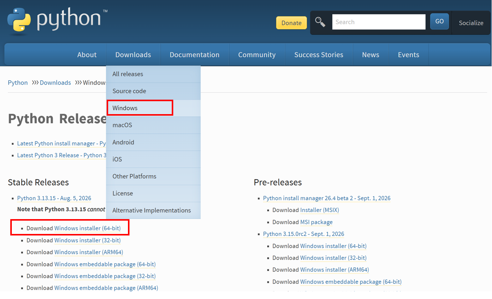
1.3.2五步装完（Windows）¶
1运行安装程序，勾选 “Add Python to PATH”
运行下载的安装程序（这里以 3.12 为例，最新版过程相同）。一定要勾选底部的 “Add Python to PATH”，然后点击 “Customize installation”。这一勾决定了后面能不能直接在终端里敲 python——不勾的话，第 1.3.5 节就得手动改环境变量。
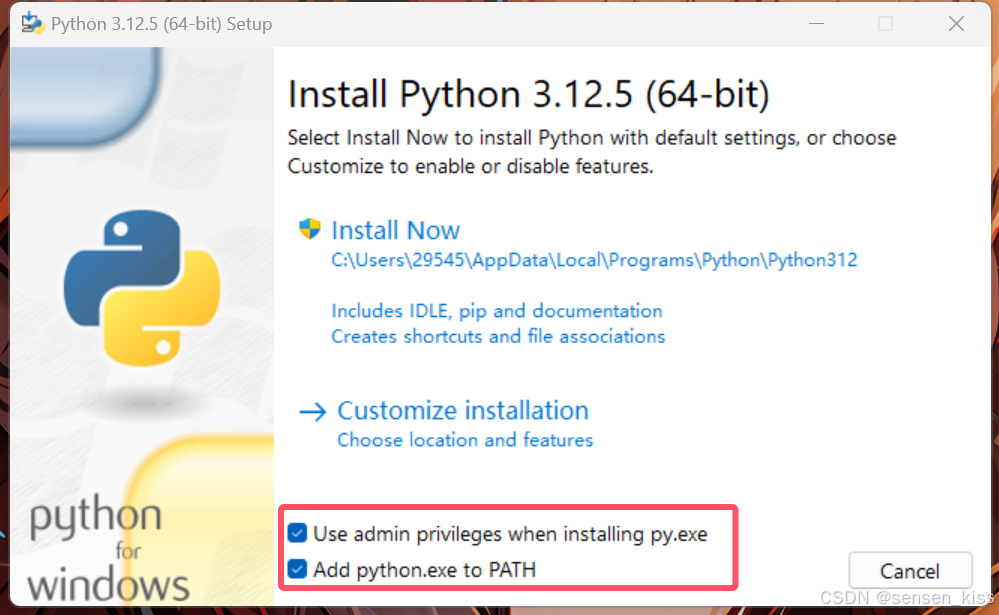
2可选功能保持默认
保持默认勾选即可（勾选框里的 Documentation、pip、tcl/tk and IDLE、Python test suite、py launcher 全部保留）。tcl/tk and IDLE 千万不要取消，取消后项目一的图形界面会因缺少 tkinter 而无法启动。
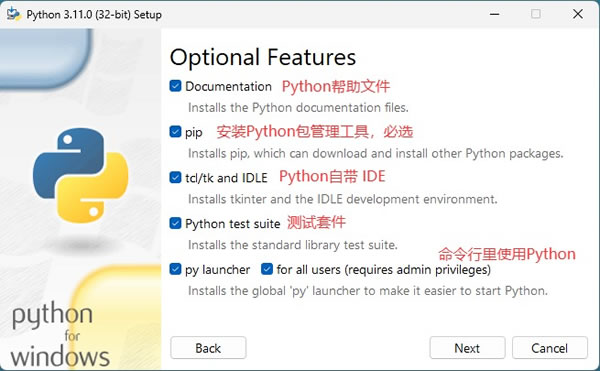
3选择安装位置，建议装到非系统盘
建议安装到非系统盘，比如这里选 D 盘。路径尽量不要带中文和空格，否则个别第三方库在编译或写缓存时会出问题。改完路径点 Next。
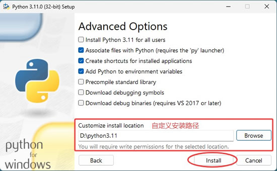
4等待安装完成，点击 “Disable path length limit”
安装过程约 1—2 分钟。完成后务必点一下 “Disable path length limit”（解除 260 字符路径长度限制），再点 Close。这一步不影响能不能运行，但能避免以后解压深层目录时报“路径过长”。
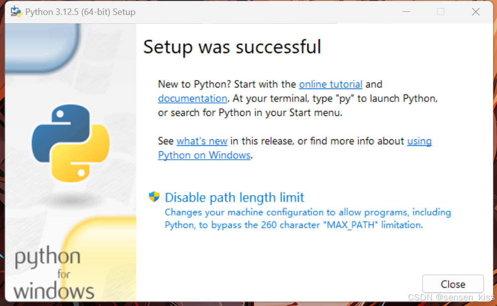
5验证安装
按 Win+R 输入 cmd 打开命令行，输入 python --version，如果输出版本号则表示安装成功。也可以按 Win+X 唤出菜单、点“i”进入终端，输入 python -V 查看 Python 版本、输入 pip -V 查看 pip 版本。
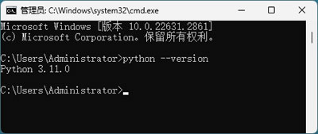
若提示“不是内部或外部命令”，请先用 py 启动器试一次：py -V。能出版本号说明 Python 已安装但 PATH 未配置，按 1.3.5 节手动加 PATH；py 也不行的话，说明安装本身失败，重装一次并记得勾选 PATH。
1.3.3第一个 Python 程序¶
安装完先跑一个 “Hello World” 确认解释器可用。在命令行窗口里输入 python 或 python3 进入交互式环境，然后直接敲代码：
▍交互式环境
>>> print("Hello World")
Hello World
>>> 1 + 1
2
>>> exit()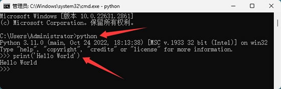
交互式环境适合临时算一下、验证一个表达式，但它不保存代码。作业要求“提交程序”时交的是 .py 文件，必须用下面的方式保存并运行。
1.3.4用 IDLE 编写并运行 .py 文件¶
安装 Python 后会自动装一个 IDLE，它是一个 Python Shell（可以在 IDLE 窗口标题栏上看到）。在开始菜单里找到 Python IDLE 打开它，在菜单栏选择 “File → New File”，会打开一个新窗口，可以直接编写 Python 代码。
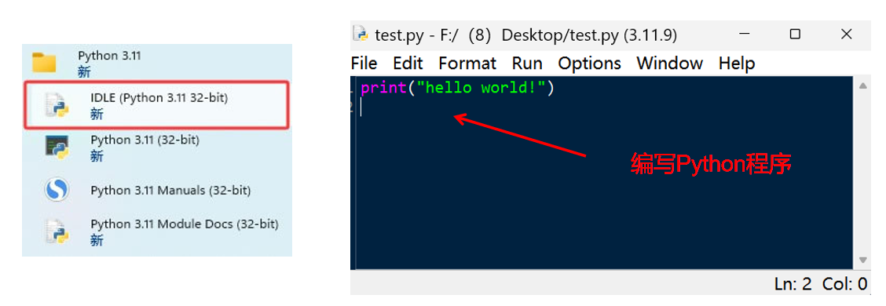
编写完成后按 <Ctrl+S> 保存文件（得到一个 .py 文件）。运行也很简单：在新窗口菜单里依次选择 “Run → Run Module”，程序的运行结果会出现在 IDLE Shell 窗口。
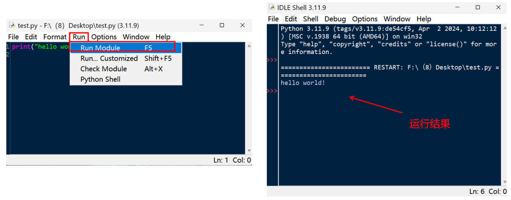
IDLE 的功能相对较弱，这里推荐两款热门的 Python IDE 供大家选择：PyCharm 和 VS Code。本课程的手册示例统一用 VS Code（1.5 节），因为它轻量、跨平台、自带集成终端，最适合演示“在项目目录里跑命令”。
1.3.5常见问题：手动把 Python 加入 PATH¶
初学者最常遇到的问题就是提示 “'python' 不是内部或外部命令”。解决方法有两个：要么重新安装 Python 并勾选 “Add Python to PATH”，也可以手动把 Python 安装目录加进 PATH 环境变量。这里讲解第二种方式。
1打开系统属性
右键点击“此电脑”或“计算机”，选择“属性”；然后点击“高级系统设置”。
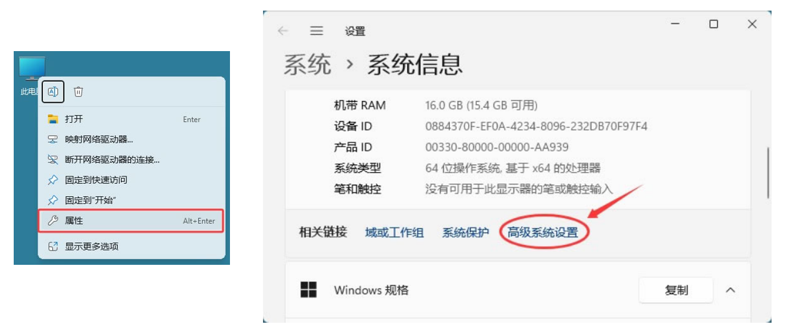
2进入环境变量编辑
在系统属性窗口中点击“环境变量”按钮；在用户变量或系统变量部分，找到并选中 “Path” 变量，点击“编辑”。
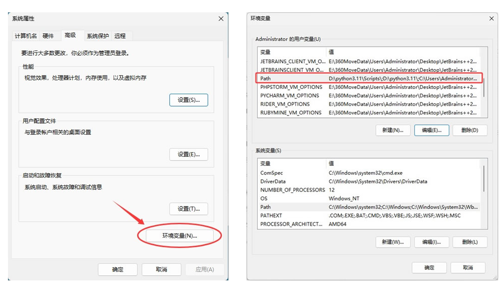
3新建两条路径
点击“新建”，手动添加 “D:\python3.11\” 和 “D:\python3.11\Scripts\”，把 Python 安装路径改成你自己的，然后单击“确定”完成设置。两条都要加：第一条让 python 可执行，第二条让 pip 可执行。
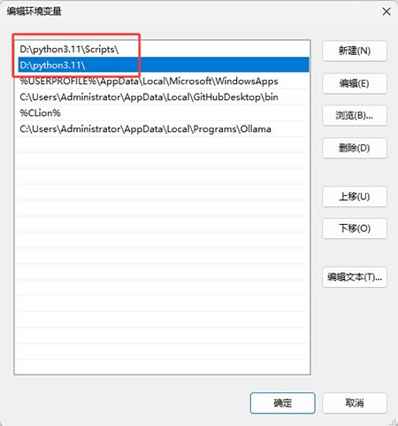
4重开终端验证
改完 PATH 后必须关掉所有已打开的终端窗口再重开（旧窗口不会刷新环境变量），然后重新执行 python -V 与 pip -V。
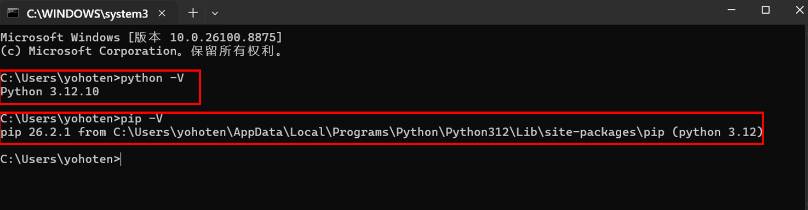
1.4虚拟环境：一次配好，五处通用¶
虚拟环境（venv）是在项目目录下建一个独立的 Python 副本目录，把依赖装进这个目录，从而不污染系统 Python，也便于不同项目使用不同版本的库。课程实验里它不是强制要求，但一旦某天 pip 装出来的版本和同学不一样导致结果不同，虚拟环境就是最省事的解释方式。
▍venv 全流程
cd /d "F:\（8）Desktop\财务会计实务与应用\Python财务应用\works\01-货币时间价值与资本成本计算器\financial_calculator"
python -m venv .venv
.venv\Scripts\activate # CMD
.venv\Scripts\Activate.ps1 # PowerShell
source .venv/bin/activate # macOS / Linux
python -m pip install -r requirements.txt
deactivate # 用完退出
| 终端 | 激活命令 | 成功标志 |
|---|---|---|
| CMD（cmd.exe） | .venv\Scripts\activate | 提示符前出现 (.venv) 前缀 |
| PowerShell | .venv\Scripts\Activate.ps1 | 同上；若被策略拦截见下方提示 |
| Windows Terminal | 随所选 shell 而定 | 看标签页标题与提示符 |
| Git Bash | source .venv/Scripts/activate | 提示符前出现 (.venv) |
| macOS / Linux | source .venv/bin/activate | 提示符前出现 (.venv) |
PowerShell 首次激活若报“在此系统上禁止运行脚本”，用管理员终端执行一次 Set-ExecutionPolicy -Scope CurrentUser RemoteSigned 即可；不想改策略就换 CMD 或 Git Bash。激活后务必再执行一次 python -V 确认路径变了：where python 的第一行应指向 .venv\Scripts\python.exe。
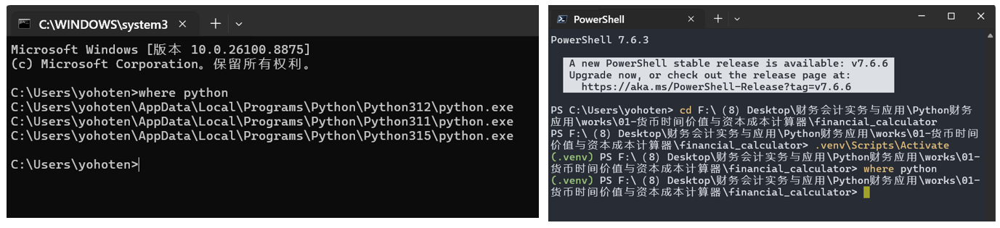
1.5IDE 安装与配置（VS Code）¶
1.5.1下载与安装 VS Code¶
推荐使用开源、轻量的 VS Code 作为本地集成开发环境（IDE）。访问 VS Code 官网（code.visualstudio.com），根据操作系统选择相应版本的 VS Code 进行下载和安装。安装时保持默认选项即可，其中“添加到右键菜单”建议勾上，后面“用 VS Code 打开项目文件夹”会更方便。
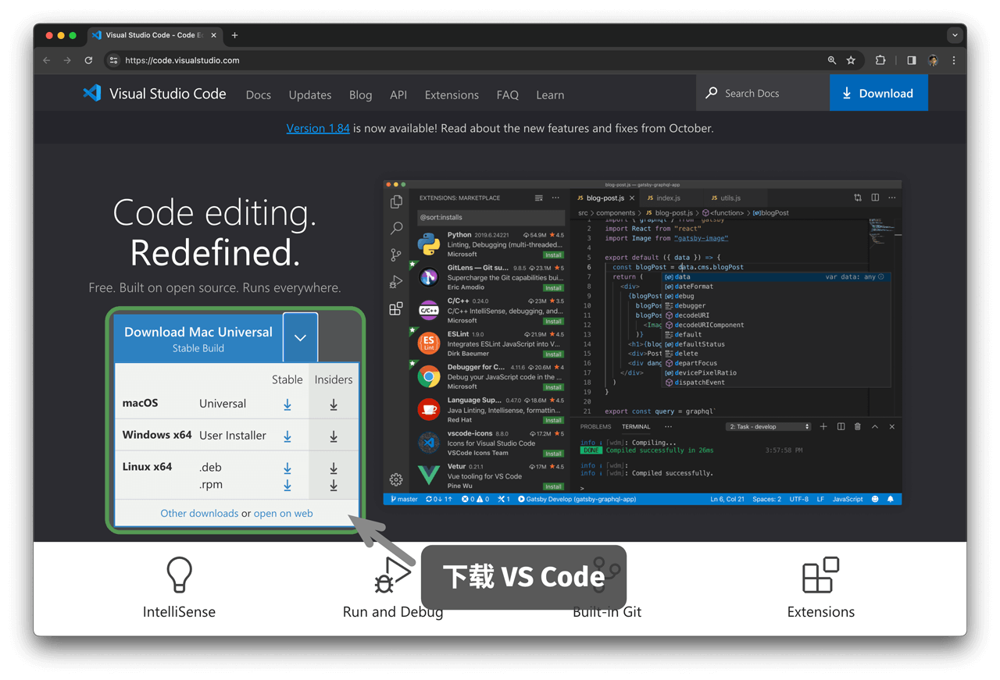
1.5.2安装 Python 扩展包¶
VS Code 拥有强大的扩展包生态系统，支持大多数编程语言的运行和调试。以 Python 为例，安装 “Python Extension Pack” 扩展包之后，即可进行 Python 代码编写、运行与调试。
- 点左侧活动栏的扩展图标（或按 Ctrl+Shift+X）打开扩展面板；
- 搜索框输入 Python Extension Pack，认准 Microsoft 发布的那一条；
- 点击 “Install”，等待右下角提示安装完成（它会带上 Pylance、debugpy 等一组扩展）；
- 安装完重启一次 VS Code（Ctrl+Shift+P → Reload Window）。
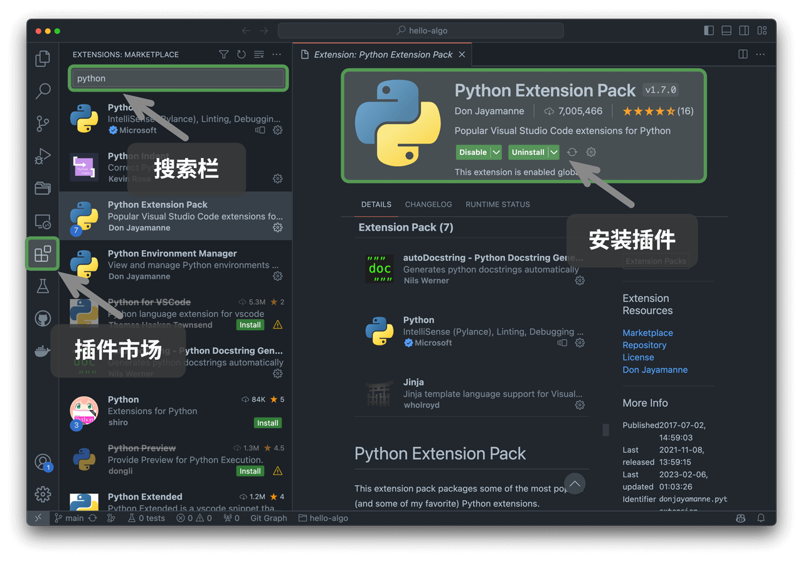
1.5.3打开项目文件夹与多根工作区¶
如果你不想在终端里来回切换目录，用 VS Code 打开项目文件夹本身是最省心的做法：右下角选择解释器（第一次要指向刚装的 Python 或 .venv），在文件顶部菜单 Terminal → New Terminal 打开的终端会自动位于项目目录，编辑器右上角的 → 运行按钮等价于在终端里执行 python 当前文件。
- 文件 → 将文件夹添加到工作区：一次把 works/ 下五个项目都加进来，便于横向对照；
- Ctrl + Shift + P → Python: Select Interpreter：切换解释器，注意选中的就是终端里 python 指向的那个；
- 在 .vscode/settings.json 里设 "python.analysis.extraPaths" 指向项目目录，可消除“找不到模块”的红色波浪线（这只是编辑器提示，不影响运行）。
▍推荐设置
// .vscode/settings.json
{
"python.analysis.extraPaths": [".", "src"],
"python.defaultInterpreterPath": "${workspaceFolder}\\.venv\\Scripts\\python.exe",
"terminal.integrated.cwd": "${workspaceFolder}",
"files.encoding": "utf8",
"files.exclude": { "**/__pycache__": true, "**/.venv": true }
}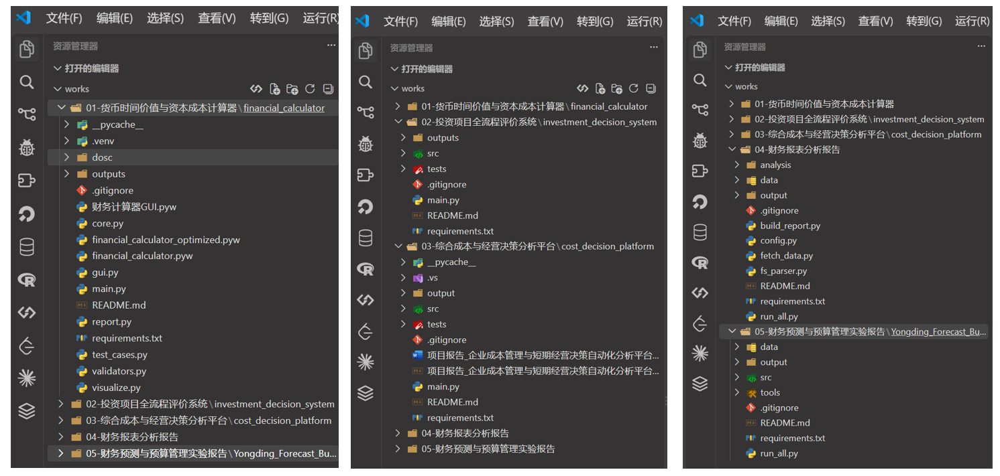
1.5.4选择解释器与在集成终端里运行¶
- Ctrl+Shift+P → 输入 Python: Select Interpreter → 选你刚装的那个（或 .venv）；
- 看右下角状态栏的版本号，它变了才说明切换成功；
- Ctrl+` （反引号）打开集成终端，提示符路径应是项目目录；若不是，说明你打开的不是该项目的窗口，用“文件 → 打开文件夹”重开；
- 在终端里执行本手册给出的命令，例如 python main.py --demo；
- 运行当前文件也可以直接点编辑器右上角的 ▶（等价于 python 当前文件），但带参数的运行必须在终端里敲，这就是本手册所有命令都写成终端形式的原因。
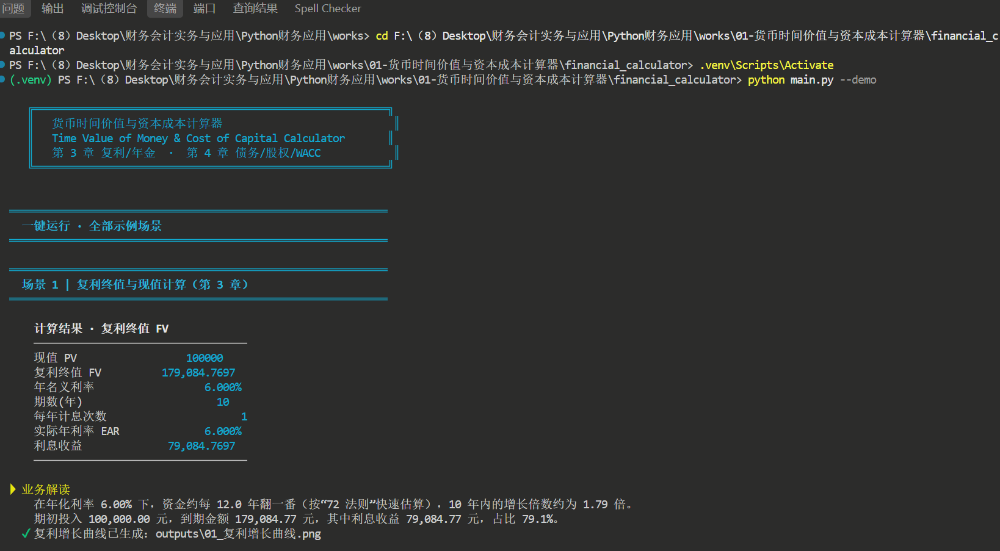
1.5.5调试与断点（可选，但很值得会）¶
五个项目都是命令行程序，出问题时最有用的是调试器而不是 print。三步即可上手：
- 在可疑的那一行左侧点一下，出现红色圆点（断点）；
- 按 F5，首次会让你选环境，选 “Python File”；如果程序需要菜单输入，改用 “Python: Terminal (integrated)” 配置，否则输入会被吞掉；
- 命中断点后，左侧“变量”窗口能看到每个参数的实际值，F10 单步跳过、F11 步入函数、继续按 F5 跑完。
建议拿项目一的 core.py 里 fv_compound() 试一次：在函数第一行打断点，跑一个场景，看 pv / rate / n 三个参数的真实值——很多人会在这里第一次发现“原来利率传进来是 6 而不是 0.06”。
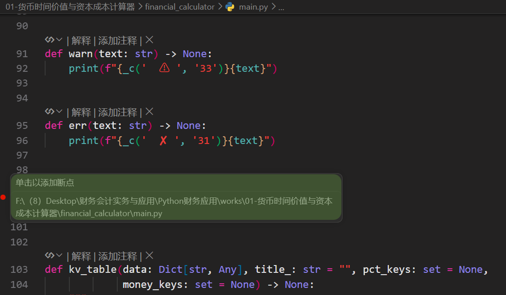
1.5.6IDE 常见问题¶
| 现象 | 原因 | 处理 |
|---|---|---|
| 右上角 ▶ 点了没反应 | 没装 Python 扩展或未选解释器 | 装扩展 → Ctrl+Shift+P 选解释器 |
| 终端里 python 与状态栏版本不一致 | 终端是切换解释器之前开的 | 关掉该终端重开一个 |
| import 语句下面红色波浪线 | Pylance 找不到模块路径 | settings.json 里配 extraPaths（见 1.5.3） |
| 中文注释显示成方块 | 字体不含中文 | 设置里把 editor.fontFamily 加上 “Microsoft YaHei” |
| 文件保存后变乱码 | 编码不是 UTF-8 | 右下角编码 → Save with encoding → UTF-8 |
| F5 卡在等待输入 | 调试配置没用集成终端 | launch.json 里 console 改为 integratedTerminal |
1.6安装依赖¶
每个项目都自带 requirements.txt，里面列了项目所需的库名。优先用它安装依赖：进入项目文件夹后右键选择“在终端中打开”，这样终端就已经位于项目目录，然后执行 pip install 安装依赖。
▍三种安装方式
# 方式一：用项目自带的清单（推荐）
pip install -r requirements.txt
# 方式二：一次性装齐五个项目的常用库
pip install numpy pandas matplotlib openpyxl python-docx scipy statsmodels requests lxml Pillow
# 方式三：只装项目一所需
pip install pandas numpy matplotlib openpyxl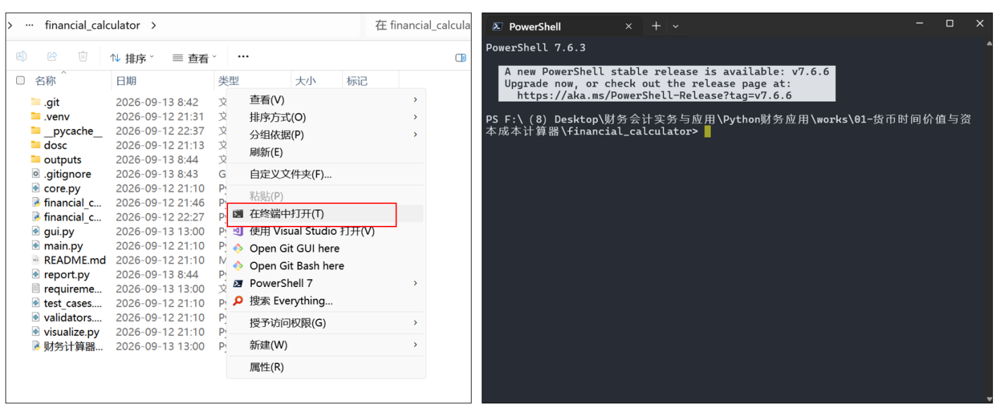
国内网络下建议加镜像参数，否则常见超时后 pip 会反复重试。在方式一、二的末尾添加镜像源网址即可加速下载。
▍镜像加速
pip install -r requirements.txt -i https://pypi.tuna.tsinghua.edu.cn/simple
pip install scipy -i https://mirrors.aliyun.com/pypi/simple/装完先自检，别急着跑项目：python -m pip show pandas 能打印出版本号，说明它确实装进了当前解释器。若 show 不到却以为装了，多半是 pip 与 python 指向了两个不同的解释器（见 1.9.2）。
1.7中文字体：图表不乱码的关键¶
matplotlib 默认字体不含中文字形，因此五个项目都在代码里显式设置了中文字体候选列表。下表是从各项目源码中抄出的真实候选顺序，程序会逐个尝试、命中即用。
| 项目 | 源码中设置的中文字体候选 | Windows 是否自带 |
|---|---|---|
| 项目一 | Microsoft YaHei, SimHei, Noto Sans CJK SC, WenQuanYi Zen Hei | 是（雅黑/黑体） |
| 项目二 | Microsoft YaHei, SimHei, Noto Sans CJK SC, WenQuanYi Zen Hei, Arial Unicode MS, DejaVu Sans | 是 |
| 项目三 | Microsoft YaHei, SimHei | 是 |
| 项目四 | Microsoft YaHei, SimHei, Noto Sans CJK SC | 是 |
| 项目五 | Microsoft YaHei, SimHei, SimSun, KaiTi, Arial Unicode MS | 是 |
Windows 中文字体位于 C:\Windows\Fonts；若你用的是精简版系统或 Linux，需要先安装 Noto Sans CJK SC（思源黑体），否则图上的中文会显示成方框。
验证字体是否生效，最省事的办法是跑一次“一定会出图”的命令，然后放大检查图上的标题：项目一用 python main.py --scene 1，项目二用 python main.py --case CASE-1，项目三用 python main.py --scenario 1，项目四用 python run_all.py --no-charts 之外的完整跑，项目五用 python run_all.py --skip-fetch --no-docx。
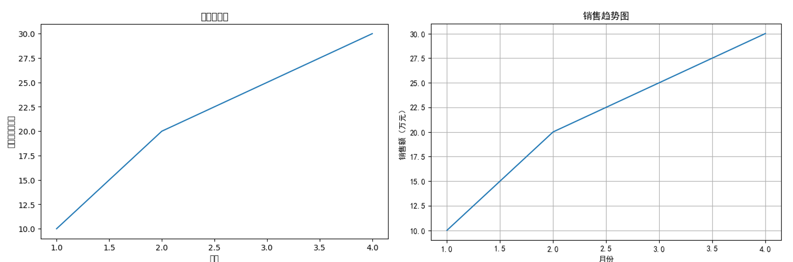
本项目集的图表配色遵循中国财务与股市惯例：正为红、负为绿，与欧美习惯相反。写报告引用图表时最好注明这一点，避免读者误读。
1.8首次运行自检清单¶
下面这份清单请逐项打勾。它覆盖了这五个项目里见过的全部环境类问题，做完这六项，后续章节就不会再被环境问题打断。
| 序号 | 检查项 | 命令 / 动作 | 期望结果 |
|---|---|---|---|
| 1 | Python 可用 | python -V | 显示 3.9 及以上版本号 |
| 2 | pip 与 python 同源 | python -m pip -V | 输出路径里的 python 与上一步同一安装目录 |
| 3 | 依赖齐全 | python -m pip show pandas openpyxl | 两个都能打印出版本信息 |
| 4 | 中文字体可用 | 跑任一“一定出图”的命令并放大图标题 | 标题中文清晰，无方框 |
| 5 | 有写文件权限 | 在项目目录新建一个文本文件再删除 | 成功；否则见 1.9.4 |
| 6 | 路径能进入 | cd /d 到项目目录后执行 dir | 能看到 main.py / src 等条目 |
把这六条做成一个 check_env.py 放在项目根目录，每次换电脑先跑它。附录 E 给了这个脚本的完整代码，二十行左右，能省掉你之后所有的“为什么跑不起来”。
1.9环境类常见问题¶
1.9.1'python' 不是内部或外部命令¶
原因：安装时未勾选 Add python.exe to PATH。三种解法按推荐度排序：
- 改用 py 启动器：把命令里的 python 换成 py（py -m pip install …、py main.py）；
- 重装 Python 并勾选 PATH 复选框（1.3.2 第 1 步）；
- 手工把 Python 安装目录与其下 Scripts 目录加入系统环境变量 Path，然后重新打开终端（完整截图步骤见 1.3.5）。
1.9.2ModuleNotFoundError: No module named 'pandas'¶
原因：pip 装到的解释器与运行脚本的解释器不是同一个。判断方法是把两条命令对照看：
$ python -c "import sys; print(sys.executable)"
D:\python3.12\python.exe
$ pip -V
pip 24.0 from C:\Users\me\AppData\...\site-packages\pip (python 3.11)两者路径不一致即确诊。统一办法：始终用 python -m pip install …，这样 pip 一定装进当前 python 指向的解释器。
1.9.3cd 命令跨盘符失败¶
在 CMD 里从 C 盘切到 F 盘需要带 /d：cd /d F:\（8）Desktop\…。PowerShell 不需要。此外 works 的父目录名里带有中文括号（8），整条路径含中文与空格，请务必给整条路径加英文双引号。
1.9.4产物文件被占用：PermissionError¶
Excel 打开着 09_计算结果汇总.xlsx 时再次运行程序，写入会失败并抛出 PermissionError。关闭 Excel 即可。同理，图片被 Windows 照片查看器锁定时，覆盖写入也会失败。
1.9.5matplotlib 报找不到后端或无窗口¶
五个项目出图全部使用无窗口后端（matplotlib.use("Agg")），因此不会弹出图表窗口，图是直接写成 PNG 文件的。如果你以为“没弹窗口 = 没出图”，请到 outputs/ 目录按修改时间排序确认。
1.9.6项目五第一阶段报找不到 npx¶
项目五用 Node.js 的 npx 调用取数工具。未装 Node.js 或无外网时，直接用 python run_all.py --skip-fetch，仓库里已落盘 2016—2025 的完整数据快照，后七个阶段完全不需要联网。
1.10本章小结¶
- 五个项目共用 Python 3 + numpy/pandas/matplotlib 三件套，差异只在 openpyxl、python-docx、scipy、statsmodels、requests 与 Node.js；
- 安装 Python 的两个关键动作：勾选 Add Python to PATH 与 点击 Disable path length limit；
- IDE 用 VS Code：装 Python Extension Pack、打开项目文件夹、在集成终端里跑命令、右下角确认解释器；
- 依赖一律用 python -m pip install -r requirements.txt，国内加镜像；
- 输出目录锚定脚本自身位置，产物永远在项目目录下的 outputs/ 或 output/；
- 利率一律填小数、金额单位在各项目间不同，抄结果前先确认口径（表 0-3）；
- 中文字体靠源码里的候选列表自动匹配，Windows 自带雅黑/黑体即可通过；
- 环境类报错（找不到模块、找不到命令、乱码、写文件失败）与业务口径类问题要分开处理，先分清再动手，见第 8 章排障总表。
项目一：货币时间价值与资本成本计算器
这是五个项目里最容易上手、也最容易被“口径”绊倒的一个。它把第 3 章的复利年金与第 4 章的资本成本做成了一台计算器：命令行、图形界面、单文件版三种入口共用同一套计算内核，算完自动出图、出 Excel，并给出可以直接抄进报告的业务解读。
2.1项目速览¶
项目一解决的是财务计算中最基础的两类问题：一笔钱在时间轴上怎么挪（复利与年金），以及企业用钱的代价是多少（债务成本、股权成本、加权平均资本成本）。程序把这两类问题做成 6 个场景，每个场景都遵循同一条流水线：

| 文件 | 行数级别 | 职责 | 你什么时候需要打开它 |
|---|---|---|---|
| main.py | 约 730 行 | 命令行入口：菜单、6 个场景的问答与结果排版 | 想知道某个场景会问你什么、输出长什么样 |
| gui.py | 约 1180 行 | tkinter 图形界面：7 个页签，复用 main.py 的场景函数 | 不想在终端里敲参数，或要做界面演示 |
| core.py | 约 300 行 | 13 个纯计算函数（复利、年金、YTM、CAPM、DDM、WACC、等额本息、NPV/IRR） | 想手工复核某个数、或把函数搬进自己的作业代码 |
| validators.py | 约 260 行 | RULES 声明式校验规则 + 4 个业务解读函数 | 被程序拦下不知道原因，或想调整合理区间 |
| visualize.py | 约 400 行 | 8 个绘图函数（Agg 后端，中文字体） | 想改图的样式或加一张图 |
| report.py | 约 250 行 | Excel 与 Markdown 导出（多工作表） | 想把结果整理成附表 |
| test_cases.py | 约 430 行 | 6 组用例 + 附加校验测试，断言通过才继续 | 交作业前做一次数值自检 |
| financial_calculator.pyw | 约 3070 行 | 单文件版（计算+界面+图表全部内联） | 只想双击运行、不关心代码结构 |

2.2三分钟跑通第一次¶
1进入项目目录
▍CMD
cd /d "F:\（8）Desktop\财务会计实务与应用\Python财务应用\works\01-货币时间价值与资本成本计算器\financial_calculator"PowerShell 用户去掉 /d 即可。若嫌路径长，可在资源管理器地址栏输入 cmd 回车直接打开。
2安装依赖
pip install -r requirements.txtrequirements.txt 里列了 numpy、pandas、matplotlib、openpyxl 与 pillow 五项；tkinter 随 Python 自带，不在清单中。
3一键运行全部场景
python main.py --demo这条命令会按内置示例参数依次跑完 6 个场景，生成 7 张 PNG、2 个 Excel 与 1 个 Markdown 汇总，全程不需要输入。终端最后会列出本次生成的产物文件名。
$ python main.py --demo
✔ 01_复利增长曲线.png
✔ 02_年金现金流时间轴.png
✔ 03_债权资本成本曲线.png
✔ 04_WACC结构分解.png
✔ 05_WACC敏感性分析.png
✔ 06_资本结构优化对比.png
✔ 07_贷款还款计划.xlsx 08_还款结构.png
✔ 09_计算结果汇总.xlsx 计算结果汇总.md
全部场景执行完毕，产物目录：…\financial_calculator\outputs--demo 用的是示例参数，不是你作业里的参数。跑通它只是为了确认环境没问题；真正做作业时要用 2.4 节的交互模式或 2.5 节的图形界面逐项输入。
2.3全部启动方式与参数¶
| 命令 | 效果 | 适合场景 |
|---|---|---|
| python main.py | 进入交互式菜单，按编号选场景 | 做作业、逐项输入自己的参数 |
| python main.py --demo | 用示例参数跑完 6 个场景并导出全部产物 | 第一次验证环境、演示 |
| python main.py --scene 3 | 非交互地只跑第 3 个场景（1—6 可选） | 重做某一个场景 |
| python main.py --gui | 启动图形界面（等价于 python gui.py） | 习惯点鼠标 |
| python gui.py | 直接启动图形界面 | 同上 |
| python gui.py --screenshot 路径.png | 无人值守渲染界面并截图 | 写报告需要界面截图 |
| python gui.py --check | 检查依赖与中文字体是否齐备 | 界面打不开时先跑它 |
| python test_cases.py | 执行 6 组用例断言并导出 10_测试用例明细.xlsx | 交作业前自检 |
| 双击 财务计算器GUI.pyw | 无控制台窗口地启动图形界面 | 演示时不想看到黑框 |
| python financial_calculator.pyw --demo | 单文件版跑演示（另有 --selftest、--check-imports） | 只有.pyw 文件、没有源码目录时 |
2.4输入口径与三层校验¶
程序在算之前会检查每个参数，检查分三层，第一、二层不通过就阻断计算，第三层只警告不阻断。下表是从 validators.py 的 RULES 中逐条抄出的 12 条规则区间。
| 规则名 | 含义 | 硬边界（超出即报错） | 常见区间（超出仅提示） |
|---|---|---|---|
| positive_amount | 金额（须为正） | 1e-9 ~ 1e15 元 | ≤ 1e12 元 |
| rate | 利率 | -0.99 ~ 1.00 | -0.05 ~ 0.30 |
| discount_rate | 折现率 | 0 ~ 1.00 | 0.01 ~ 0.30 |
| coupon_rate | 票面利率 | 0 ~ 0.50 | 0.01 ~ 0.12 |
| rf | 无风险利率 | 0 ~ 0.20 | 0.015 ~ 0.06 |
| rm | 市场期望收益率 | -0.5 ~ 0.60 | 0.05 ~ 0.20 |
| beta | β 系数 | 0 ~ 5.0 | 0.3 ~ 2.5 |
| tax_rate | 所得税税率 | 0 ~ 0.99 | 0 ~ 0.35 |
| growth | 增长率 | -0.5 ~ 1.0 | -0.1 ~ 0.15 |
| years | 年数（正整数） | 1 ~ 100 | 1 ~ 50 |
| periods | 期数（正整数） | 1 ~ 1200 | 1 ~ 600 |
| weight | 权重 | 0 ~ 1 | 0 ~ 1 |
所有利率类参数的单位都是“小数”，即 0.06 表示 6%。这是表 2-3 中所有区间的计量前提。
当输入不合法时，程序给出的提示遵循三段式：错在哪里、为什么错、应如何修正。例如把年利率输成 6（超出硬边界 -0.99 ~ 1.00）：
请输入 年利率 r [0.06]: 6
✘ 【利率】取值 6.0 超出有效范围 [-0.99, 1.0]（单位：小数（0.05 表示 5%））。该值会使
财务模型失去数学或经济意义，请检查是否混淆了“小数”与“百分数”口径（例如 6% 应输入
0.06 而非 6）。而如果输入的是 0.5（在硬边界内、但超出常见区间 -0.05 ~ 0.30），程序只给出警告并继续计算：
请输入 年利率 r [0.06]: 0.5
⚠ 【利率】取值 0.5 偏离常见业务区间 [-0.05, 0.3]（单位：小数（0.05 表示 5%）），
数值可计算但较为极端，建议核对数据来源。第三层（合理性）只警告、不阻断，因此你仍然会得到一个结果。这在作业里很危险：β = 3.0、年数 = 80 都能算，但结论未必站得住。凡是看到 ⚠ 提示，都要回头确认数据来源，不要直接抄结果。
2.5六个场景逐个操作¶
交互菜单把六个场景按课程章节分组显示（第 3 章：1、2、6；第 4 章：3、4、5）。下面逐个说明：方括号 [ ] 中的数字是直接回车即采用的默认值。

2.5.1场景 1：复利终值与现值¶
请选择功能编号: 1
提示：利率请输入小数形式，例如 6% 输入 0.06；期数请输入正整数。
请输入 现值 PV（元） [100000]:
请输入 年利率 r [0.06]:
请输入 年数 n [10]:
请输入 每年计息次数 m（1=年/2=半年/4=季/12=月） [1]:全部采用默认值时，程序算出 FV = 100,000 × (1 + 0.06)^10 = 179,084.77 元；若把 m 改成 12（按月复利），终值变为 181,939.67 元，对应的实际年利率 EAR = (1 + 0.06/12)^12 − 1 = 6.1678%。本场景生成 01_复利增长曲线.png。
把 PV 改成 100000、r 改成 0.07、n 改成 1，验证结果是否等于 107,000 元——这正是教材里“一年后本利和”的经典例子，可用它确认计算器没算错。
2.5.2场景 2：年金终值与现值¶
依次询问：每期现金流 PMT [10000]、每期利率 r [0.08]、期数 n [10]，并询问普通年金（期末）还是预付年金（期初）。默认参数下：
FVA = A × [ (1 + r)^n − 1 ] / r
普通年金终值；预付年金终值 = FVA × (1 + r)
PVA = A × [ 1 − (1 + r)^(-n) ] / r
普通年金现值；预付年金现值 = PVA × (1 + r)
| 口径 | 系数 | 金额（默认参数） |
|---|---|---|
| 普通年金终值 (F/A, 8%, 10) | 14.486562 | 144,865.62 元 |
| 预付年金终值 | 15.645487 | 156,454.87 元 |
| 普通年金现值 (P/A, 8%, 10) | 6.710081 | 67,100.81 元 |
系数与教材附表一致，可用来交叉核对：查表法与程序法应当完全相同。
本场景生成 02_年金现金流时间轴.png，图上把每笔现金流按发生时刻画成竖线，期末与期初的差别一眼可见。
2.5.3场景 3：债权资本成本（含税盾）¶
询问五个参数：债券面值 F [1000]、票面利率 [0.06]、期限 [5]、发行价/净筹资额 [950]、所得税税率 [0.25]。程序用两条路算债务成本：
- 贴现模式（YTM/IRR 法）：解方程使未来现金流现值等于净筹资额，程序用牛顿迭代求解；
- 近似公式法：Kd = [I(1−T) + (F−N)/n] / [(F+N)/2]，作为快速校核。
| 发行价 | 税前资本成本 | 税后资本成本（T=25%） | 说明 |
|---|---|---|---|
| 950 元（折价） | 7.2269% | 5.4202% | 折价发行使实际成本高于票面 6% |
| 980 元 | 6.4810% | 4.8608% | 场景 5 默认使用的口径 |
| 1000 元（平价） | 6.0000% | 4.5000% | 平价时税前成本恰等于票面利率 |
税盾的效果就是“税后成本 = 税前成本 × (1 − T)”。在报告里写这一节时，务必同时给出税前与税后两个数，并说明WACC 里用的是税后成本。
本场景生成 03_债权资本成本曲线.png：横轴是发行价，纵轴是税前与税后资本成本，两条线之间的缺口就是税盾。
2.5.4场景 4：股权资本成本（CAPM 与 DDM 交叉验证）¶
询问七个参数：无风险利率 Rf [0.025]、β 系数 [1.2]、市场期望收益率 Rm [0.095]、规模/流动性附加溢价 [0]，以及用于 DDM 交叉验证的 D1 [0.5]、P0 [12.0]、g [0.04]。
Ks = Rf + β × (Rm − Rf) + 附加溢价
资本资产定价模型（CAPM）
Ks = D1 / P0 + g
股利增长模型（DDM，固定增长）
默认参数下：市场风险溢价 = 0.095 − 0.025 = 7.00%，CAPM 股权成本 = 0.025 + 1.2 × 0.07 = 10.90%；DDM 交叉验证值 = 0.5 / 12 + 0.04 = 8.1667%，两者相差 2.73 个百分点。
两个模型给出不同结果是正常现象，不是程序错误。CAPM 反映的是必要报酬率，DDM 反映的是按当前市价买入的隐含期望报酬率。报告里应解释差异来源（股利政策、增长率假设、市价是否高估），而不是挑一个好看的数写上去。
本场景不单独出图，结果以表格形式打印，并作为场景 5 的输入之一。
2.5.5场景 5：加权平均资本成本 WACC¶
这是项目一里参数最多的场景，分三步询问，共 12 个参数：
| 步骤 | 参数（默认值） | 口径 |
|---|---|---|
| 步骤一 债务 | 面值 1000、票面利率 0.06、期限 5 年、发行价 980、所得税税率 0.25 | 利率填小数；金额单位元 |
| 步骤二 股权 | 无风险利率 0.025、β 1.15、市场期望收益率 0.095 | 同上 |
| 步骤三 资本结构 | 股权市场价值 E 6000、债务市场价值 D 4000、优先股 P 0、优先股成本 Kp 0 | 请以市场价值口径填写，单位：万元（只用于算比重，同口径即可） |
WACC = [ D × Kd(1−T) + E × Ks + P × Kp ] / (D + E + P)
目标资本结构下的加权平均资本成本
默认参数下：税后债务成本 4.8608%、股权成本 10.55%、权重 0.4 / 0.6，于是 WACC = 8.2743%；其中股权贡献 6.33 个百分点、债务贡献 1.9443 个百分点。本场景一次生成三张图：04_WACC结构分解.png、05_WACC敏感性分析.png、06_资本结构优化对比.png。
06 号图会扫描不同负债比重下的 WACC 曲线。若你的作业要求“讨论最优资本结构”，把这张图的最低点对应的负债率抄进报告，并说明它成立的前提（债务成本随杠杆上升的假设）。
2.5.6场景 6：贷款还款计划（等额本息）¶
询问贷款本金 [1000000]、年利率 [0.042]、贷款年限 [20]、每年还款次数 [12]。
A = P × i × (1 + i)^n / [ (1 + i)^n − 1 ]
等额本息每期还款额；i 为期利率 = 年利率 / 每年还款次数
默认参数下：期利率 i = 0.042 / 12 = 0.35%，期数 n = 240，每期还款 6,165.71 元，总还款 1,479,769.77 元，总利息 479,769.77 元。首期利息 = 1,000,000 × 0.35% = 3,500.00 元，与计划表第一行完全一致。
本场景同时导出 07_贷款还款计划.xlsx（240 行逐期明细：期数、期初本金、还款额、利息、归还本金、期末本金）与 08_还款结构.png（利息与本金构成随时间变化的堆叠图）。
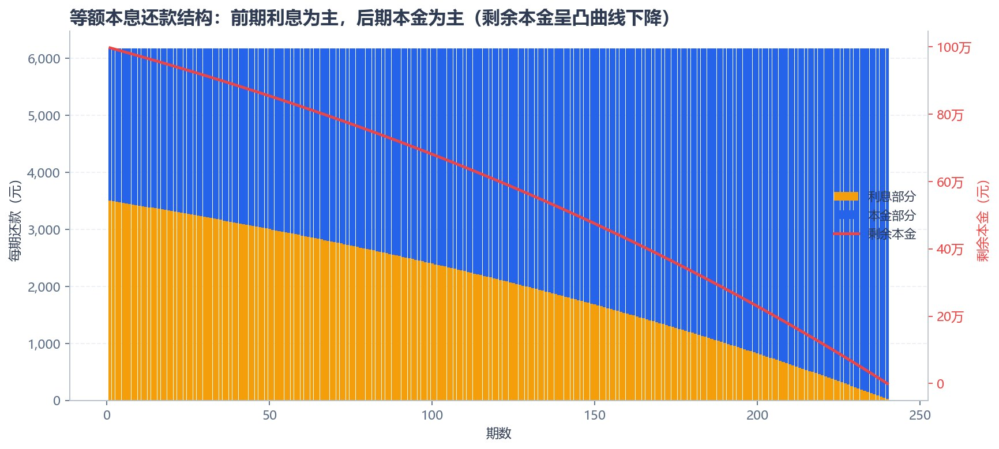
来源：项目一 outputs/08_还款结构.png
2.6图形界面版：gui.py 逐项操作¶
图形界面与命令行共用同一套计算、校验与解读内核，因此任何一边算出的结果都相同。窗口标题为“财务计算器 · 资金时间价值与资本成本 v3.0 图形界面版”，内部是 7 个页签：总览 + 6 个场景页。
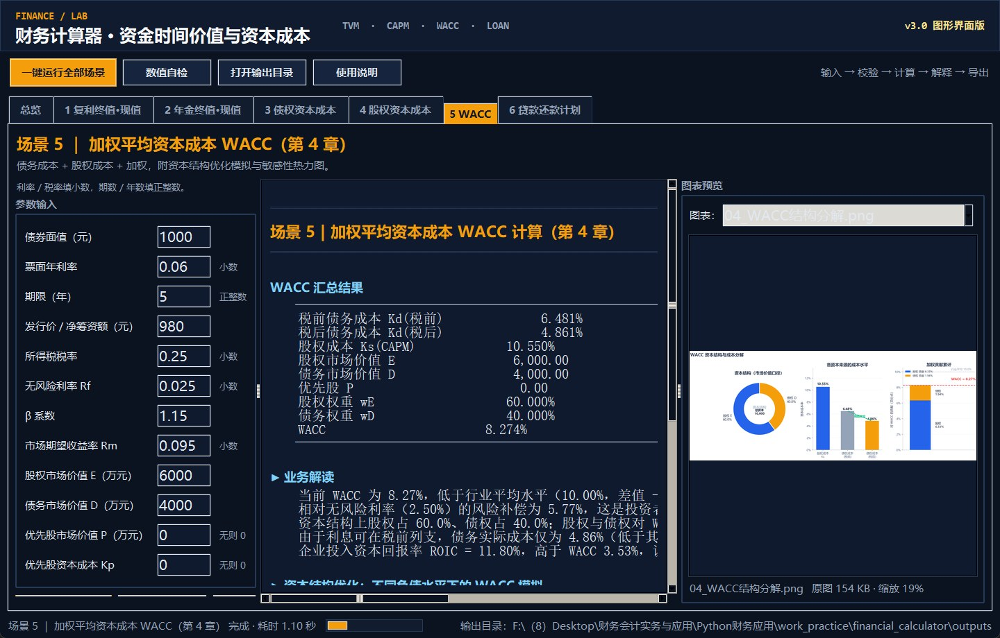
来源：项目一 outputs/gui_总览页.png（由 python gui.py --screenshot 生成）
2.6.1总览页的四个按钮¶
| 按钮 | 做了什么 | 产物 |
|---|---|---|
| 一键运行全部场景 | 按示例参数依次执行 6 个场景（等价于 python main.py --demo） | 7 张图 + 09_计算结果汇总.xlsx + 计算结果汇总.md |
| 运行数值自检 | 执行 test_cases.py 的 6 组用例 + 附加参数校验测试 | 10_测试用例明细.xlsx |
| 打开输出目录 | 用系统文件管理器打开 outputs/ | — |
| 使用说明 | 在结果区显示操作说明与首次使用提示 | — |
2.6.2场景页的三栏布局与字段¶
每个场景页都是三栏可拖拽布局：左「参数输入」、中「结果文本」、右「图表预览」，中间栏下方有「计算并生成图表」「恢复示例值」「清空」三个按钮。表单顶部固定提示：利率 / 税率填小数，期数 / 年数填正整数。
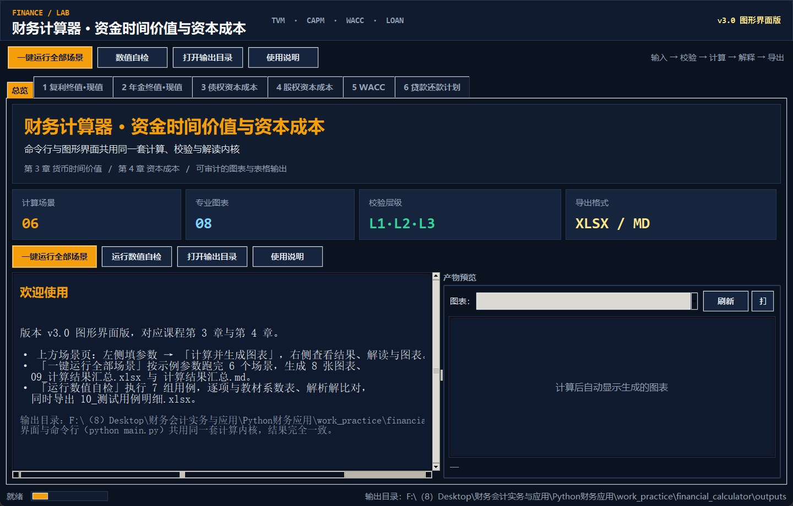
来源：项目一 outputs/gui_场景页预览.png
| 页签 | 字段（默认值） | 对应校验规则 |
|---|---|---|
| 1 复利终值·现值 | 现值 PV / 终值（100000）、年利率 r（0.06）、年数 n（10）、每年计息次数 m（1 按年，可选 2/4/12/365）、计算方向（已知现值求终值） | positive_amount / rate / years / — / — |
| 2 年金终值·现值 | 每期现金流 PMT（10000）、每期利率 r（0.08）、期数 n（10）、收付方式（期末收付·普通年金） | positive_amount / rate / periods / — |
| 3 债权资本成本 | 债券面值 F（1000）、票面利率（0.06）、债券期限（5）、发行价 / 净筹资额（950）、所得税税率（0.25） | positive_amount / coupon_rate / years / positive_amount / tax_rate |
| 4 股权资本成本 | 无风险利率 Rf（0.025）、β 系数（1.2）、市场期望收益率 Rm（0.095）、规模/流动性溢价（0）、是否用 DDM 交叉验证（是）、D1（0.5）、P0（12.0）、g（0.04） | rf / — / rm / — / — / positive_amount / positive_amount / growth |
| 5 WACC | 债务五项（同页 3，发行价默认 980）+ 股权三项（β 默认 1.15）+ 资本结构四项（E 6000、D 4000、P 0、Kp 0，单位万元） | 同页 3 与页 4 |
| 6 贷款还款计划 | 贷款本金（1000000）、年利率（0.042）、贷款年限（20）、每年还款次数（12 按月） | positive_amount / rate / years / — |
括号内为界面初始值，与命令行默认值完全一致；字段旁的 hint 会写明单位（如“小数”“正整数”“市场组合 = 1.0”）。
结果区是一个只读的等宽文本框，它把命令行的原始输出原样呈现，并按语义着色：✔ 绿色、⚠ 琥珀色、✘ 红色、小节标题浅蓝、一级标题橙色加粗。因此界面上看到的数字与命令行完全一致，包括表格对齐。
2.6.3界面打不开时的排查顺序¶
- 先跑 python gui.py --check，它会打印 tkinter、PIL、matplotlib 与中文字体的检测结果；
- 若提示缺少 pillow，执行 python -m pip install pillow（tkinter 不需要装）；
- 若窗口能开但图不显示，是 outputs/ 目录还没有 PNG，先点「一键运行全部场景」再按「刷新」；
- 若双击 .pyw 毫无反应，改用命令行 python gui.py 启动，这样报错信息才会显示出来。
2.7三个版本该用哪一个¶
项目目录里同时存在“模块化版”（main.py + core.py + …）与“单文件版”（financial_calculator.pyw，把计算、界面、绘图全部内联在一个文件里）。
| 版本 | 启动方式 | 优点 | 代价 | 建议 |
|---|---|---|---|---|
| 模块化版 | python main.py / python gui.py | 结构清晰、便于改代码与定位问题 | 文件多，不能只拷一个文件走 | 做作业、要改参数或加功能时用 |
| 单文件版 | 双击 financial_calculator.pyw 或 python … --demo | 一个文件即可运行，方便发给同学 | 约 3070 行，改一处要找半天 | 只需要演示与出结果时用 |
| 启动器 | 双击 财务计算器GUI.pyw | 无控制台黑框，体验接近桌面软件 | 出错时看不到报错信息 | 课堂演示 |
2.8七张图逐个怎么读¶
下面按文件编号顺序说明每张图表达什么、报告里该配哪句话。所有图都保存在 outputs/ 目录，分辨率由代码统一设置，可直接插入 Word。
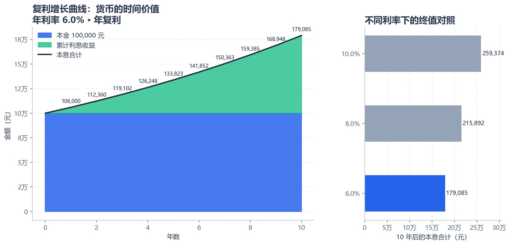
来源：项目一 outputs/01_复利增长曲线.png
读图要点：三条曲线的间距随年数拉大，直观说明“时间 × 利率”的乘积效应；报告里可用它引出“为什么长期资金成本必须复利计算”。
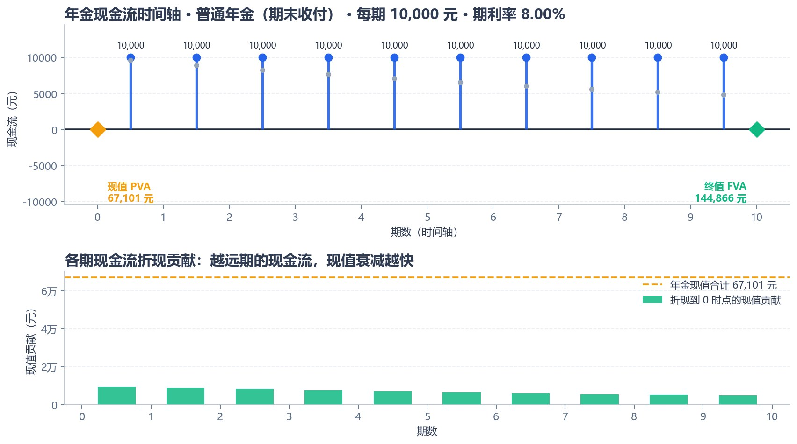
来源：项目一 outputs/02_年金现金流时间轴.png
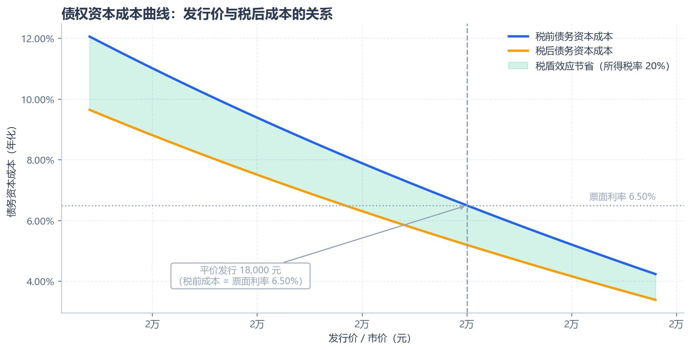
来源：项目一 outputs/03_债权资本成本曲线.png
两条线之间的垂直距离就是税盾，随税率固定而近似平行；折价幅度越大（发行价越低），实际资本成本越高。
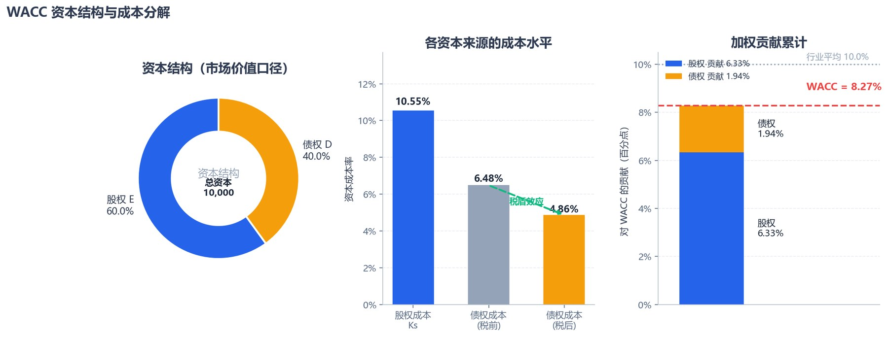
来源：项目一 outputs/04_WACC结构分解.png
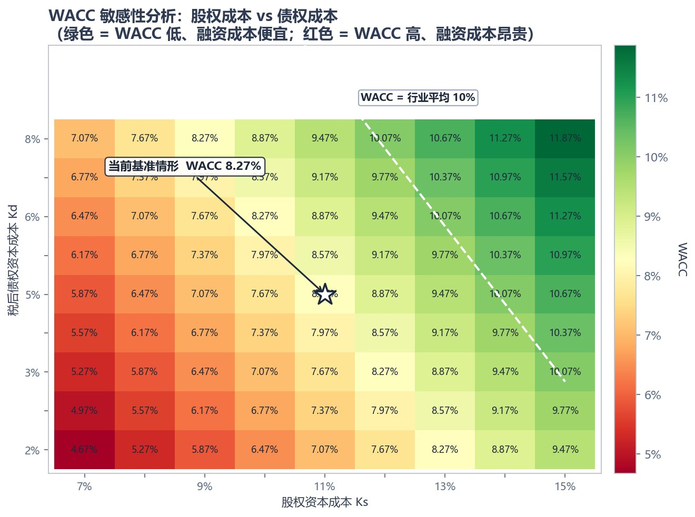
来源：项目一 outputs/05_WACC敏感性分析.png
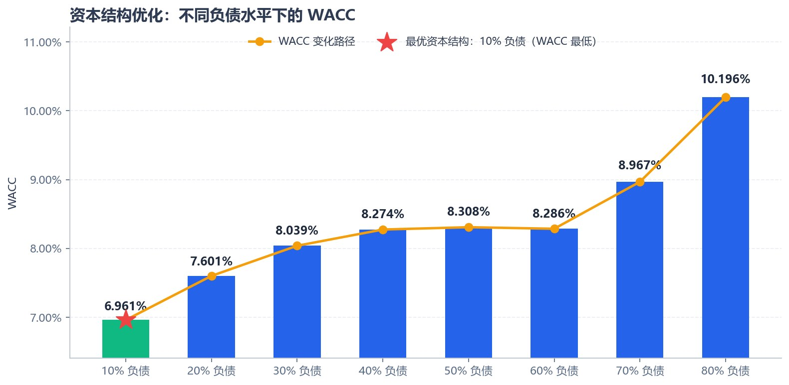
来源：项目一 outputs/06_资本结构优化对比.png
这三张图共同支撑“资本成本”一节的结论：先说清构成（04），再说清不确定性（05），最后说清结构可优化（06）。写报告时按这个顺序引用，逻辑最顺。
2.9产物文件结构¶
| 文件 | 内容 | 工作表 / 字段 |
|---|---|---|
| 07_贷款还款计划.xlsx | 等额本息逐期明细 | 「还款计划」1 表，240 行（期数、期初本金、还款额、利息、归还本金、期末本金） |
| 09_计算结果汇总.xlsx | 六个场景的关键结果 | 「场景汇总」「WACC明细」「资本结构模拟」「还款计划前24期」共 4 表 |
| 10_测试用例明细.xlsx | 自检用例的过程与结论 | 「用例索引」+「用例1」…「用例7」共 8 表 |
| 计算结果汇总.md | 与 09 对应的 Markdown 文本 | 便于直接粘进报告或提交到 Git |
09_计算结果汇总.xlsx 的「场景汇总」表就是作业要求里的“计算结果表”。交报告时把这张表截图或转成三线表，比自己重新手打一遍更可靠。
2.10数值自检：test_cases.py¶
自检脚本用教材手算可验证的场景断言程序正确性，任何一项断言失败都会抛异常中止。下面是 6 组用例与附加校验的实测结论（数值取自 10_测试用例明细.xlsx 的「用例索引」表）。
| # | 用例 | 场景设定 | 关键期望值 |
|---|---|---|---|
| 1 | 个人储蓄复利增值 | 10 万元、年利率 6%、5 年 | 年复利终值 133,822.56 元；月复利 134,885.02 元；EAR(月) 6.1678%；20 万的复利现值 149,451.63 元 |
| 2 | 教育金定投 | 每年末存 2 万元、5%、10 年 | 普通年金终值 251,557.85 元；预付年金 264,135.74 元；(F/A,5%,10)=12.577892、(P/A,5%,10)=7.721734 |
| 3 | 企业债券资本成本 | 面值 1000、票面 6%、5 年、发行价 950、税率 25% | 税前 7.2269%、税后 5.4202%；近似法税前 7.1795% |
| 4 | 上市公司股权资本成本 | β=1.20、Rf=2.5%、Rm=9.5%、D1=0.5、P0=12、g=4% | CAPM 10.90%、DDM 8.1667%、市场风险溢价 7% |
| 5 | 某公司 WACC | 债务 40%、股权 60%、β=1.15 | 税前债务 6.4810%、税后 4.8608%、股权 10.55%、WACC 8.2743% |
| 6 | 房贷还款计划 | 100 万元、年利率 4.2%、20 年、按月 | 月供 6,165.71 元、总利息 479,769.77 元、首期利息 3,500.00 元 |
| 附 | 参数校验与异常处理 | 9 项非法输入（空值、字母、负期数、6% 写成 6、β=120 等） | 9 项全部被正确识别并给出三段式提示，无漏检 |
▍运行自检
python test_cases.py终端会逐条打印 ✔ PASS / ✘ FAIL 与实际值、期望值、容差，全部通过后自动导出用例簿。如果你在报告里引用了上述任何一个数字，建议把这张自检截图放在附录，这是“结果可复现”的最直接证据。
2.11换成自己作业的题目¶
三种改法，按侵入性从低到高：
- 只改输入：在交互菜单或界面里把默认值替换成题目给的数字。适合绝大多数作业，不需要动代码；注意保持小数口径。
- 改示例参数：若想让 --demo 也用自己的数据，编辑 main.py 中各 scene_* 函数里ask(...) 的第二个位置参数（即默认值）。改完后 --demo 与界面「恢复示例值」都会跟随。
- 加新场景：在 main.py 里仿照 scene_wacc 写一个 scene_xxx 函数（读参数 → 调 core → 打印 → 调 visualize/report），再把编号加进 MENU 与 handlers 字典。由于校验与解读都在 validators.py 里集中定义，新增场景的成本很低。
练习：把场景 3 的发行价从 950 改成 1000（平价发行），观察税前资本成本是否恰好等于票面利率 6%。再用 2.10 节自检用例 3 的 7.2269% 对照，理解“折价发行推高实际成本”的机制。
2.12常见错误与排查¶
| 现象 | 原因 | 处理 |
|---|---|---|
| 终值大得离谱（如 10 万变成 1e18） | 利率按百分数输入（6 而不是 0.06） | 重填为小数；看是否忽略了 ⚠ 提示 |
| 年金结果与教材附表差 1 期 | 把预付年金当成普通年金 | 把收付方式改为“期初收付（预付年金）” |
| 界面「计算并生成图表」点了没反应 | Pillow 缺失导致图片缩放失败，或 outputs 目录不可写 | pip install pillow；检查目录权限 |
| WACC 结果与手算不符 | 资本结构用了账面价值而非市场价值 | 按题目要求改成市场价值口径 |
| 图保存失败 / 文件被占用 | Excel 或图片查看器打开了同名产物 | 关闭后重跑 |
| 双击 .pyw 无反应 | 系统把 .pyw 关联到了编辑器，或 Python 未装 | 右键 → 打开方式 → pythonw；或改用命令行启动 |
2.13本章小结¶
- 项目一 = 6 个场景 ×（校验 → 计算 → 解读 → 出图 → 导出），三种入口共用同一内核；
- 所有利率填小数、期数填正整数；把 6% 输成 6 会被第二层直接拦下，而 β=3、年数=80 这类“合法但极端”的值只会得到 ⚠ 警告；
- 默认示例参数的结果是可背诵的“锚点”：复利 179,084.77 元、年金终值 144,865.62 元、税后债务成本 5.4202%（折价）/4.8608%（980 元）、CAPM 10.90%、WACC 8.2743%、月供 6,165.71 元；
- 交作业前先跑 python main.py --demo 与 python test_cases.py，把 09 与 10 两个 Excel 作为附表。
课后练习
- 1. 用场景 1 计算：现在存入 8 万元、年利率 4%、按季复利 6 年后的终值，并与按年复利比较差额。
- 2. 用场景 5 做一张“负债比重从 0 增加到 80%”的 WACC 变化表，指出使 WACC 最低的负债区间。
- 3. 把场景 4 的 β 从 1.2 改成 0.8，说明 CAPM 结果如何变化，并解释经济含义。
- 4. 修改 visualize.py 中任一图的配色，重新生成并检查中文是否正常显示。
2.14从零动手：自己写一台货币时间价值计算器¶
前面 13 节教你用这台计算器；这一节教你造它。全书 13 个计算函数其实只用到 5 个基础公式和一次迭代求根，因此本节把项目一拆成 7 个可以独立跑通的步骤：先写五个纯函数、再自己实现 IRR、然后补校验、出图、导出、加界面、最后写测试。每一步都给出完整可复制的代码、真实运行结果和自检方法——你只要照着敲，两小时内就能得到一台属于自己的、能出图能导表的计算器。
2.14.1动手之前：把题目翻译成七件小事¶
很多同学拿到题目就想直接写界面，结果写到一半发现公式的输入口径没定、或者算出来的数不知道怎么核对。先把需求翻译成一张“输入—公式—输出”表，是这五个项目共用的第一步，也是本手册反复强调的“口径先行”。
| # | 要能回答的问题 | 输入 | 核心公式 | 输出 |
|---|---|---|---|---|
| 1 | 一笔钱 n 年后值多少 | PV, r, n, m | FV = PV(1+r/m)^(nm) | 终值 + 曲线图 |
| 2 | 未来的钱现在值多少 | FV, r, n, m | PV = FV/(1+r/m)^(nm) | 现值 |
| 3 | 每年存一笔，n 年后值多少 | PMT, r, n | FVA = PMT[(1+r)^n−1]/r | 年金终值 + 时间轴 |
| 4 | 分期还款的现值 / 贷款月供 | PMT, r, n | PVA = PMT[1−(1+r)^−n]/r | 年金现值、还款表 |
| 5 | 债券的资本成本是多少 | F, 票面, N, P, T | 令 NPV=0 反解 k；×(1−T) | 税前/税后成本 |
| 6 | 股东要求的报酬率 | Rf, β, Rm / D₁,P₀,g | CAPM / DDM | 股权成本 |
| 7 | 整体资本成本是多少 | E, D, K_s, K_d(税后) | WACC = Σw_i K_i | WACC + 结构图 |
这张表就是你的验收清单：七行都算得出数、都能自测通过，程序就算写完了。反过来说，任何一行还不确定公式的，先别写代码，先翻教材把公式抄进表里——这是本项目“公式与教材一致”这一评分点的来源。
2.14.2目录设计：为什么一定要拆成多个文件¶
初学者爱把所有代码写进一个 main.py，两千行也能跑，但有三个硬伤：没法单独测试（想验证一个公式必须跑完整个程序）、没法复用（图形界面和命令行都想调用同一个公式，只能复制粘贴）、改一处崩三处（公式改了，散落在各处的打印语句也得跟着改）。项目一的拆法值得照抄：
▍推荐目录
my_calc/
├── core.py 只放公式：纯函数，不 print、不读输入、不写文件
├── validators.py 只管“这个输入能不能要”：三层校验 + 业务解读文字
├── visualize.py 只管画图：接收集合，返回 png 路径
├── report.py 只管落盘：DataFrame → Excel / Markdown
├── gui.py 只管界面：把参数交给 core，把结果交给前三者
├── main.py 只管菜单：接命令行/交互，串起上面所有模块
├── test_cases.py 只管自测：用已知答案反算，断言误差
└── requirements.txt 依赖清单- 依赖方向必须单向：main → (core, validators, visualize, report)，core 谁都不依赖。一旦 core 里出现 import visualize，就说明拆错了；
- 纯函数是最好测试的东西：只靠入参、只返回结果、不碰文件不打印。core.py 里 13 个函数全是这个形态；
- 界面与内核分离：gui.py 之所以只有 482 行，是因为它一行公式都没写，全部调用 core 的函数。命令行版和图形版共用同一个内核，才不会两边答案不一样。
动手做
新建 my_calc/ 目录，先只建 core.py 与 main.py 两个文件。别一上来就建七个文件——按下面的步骤逐步加文件，每步都能跑，你就永远不会被自己绕进去。
1写五个纯函数，先让它算得出数
把 core.py 的第一版写成下面这样。注意每条公式后面都写了注释，注释里是教材原式，这就是评分表“代码质量”里“注释清晰、命名规范”的直接得分点。
▍core.py 第一版（可直接复制）
def fv_compound(pv, r, n, m=1):
"""复利终值 FV = PV*(1+r/m)^(n*m)；r 为年名义利率（小数）"""
return pv * (1 + r / m) ** (n * m)
def pv_compound(fv, r, n, m=1):
"""复利现值 PV = FV/(1+r/m)^(n*m)"""
return fv / (1 + r / m) ** (n * m)
def fva_ordinary(pmt, r, n):
"""普通年金终值 FVA = PMT*[((1+r)^n - 1)/r]"""
return pmt * (((1 + r) ** n - 1) / r)
def pva_ordinary(pmt, r, n):
"""普通年金现值 PVA = PMT*[(1 - (1+r)^-n)/r]"""
return pmt * ((1 - (1 + r) ** -n) / r)
def ear(r, m):
"""有效年利率 EAR = (1+r/m)^m - 1"""
return (1 + r / m) ** m - 1在终端里验证（每写完一步就验一次，这是全程最重要的习惯）：
$ python -c "from core import *; print(round(fv_compound(100000,0.06,10),2))"
179084.77
$ python -c "from core import *; print(round(fv_compound(100000,0.06,10,12),2))"
181939.67
$ python -c "from core import *; print(round(fva_ordinary(10000,0.08,10),2))"
144865.62
$ python -c "from core import *; print(round(pva_ordinary(10000,0.08,10),2))"
67100.81这四个数与项目一 outputs/09_计算结果汇总.xlsx 以及教材系数表完全一致：179,084.77 元（年复利）、181,939.67 元（月复利）、年金终值 144,865.62 元、年金现值 67,100.81 元。能对上这三个数，步骤 1 就算过关。预付年金不用新函数，普通年金结果乘 (1+r) 即可：144,865.62×1.08 = 156,454.87 元。
2自己实现 IRR：整个项目唯一的算法难点
债务资本成本的本质是求贴现率：找到那个让未来本息的现值刚好等于发行价的利率。这个方程没有解析解，只能迭代。牛顿法是最容易写、收敛最快的写法：
r₍ₖ₊₁₎ = r₍ₖ₎ − NPV(r₍ₖ₎) / NPV′(r₍ₖ₎)，其中 NPV′(r) = Σ −t·CF_t / (1+r)^(t+1)
导数就是把每一项再除一次 (1+r) 并乘上期数 t，形式非常规整
▍core.py：自实现 IRR（无外部依赖）
def npv(rate, cfs):
"""净现值：Σ CF_t /(1+rate)^t，t 从 0 开始"""
return sum(cf / (1 + rate) ** t for t, cf in enumerate(cfs))
def irr(cfs, guess=0.1, tol=1e-10, iters=200):
"""内部收益率：牛顿迭代，不收敛则退化为二分法兜底"""
if not (any(c > 0 for c in cfs) and any(c < 0 for c in cfs)):
raise ValueError("现金流必须同时有正负才有 IRR")
r = guess
for _ in range(iters): # ① 牛顿迭代
f = npv(r, cfs)
df = sum(-t * cf / (1 + r) ** (t + 1) for t, cf in enumerate(cfs))
if abs(df) < 1e-15:
break
nxt = r - f / df
if abs(nxt - r) < tol:
return nxt
r = nxt
lo, hi = -0.9999, 10.0 # ② 二分法兜底
for _ in range(300):
mid = (lo + hi) / 2
if npv(lo, cfs) * npv(mid, cfs) <= 0:
hi = mid
else:
lo = mid
return (lo + hi) / 2有了 IRR，债券的资本成本就是造出现金流再反解：第 0 期是 −发行价（筹资流入），中间各期是票息，最后一期额外加上本金。
▍core.py：债务资本成本
def cost_of_debt(face, coupon_rate, years, price, tax_rate=0.0, freq=1):
"""到期收益率法：令 NPV=0 的贴现率即税前债务成本"""
c = face * coupon_rate / freq # 每期票息
flows = [c] * int(years * freq)
flows[-1] += face # 最后一期还本
k_period = irr([-price] + flows, guess=coupon_rate / freq)
k_pre = (1 + k_period) ** freq - 1 # 期间利率 → 年化
return {"税前": k_pre, "税后": k_pre * (1 - tax_rate)}
$ python -c "from core import cost_of_debt as f; print(f(1000,0.06,5,950,0.25))"
{'税前': 0.072269..., '税后': 0.054202...}面值 1 000 元、票面 6%、5 年期折价发行：项目一给出的结果是折价 950 元发行时税前 7.2269%、税后 5.4202%。这里有两处与直觉相反、也是本项目最值得写进报告的两点：折价发行使实际成本高于票面利率（7.23% > 6%），因为企业只筹到 950 元却要按 1 000 元的票面付息并偿还本金；税后成本比税前低 1.81 个百分点（= 7.2269%×25%），这就是利息的抵税价值（税盾）。
双引擎互验（本项目最值钱的思路）
教材近似公式 K_d ≈ [F·票面 + (F−P)/N] / [(F+P)/2] 只需一行代码，算出 7.1795%，与 IRR 法的 7.2269% 相差不到 0.05 个百分点。两条完全独立的路径给出同一个答案，这就是报告里“结果可信”的证据——比只算一遍强得多。写进报告的分析段，直接对应“分析阐述”得分点。
3补齐 equity、WACC、贷款三块，内核就完整了
▍core.py：股权成本 / WACC / 还款计划
def capm(rf, beta, rm, sp=0.0):
"""股权成本 Ks = Rf + β(Rm − Rf) + 规模溢价"""
return rf + beta * (rm - rf) + sp
def cost_of_equity_ddm(d1, p0, g):
"""固定增长股利模型 Ks = D₁/P₀ + g"""
return d1 / p0 + g
def wacc(e, d, ks, kd_after, p=0.0, kp=0.0):
"""WACC = (E/V)Ks + (D/V)Kd(税后) + (P/V)Kp"""
v = e + d + p
we, wd, wp = e / v, d / v, p / v
return {"we": we, "wd": wd, "wp": wp,
"wacc": we * ks + wd * kd_after + wp * kp}
def amortization(pv, annual_rate, years, m=12):
"""等额本息：先付年金现值公式反解月供，再逐期摊分"""
i, n = annual_rate / m, years * m
pmt = pv * i / (1 - (1 + i) ** -n)
rows, bal = [], pv
for t in range(1, n + 1):
interest = bal * i
principal = pmt - interest
if t == n: # 末期倒挤，消除舍入尾差
principal, interest = bal, pmt - bal
bal -= principal
rows.append((t, pmt, interest, principal, bal))
return pmt, rows
$ python -c "from core import *; print(round(capm(.025,1.2,.095),4))"
0.109
$ python -c "from core import *; print(round(cost_of_equity_ddm(.5,12,.04)*100,4))"
8.1667
$ python -c "from core import *; print(round(wacc(.6,.4,.1055,.048608)['wacc']*100,4))"
8.2743
$ python -c "from core import *; print(round(amortization(1e6,.042,20)[0],2))"
6165.71这四个输出与项目一的场景 4、场景 5 和贷款场景结果一字不差：CAPM 10.90%、DDM 8.1667%、WACC 8.2743%、月供 6 165.71 元。WACC 还能顺手拆开看贡献：股权 0.6×10.55% = 6.33 个百分点、债务 0.4×4.8608% = 1.9443 个百分点，两者相加正好 8.2743 个百分点——这个分解就是后面出“WACC 结构图”的数据来源。
amortization 里那句 if t == n 看似多余，其实是财务程序的基本要求：浮点数逐期相加会产生 0.01 元的尾差，导致最后一期还完款后余额不是零。末期把剩余本金一次性摊掉（术语叫“倒挤”），总利息才会与报表完全勾稽。项目三用 plug_last() 做同一件事，见 4.11 节。
4加一层参数校验：把“口径错”变成一条明确提示
内核写完了，但用户会把 6% 输成 6。这类错误最可怕的地方是不报错、只是答案离谱。项目一用“规则表 + 三层判断”解决，比到处写 if 优雅得多，也方便以后加规则。
▍validators.py：三层校验
# validators.py —— 规则写在表里，判断逻辑只有一份
RULES = {
"rate": {"label": "利率", "lo": -0.99, "hi": 1.0,
"warn_lo": 0.0, "warn_hi": 0.30,
"hint": "6% 请填 0.06；若你填的是 6，这里会直接报错"},
"n": {"label": "期数", "lo": 1, "hi": 100,
"warn_lo": 1, "warn_hi": 50, "hint": "必须为正整数"},
}
def validate(name, value):
"""返回 (是否可算, 错误, 警告, 提示)"""
r = RULES[name]
errs, warns, hints = [], [], [r["hint"]]
if not isinstance(value, (int, float)) or isinstance(value, bool):
return False, ["必须输入数字"], [], hints # L1 类型层
if not (r["lo"] <= value <= r["hi"]): # L2 定义域层
errs.append(f"{r['label']}={value} 超出模型定义域 "
f"[{r['lo']}, {r['hi']}]")
elif not (r["warn_lo"] <= value <= r["warn_hi"]): # L3 合理性层
warns.append(f"{r['label']}={value} 可计算但偏离常识区间 "
f"[{r['warn_lo']}, {r['warn_hi']}]")
return (not errs), errs, warns, hints
$ python -c "from validators import validate as v; print(v('rate',0.06))"
(True, [], [], ['6% 请填 0.06；若你填的是 6，这里会直接报错'])
$ python -c "from validators import validate as v; print(v('rate',6))"
(False, ['利率=6 超出模型定义域 [-0.99, 1.0]'], [], [...]) ← 阻断
$ python -c "from validators import validate as v; print(v('rate',0.5))"
(True, [], ['利率=0.5 可计算但偏离常识区间 [0.0, 0.3]'], [...]) ← 警告不阻断三种输入对应三种反馈，正好是三层校验的教科书写法。关键设计是三层的后果不同：L1/L2 拒绝计算并让用户改，L3 只提示但仍继续——因为 50% 的利率确实可以计算，程序没有资格替用户判断“这不合理”。
把错误提示写成三段式：错在哪里（利率=6）、为什么错（超出模型定义域）、该怎么改（6% 请填 0.06）。评分表里“基本错误处理”这一项，给的分就在这三段式上，而不是你有没有写 try/except。
5出图：无窗口后端 + 中文字体 + 数据标注（图形基础见附录 H）
图表是本项目的第二个得分重点。三条硬性注意事项：必须先 use("Agg")（服务器/无桌面环境也不会崩）、必须显式设中文字体（否则标题全是方框）、必须关 unicode_minus（否则负号变方框）。Figure/Axes 对象结构、双轴图与财务图表四条硬规矩，见附录 H。
▍visualize.py：字体探测
import matplotlib
matplotlib.use("Agg") # ① 必须在 import pyplot 之前
import matplotlib.pyplot as plt
from matplotlib import font_manager
def setup_cn_font():
"""探测系统里真实存在的中文字体，逐个候选试到命中为止"""
want = ["Microsoft YaHei", "SimHei", "Noto Sans CJK SC",
"WenQuanYi Zen Hei"]
have = {f.name for f in font_manager.fontManager.ttflist}
chosen = next((w for w in want if w in have), "DejaVu Sans")
plt.rcParams["font.sans-serif"] = [chosen, "DejaVu Sans"]
plt.rcParams["axes.unicode_minus"] = False # ② 负号不乱码
plt.rcParams["figure.dpi"] = 130
plt.rcParams["savefig.bbox"] = "tight"
return chosen▍visualize.py：一张可交差的图
def plot_compound_growth(pv, r, years, path="outputs/01_复利终值.png"):
setup_cn_font()
ys = [fv_compound(pv, r, t) for t in range(years + 1)]
fig, ax = plt.subplots(figsize=(8, 4.5), dpi=130)
ax.plot(range(years + 1), ys, marker="o", lw=2.2, color="#2B6CB0")
ax.axhline(pv, color="#9AA6B4", ls="--", lw=1, label="本金")
ax.annotate(f"{ys[-1]:,.0f}", (years, ys[-1]), # ③ 数据直读
xytext=(-46, 10), textcoords="offset points",
bbox=dict(boxstyle="round", fc="white", ec="#2B6CB0"))
ax.set_title("复利终值增长曲线")
ax.set_xlabel("年数 n")
ax.set_ylabel("终值 FV（元）")
ax.grid(alpha=.25)
fig.savefig(path)
plt.close(fig)
return path跑一次就能看到文件真的生成了：
$ python -c "from core import fv_compound; import visualize as z; print(z.plot_compound_growth(100000,0.06,10))"
outputs/01_复利终值.png每张图都必须能“不读坐标轴也能看懂结论”。三件套：单位写进轴标题、关键数值直接标在图上、去掉多余的边框和背景网格。项目一那 6 张图之所以能直接贴进报告，就是这三件事都做齐了；对照 2.10 节的成品图，自己那张缺哪一样就补哪一样。
6落盘：一张汇总表 + 多工作表 Excel
计算器不能只把数打在屏幕上——交作业要有文件。用 pandas 一次写多个工作表是最省事的写法：
▍report.py：多工作表导出
import pandas as pd
def export_summary(rows, path="outputs/09_计算结果汇总.xlsx"):
"""rows: list[dict]，一行一个指标"""
df = pd.DataFrame(rows)
with pd.ExcelWriter(path, engine="openpyxl") as xl:
df.to_excel(xl, sheet_name="计算结果汇总", index=False)
for scene, sub in df.groupby("场景", sort=False): # 每个场景一张表
sub.drop(columns=["场景"]).to_excel(
xl, sheet_name=str(scene)[:31], index=False)
return path配套的 Markdown 汇总更简单，适合贴进报告正文：
▍report.py：Markdown 导出
def export_markdown(rows, path="outputs/计算结果汇总.md"):
df = pd.DataFrame(rows)
with open(path, "w", encoding="utf-8") as fh:
fh.write("# 计算结果汇总\n\n")
fh.write(df.to_markdown(index=False)) # 无 tabulate 时改用 to_csv
fh.write("\n")
return pathto_markdown() 依赖 tabulate 库；如果不想多装一个包，直接用 df.to_csv(path, index=False) 或自己拼 "|".join(...)。另一个高频坑：写 Excel 时文件被 Excel 打开着会抛 PermissionError，关掉 Excel 再跑（1.9.4 节）。
7加界面：命令行菜单先行，tkinter 后补（控件与布局详见附录 I）
先把菜单写出来，因为它决定“用户怎么用你的程序”，也方便你自己测：
▍main.py：菜单循环
SCENES = {
"1": ("复利终值与现值", scene_compound),
"2": ("普通年金 / 预付年金", scene_annuity),
"3": ("债权资本成本", scene_debt),
"4": ("股权资本成本 CAPM / DDM", scene_equity),
"5": ("加权平均资本成本 WACC", scene_wacc),
"6": ("贷款还款计划", scene_loan),
"8": ("一键运行全部示例场景", run_all),
"0": ("退出", None),
}
def interactive_menu():
while True:
print("\n══ 财务计算工具 ══")
for k, (name, _) in SCENES.items():
print(f" {k}. {name}")
choice = input("请选择〉 ").strip()
fn = SCENES.get(choice, (None, None))[1]
if fn is None and choice == "0":
break # 正常退出
if fn is None:
print("无效选项，请输入菜单号")
continue # 别让一次误触把程序干掉
try:
fn()
except Exception as exc:
print(f"本次计算未完成：{exc}") # 兜底，回到菜单这段 while True 里有三个“防呆”细节，都是评分点：输入非法时 continue 回菜单而不是崩退；整个场景调用被 try/except 包住，单个场景失败不影响继续用；退出走 break 而不是 sys.exit()，双击 .pyw 运行时不会闪退
tkinter 界面只是“参数的输入框 + 结果的显示区”，一行公式都不要写（算法在 core.py，界面只搬运）。最小可用版只要 40 行；至于三种布局管理器怎么选、StringVar 怎么联动、项目一那 1177 行界面怎么拆，全部在附录 I。
▍gui_min.py：40 行的图形界面
import tkinter as tk
from core import fv_compound, pv_compound
def calc():
try:
pv = float(e_pv.get()); r = float(e_r.get())
n = int(e_n.get())
out.config(text=f"终值 = {fv_compound(pv, r, n):,.2f} 元\n"
f"反算现值 = {pv_compound(fv_compound(pv, r, n), r, n):,.2f} 元")
except ValueError:
out.config(text="请输入数字（利率填小数，如 0.06）")
w = tk.Tk(); w.title("复利计算器"); w.geometry("420x260")
for lbl, var in (("本金 PV", "e_pv"), ("年利率 r", "e_r"), ("期数 n", "e_n")):
frame = tk.Frame(w); frame.pack(fill="x", padx=16, pady=4)
tk.Label(frame, text=lbl, width=10, anchor="w").pack(side="left")
e = tk.Entry(frame); e.pack(side="left", fill="x", expand=True)
globals()[var] = e
tk.Button(w, text="计算", command=calc).pack(pady=8)
out = tk.Label(w, text="等待输入…", justify="left")
out.pack(pady=6)
w.mainloop()把这段存成 gui_min.pyw（扩展名 .pyw），双击就能运行且不弹黑色控制台窗口——这正是项目一“财务计算器GUI.pyw”这个文件的由来。要截“三种使用模式”的图，分别截：终端里的菜单界面、.pyw 双击出的图形界面、以及 python main.py --demo 跑完后 outputs/ 文件夹的内容。
8写自测：用已知答案反着验
自测不是“跑通没报错”，而是每个公式都有标准答案可比。教材系数表就是现成的标准答案：
▍test_cases.py：断言式自测
# test_cases.py
import math
from core import fv_compound, pva_ordinary, irr, wacc
def close(a, b, tol=1e-2):
return abs(a - b) <= tol # 金额允许 1 分钱误差
CASES = [
("复利终值", lambda: fv_compound(100000, 0.06, 10), 179084.77),
("年金现值", lambda: pva_ordinary(10000, 0.08, 10), 67100.81),
("债券成本", lambda: irr([-950] + [60]*4 + [1060]) * 100, 7.2269),
("WACC", lambda: wacc(.6, .4, .1055, .048608)["wacc"] * 100, 8.2743),
]
if __name__ == "__main__":
bad = 0
for name, fn, exp in CASES:
got = fn()
ok = close(got, exp, 1e-2 if abs(exp) > 100 else 1e-3)
bad += (not ok)
print(f"{'PASS' if ok else 'FAIL':4s} {name:10s} 期望 {exp:>12,.4f} "
f"实得 {got:>12,.4f}")
raise SystemExit(1 if bad else 0) # 全对返回 0，供批处理判断
$ python test_cases.py
PASS 复利终值 期望 179,084.7700 实得 179,084.7679
PASS 年金现值 期望 67,100.8100 实得 67,100.8140
PASS 债券成本 期望 7.2269 实得 7.2269
PASS WACC 期望 8.2743 实得 8.2743自测的期望值要从教材或系数表来，不要从你自己的程序输出来——后者等于自己给自己打分，写一百条断言也没有意义。项目一的 test_cases.py 有 6 个基础用例 + 1 个附加用例，每个用例同时给教材系数与程序值，就是这个道理（见 2.11 节）。
2.14.3做完之后：三个可选扩展¶
| 扩展 | 加什么代码 | 多花多久 | 对报告的价值 |
|---|---|---|---|
| ① 多方案对比 | 把 4 种计息频率的结果做成一张表 + 一张分组柱状图 | 20 分钟 | 直接支撑“分析阐述”里的横向对比 |
| ② 资本结构模拟 | 循环改变债务比重，画出 WACC 随比重变化的曲线 | 30 分钟 | 对应场景 5 的“结构优化”结论 |
| ③ 输出成用例簿 | 把每个用例做成 Excel 的一个 sheet（项目一是 8 个 sheet） | 40 分钟 | “图表与截图”得分点最直观的材料 |
2.14.4本节自检¶
- core.py 里的每个函数都能用 python -c 单独调出结果，且与教材系数一致；
- fv_compound(100000, 0.06, 10) = 179,084.77、月复利 = 181,939.67、EAR = 6.1678%；
- 自实现 irr() 对折价债券给出税前 7.2269%、税后 5.4202%，并与近似公式 7.1795% 互验；
- CAPM 10.90%、DDM 8.1667%、WACC 8.2743%（且能拆成 6.33 + 1.9443 两个贡献）；
- 贷款月供 6,165.71 元、总利息 479,769.77 元、末期余额精确为 0；
- 输入 6 作为利率会被 L2 拦下；输入 0.5 只给警告不阻断；
- 至少生成 1 张中文不乱码、带数值标注、文件名清晰的 PNG；
- outputs/ 下有 xlsx（多工作表）与 md 汇总文件；
- 菜单能选场景、输入非法不崩、双击 .pyw 能出图形界面；
- python test_cases.py 全部 PASS 且退出码为 0。
项目二：投资项目全流程评价系统
这个项目把“一个项目该不该投”拆成了六段可复用的判断：独立项目可行性、互斥项目优选、资本限额下的组合优化、非常规现金流的多重 IRR、单双因素敏感性、AI 批量生成项目评估。一条命令跑完六个案例，产出 39 张图与一份可直接提交的 Word 报告。
3.1项目速览¶
与项目一“一台计算器”不同，项目二是一条流水线：数据 → 指标 → 决策规则 → 敏感性 → AI 文案 → 图表 → 报告。你只要提供各期的现金流，其余全部自动完成。

| 文件 | 职责 | 你会用到它的时刻 |
|---|---|---|
| main.py | 命令行入口：解析参数、逐案例运行、打印分节结果、导出 | 每次运行；想知道终端输出为什么长这样 |
| src/config.py | 默认折现率 0.10、曲线区间 0~50%、敏感性步长 ±20%、中文字体候选、配色（正红负绿）、随机种子 20260914、AI 开关 | 改默认折现率、改图片清晰度、接自己的大模型 |
| src/models.py | Project（项目）与 Evaluation（评价结果）两个数据类，一次性算出 NPV/IRR/ANCF/PI/回收期/MIRR | 想手工核对某个指标、或新增指标 |
| src/finance_core.py | 纯算法层：npv、irr（含多重根探测）、ancf、pi、回收期、mirr、增量 IRR | 任何数值疑问的最终出处 |
| src/scenarios.py | 六个案例的数据定义（CASE-1 … CASE-6） | 换成自己题目的数据时改这里 |
| src/optimizer.py | 互斥项目优选、资本限额三种解法（排序/组合/背包） | 第 3.6 节案例三 |
| src/sensitivity.py | 单因素/双因素敏感性、临界点、抗风险等级判定 | 第 3.8 节案例五 |
| src/ai_advisor.py | 规则引擎 + 可选大模型，生成 8 类风险提示与决策文案 | 第 3.10 节 |
| src/ai_data_generator.py | 按固定随机种子批量生成多行业项目数据 | 案例六、想再造一批数据 |
| src/visualizer.py | 7 类图表（NPV 对比、IRR 曲线、旋风图、热力图、现金流、组合、互斥） | 第 3.9 节读图与改图 |
| src/report_generator.py | Markdown 与 Word 报告生成 | 第 3.11 节 |
| tests/test_all.py | 6 个测试类、57 个测试方法、151 处断言 | 交作业前自检 |
3.2三分钟跑通¶
▍完整流程
cd /d "F:\（8）Desktop\财务会计实务与应用\Python财务应用\works\02-投资项目全流程评价系统\investment_decision_system"
pip install -r requirements.txt
python main.py --list
python main.py--list 会打印六个案例的编号与名称，不产生任何文件，适合先确认环境正常。随后 python main.py 会依次跑完六个案例，终端按“案例 CASE-N：名称（折现率 10.00%）”分节，最后打印导出清单。整个过程约十几秒，产物如下：
| 产物 | 位置 | 内容 |
|---|---|---|
| 39 张 PNG | outputs/figures/ | 每个案例 5—9 张，命名规则见 3.9 节 |
| projects.csv | outputs/data/ | 全部 32 个项目的原始数据（投资、寿命、各期现金流） |
| evaluations.csv | outputs/data/ | 全部项目的全指标结果，见 3.3 节字段说明 |
| 投资项目决策评价报告.md | outputs/reports/ | 含方法说明、六个案例详解、附录 A/B/C |
| 投资项目决策评价报告.docx | outputs/reports/ | 同一内容的 Word 版，内嵌全部图表 |
| run_log.txt | outputs/ | 本次运行的完整终端输出，便于事后追溯 |
只想跑某一个案例时，用 --case 反复指定即可，例如 python main.py --case CASE-3 --case CASE-5。案例编号大小写不敏感，写错会直接告诉你可选清单。
3.3命令行参数与终端输出¶
| 参数 | 取值 | 默认 | 作用 |
|---|---|---|---|
| --rate | 小数 | 0.10 | 基准折现率，影响全部案例的 NPV/PI/ANCF 与结论 |
| --case | CASE-1 … CASE-6 | 全部 | 只运行指定案例，可重复给 |
| --list | — | — | 列出案例后退出，不生成文件 |
| --no-docx | — | 生成 | 跳过 Word 导出（Word 报告最大，调试时先关掉） |
| --no-advice | — | 生成 | 跳过 AI 决策建议（只出数值结论） |
| --ai-mode | rule / auto / llm | auto | 决策文案通道；无 API Key 时 auto 自动降级为规则引擎 |
终端输出的骨架如下（节选）：
$ python main.py --case CASE-1
投资项目决策自动化评价系统 v1.0
NPV ｜ IRR ｜ 互斥项目优选 ｜ 资本限额组合优化 ｜ 敏感性分析
==============================================================================
案例 CASE-1：独立项目可行性评价（折现率 10.00%）
------------------------------------------------------------------------------
编号 投资(万元) 寿命 NPV(万元) IRR ANCF PI 结论
IND-A 1,000.00 5 198.66 17.16% 52.41 1.1987 可行
IND-B 1,800.00 6 -202.90 6.31% -46.59 0.8873 不可行
【AI 决策建议摘要】
IND-A：NPV 为正且 IRR 高于资本成本，安全边际 7.16 个百分点，建议投资。
==============================================================================
导出数据与报告
==============================================================================表头里的投资与 NPV 单位都是万元，寿命单位是年，IRR 是年化百分数。写报告时把这三项口径连同运行命令一起注明，避免与项目一（元）、项目四/五（元→亿元）混淆。
3.4判据选择：这个项目该用哪个指标¶
六个案例其实是在演示同一张决策图上的六条路径。先记住这张图，后面每个案例都是它的一个分支。

NPV = Σ CF_t / (1 + r)^t − I₀
净现值：t = 1…n；I₀ 为初始投资
IRR：使 NPV(r) = 0 的 r
内含报酬率；非常规现金流可能有多个解
ANCF = NPV ÷ 年金现值系数(A/P, r, n)
年金净流量，用于寿命不同的互斥项目比较
PI = 未来现金流现值 ÷ I₀
盈利能力指数，用于资本限额下的排序
NPV 与 IRR 在互斥项目上可能给出相反结论（规模冲突），IRR 在非常规现金流上可能有多根。项目二把这两类陷阱分别做成了 CASE-2 与 CASE-4，考试与作业里考的就是它们。
3.5案例一：独立项目可行性评价¶
两个相互独立的项目，考察最基本的“能不能投”。
| 编号 | 项目 | 投资 (万元) | 寿命 | 各年净现金流(万元) | NPV | IRR | PI | 静态/动态回收期 | 结论 |
|---|---|---|---|---|---|---|---|---|---|
| IND-A | 智能仓储自动化改造 | 1,000 | 5 | 280 / 300 / 320 / 340 / 360 | 198.66 | 17.16% | 1.1987 | 3.29 / 4.11 年 | 可行 |
| IND-B | 传统生产线扩建 | 1,800 | 6 | 300 / 330 / 360 / 390 / 420 / 450 | −202.90 | 6.31% | 0.8873 | 5.00 / 寿命内未收回 | 不可行 |
动态回收期在 IND-B 上显示“寿命内未收回”，是因为按 10% 折现后累计现值始终为负——这正是静态回收期会掩盖、动态回收期才暴露的问题。
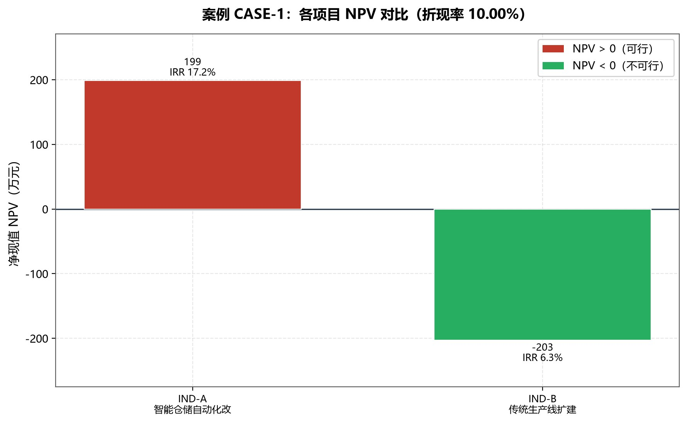
来源：outputs/figures/01_04_CASE-1_npv_comparison.png
注意配色：本项目遵循中国财务与股市惯例，正为红、负为绿，与欧美图表习惯相反。这一点在 config.py 的 COLOR_POSITIVE / COLOR_NEGATIVE 中定义，报告里引用图表时最好注明，避免读者误读。
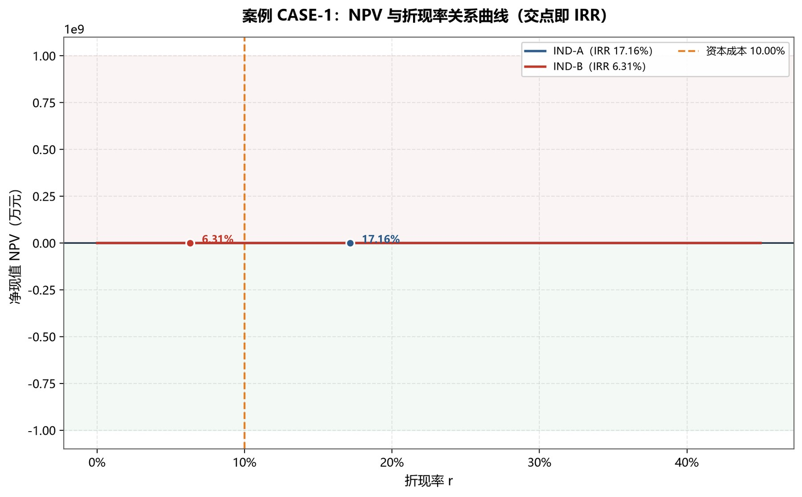
来源：outputs/figures/01_05_CASE-1_irr_vs_rate.png
这张图是理解 IRR 最好的方式：曲线与横轴的交点就是 IRR，交点左侧 NPV 为正。IND-A 的曲线在 17.16% 处穿过横轴，说明只要资本成本不超过 17.16%，项目都值得投；IND-B 的曲线在 6.31% 处上穿，在 10% 的资本成本下始终位于横轴下方。
3.6案例二：互斥项目优选（规模冲突 + 寿命冲突）¶
四个项目分成两个互斥组，分别演示两种经典冲突。
| 组 | 编号 | 项目 | 投资(万元) | 寿命 | NPV | IRR | ANCF | 该组应选 |
|---|---|---|---|---|---|---|---|---|
| MUT-SCALE | MUT-P | 小型技改（高报酬率、低净现值） | 1,000 | 3 | 119.08 | 16.65% | 47.89 | |
| MUT-SCALE | MUT-Q | 大型技改（低报酬率、高净现值） | 2,500 | 3 | 221.64 | 15.27% | 89.12 | MUT-Q |
| MUT-LIFE | MUT-X | 设备 A（短寿命、高年金） | 1,000 | 6 | 132.37 | 14.40% | 30.39 | MUT-X |
| MUT-LIFE | MUT-Y | 设备 B（长寿命、低年金） | 1,400 | 10 | 136.14 | 12.22% | 22.16 |
3.6.1规模冲突：用增量 IRR 仲裁¶
MUT-P 的 IRR 更高（16.65% > 15.27%），但 MUT-Q 的 NPV 更大（221.64 > 119.08）。两个指标吵架时，正确做法是考察多投的那 1,500 万元值不值：
ΔIRR(MUT-Q − MUT-P) = 14.25% > r = 10.00% ⇒ 选 MUT-Q
增量投资 1,500 万元带来的增量报酬率仍高于资本成本，因此规模更大的方案更优
程序在报告与终端中都会给出这条判据。若 ΔIRR 低于资本成本，则多投的部分不划算，应选小方案。
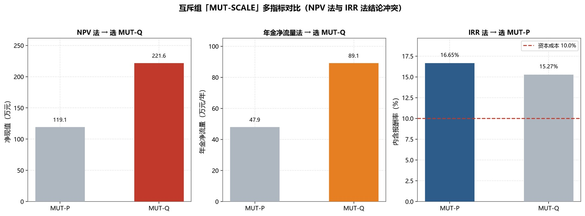
来源：outputs/figures/02_02_CASE-2_mutual_MUT-SCALE.png
3.6.2寿命冲突：必须改用年金净流量¶
MUT-X 寿命 6 年、MUT-Y 寿命 10 年，直接比 NPV 不公平（比较的期限不同）。把 NPV 折算成等额年金后即可比较：ANCF 30.39 > 22.16，应选 MUT-X。
如果误用 NPV 判据，会选中 MUT-Y（136.14 > 132.37），而正确答案是 MUT-X。这是课程作业里最常见的失分点：寿命不同的互斥项目，NPV 与 IRR 都不可直接比较，必须用年金净流量法（或最小公倍数复置投资法）。
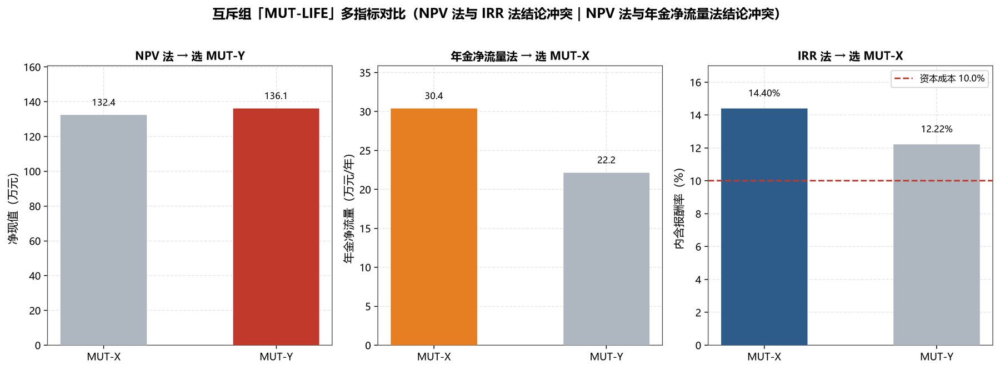
来源：outputs/figures/02_01_CASE-2_mutual_MUT-LIFE.png
3.7案例三：资本限额下的组合优化¶
八个可投资项目、总投资限额 3,000 万元，问怎么选组合使总 NPV 最大。程序同时给出三种解法并对比，这是本案例最有教学价值的部分。
| 编号 | 项目 | 投资(万元) | 寿命 | 年现金流 | NPV | IRR | PI | ANCF |
|---|---|---|---|---|---|---|---|---|
| CAP-A | 智能制造产线升级 | 1,800 | 6 | 619.94 | 900.00 | 25.72% | 1.5000 | 206.65 |
| CAP-B | 区域仓储中心建设 | 1,500 | 8 | 418.94 | 735.01 | 22.38% | 1.4900 | 137.77 |
| CAP-C | 冷链物流基地 | 1,500 | 9 | 386.35 | 725.00 | 21.19% | 1.4833 | 125.89 |
| CAP-D | 数据中台建设 | 1,000 | 5 | 387.79 | 470.03 | 27.08% | 1.4700 | 123.99 |
| CAP-E | 生产设备更新 | 1,000 | 6 | 335.23 | 460.01 | 24.54% | 1.4600 | 105.62 |
| CAP-F | 新能源充电站网络 | 1,200 | 7 | 357.41 | 540.02 | 22.65% | 1.4500 | 110.92 |
| CAP-G | 节能改造成套设备 | 800 | 4 | 360.89 | 343.97 | 28.64% | 1.4300 | 108.51 |
| CAP-H | 办公信息化系统 | 600 | 3 | 340.18 | 245.98 | 32.10% | 1.4100 | 98.91 |
| 解法 | 选中项目 | 投资合计 | 组合 NPV | 限额使用率 | 闲置额度 |
|---|---|---|---|---|---|
| 排序法（按 PI 贪心） | CAP-A + CAP-D | 2,800.00 | 1,370.03 | 93.33% | 200.00 |
| 组合法（DFS 穷举 + 剪枝） | CAP-B + CAP-C | 3,000.00 | 1,460.01 | 100.00% | 0.00 |
| 背包法（0-1 动态规划） | CAP-B + CAP-C | 3,000.00 | 1,460.01 | 100.00% | 0.00 |
结论要这样写：排序法会失效。它先挑 PI 最高的 CAP-A（1.5000），剩 1,200 万元额度里只能再装下 CAP-D（1,000），组合 NPV 1,370.03 万元；而穷举与动态规划找到 CAP-B + CAP-C，恰好用满 3,000 万元，NPV 1,460.01 万元，比排序法多创造 89.98 万元价值（提升 6.57%）。PI 排序只在“项目可无限分割”时最优，现实项目不可分割，因此必须做组合优化。
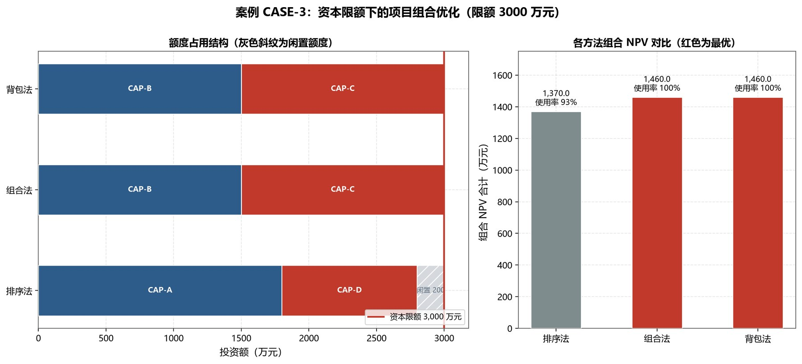
来源：outputs/figures/03_01_CASE-3_portfolio.png
把限额改成 2,500 万元再跑一次：python main.py --case CASE-3 前，先在 src/scenarios.py 里把该案例的 capital_limit 改为 2500，观察三种方法是否给出相同答案。这是理解“贪心何时失效”的最好实验。
3.8案例四：非常规现金流与多重 IRR¶
三个项目、两种现金流形态，演示 IRR 判据在符号变化时的失效。
| 编号 | 项目 | 投资 | 各期现金流 | NPV | IRR 解 | 符号变化 | 结论 |
|---|---|---|---|---|---|---|---|
| UNC-A | 矿山开发（含生态治理支出） | 2,000 | +5,400 / −3,520 | 0.00 | 10% 与 60%（双根） | 2 次 | 不可行 |
| UNC-B | 化工装置退役治理 | 2,000 | +4,600 / −2,625 | 12.40 | 5% 与 25%（双根） | 2 次 | 可行 |
| UNC-C | 常规现金流对照 | 1,500 | +600 ×3 | −7.89 | 9.70%（唯一） | 1 次 | 不可行 |
UNC-A 被标为“不可行”是因为其 NPV 在 10% 处恰好为 0 且 NPV 曲线非单调，程序按“NPV ≥ 0 且 IRR 唯一”给出保守结论；UNC-B 的 NPV 为正故判可行。
关键在 NPV 曲线的形状：常规现金流下 NPV 单调递减，与横轴至多一个交点；非常规现金流下曲线先升后降，可能与横轴有两个交点，此时“IRR”不再是一个数。
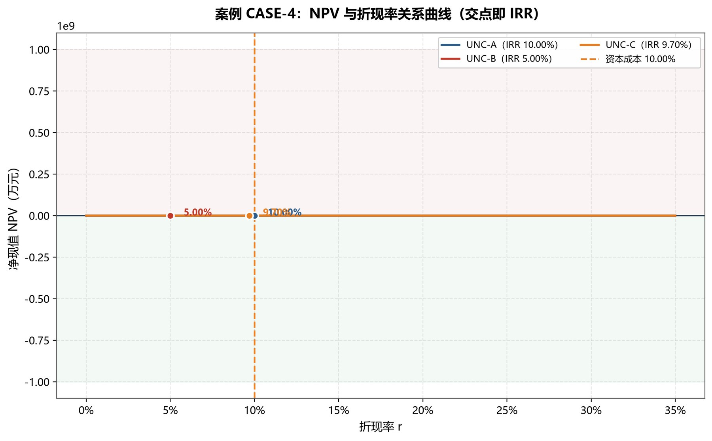
来源：outputs/figures/04_06_CASE-4_irr_vs_rate.png
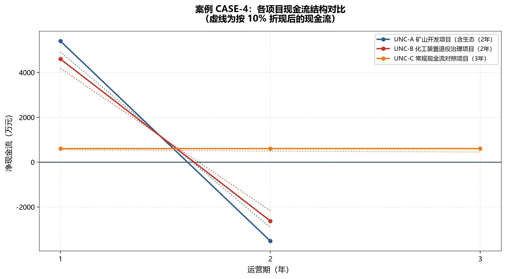
来源：outputs/figures/04_07_CASE-4_cash_flows.png
遇到多重 IRR 时的正确表述：放弃 IRR 判据，改用 NPV（或改用 MIRR）。项目二在评价结果里保留了 IRR 字段但把“IRR 唯一性”单独列出，报告里引用时一定要把这一列一起抄上。
3.9案例五：敏感性与抗风险能力¶
两个项目投资额（5,000 万元）与寿命（8 年）完全相同，只有现金流水平不同，用来演示“同样 NPV 为正，抗风险能力可以差很多”。
| 指标 | SENS-S 智能装备产线 | SENS-W 传统产线改造 |
|---|---|---|
| 初始投资 / 寿命 | 5,000 万元 / 8 年 | 5,000 万元 / 8 年 |
| NPV | 1,229.66 万元 | 139.35 万元 |
| IRR | 16.00% | 10.70% |
| 盈利能力指数 PI | 1.2459 | 1.0279 |
| 静态 / 动态回收期 | 4.58 / 6.24 年 | 5.48 / 7.77 年 |
| 年金净流量 ANCF | 230.49 万元 | 26.12 万元 |
| 折现率 +5pp（15%）时的 NPV | 176.74 万元（仍为正） | −737.07 万元（转负） |
| 安全边际（IRR − r） | +6.00 个百分点 | +0.70 个百分点 |
| 程序判定的抗风险等级 | 较强 | 极弱 |
两个项目的 NPV 都是正的，但 W 只比资本成本多 0.7 个百分点——利率稍一上行、或现金流稍一不达预期，结论就会反转。旋风图把这种脆弱性画得很清楚。
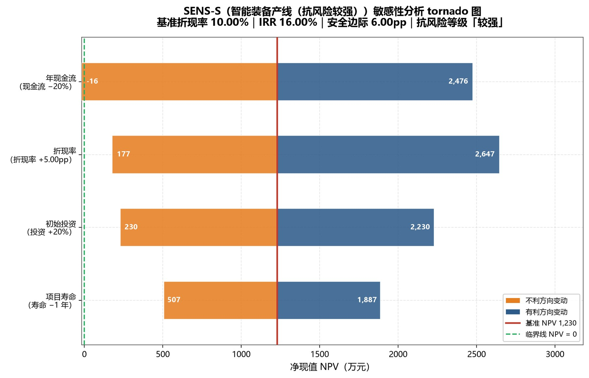
来源：outputs/figures/05_01_CASE-5_tornado_SENS-S.png
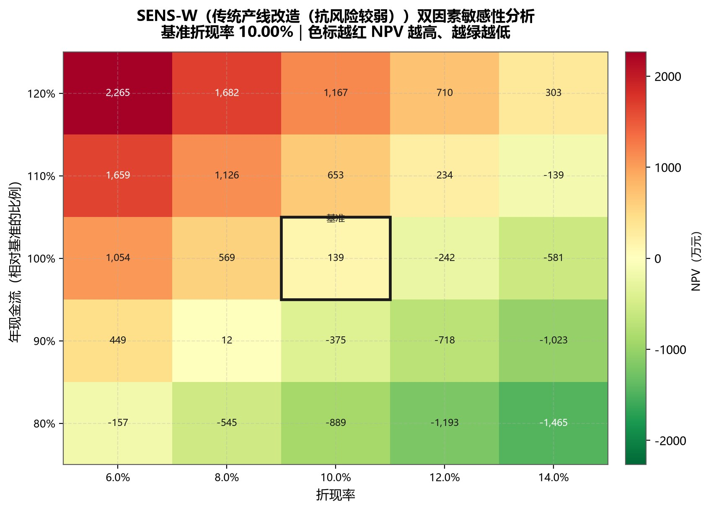
来源：outputs/figures/05_03_CASE-5_dual_SENS-W.png
读旋风图只需看两件事：哪根条最长（哪个因素最敏感），以及条的左右端点有没有跨过零线（该因素在 ±20% 变动内能否让项目由可行变不可行）。
3.10案例六：AI 批量生成项目与决策建议¶
程序用固定随机种子 20260914 生成 12 个项目（6 个行业 × 2 个），因此任何人重跑得到的数据完全相同。这一步演示两件事：用 AI 批量造数据做压力测试，以及用规则引擎批量出决策文案。
| 行业 | 编号 | 投资(万元) | 寿命 | NPV | IRR | 备注 |
|---|---|---|---|---|---|---|
| 新能源（光伏组件） | P01 | 4,376.44 | 10 | 4,492.91 | 28.55% | 案例中 NPV 最高 |
| 新能源（光伏组件） | P02 | 4,310.26 | 8 | 2,823.31 | 24.91% | |
| 半导体（晶圆产线） | P03 | 8,177.01 | 10 | 2,670.06 | 17.30% | 重资产、回收期长 |
| 半导体（晶圆产线） | P04 | 8,607.23 | 12 | 2,970.83 | 16.72% | |
| 生物医药（创新药） | P05 | 2,627.30 | 10 | 3,366.42 | 22.10% | 前两年现金流为负（研发期） |
| 生物医药（创新药） | P06 | 2,898.42 | 10 | 3,040.71 | 20.32% | 同样呈 J 曲线特征 |
| 消费零售（连锁门店） | P07 | 1,574.71 | 6 | 555.50 | 20.98% | 小投资、快回收 |
| 消费零售（连锁门店） | P08 | 1,264.87 | 5 | 389.21 | 21.30% | |
| 公用事业（城市管网） | P09 | 3,451.97 | 12 | 316.71 | 11.76% | 低报酬率、贴近资本成本 |
| 公用事业（城市管网） | P10 | 2,989.87 | 14 | 465.40 | 12.62% | 案例中寿命最长 |
| 数字软件（SaaS） | P11 | 1,033.64 | 5 | 845.75 | 34.79% | |
| 数字软件（SaaS） | P12 | 858.50 | 6 | 1,070.46 | 41.87% | 案例中 IRR 最高 |
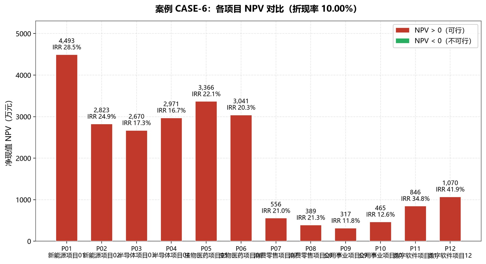
来源：outputs/figures/06_04_CASE-6_npv_comparison.png
生物医药类项目（P05、P06）的前两年现金流为负，是典型的研发型 J 曲线；程序在决策文案里会专门提示“前期投入期长、需关注资金链”。这类自动生成的风险提示，正是作业要求里“AI 辅助功能”的落点。
AI 的两条通道
默认 auto 模式下，程序检测环境变量 IDS_LLM_API_KEY：未设置时使用内置规则引擎（8 类风险规则 + 模板化文案，结果稳定可复现）；设置后调用大模型生成文案，并用规则引擎结果做一致性校验。用 --ai-mode rule 可强制走规则引擎，交作业时建议固定用 rule，保证每次输出一致。
3.11七类图表的命名规则与读法¶
39 张图的名字由程序按固定模板生成：
▍命名规则
案例序号_案例内递增序号_CASE-N_图类型[_项目或互斥组编码].png
例：02_01_CASE-2_mutual_MUT-LIFE.png| 图类型 | 张数 | 画的是什么 | 报告里配什么话 |
|---|---|---|---|
| npv_comparison | 6 | 案例内各项目 NPV 柱状对比（红=可行、绿=不可行） | 结论段的第一张图 |
| irr_vs_rate | 6 | NPV 随折现率变化的曲线族，与横轴交点即 IRR | 解释 IRR 含义与多重根 |
| tornado_{code} | 17 | 单因素 ±20% 的敏感性旋风图（每案例前 3 个项目） | 风险分析段 |
| dual_{code} | 5 | 折现率 × 现金流双因素热力图（项目数 ≤ 4 时出） | 说明结论的稳健区间 |
| cash_flows | 5 | 各项目各期现金流结构（叠加折现后虚线） | 数据说明段 |
| mutual_{group} | 2 | 互斥组的 NPV / ANCF / IRR 三联对比（仅 CASE-2） | 冲突仲裁段 |
| portfolio | 1 | 资本限额额度占用与闲置（仅 CASE-3） | 组合优化段 |
出图条件由代码控制：项目数 > 4 时不出双因素热力图，> 6 时不出现金流结构图，旋风图每案例最多 3 张——这是为了控制报告篇幅，不是漏画。
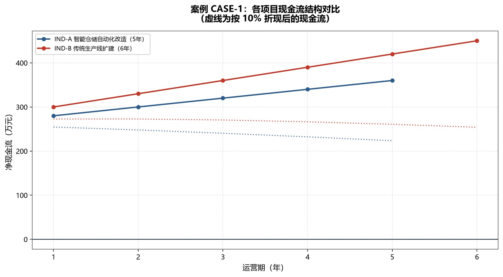
来源：outputs/figures/01_06_CASE-1_cash_flows.png
3.12报告产物与引用方式¶
Markdown 与 Word 报告内容一致，结构为：一、总体结论（含关键发现）→ 二、评价方法与判据说明（2.1 NPV、2.2 IRR、2.3 ANCF、2.4 PI 与资本限额、2.5 敏感性、2.6 AI 辅助、2.7 技术栈）→ 三、测试案例详解（六个案例，每个含“项目基础数据 / 全指标评价结果 / 互斥或组合优化 / 敏感性分析 / AI 决策建议 / 案例图表”）→ 四、附录（A AI 数据生成参数表、B 目录结构、C 环境依赖与复现方式）。
写自己的报告时，最省力也最规范的做法是：引用报告里的表 3-4 到 3-10 这类结果表，再自己写结论段。数据由程序生成、结论由你判断，既保证可复现，又不至于全篇像机器写的。
3.13数值自检：57 个测试方法¶
▍运行测试
python -m tests.test_all # 不装 pytest 也能跑
python -m pytest tests/ -v # 装了 pytest 时更详细| 测试类 | 覆盖内容 |
|---|---|
| TestFinanceCore | NPV、IRR、ANCF、PI、回收期、MIRR、增量 IRR 的手算对照断言（容差 1e-4 量级） |
| TestMutualExclusion | 两组经典互斥冲突的判据正确性；多重 IRR 的捕获 |
| TestCapitalRationing | 排序法失效场景；组合法与背包法结果一致；临界限额的数学自洽 |
| TestSensitivity | 折现率 ±5pp 冲击方向；抗风险等级判定 |
| TestAIAssistance | 决策文案结论方向；固定种子下数据可复现 |
| TestScenariosAndEndToEnd | 六个案例端到端可运行，图表与报告可产出 |
测试全部通过时终端输出 OK。若某条断言失败，报错信息会指出是哪个函数的哪个期望值不匹配，这通常意味着你改了数据或参数却没有同步更新预期值。
3.14换成自己的项目数据¶
两种做法，按需求复杂度选择。
做法一：只在代码里临时构造项目¶
▍单个项目
from src.models import Project, Evaluation
p = Project(code="MY-01", name="车间节能改造",
industry="节能环保", initial_investment=800,
cash_flows=[220, 240, 260, 280, 300])
ev = Evaluation.build(p, rate=0.10)
print(ev.npv, ev.irr, ev.ancf, ev.pi, ev.feasible)initial_investment 必须填正数，内部的负号由程序处理；cash_flows 至少要有 1 期，否则抛出“cash_flows 不能为空”的 ValueError。
做法二：新增一个案例¶
在 src/scenarios.py 里仿照现有案例写一个函数，返回（案例编号, 案例名称, 项目列表, 互斥组, 资本限额），再登记到案例映射表中；main.py 会自动为它跑完整流程、出图并写进报告。案例编号建议沿用 CASE-7 这样的格式，图表文件名前缀会自动变成 07。
改数据后一定要重跑测试：tests/test_all.py 里的断言是针对内置六个案例的数值写的，如果你把案例数据改了，相应断言会失败。正确做法是新增案例而不是修改原案例。
3.15常见错误与排查¶
| 现象 | 原因 | 处理 |
|---|---|---|
| 折现率必须大于 -100%，否则折现因子无意义 | --rate 输成了 -1 或更小 | 改成 0.08 之类的小数 |
| cash_flows 不能为空，至少需要一期 | 新增项目时漏写现金流 | 补上列表 |
| initial_investment 请用正数输入 | 把投资额写成了负数 | 去掉负号，程序内部处理 |
| 未找到案例 CASE-7，可选：[…] | 案例编号写错 | 先跑 --list 看清单 |
| Word 报告很大（约 4.5 MB） | 39 张图按 200 dpi 全部内嵌 | 调试时用 --no-docx |
| 图表数量比预期少 | 双因素图与现金流图有项目数上限条件 | 属正常，见 3.11 节说明 |
| AI 文案每次略有不同 | 走了大模型通道 | 加 --ai-mode rule 固定为规则引擎 |
3.16本章小结¶
- 一条命令跑六个案例，产物是 39 张图 + 2 个 CSV + Markdown/Word 报告 + run_log；
- 判据优先级：独立项目看 NPV 与 IRR（两者一致）；互斥同寿命比 NPV，规模冲突用增量 IRR 仲裁；互斥不同寿命必须用 ANCF；资本限额下用穷举/动态规划而不是 PI 贪心；非常规现金流放弃 IRR、只看 NPV；
- 必须记住的锚点数值：CASE-1 IND-A NPV 198.66 万元 / IRR 17.16%；CASE-2 增量 IRR 14.25%、ANCF 30.39 > 22.16；CASE-3 组合 NPV 1,460.01 万元（比排序法多 89.98 万元）；CASE-5 安全边际 6.00pp 与 0.70pp；
- 交作业前跑 python -m tests.test_all，57 个测试方法全部通过再抄数。
课后练习
- 1. 用 --rate 0.08 重跑 CASE-2，检查两个互斥组的结论是否改变，并解释原因。
- 2. 在 CASE-3 中把限额改为 4,000 万元，记录三种方法各选哪些项目，找出排序法与最优解的差距。
- 3. 自己构造一个“建设期负现金流 + 运营期正现金流 + 期末大额支出”的项目，观察 IRR 唯一性列。
- 4. 把 CASE-5 的 SENS-W 现金流整体上调 10%，看抗风险等级从“极弱”变成什么。
3.17从零动手：自己写一套投资项目评价系统¶
项目二看起来庞大（12 个模块、近 6 000 行报告生成代码），其实内核只有 5 个公式 + 3 个算法：NPV、IRR、PI、ANCF、回收期，加上增量 IRR、多根扫描、背包优化。本节用 7 个步骤把它们全部自己实现一遍，每一步的代码都在本机真跑过，输出与项目的 evaluations.csv 逐位一致：IND-A 净现值 198.66 万元、增量 IRR 14.25%、组合最优 1,460.01 万元、SENS-W 折现率升到 15% 时 −737.07 万元。最后再把结果自动写成 Word 报告——那才是拉开分差的地方。
3.17.1系统拆解：一条流水线，七个工位¶
“全流程评价”听起来像个大词，把它画成流水线就清楚了：数据 → 单项目评价 → 方案比较 → 组合优化 → 风险测试 → 建议 → 报告。每一站只做一件事，输入是上一站的输出，站与站之间用 CSV / JSON 交接。这样拆的好处是：任何一站出错，只有它自己那一环的数会变，排查时二分定位。
| 工位 | 职责 | 输入 | 输出 | 对应源码 | 自己写要花 |
|---|---|---|---|---|---|
| ① | 定义项目数据结构 | 手敲参数 | Project 对象 | models.py | 20 分钟 |
| ② | 单项目指标计算 | Project | NPV/IRR/PI/回收期 | finance_core.py | 60 分钟 |
| ③ | 互斥方案比选 | 同组两个方案 | 增量 IRR / ANCF | optimizer.py | 30 分钟 |
| ④ | 组合优化 | 8 个项目 + 限额 | 最优子集 | optimizer.py | 60 分钟 |
| ⑤ | 敏感性分析 | Project | 临界点 / 安全边际 | sensitivity.py | 40 分钟 |
| ⑥ | 生成决策建议 | 评价结果 | 结论 + 风险点 | ai_advisor.py | 40 分钟 |
| ⑦ | 出图与报告 | 全部结果 | PNG + docx | visualizer / report | 90 分钟 |
按这张表从 ① 写到 ⑤，你就已经有一个能交差的系统了（CSV + 几张图 + 终端表格）。⑥⑦ 是加分项，放到最后再做。不要一开始就写图表——图是结果的呈现，结果没定就画图等于返工。
1用 dataclass 把“一个项目”变成一个对象
项目一传的是散参数（pv、r、n），项目二必须传一整个方案：编号、名称、投资额、各期现金流、风险等级、互斥组、行业。参数一多，函数签名就会变成噩梦。Python 的 dataclass 就是为这种场景准备的：
▍models.py：项目对象
from dataclasses import dataclass
from typing import Optional
@dataclass
class Project:
code: str # 方案编号，如 IND-A
name: str # 方案名称
inv: float # 初始投资额（万元，正数）
cfs: list # t=1..n 各期净现金流（万元）
risk: str = "中"
group: Optional[str] = None # 互斥组名；None 表示独立项目
@property
def full(self):
"""完整现金流 [-I0, CF1, ..., CFn]，t=0 的负号在这里统一处理"""
return [-self.inv] + [float(c) for c in self.cfs]
@property
def life(self):
return len(self.cfs)为什么把取负号这件事放进 full 属性？因为“投资额输正数、序列首项取负”是本项目最容易做错的一处。集中处理一次，后面七个函数都不用再操心方向。项目二的源码在 build_full_cash_flows() 里还专门做了防御：如果 initial_investment 传了负数就直接报错，提示“正数输入，内部负号自动处理”。
▍用法
A = Project("IND-A", "智能仓储自动化改造", 1000,
[280, 300, 320, 340, 360])
B = Project("IND-B", "传统生产线扩建", 1800,
[300, 330, 360, 390, 420, 450])
print(A.full) # [-1000, 280.0, 300.0, 320.0, 340.0, 360.0]2五个评价指标，一个函数一个公式
NPV 与 IRR 在项目一的 2.14 节已经写过（同一套代码可直接复用），这里补上 PI、ANCF 和回收期。注意每个函数的 docstring 都写了判据方向，这是评分表“注释清晰”最省力的得分方式：
▍finance_core.py：五个指标
def pvifa(r, n):
"""年金现值系数 = [1-(1+r)^-n]/r"""
return (1 - (1 + r) ** -n) / r
def npv(rate, cfs):
"""NPV = Σ CF_t/(1+rate)^t，t 从 0 开始（CF_0 为负投资）"""
return sum(cf / (1 + rate) ** t for t, cf in enumerate(cfs))
def profitability_index(inv, cfs, rate):
"""PI = NPV/投资额 + 1（=未来现金流入现值 / 流出现值）
判据：PI>1 可行。它衡量“每 1 元投资换回多少元现值”，
专治 NPV 无法比较不同规模项目的毛病。"""
return npv(rate, cfs) / inv + 1
def ancf(inv, cfs, rate):
"""年金净流量 = NPV / 年金现值系数
判据：寿命不同的互斥方案比这个，谁大谁优。
经济含义：项目在其寿命内每年创造的等额净价值。"""
return npv(rate, [-inv] + list(cfs)) / pvifa(rate, len(cfs))
def payback(inv, cfs):
"""静态投资回收期：累计现金流转正的时点，不足一年按线性插值。
返回 None 表示寿命内未收回。它是风险/流动性指标，不是盈利指标。"""
bal = float(inv)
for i, cf in enumerate(cfs, 1):
prev = bal
bal -= cf
if bal <= 0:
return i - 1 + prev / cf
return None跑一下 CASE-1 的两个项目：
IND-A: NPV= 198.66 IRR= 17.16% PI=1.1987 回收期=3.29年
IND-B: NPV= -202.90 IRR= 6.31% PI=0.8873 回收期=5.00年与项目二 output/tables/evaluations.csv 完全一致：IND-A 净现值 198.66 万元、内含报酬率 17.16%、PI 1.1987 → 可行；IND-B 净现值 −202.90 万元、IRR 6.31%、PI 0.8873 → 不可行。三个判据方向一致，这正是 CASE-1 的教学目的；一旦哪天不一致，就要怀疑代码或口径。
3互斥项目：先减一减，再比一比
两个只能选一个的项目，直接把 NPV 比大小就行吗？规模不同时可以，寿命不同时不行。教材给了两把钥匙，代码都只有几行。
钥匙一：增量 IRR（治规模冲突）¶
▍互斥比选：增量 IRR
def incremental_irr(pa, pb):
"""大投资减小投资的增量现金流，再求其 IRR。
判据：ΔIRR > 资本成本 → 增量投资划算 → 选投资大的方案。"""
big, small = (pb, pa) if pb.inv >= pa.inv else (pa, pb)
n = max(big.life, small.life)
b = list(big.cfs) + [0.0] * (n - big.life)
s = list(small.cfs) + [0.0] * (n - small.life)
delta = [bi - si for bi, si in zip(b, s)]
return irr([-big.inv + small.inv] + delta), big, delta
MUT-P: NPV= 119.08 IRR= 16.65% ANCF= 47.89
MUT-Q: NPV= 221.64 IRR= 15.27% ANCF= 89.12
增量投资 1500 万元，增量现金流 [800, 650, 450]
ΔIRR = 14.25% → 大于资本成本 10%，增量投资划算 → 选 MUT-Q看到冲突了吗：IRR 说法选 P（16.65% > 15.27%），NPV 说法选 Q（221.64 > 119.08）。增量 IRR 14.25% 高于资本成本 10%，说明“多花的那 1 500 万元”本身回报合格，Q 才是正确答案。这就是互斥决策里不能只看 IRR 的实证。
钥匙二：年金净流量（治寿命冲突）¶
MUT-X: 投资1000 6年 NPV= 132.37 ANCF= 30.39
MUT-Y: 投资1400 10年 NPV= 136.14 ANCF= 22.16NPV 看起来 Y 略胜（136.14 > 132.37），但 Y 多了 4 年寿命，这个比较不公平。把 NPV 各自摊成等额年金：X 每年创造 30.39 万元，Y 每年只有 22.16 万元，按“每 6 年滚动再投一次”的口径，X 明显更优。一句话记忆：寿命不同比 ANCF，规模不同比增量 IRR，两者都同直接比 NPV。
自己把这四个数算一遍再往下看。算不出 ANCF 时检查两件事：pvifa 用的是项目自己的寿命（X 用 6 年、Y 用 10 年），以及 NPV 是否已经扣掉了初始投资。
4资本限额：贪心会错，背包才对
这是整个项目二最有分量的算法环节。8 个项目抢 3 000 万元额度，教材教的“按 PI 从高到低装”其实不保证最优。自己写三种解法对拍，你会亲眼看到差异：
▍三种组合优化写法
# ① 排序法（PI 贪心）：O(n log n)，但不保证最优
ranked = sorted([p for p in projs if npv(r, p.full) > 0],
key=lambda p: profitability_index(p.inv, p.cfs, r),
reverse=True)
pick, rem = [], budget
for p in ranked:
if p.inv <= rem + 1e-9: # 放得下就装
pick.append(p); rem -= p.inv
# ② 组合法（穷举 2^n）：保证全局最优，n≤20 可用
import itertools
best = None
for k in range(1, len(projs) + 1):
for combo in itertools.combinations(projs, k):
cost = sum(p.inv for p in combo)
if cost <= budget + 1e-9:
v = sum(npv(r, p.full) for p in combo)
if best is None or v > best[0]:
best = (v, combo, cost)
# ③ 0-1 背包动态规划：O(n×Budget/unit)，项目多时用这个
cap = int(budget) # 额度按 1 万元离散
dp = [0.0] * (cap + 1)
keep = [[False] * (cap + 1) for _ in projs]
for i, p in enumerate(projs):
w = int(round(p.inv)); v = npv(r, p.full)
for b in range(cap, w - 1, -1): # 逆序遍历 → 每个项目只用一次
if dp[b - w] + v > dp[b] + 1e-12:
dp[b] = dp[b - w] + v
keep[i][b] = True
sel, b = [], cap # 回溯还原选了哪些项目
for i in range(len(projs) - 1, -1, -1):
if keep[i][b]:
sel.append(projs[i].code); b -= int(round(projs[i].inv))
排序法 → CAP-A+CAP-D NPV=1370.03 用额度=2800 闲置=200
组合法 → CAP-B+CAP-C NPV=1460.01 用额度=3000
背包法 → CAP-B+CAP-C NPV=1460.01
组合相对排序优势：89.98 万元 (6.57%)贪心法把额度用成 2 800 万元、闲置 200 万元，NPV 合计 1,370.03 万元；穷举与背包都找到 B + C = 1,460.01 万元，把 3 000 万元额度刚好用满，比贪心多 89.98 万元（6.57%）。这不是算法玩具，这是决策后果：教材上说 PI 排序最优，前提是资金可无限分割；一旦项目不可拆分，贪心就会因为额度碎片化而失手。
背包法的三处细节，写错了就得不到 1 460.01：
- 内层循环必须从 cap 倒着走到 w：正着走等于允许同一个项目被装两次（变成完全背包）；
- 先剔除 NPV≤0 的项目：它们只会占额度、不创造价值，剔除后搜索空间小一大截；
- 回溯要逆序：keep 表是按“最后一个决策”记录的，从 len(projs)-1 往回走、命中就把容量 b 减去该项目成本。
背包法把额度离散到 1 万元，因此组合投资额最多被高估 1 万元。项目数超过 22 个时，项目二的 combination_method() 也会自动切换到启发式并给出提示——遇到这种“算法降级”，一定要在报告里写明用了哪种方法、误差多大。
5非常规现金流：IRR 会有两个根
前面 irr() 用牛顿法，它只返回离初值最近的那个根。如果现金流正负号变化不止一次（例如矿山关闭、环境治理、中途大额追加投资），方程会有多个解，单一根就是错的。解法：别用牛顿法，改成网格扫描找变号区间，再逐段二分。
▍多根求解
def irr_roots(inv, cfs, lo=-0.99, hi=5.0, grid=2000):
"""返回 NPV(r)=0 的全部实根（升序）。
① 在 [lo,hi] 均匀取 grid 点算 NPV，找符号变化；
② 每个变号小区间用二分法精解。"""
full = [-inv] + [float(c) for c in cfs]
xs = [lo + (hi - lo) * i / grid for i in range(grid + 1)]
vs = [npv(x, full) for x in xs]
roots = []
for i in range(grid):
if vs[i] == 0:
roots.append(xs[i])
elif vs[i] * vs[i + 1] < 0:
a, b = xs[i], xs[i + 1]
for _ in range(80):
m = (a + b) / 2
if npv(a, full) * npv(m, full) <= 0:
b = m
else:
a = m
roots.append((a + b) / 2)
return roots
UNC-A: 根 = ['10.00%', '60.00%'] NPV@10% = 0.00
UNC-B: 根 = ['5.00%', '25.00%'] NPV@10% = 12.40
UNC-C: 根 = ['9.70%'] NPV@10% = -7.89三个结果都与项目二 CASE-4 的表格完全一致：UNC-A 有 10% 与 60% 两个根（且 NPV@10% 恰为 0，说明 10% 就是它的盈亏平衡折现率）；UNC-B 有 5% 与 25% 两个根但 NPV 为正；UNC-C 只有一个根 9.70% 且 NPV 为负。
动手验证一下“变号次数 = 最多可能有几个根”（笛卡尔符号法则）：把 UNC-A 的 [-2000, 5400, -3520] 写下来数符号变化，−→+→− 变两次，所以最多两个根——扫描结果正好两个，互相印证。结论请写进报告：非常规现金流下 IRR 判据失效，应回到 NPV 判据。
6敏感性分析：算的是“差多少会翻船”
敏感性分析的本质不是多做几个计算，而是回答一个问题：关键参数变到什么程度，结论会反转。三个必备输出：临界点、安全边际、旋风图数据。
▍sensitivity.py：三个函数
def break_even_rate(inv, cfs, lo=0.10, hi=1.0):
"""使 NPV 由正转负的折现率临界点（= IRR），二分求到 1e-6"""
full = [-inv] + [float(c) for c in cfs]
for _ in range(80):
m = (lo + hi) / 2
if npv(m, full) > 0:
lo = m
else:
hi = m
return (lo + hi) / 2
def safety_margin(inv, cfs, rate):
"""安全边际（百分点）= IRR − 资本成本。这是最直观的风险刻度"""
return (irr([-inv] + [float(c) for c in cfs]) - rate) * 100
def tornado(p, rate, pct=0.20):
"""旋风图数据：各因子 ±pct 时 NPV 的高低两端"""
rows = []
for label, npvs in [
("经营现金流", [npv(rate, [-p.inv] + [c*(1+s) for c in p.cfs])
for s in (-pct, pct)]),
("初始投资额", [npv(rate, [-p.inv*(1+s)] + list(p.cfs))
for s in (-pct, pct)]),
("折现率", [npv(rate*(1+s), p.full) for s in (-pct, pct)]),
]:
rows.append((label, min(npvs), max(npvs)))
return sorted(rows, key=lambda r: r[2] - r[1], reverse=True)
SENS-S: NPV= 1229.66 IRR=16.00% 安全边际=+6.00pp @15%= 176.74
SENS-W: NPV= 139.35 IRR=10.70% 安全边际=+0.70pp @15%= -737.07两个项目投资额、寿命完全相同，只有现金流水平不同，但抗风险能力天差地别：SENS-S 有 6.00 个百分点安全边际，折现率涨到 15% 仍有 176.74 万元 NPV；SENS-W 只有 0.70 个百分点，涨到 15% 直接变成 −737.07 万元。这两组数字与项目二 CASE-5 一致。这就是“NPV 为正”与“值得投”的区别——报告里把这一段写清楚，“分析阐述”的分就到手了。
至于风险等级怎么自动定，项目二用的是安全边际的阈值分档，你完全可以自己定义（关键是阈值要写死并说明理由，而不是拍脑袋）：
▍风险分档（阈值可调，但必须写明依据）
def risk_grade(margin_pp):
"""按安全边际（百分点）分档；margin 越大越抗风险"""
if margin_pp >= 5:
return "较强"
if margin_pp >= 3:
return "一般"
if margin_pp >= 1:
return "偏弱"
return "极弱" # 0.70pp 落在这里 → SENS-W 判为极弱7一键运行：命令行、图表与 Word 报告
内核都有了，剩下的是“把手艺包装成产品”。三件套：argparse 接参数、图表工厂批量出图、python-docx 把结果拼成报告。
▍main.py：入口与参数
import argparse
from cases import get_case, all_cases # 你的场景注册表
ap = argparse.ArgumentParser(description="投资项目全流程评价")
ap.add_argument("--case", default="CASE-1", help="场景编号，见 --list")
ap.add_argument("--rate", type=float, default=0.10, help="资本成本（小数）")
ap.add_argument("--list", action="store_true", help="列出全部场景")
ap.add_argument("--no-docx", action="store_true", help="跳过 Word 报告")
a = ap.parse_args()
if a.list:
for k, v in all_cases(a.rate).items():
print(f"{k}: {v.name}")
else:
sc = get_case(a.case, a.rate)
evals = [Evaluation.build(p, a.rate) for p in sc.projects]
export_data(sc, evals) # CSV
make_figures(sc, evals) # PNG
if not a.no_docx:
export_report(sc, evals) # docx + md图表工厂的核心是一个统一出口，这样文件名、dpi、字体、清理策略只有一处定义：
▍visualizer.py：出图出口
def _save(fig, case, seq, kind, code=""):
"""统一出图出口：命名规范 + 释放内存（批量出图必做）"""
name = f"{case:02d}_{seq:02d}_{CASE_CODE}_{kind}" + (f"_{code}" if code else "")
path = os.path.join(FIG_DIR, name + ".png")
fig.savefig(path, dpi=200, bbox_inches="tight")
plt.close(fig) # 不 close 会累积内存，几十张图后必然爆
return pathWord 报告用 python-docx，重点是中文字体要设两次（一次西文、一次东亚）：只设 font.name 时中文仍然会退回宋体。
▍report_generator.py：最小 Word 报告
from docx import Document
from docx.oxml.ns import qn
def add_para(doc, text, size=10.5, bold=False, font="宋体"):
p = doc.add_paragraph()
r = p.add_run(text)
r.font.name = font
r.font.size = Pt(size)
r.font.bold = bold
r._element.rPr.rFonts.set(qn("w:eastAsia"), font) # ← 关键这一行
return p
def build_report(case, rows, figs, path):
d = Document()
d.add_heading(f"{case} 投资项目评价报告", 0)
add_para(d, "一、评价结论", 12, True)
add_para(d, case.conclusion)
t = d.add_table(rows=1, cols=len(rows[0]))
t.style = "Table Grid"
for j, h in enumerate(rows[0].keys()):
t.rows[0].cells[j].text = h
for row in rows:
cells = t.add_row().cells
for j, v in enumerate(row.values()):
cells[j].text = str(v)
for f in figs:
d.add_picture(f, width=Cm(15))
d.save(path)报告里的每个数字都应从 evaluations 对象取，绝对不要手敲。项目二一个场景要往 Word 里写 40 多个数字，手敲必错。写报告的代码本身不难，难的是坚持“数字只来自数据结构”这条纪律。
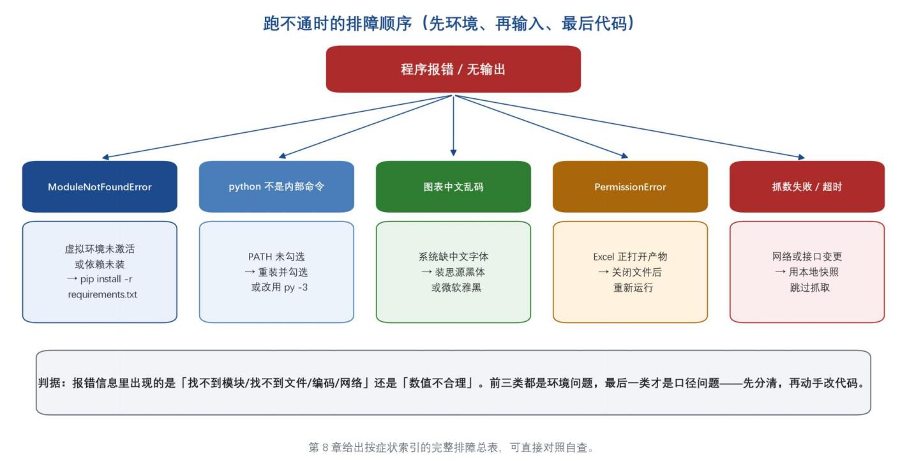
3.17.2本节自检¶
- Project 用 dataclass 定义，投资额取正数、序列首项取负只在一个地方完成；
- CASE-1 复现：IND-A NPV 198.66 / IRR 17.16% / PI 1.1987；IND-B −202.90 / 6.31% / 0.8873；
- CASE-2 复现：P/Q 的 NPV 与 IRR 冲突，增量 IRR 14.25% > 10% 故选 Q；X/Y 用 ANCF 30.39 > 22.16 故选 X；
- CASE-3 复现：贪心 A+D = 1,370.03（闲置 200），穷举与背包均为 B+C = 1,460.01，优势 89.98 万元；
- 背包法的内层循环是倒序，且事先剔除了 NPV≤0 的项目；
- CASE-4 复现：能列出 UNC-A 的两个根 10%/60%，并用符号法则解释为什么有两个根；
- CASE-5 复现：SENS-S 安全边际 +6.00pp、SENS-W +0.70pp，折现率 15% 时分别为 +176.74 / −737.07；
- argparse 提供 --case / --rate / --list，且 --rate 默认 0.10；
- 出图统一走一个 _save() 出口，批量出图后有 plt.close()；
- Word 报告里的数字全部来自评价结果对象，中文字体设置了 w:eastAsia。
下一步
把这七步的产物（CSV + 图 + 报告）交给自己或同学看一遍，只问一句：“看完能回答该投哪个项目吗？”回答不了，就补“一、评价结论”那段话。能落地的判断，才是财务分析的价值所在——这也是第 7 章报告写作的核心要求。
项目三：综合成本与经营决策分析平台
这是五个项目里计算链条最长、也最贴近制造企业真实账务的一个。场景一从材料领用一路算到单位产品成本，再做差异分析和本量利；场景二把五类短期经营决策放在同一家公司的同一个月里，让“接受还是拒绝这张订单”这种判断第一次有了可核对的数字依据。
4.1项目速览¶
项目三覆盖成本管理章节的两大块内容：算得出成本（费用归集分配、三种成本计算方法、标准成本差异）与用得上成本（本量利、特殊订单、约束资源、定价、自制外购、亏损停产）。两个场景各跑一条完整链条，最后统一出图、出 Excel 底稿、出 Markdown 报告。

| 文件 | 职责 | 对应小节 |
|---|---|---|
| main.py | 入口：两个场景的完整编排（约 1,043 行），终端按步骤打印每张表 | 4.3—4.5 |
| src/cost_allocation.py | 材料/人工/制造费用分配、辅助生产三法、作业成本法 | 4.4.1—4.4.3 |
| src/product_cost.py | 品种法、分批法、分步法与成本还原 | 4.4.4 |
| src/standard_cost.py | 标准成本差异（两差异/三差异法）与差异诊断 | 4.4.5 |
| src/mixed_cost.py | 混合成本分解：高低点法、回归直线法 | 4.4.6 |
| src/cvp.py | 本量利分析、多品种保本、利润敏感性 | 4.4.7—4.4.8 |
| src/decision.py | 五类短期经营决策与综合方案对比 | 4.5 |
| src/rounding.py | 会计舍入纪律：四舍五入、先算后舍、勾稽倒挤 | 4.6 |
| src/ai_assistant.py | 数据生成 + 差异归因 + 决策文案（策略模式的双引擎） | 4.9 |
| src/visualize.py | 17 张图表 | 4.7 |
| src/report_generator.py | Excel 底稿（多工作表）与 Markdown 报告 | 4.7 |
| tests/test_all.py | 9 个测试类、51 个测试方法、190 处断言 | 4.8 |
4.2跑通与命令行¶
▍启动
cd /d "F:\（8）Desktop\财务会计实务与应用\Python财务应用\works\03-综合成本与经营决策分析平台\cost_decision_platform"
pip install -r requirements.txt
python main.py --scenario 1 # 只跑场景一（成本核算与本量利）
python main.py --scenario 2 # 只跑场景二（经营决策）
python main.py # 默认 all，两个场景都跑命令行只有一个参数 --scenario，取值 1 / 2 / all，默认 all。启动横幅会打印运行环境的 Python 版本、检测到的中文字体名与输出目录，这三项是排错时最先要确认的信息。
$ python main.py --scenario 1
================================================================
企业成本管理与短期经营决策自动化分析平台 v1.0
运行环境：Python 3.12.4 | 中文字体：Microsoft YaHei
输出目录：…\cost_decision_platform\output
================================================================
场景一 恒信精密制造有限公司 2026 年 8 月成本核算与本量利分析
第 1 步 生产费用归集与分配 …
第 2 步 辅助生产费用分配（直接法 / 交互分配法 / 代数分配法）…
…
场景一：Excel 底稿 …\output\场景一_成本核算分析底稿.xlsx
Markdown 报告 …\output\reports\场景一_成本核算与本量利分析报告.md
图表 12 张场景一与场景二的产物是分开的两份 Excel 与两份报告，图表则统一放在 output/charts/ 下按 01—17 编号。只要其中一个场景时，用 --scenario 指定，能省一半时间。
4.3数据底座：恒信精密制造有限公司¶
两个场景共用同一家虚拟企业与同一组产品，因此你可以把两张底稿对照着读。下表是场景一的产品与费用基础数据（取自代码内置数据与底稿）。
| 产品 | 实际产量 | 单位消耗定额 | 定额消耗量 | 分配数量 | 分配金额(元) | 单位材料费(元) |
|---|---|---|---|---|---|---|
| 甲 | 500 件 | 6 | 3,000 | 3,187.50 | 33,468.75 | 66.94 |
| 乙 | 300 件 | 8 | 2,400 | 2,550.00 | 26,775.00 | 89.25 |
| 丙 | 200 件 | 5 | 1,000 | 1,062.50 | 11,156.25 | 55.78 |
| 合计 | 1,000 件 | — | 6,400 | 6,800.00 | 71,400.00 | — |
分配率 = 实际耗用总量 6,800 ÷ 定额消耗总量 6,400 = 1.0625；分配金额 = 定额消耗量 × 1.0625 × 10.50 元。三行合计恰等于 71,400 元，无尾差。
场景二里同一家企业的三条产品线、两种约束资源与市场容量如下：
| 产品 | 单价(元) | 单位变动成本(元) | 单位边际贡献(元) | 边际贡献率 | 单位机器工时 | 单位人工工时 | 市场最大需求 | 最低生产量 |
|---|---|---|---|---|---|---|---|---|
| 甲 | 380 | 236 | 144 | 37.89% | 1.20 | 0.50 | 6,000 | 0 |
| 乙 | 260 | 168 | 92 | 35.38% | 0.80 | 0.40 | 6,200 | 0 |
| 丙 | 180 | 122 | 58 | 32.22% | 0.60 | 0.35 | 4,800 | 1,000 |
丙产品有 1,000 件的最低生产量约束（合同或商誉要求），这正是线性规划比排序法复杂的地方。
4.4场景一：从领料到本量利的十三个步骤¶
4.4.1第 1 步 三项费用的归集与分配¶
材料按定额消耗量比例法、人工按实用工时比例法、制造费用按生产工时比例法分配。分配完成后汇总成产品成本：
| 产品 | 产量 | 直接材料 | 直接人工 | 制造费用 | 成本合计 | 单位成本 |
|---|---|---|---|---|---|---|
| 甲 | 500 | 33,468.75 | 50,400.00 | 69,300.00 | 153,168.75 | 306.34 |
| 乙 | 300 | 26,775.00 | 28,800.00 | 39,600.00 | 95,175.00 | 317.25 |
| 丙 | 200 | 11,156.25 | 16,800.00 | 23,100.00 | 51,056.25 | 255.28 |
把这张表的单位成本与后面 ABC 法的单位成本对照，是理解“成本交叉补贴”的最快方式：传统法下甲 306.34 元、丙 255.28 元，看似丙成本低；换成作业成本法后结论会反过来，见 4.4.3。
4.4.2第 2 步 辅助生产费用的三种分配方法¶
第一车间下设机修与供电两个辅助车间，它们互相提供劳务。程序用三种方法各算一遍并排对比：
| 分配方法 | 机修车间分配率(元/小时) | 供电车间分配率(元/度) | 是否考虑相互提供劳务 |
|---|---|---|---|
| 直接分配法 | 2.05 | 0.21 | 否（只在辅助车间以外的受益对象间分配） |
| 交互分配法 | 2.03 | 0.21 | 是（先在辅助车间之间交互分配，再对外分配） |
| 代数分配法 | 2.03 | 0.21 | 是（联立方程求解，理论上最精确） |
读表要点：交互分配法与代数分配法结果几乎一致，而直接分配法把机修分配率抬高到 2.05 元/小时，因为它把辅助车间内部相互耗用的部分强行摊给了外部对象。作业里若要求“比较三种方法差异”，把这三行抄进报告即可，明细在底稿的「辅助生产_直接法」「辅助生产_交互法」「辅助生产_代数法」「辅助生产_方法对照」四张表里。
4.4.3第 3 步 作业成本法（ABC）与传统成本法¶
程序按若干作业中心（如设备调试、质量检验、物料搬运）归集制造费用，用各自的成本动因分配到产品，再与传统法（生产工时单一动因）对比：
| 产品 | 产量 | 传统法制造费用 | ABC 法制造费用 | 传统法单位成本 | ABC 法单位成本 | 单位成本差异 | 差异率 | 结论 |
|---|---|---|---|---|---|---|---|---|
| 甲 | 500 | 91,200 | 64,880 | 182.40 | 129.76 | −52.64 | −28.86% | 传统法高估（高产量被多摊） |
| 乙 | 300 | 53,200 | 65,046.67 | 177.33 | 216.82 | +39.49 | +22.27% | 传统法低估（被甲补贴） |
| 丙 | 200 | 45,600 | 60,073.33 | 228.00 | 300.37 | +72.37 | +31.74% | 传统法低估（被甲补贴） |
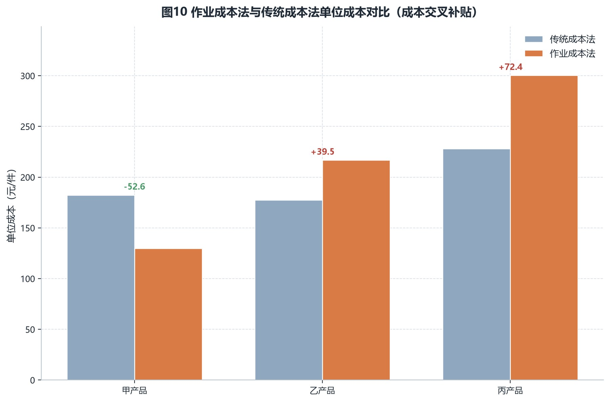
来源：output/charts/10_ABC与传统成本法对比.png
表中的“传统法单位成本”只指制造费用部分（91,200 ÷ 500 = 182.40），不是表 4-4 的完全单位成本 306.34 元。抄数时务必注明口径，这是最容易被老师追问的地方。
4.4.4第 4 步 三种产品成本计算方法¶
程序用同一批数据分别演示品种法、分批法与分步法，并给出方法选择对照表：
| 方法 | 成本计算对象 | 生产组织 | 工艺过程 | 计算期 | 典型行业 |
|---|---|---|---|---|---|
| 品种法 | 产品品种 | 大量大批 | 单步骤或多步骤不要求分步 | 定期（月末） | 发电、采掘、水泥、食品 |
| 分批法 | 产品批别（工单） | 单件小批 | 多步骤装配式 | 不定期（完工时） | 船舶、重型机械、专用设备、服装定制 |
| 分步法 | 生产步骤（车间） | 大量大批 | 多步骤连续式 | 定期（月末） | 纺织、冶金、造纸、化工 |
分批法的底稿给出了四张工单的成本，其中 WO-202608-003（丙产品 80 件）月末仍在产，因此批次总成本 20,422.50 元全额留在“期末在产品成本”，不结转产成品——这正是分批法“成本计算期与完工时点绑定”的特征。
| 工单号 | 产品 | 批量 | 状态 | 批次总成本 | 单位成本 | 结转产成品 | 期末在产品 |
|---|---|---|---|---|---|---|---|
| WO-202608-001 | 甲 | 200 | 完工 | 61,267.50 | 306.34 | 61,267.50 | 0.00 |
| WO-202608-002 | 乙 | 150 | 完工 | 47,587.50 | 317.25 | 47,587.50 | 0.00 |
| WO-202608-003 | 丙 | 80 | 在产 | 20,422.50 | 255.28 | 0.00 | 20,422.50 |
| WO-202608-004 | 甲 | 60 | 完工 | 18,380.25 | 306.34 | 18,380.25 | 0.00 |
分步法则演示了成本还原：第二步的自制半成品按还原分配率 0.95 拆回直接材料、直接人工与制造费用，还原后合计 204,500 元与还原前一致，勾稽关系在“分”位上严格成立。
4.4.5第 5 步 标准成本差异分析¶
程序对每种产品的每个成本项目计算价格类与数量类差异，并按重要性排序、指派责任部门。节选差异最大的四条：
| 产品 | 成本项目 | 差异类型 | 价格类 | 数量类 | 差异合计 | 标准 | 实际 | 重要性 | 关键原因 |
|---|---|---|---|---|---|---|---|---|---|
| 甲 | 直接材料 | 价格 / 用量 | +3,540 | −1,000 | +2,540 | 60,000 | 62,540 | 正常波动 | 价格主导 |
| 甲 | 直接人工 | 工资率 / 效率 | +795 | +750 | +1,545 | 12,500 | 14,045 | 重大差异 | 混合型 |
| 甲 | 固定制造费用 | 效率差异 | — | — | +1,320 | 11,400 | 12,480 | 重大差异 | 生产效率下降 |
| 乙 | 固定制造费用 | 效率差异 | — | — | +1,150 | 9,600 | 10,400 | 重大差异 | 生产效率下降 |
固定制造费用采用三差异法：耗费差异、效率差异、产量差异分别列示。例如甲产品固定制造费用的效率差异 +1,320 元（不利）与产量差异 −720 元（有利）来自不同成因，前者指向现场工时管理、后者指向产能利用不足，程序在「差异诊断_明细」表里为每一条差异自动给出了责任部门与改进建议。
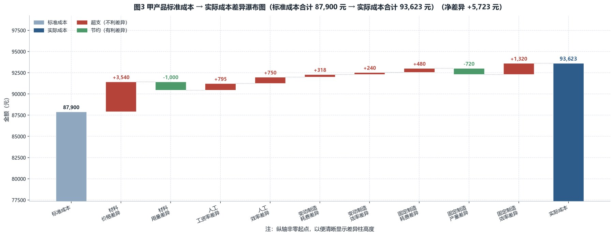
来源：output/charts/03_成本差异瀑布图.png
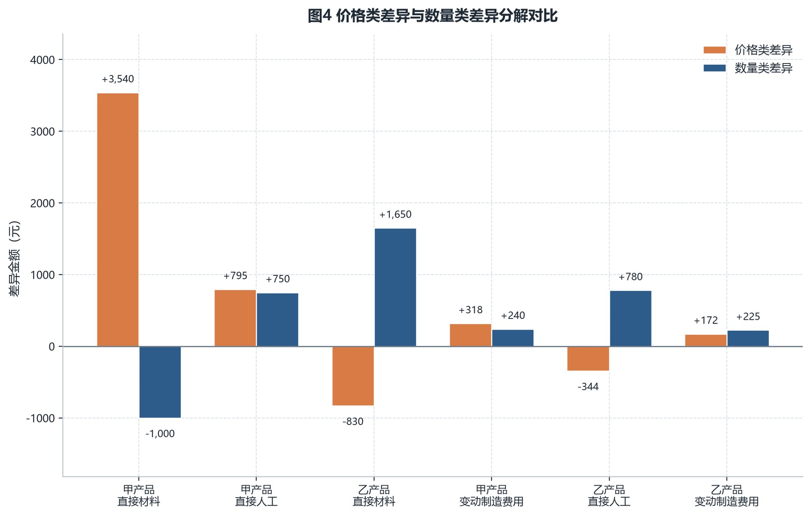
来源：output/charts/04_价差量差分解对比.png
4.4.6第 6 步 混合成本分解¶
用同一批历史观测（业务量与制造费用）分别用高低点法与回归直线法拟合 y = a + bx：
| 分解方法 | 固定成本 a(元) | 单位变动成本 b(元) | 成本模型 | 拟合优度 | 估计标准误差 |
|---|---|---|---|---|---|
| 高低点法 | 81,526.56 | 4.9513 | y = 81,526.56 + 4.9513x | 0.94 | 3,568.12 |
| 回归直线法 | 83,206.23 | 4.9478 | y = 83,206.23 + 4.9478x | 0.96 | 3,076.69 |
两种方法的 b 几乎相同（4.95 元/单位），但 a 相差 1,679.67 元。回归法用到了全部观测点，拟合优度更高、标准误差更小，因此报告里应以回归直线法为主、高低点法作为快速校核。
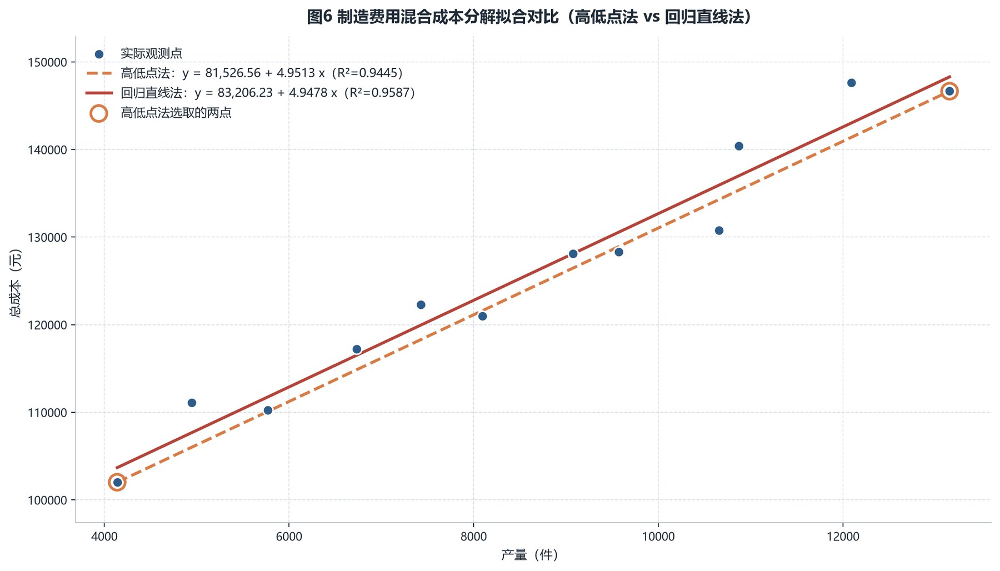
来源：output/charts/06_混合成本分解拟合图.png
4.4.7第 7 步 本量利分析（单一产品与多品种）¶
保本量 Q₀ = F ÷ (P − V)；保本额 S₀ = F ÷ 边际贡献率
基本保本公式；边际贡献率 CMR = (P − V) ÷ P
| 指标 | 数值 | 指标 | 数值 |
|---|---|---|---|
| 单价 P | 380 元 | 实际销量 Q | 9,500 件 |
| 单位变动成本 V | 236 元 | 实际销售收入 S | 3,610,000 元 |
| 固定成本 F | 1,200,000 元 | 边际贡献总额 | 1,368,000 元 |
| 单位边际贡献 CM | 144 元 | 利润 π | 168,000 元 |
| 边际贡献率 CMR | 37.89% | 变动成本率 | 62.11% |
| 保本量 Q₀ | 8,333.33 件 | 安全边际量 / 额 | 1,166.67 件 / 443,333.33 元 |
| 保本额 S₀ | 3,166,666.67 元 | 安全边际率 | 12.28% |
| 经营杠杆系数 DOL | 8.1429 | 利润率 | 4.65% |
| DOL 勾稽值（1 ÷ 安全边际率） | 8.1429 | 利润率勾稽值 | 4.65% |
| 保本额勾稽误差 | 0 | 安全边际等级判定 | 要警惕 |
程序同时给出三条勾稽校验：保本额 = 保本量 × 单价（勾稽误差 0）、DOL = 1 ÷ 安全边际率、利润率 = 安全边际率 × 边际贡献率，后两条的勾稽值与主值完全一致。
安全边际率 12.28% 对应程序给出的等级“要警惕”（一般经验：20% 以上较安全，10% 以下为危险）。写结论时不要只抄一个数，要把等级判定与经验标准一起写出来。
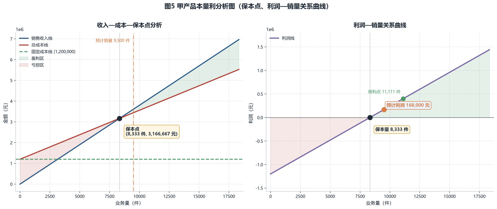
来源：output/charts/05_本量利分析图.png
多品种口径下程序按销售收入比重分摊固定成本，三个产品的保本销售额分别为 甲 3,012,675.93 元、乙 1,345,272.46 元、丙 721,039.34 元，合计 5,078,987.73 元，即企业整体保本销售额。注意此时甲的保本量变成 7,928.09 件（而不是单产品口径的 8,333.33 件），因为固定成本按销售额比重分摊，不再全部由甲承担。
底稿「本量利_临界值」表进一步给出各因素的盈亏临界值与允许变动幅度：
| 临界值指标 | 数值 | 允许变动幅度 |
|---|---|---|
| 单价下限（利润 = 0） | 362.32 元 | 可降幅 4.65% |
| 单位变动成本上限（利润 = 0） | 253.68 元 | 可升幅 7.49% |
| 销量下限（利润 = 0） | 8,333.33 件 | 可降幅 12.28% |
| 固定成本上限（利润 = 0） | 1,368,000 元 | 可升幅 14.00% |
4.4.8第 8 步 利润敏感性分析¶
各因素单独变动 ±10% 时对利润的影响，程序给出实证敏感系数与解析敏感系数并互相校验：
| 因素 | 基准值 | +10% 后利润 | −10% 后利润 | 敏感系数 | 方向 | 排序 |
|---|---|---|---|---|---|---|
| 单价 | 380 元 | 529,000 | −193,000 | 21.4881 | 同向 | 1 |
| 单位变动成本 | 236 元 | −56,200 | 392,200 | −13.3452 | 反向 | 2 |
| 销量 | 9,500 件 | 304,800 | 31,200 | 8.1429 | 同向 | 3 |
| 固定成本 | 1,200,000 元 | 48,000 | 288,000 | −7.1429 | 反向 | 4 |
敏感系数同时给出“实证”与“解析”两列且完全相等（程序内部做了交叉校验），四个因素均被判定为“高敏感”。
单价敏感系数 21.49 的含义是：单价每变动 1%，利润变动约 21.49%。这也解释了为什么表 4-11 里安全边际率只有 12% 会被判为“要警惕”——价格稍一松动，利润就会大幅缩水。
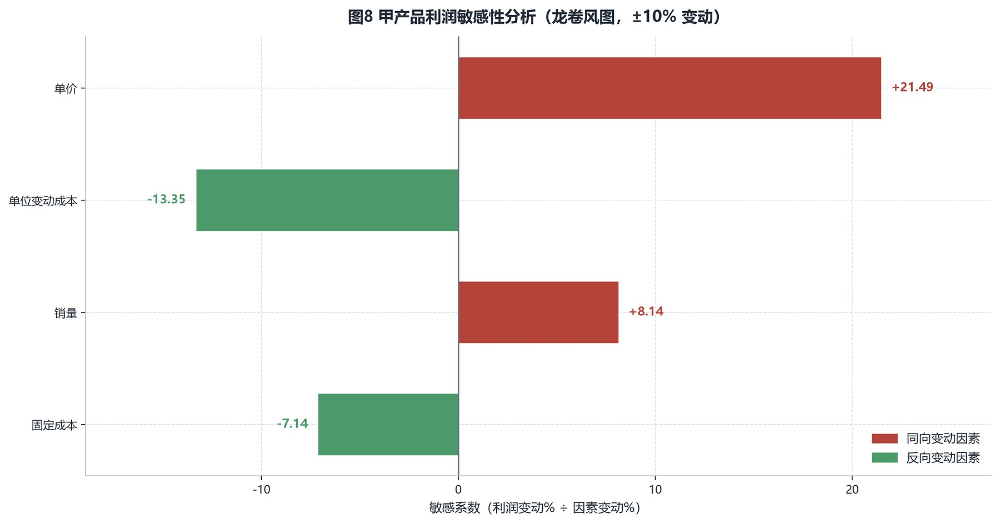
来源：output/charts/08_利润敏感性龙卷风图.png
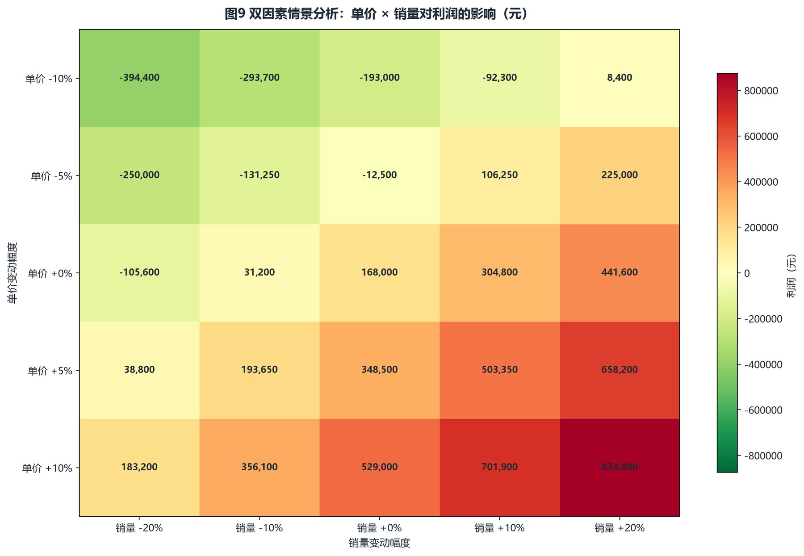
来源：output/charts/09_利润情景矩阵热力图.png
4.4.9第 9—13 步 诊断、图表与导出¶
剩下的步骤不再产生新的会计数字，而是把前面的结果“说人话”：差异关键原因诊断、改进建议生成、12 张图表绘制、32 个工作表的 Excel 底稿导出与 Markdown 报告落盘。终端会逐步打印每一步导出的工作表名（如 费用分配_材料、产品成本汇总、辅助生产_直接法），表名就是分析步骤名，与报告章节一一对应。
4.5场景二：五类短期经营决策¶
4.5.1特殊订单是否接受¶
同一位海外客户给出两笔报价（甲产品、258 元/件），区别在于企业是否有足够剩余产能：
| 项目 | 情形 A：1,500 件（剩余产能内） | 情形 B：3,000 件（需挤占正常订单） |
|---|---|---|
| 增量收入 ① | 387,000 元 | 774,000 元 |
| 增量变动成本 ② | 354,000 元 | 708,000 元 |
| 专属固定成本 ③ | 12,000 元 | 12,000 元 |
| 机会成本 ④ | 0 元 | 216,000 元 |
| 增量成本合计 ②+③+④ | 366,000 元 | 936,000 元 |
| 差别损益 ①−(②+③+④) | +21,000 元 → 接受 | −162,000 元 → 拒绝 |
| 最低可接受价格 | 244 元/件 | 312 元/件 |
两笔订单报价相同、产品相同，结论却完全相反，差别只在有没有挤占正常销售。情形 B 的 216,000 元机会成本就是被挤占的正常订单边际贡献。短期决策里“相关成本”必须包含机会成本，这是本节唯一要记住的原则。
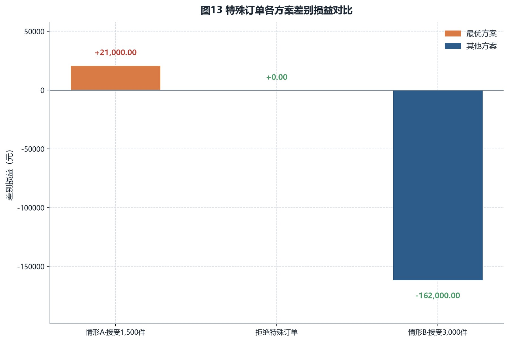
来源：output/charts/13_特殊订单方案对比.png
4.5.2约束资源的最优利用¶
程序先按“单位约束资源边际贡献”排序（只看机器工时这一种瓶颈），再用线性规划同时考虑机器工时与人工工时两种约束，最后对比两种结果：
| 方法 | 约束条件 | 最优产量（甲/乙/丙） | 边际贡献总额 | 适用条件 |
|---|---|---|---|---|
| 单位约束资源边际贡献排序法 | 机器工时 15,000 小时 | 6,000 / 6,200 / 4,733.33 | 1,708,933.33 元 | 单一瓶颈资源时，排序即为全局最优 |
| 线性规划（HiGHS 求解器） | 机器 15,000 + 人工 5,000 小时 | 6,000 / 4,125 / 1,000 | 1,301,500 元 | 多资源同时约束，必须联立求解 |
排序法的结果在双约束下不可行：按它给出的产量，人工工时要耗用约 7,136.67 小时，远超 5,000 小时上限。因此两个数字不能直接比大小，只能作为“单约束上界”与“双约束可行解”对照。
线性规划还给出影子价格：人工工时 230 元/小时（已耗尽，是瓶颈资源），机器工时 0 元/小时（闲置 3,900 小时，不是瓶颈）。这意味着多争取 1 小时人工可以多创造 230 元边际贡献，而增加机器工时没有任何价值。
来源：output/charts/14_约束资源最优利用.png
4.5.3产品定价决策¶
| 定价方法 | 加成基础(元) | 加成率 | 建议单价(元) | 预计利润(元) | 毛利率 |
|---|---|---|---|---|---|
| 完全成本加成法（正常产销 9,500 件） | 362.32 | 12% | 405.79 | 413,040 | 10.71% |
| 变动成本加成法（正常产销 9,500 件） | 236.00 | 55% | 365.80 | 33,100 | 0.95% |
| 目标利润加成法（目标利润 50 万元） | 236.00 | — | 414.95 | 500,000 | 12.68% |
| 完全成本加成法（产能受限 6,000 件） | 436.00 | 12% | 488.32 | 313,920 | 10.71% |
最后一行值得单独讲：当销量从 9,500 件降到 6,000 件时，单位分摊的固定成本上升使完全成本从 362.32 元涨到 436.00 元，按同样的 12% 加成率，报价被迫提高到 488.32 元——这就是著名的“死亡螺旋”：产能利用率越低，定价越高，越难卖，利用率进一步下降。
来源：output/charts/16_定价方法对比.png
4.5.4零部件自制或外购¶
需求 24,000 件、外购单价 22.50 元。自制的变动成本 444,000 元、可避免固定成本 60,000 元、专属固定成本 40,000 元，两种情形的区别在于是否占用其他产能：
| 指标 | 情形 A（无机会成本） | 情形 B（有机会成本 80,000 元） |
|---|---|---|
| 外购相关成本 | 540,000 元 | 540,000 元 |
| 自制相关成本合计 | 544,000 元 | 624,000 元 |
| 差别损益（外购 − 自制） | −4,000 元 | −84,000 元 |
| 单位自制相关成本 / 临界外购单价 | 22.67 元/件 | 26.00 元/件 |
| 决策 | 外购更优（省 4,000 元） | 外购更优（省 84,000 元） |
注意“不可避免的固定成本”不参与比较。情形 A 中若把全部固定成本都算进自制成本，会得出自制 544,000 元远高于外购的错误印象；正确表述是：自制的相关成本 544,000 元对比外购 540,000 元，差额仅 4,000 元，此时还应考虑质量、交期与供应商依赖等非财务因素。
4.5.5亏损产品是否停产¶
丙产品账面亏损 71,600 元，是全年最容易被提出“砍掉”的产品。程序的判断如下：
| 产品 | 单价 | 单位变动成本 | 销量 | 边际贡献总额 | 分摊固定成本 | 可避免固定成本 | 账面利润 | 若停产的损失 | 决策 |
|---|---|---|---|---|---|---|---|---|---|
| 甲 | 380 | 236 | 9,500 | 1,368,000 | 380,000 | 300,000 | 988,000 | 1,068,000 | 继续生产（盈利） |
| 乙 | 260 | 168 | 6,200 | 570,400 | 420,000 | 420,000 | 150,400 | 150,400 | 继续生产（盈利） |
| 丙 | 180 | 122 | 4,800 | 278,400 | 350,000 | 180,000 | −71,600 | 98,400 | 继续生产（账面亏损） |
丙产品虽然账面亏 71,600 元，但它贡献了 278,400 元边际贡献，而停产只能避免其中 180,000 元固定成本，剩下的 98,400 元固定成本会转嫁给甲、乙两个产品，公司总利润反而下降 98,400 元。判据只有一条：边际贡献 > 可避免固定成本 ⇒ 不停产。
4.5.6综合方案对比¶
程序把五类决策的候选方案放在同一张表里，用同口径的差别损益排序：
| 方案 | 类型 | 相关收入 | 相关成本 | 差别损益 | 成本收益率 | 结论 |
|---|---|---|---|---|---|---|
| ① 接受 1,500 件特殊订单（剩余产能内） | 追加订单 | 387,000 | 366,000 | +21,000 | 5.74% | 最优方案 |
| ③ 零部件外购（情形 A） | 自制/外购 | 544,000 | 540,000 | +4,000 | 0.74% | 可行 |
| ⑤ 维持现状 | 基准 | 0 | 0 | 0 | — | 基准（无差别） |
| ④ 停产丙产品 | 停产决策 | 180,000 | 278,400 | −98,400 | −35.34% | 不可行 |
| ② 接受 3,000 件特殊订单（挤占正常订单） | 追加订单 | 774,000 | 936,000 | −162,000 | −17.31% | 不可行 |
来源：output/charts/15_综合决策方案对比.png
4.6会计舍入纪律：为什么不能用 round()¶
这是项目三最值得单独学的一件事。Python 内置 round() 采用银行家舍入：round(0.625, 2) 得 0.62、round(1.005, 2) 得 1.00，与中国会计实务的四舍五入不一致，会在“分”位上产生 1 分差异。项目三因此建立了三条纪律：
- 一律四舍五入：使用 src/rounding.py 的 round_half_up()，并提供 round_half_up_series / round_half_up_frame 对整个 DataFrame 批量处理；
- 先算后舍：中间过程用全精度浮点数运算，只在生成对外报表时舍入到分，严禁“先舍后加”；
- 勾稽倒挤：互补的两项（如完工产品成本与月末在产品成本）之和必须等于已知总数时，对其中一项用 plug_last() 倒挤，使勾稽关系在分位上严格成立。
▍用法
>>> from src.rounding import round_half_up, plug_last
>>> round_half_up(147390.625) # 四舍五入，而非 147390.62
147390.63
>>> plug_last(165268.75, 147390.63) # 倒挤：在产品 = 合计 − 完工
17878.12如果你的手工答案与程序差 1 分钱，先别怀疑算法：多半是舍入顺序不同。把“先舍后加”改成“先算后舍”，或按程序的做法对最后一项倒挤，两边就能对上。
4.7产物结构¶
| 产物 | 数量 / 规模 | 内容 |
|---|---|---|
| output/charts/*.png | 17 张 | 场景一 12 张（成本构成、差异、本量利、ABC、敏感性等），场景二 5 张（订单、约束资源、定价、停产、综合对比） |
| output/场景一_成本核算分析底稿.xlsx | 32 个工作表 | 费用分配 3 表、辅助生产 5 表、ABC 4 表、三种计算方法 6 表、差异分析 3 表、混合成本 3 表、本量利 6 表等 |
| output/场景二_经营决策分析底稿.xlsx | 22 个工作表 | 订单信息、特殊订单 3 表、约束资源 5 表、线性规划 2 表、定价 3 表、自制外购 2 表、停产 1 表、综合对比 2 表等 |
| output/reports/*.md | 2 份 | 场景一报告 18 节、场景二报告 21 节，均含图表引用 |
| output/run_log.txt | 约 44 KB | 两个场景的完整终端输出 |
打开场景一底稿，把「本量利_甲产品指标」表与表 4-11 对照，再用 Excel 自己算一遍 保本额 = 固定成本 ÷ 边际贡献率，验证程序给出的“保本额勾稽误差 = 0”。
4.8数值自检：9 类 51 个测试方法¶
▍运行测试
python -m tests.test_all # 或 python -m pytest tests/ -v测试覆盖费用分配、产品成本、标准成本差异、混合成本、本量利、决策、AI 辅助、报告生成与舍入共 9 个方面、51 个测试方法、190 处断言，其中大部分断言以教材例题的手算结果为基准。改任何算法前先跑一遍，改完再跑一遍，是本项目最省时间的习惯。
4.9AI 辅助的三处落点¶
- AIDataGenerator：以“结构化随机 + 业务规则约束 + 定向扰动注入”生成模拟数据，保证满足会计恒等式与业务逻辑（如领料量 ≥ 投产量 × 消耗定额），可用 seed 完全复现；
- VarianceDiagnostician：对差异做“主因判定 → 责任归属 → 建议生成”三步推理，先用价量占比把差异归类为价格主导 / 用量主导 / 混合型，再按重要性阈值定位关键差异；
- DecisionNarrator：把数字结果翻译成“结论先行 → 数据支撑 → 风险提示 → 行动建议”的四段式决策文案。
文本引擎采用策略模式：默认 RuleBasedEngine（零外部依赖、结果确定、可审计）；设置环境变量 LLM_API_KEY / LLM_BASE_URL / LLM_MODEL 后可切换到 OpenAICompatibleEngine 做自然语言润色，两者接口一致。
提交作业时如果用到大模型润色，请在报告里注明“文案由规则引擎生成”或“经大模型润色、数据与结论由程序计算”。项目三的设计前提是可复现，默认通道（规则引擎）每次输出完全相同，这一点值得在答辩时主动说明。
4.10常见错误与排查¶
| 现象 | 原因 | 处理 |
|---|---|---|
| 总成本与明细行合计差 1 分钱 | 先舍后加，或用了内置 round() | 见 4.6 节，改用 round_half_up 与倒挤 |
| ABC 单位成本与传统法差异过大 | 成本动因设置不合理 | 检查作业中心的动因与耗用量数据 |
| 线性规划结果与排序法差很多 | 多资源约束下排序法本就不可行 | 以线性规划为准，见 4.5.2 注 |
| 停产决策结论反直觉 | 把不可避免固定成本也算成了可避免 | 核对「可避免固定成本」列 |
| 图表中文乱码 | 系统缺中文字体 | 见 1.7 节 |
| scipy 未安装导致场景二报错 | 线性规划依赖 scipy.optimize | pip install scipy |
| 改了数据后测试大量失败 | 断言以原示例数据为基准 | 新增场景而不是修改原场景 |
4.11本章小结¶
- 场景一是一条 13 步的成本核算链：分配 → 辅助生产 → ABC → 三种计算方法 → 差异 → 混合成本 → 本量利 → 敏感性 → 诊断 → 出图出表；
- 必须记住的锚点：材料分配率 1.0625、甲单位成本 306.34 元、ABC 使甲单位制造费用从 182.40 降到 129.76、保本量 8,333.33 件、保本额 3,166,666.67 元、安全边际率 12.28%、DOL 8.14、单价敏感系数 21.49；
- 场景二的五条判据：特殊订单看差别损益（含机会成本）；单约束用单位约束资源边际贡献排序、多约束用线性规划并读影子价格；定价要防死亡螺旋；自制外购只比相关成本；亏损产品“边际贡献 > 可避免固定成本”就不停产；
- 舍入纪律（四舍五入、先算后舍、勾稽倒挤）是成本类程序能否与手工账对平的关键。
课后练习
- 1. 把甲产品的实际销量从 9,500 件改为 8,500 件，重算安全边际率与 DOL，看等级判定是否变化。
- 2. 若人工工时上限从 5,000 小时提高到 6,000 小时，预测线性规划的最优组合与边际贡献如何变化，再用影子价格 230 元/小时验证你的预测。
- 3. 把特殊订单的报价从 258 元提高到 300 元，情形 B 是否变为可接受？临界点在哪里？
- 4. 用 round_half_up 与内置 round 分别计算 0.625、1.005、2.675 保留两位的结果，记录差异并解释为什么成本核算必须用前者。
4.12从零动手：自己写一套成本核算与经营决策平台¶
项目三是五个项目里业务面最广的一个：从费用归集分配、三种成本计算方法、标准成本差异、混合成本分解，到本量利和五类短期决策。听起来吓人，其实所有环节共用同一个分配函数和同一套“相关成本”判断逻辑。本节按九步把它写出来，每步的代码都在本机跑过，结果与项目三的 Excel 底稿逐位一致：材料分配 33,468.75 / 26,775 / 11,156.25 元、代数分配法机修 2.03、ABC 下丙产品单位成本高出 72.37 元、多品种综合保本额 5,078,987.73 元、线性规划最大边际贡献 1,301,500 元、人工工时影子价格 230 元/小时。
4.12.1先想清楚：这其实只有一件事¶
成本核算的全部工作可以压缩成一句话：把一笔已经发生的钱，按某个合理的权重，分给若干个承担对象。材料按定额分、人工按工时分、制造费用按工时或机器小时分、辅助车间按劳务量分、作业成本按动因分——只是权重不同，动作完全一样。所以第一个要写的函数，是一个通用分配函数。
▍cost_allocation.py：一个函数管住所有分配
def allocate(df, total, weight_col):
"""按权重比例分配：分配率 = 待分配总额 / 权重合计。
适用于材料（定额消耗量）、人工（实用工时）、
制造费用（机器工时/工时）等一切“按比例分摊”场景。"""
w = df[weight_col].astype(float)
rate = total / w.sum()
out = df.copy()
out["分配率"] = rate
out["分配金额"] = (w * rate).round(2)
diff = round(total - out["分配金额"].sum(), 2) # 舍入尾差
if abs(diff) >= 0.01:
out.iloc[-1, out.columns.get_loc("分配金额")] += diff
return out
定额消耗量合计 = 6400 分配率 = 1.062500 合计勾稽 = 71400.0
产品名称 定额消耗量 分配金额
甲产品 3000.0 33468.75
乙产品 2400.0 26775.00
丙产品 1000.0 11156.25实际材料 6 800 千克 × 单价 10.50 元 = 71,400 元，定额消耗量合计 3 000+2 400+1 000 = 6 400 千克，分配率 1.0625（即实际是定额的 106.25%，超耗 6.25%）。三个产品的分配额 33,468.75 / 26,775.00 / 11,156.25 相加正好回到 71,400.00——这个“相加正好”就是底稿里的勾稽校验，必须让程序自己算出来。
diff 那三行看着多余，实际必须有。三项各自四舍五入到分，合计常常是 71,399.99 或 71,400.01，交上去就是一张不平的底稿。把差额挂到最后一行（术语“倒挤”）是财务软件的通行做法，也是项目三 rounding.plug_last() 的全部原理。
三种费用分别调用同一个函数，产品成本表就出来了：
▍产品成本汇总
mat = allocate(prod, 6800 * 10.5, "定额消耗量") # 直接材料
lab = allocate(products, 96000, "生产工时") # 直接人工
ovh = allocate(products, 132000, "生产工时") # 制造费用
cost["总成本"] = cost[["材料", "人工", "制造"]].sum(axis=1)
cost["单位成本"] = (cost["总成本"] / cost["产量"]).round(2)
产品 材料 人工 制造 产量 总成本 单位成本
甲 33468.75 50400.0 69300.0 500 153168.75 306.34
乙 26775.00 28800.0 39600.0 300 95175.00 317.25
丙 11156.25 16800.0 23100.0 200 51056.25 255.282辅助生产费用：三种方法，一个联立方程组
直接分配法最简单（把辅助车间互相提供的部分剔掉再分）；代数分配法最准确，本质是解一个二元一次方程组。用 numpy.linalg.solve，五行的事：
▍allocate_auxiliary_*
import numpy as np
A, B = 48000.0, 32000.0 # 机修、供电待分配费用
QA, QB = 24000.0, 160000.0 # 提供的劳务总量（小时、度）
qAB, qBA = 600.0, 4000.0 # 供电耗机修 600 h；机修耗供电 4000 度
# ① 直接分配法：剔除辅助车间互耗
rA_direct = A / (QA - qAB) # 2.0513 → 2.05
rB_direct = B / (QB - qBA) # 0.2051 → 0.21
# ② 代数分配法：解 rA·QA = A + rB·qBA ; rB·QB = B + rA·qAB
M = np.array([[1.0, -qBA / QA],
[-qAB / QB, 1.0]])
b = np.array([A / QA, B / QB])
rA, rB = np.linalg.solve(M, b) # 2.0346 → 2.03，0.2076 → 0.21
直接分配法：机修 2.0513 → 2.05；供电 0.2051 → 0.21
代数分配法：机修 2.0346 → 2.03；供电 0.2076 → 0.21
交互分配法：对内 2.0000/0.2000，对外 2.0333/0.2075为什么三种方法要一起写？因为“方法对比表”本身就是最好的分析素材：机修分配率从 2.05（直接）降到 2.03（代数），差异不到 1%，但代数法把辅助车间互供的价值完整还原了。报告里写一句“本例三法差异小于 1%，故实务上采用直接分配法即可”，比只给一个数强得多——这就是“分析阐述”得分点。
3作业成本法：把一笔大费用拆成四个成本库
ABC 的全部代码就是“先算每个作业动因的分配率，再按各产品耗用的动因量加起来”：
▍ActivityBasedCosting
activities = [
{"作业": "机器加工", "成本": 96000.0, "动因量": [12000, 7000, 6000]},
{"作业": "设备调整", "成本": 42000.0, "动因量": [40, 90, 70]},
{"作业": "质量检验", "成本": 28000.0, "动因量": [60, 110, 130]},
{"作业": "物料搬运", "成本": 24000.0, "动因量": [80, 150, 170]},
]
qty = np.array([500.0, 300.0, 200.0]) # 各产品产量
abc = np.zeros(3)
for a in activities:
d = np.array(a["动因量"], dtype=float)
abc += a["成本"] / d.sum() * d # 成本库分配率 × 各产品动因耗用
pool = sum(a["成本"] for a in activities) # 190000
mach = np.array([12000.0, 7000.0, 6000.0])
trad = pool / mach.sum() * mach # 传统法：单一机器工时分配
制造费用池 = 190000.0
ABC 单位成本 = [129.76 216.82 300.37]
传统法单位成本 = [182.4 177.33 228. ]
单位成本差 = [-52.64 39.49 72.37]同样 19 万元制造费用，两种算法给出的单位成本差出一大截：甲从 182.40 降到 129.76（−52.64），乙从 177.33 升到 216.82（+39.49），丙从 228.00 升到 300.37（+72.37）。原因一眼可见：甲产量大、机器工时多但调整/检验/搬运次数少，传统法让它背了过多的制造费用；丙是小批量、高服务量产品，被传统法低估了 72.37 元/件。这就是“高产低利、低产高利”交叉补贴的量化证据，是本项目最能出彩的一段分析。
4三种成本计算方法：其实只差“对象”和“时点”
| 方法 | 成本计算对象 | 何时算 | 代码要点 | 典型行业 |
|---|---|---|---|---|
| 品种法 | 产品品种 | 月末定期 | 直接就是步骤 1 的 allocate + 汇总 | 发电、采掘、供水 |
| 分批法 | 批次/订单 | 批次完工时 | 按 batch_id groupby 累加，未完工的留在在产 | 造船、定制设备 |
| 分步法 | 生产步骤 | 每步月末 | 逐步结转 + 成本还原把综合项拆回原始成本项目 | 纺织、冶金、化工 |
▍job_order_costing
# 分批法：本质是一次 groupby
detail = pd.DataFrame({
"批次": ["WO-202608-001", "WO-202608-001", "WO-202608-003"],
"成本项目": ["直接材料", "直接人工", "直接材料"],
"金额": [42000.0, 19267.5, 20422.5],
"状态": ["完工", "完工", "在产"],
})
job = detail.groupby(["批次", "状态"])["金额"].sum()
# 完工批次的合计转入产成品，在产批次留在生产成本科目分步法最容易做错的是成本还原。综合结转后，第二一步的“半成品”里混着第一步的材料、人工、制造费用，直接汇总会让报表上的“直接材料”项目严重偏低。项目三用还原率 0.95 把综合项逐级拆开，还原后总额 204,500 元与还原前一致——还原只改变结构、不改变总额，这就是自检标准。
5标准成本差异：记住一句口诀就够
价格差异 = 实际数量 × (实际价格 − 标准价格)<br>数量差异 = (实际数量 − 标准数量) × 标准价格
口诀：算价差用实际量，算量差用标准价——把“另一个因子”固定住，差异才能归因
▍standard_cost.py
def material_variance(aq, ap, sq, sp):
"""aq 实际用量 / ap 实际单价 / sq 标准用量 / sp 标准单价"""
price_var = aq * (ap - sp) # 价格差异：用实际量
qty_var = (aq - sq) * sp # 用量差异：用标准价
return {"价格差异": price_var, "用量差异": qty_var,
"总差异": price_var + qty_var,
"标准成本": sq * sp, "实际成本": aq * ap}
材料：价格差异 3,540.00，用量差异 -1,000.00，合计 2,540.00；标准 60,000 实际 62,540
人工：工资率差异 795.00，效率差异 750.00，合计 1,545.00；标准 12,500 实际 14,045两组输出与项目三“标准成本差异汇总”完全一致：甲产品直接材料超支 2,540 元（价格差 +3,540、用量差 −1,000），直接人工超支 1,545 元（工资率 +795、效率 +750）。注意归因方向：材料是“买贵了但省着用”，人工是“工资涨了且效率也降了”。同样是超支，责任部门完全不同——材料价格找采购，人工效率找车间。把这句话写进报告，比多列三张表有价值。
自己验一遍总差异 = 实际 − 标准：62,540 − 60,000 = 2,540 ✓；14,045 − 12,500 = 1,545 ✓。任何差异分析表，两个分项之和必须等于总差异，总差异必须等于实际减标准，这两条勾稽要在代码里 assert。再往深一层看：标准成本差异分析其实就是“现状与预期”这套方法论的公式化（先定义预期，再量化差距，最后归因到可调控因素），完整的五步法见附录 K。
6混合成本分解：高低点法与回归法对拍
▍mixed_cost.py
import numpy as np
def high_low(x, y):
"""高低点法：只用最值两点，b=(y_hi-y_lo)/(x_hi-x_lo)"""
x = np.asarray(x, float); y = np.asarray(y, float)
hi, lo = x.argmax(), x.argmin() # 按业务量取高低点，不是按成本！
b = (y[hi] - y[lo]) / (x[hi] - x[lo])
return b, y[lo] - b * x[lo]
def regression(x, y):
"""最小二乘：返回 b、a、R²、估计标准误差"""
x = np.asarray(x, float); y = np.asarray(y, float)
b, a = np.polyfit(x, y, 1)
pred = a + b * x
ss_res = ((y - pred) ** 2).sum()
ss_tot = ((y - y.mean()) ** 2).sum()
see = np.sqrt(ss_res / (len(y) - 2))
return b, a, 1 - ss_res / ss_tot, see
高低点：b=4.9513 a=81,526.56
回归：a=83,206.23 b=4.9478 R²=0.9587 SEE=3,076.69拿项目三那 12 个月数据自测，结果与底稿一致：高低点法成本方程 y = 81,526.56 + 4.9513x（R² 0.9445、SEE 3,568.12 元），回归法 y = 83,206.23 + 4.9478x（R² 0.9587、SEE 3,076.69 元）。两法的单位变动成本只差 0.0035 元，固定成本却差了 1,680 元——这个对比本身就是很好的分析素材。
高低点法最常见的错是按成本取高低点。规则是按业务量（x）取最高与最低，本项目 12 个月里产量最高是 12 月的 13,155 件、最低是 1 月的 4,139 件，而成本最高的月份是 11 月（147,654.62 元）——取错点结果就全错。
7本量利：四个公式 + 一个必须会算的“多品种加权”
▍cvp.py
def break_even_single(P, V, F, actual_qty=None, price_normal=None):
cm = P - V # 单位边际贡献
cmr = cm / P # 边际贡献率
out = {"单位边际贡献": cm, "边际贡献率": cmr,
"保本量": F / cm, "保本额": F / cmr}
if actual_qty:
out["利润"] = actual_qty * cm - F
out["安全边际量"] = actual_qty - F / cm
out["安全边际率"] = out["安全边际量"] / actual_qty
out["经营杠杆DOL"] = actual_qty * cm / out["利润"]
return out
def break_even_multi(products, fixed_total):
"""多品种：加权平均边际贡献率法"""
df = pd.DataFrame(products)
df["收入"] = df["单价"] * df["销量"]
df["边际贡献"] = (df["单价"] - df["单位VC"]) * df["销量"]
w = df["收入"] / df["收入"].sum() # 销售结构权重
cmr = df["边际贡献"].sum() / df["收入"].sum() # 加权 CMR
be = fixed_total / cmr
df["保本额"] = be * w
df["保本量"] = df["保本额"] / df["单价"]
return df, be, cmr
单位边际贡献 144，边际贡献率 37.89%
保本量 8,333.33，保本额 3,166,666.67，利润 168,000
安全边际量 1,166.67，额 443,333.33，率 12.28%，DOL 8.1429
加权CMR 36.4246%，综合保本额 5,078,987.73
产品 收入 保本额 保本量
甲 3610000 3012675.93 7928.09
乙 1612000 1345272.46 5174.12
丙 864000 721039.34 4005.77这些数全部与项目三的“本量利分析指标”“多品种保本分析”两表一致：甲产品保本量 8,333.33 件、保本额 3,166,666.67 元、安全边际率 12.28%、经营杠杆 8.1429（属于“要警惕”区间）；公司综合保本销售额 5,078,987.73 元，其中甲 3,012,675.93 元、乙 1,345,272.46 元、丙 721,039.34 元。
▍profit_sensitivity
# 利润敏感性：一次算清四个因子的敏感系数与临界值
for name, f in [("单价", lambda s: Q*(P*(1+s)-V)-F),
("单位变动成本", lambda s: Q*(P-V*(1+s))-F),
("销量", lambda s: Q*(1+s)*cm-F),
("固定成本", lambda s: Q*cm-F*(1+s))]:
k = (f(0.10) - base) / base / 0.10 # 敏感系数
单价 敏感系数 21.4881
单位变动成本 敏感系数 -13.3452
销量 敏感系数 8.1429
固定成本 敏感系数 -7.1429
单价底线 362.32（可降 4.65%） 单位VC上限 253.68（可升 7.49%）
销量底线 8,333.33（可降 12.28%） 固定成本上限 1,368,000（可升 14.00%）敏感系数的绝对值大小就是管理优先级：单价 21.49 > 单位变动成本 13.35 > 销量 8.14 > 固定成本 7.14。所以这家公司最该盯的是售价能不能守住——单价只允许下调 4.65%，降 10% 就会让利润下滑 214.88%。把这一句写进结论，敏感性分析表才没有白做。
8五类短期决策：只问一句“哪些成本会因为这个决定而改变”
▍decision.py：特殊订单
def special_order(qty, price, uvc, normal_price, normal_qty, capacity,
add_fixed=0.0):
"""特殊订单是否接受：只看增量收入与增量成本"""
inc_rev = qty * price
lost = max(0.0, qty + normal_qty - capacity) # 需要挤占的正常销量
opp = lost * (normal_price - uvc) # 机会成本 = 少赚的边际贡献
inc_cost = qty * uvc + opp + add_fixed
return {"增量收入": inc_rev, "增量成本": inc_cost,
"机会成本": opp, "差量利润": inc_rev - inc_cost,
"可接受最低价": inc_cost / qty}
A 有剩余产能: 收入 387,000 成本 366,000 (含机会成本 0) 差量 +21,000 最低价格 244.00
B 需挤占正常销售: 收入 774,000 成本 936,000 (含机会成本 216,000) 差量 -162,000 最低价格 312.00两个订单报价相同（258 元）、单位变动成本相同（236 元），结论却相反：1 500 件那单接（多赚 21,000 元），3 000 件那单不接（会亏 162,000 元）。差别只在产能：现有产能 7 500 件、正常销量 6 000 件，剩余 1 500 件刚好够第一个订单；第二个订单要 3 000 件，必须挤掉 1 500 件正常销售，机会成本 1 500×(380−236) = 216,000 元。把机会成本算进去，可接受的最低单价从 244 元跳到 312 元——高于报价 258 元，所以拒绝。
资源受限：排序法会骗人，线性规划才对¶
▍约束资源下的产品组合
prods = pd.DataFrame([
("甲", 380, 236, 1.2, 0.5, 6000, 0),
("乙", 260, 168, 0.8, 0.4, 6200, 0),
("丙", 180, 122, 0.6, 0.35, 4800, 1000)],
columns=["产品", "单价", "VC", "机器h", "人工h", "最大需求", "最低量"])
prods["CM"] = prods["单价"] - prods["VC"]
# ① 排序法（只有单一约束时可用）：按“单位瓶颈资源边际贡献”降序装满
rem, plan = 15000.0, []
for _, p in prods.assign(ratio=prods["CM"] / prods["机器h"])
.sort_values("ratio", ascending=False).iterrows():
q = min(p["最大需求"], rem / p["机器h"])
rem -= q * p["机器h"]; plan.append((p["产品"], q))
# ② 双约束：用 scipy.optimize.linprog
from scipy.optimize import linprog
res = linprog(-prods["CM"].to_numpy(), # 求最大 → 取负
A_ub=np.vstack([prods["机器h"], prods["人工h"]]),
b_ub=[15000, 5000],
bounds=list(zip(prods["最低量"], prods["最大需求"])),
method="highs")
print(dict(zip(prods["产品"], res.x.round(2))), -res.fun) # 影子价格：
print(res.ineqlin.marginals) # 取负号即为增量价值
排序法： 甲 6000 / 乙 6200 / 丙 4733.33 CM=1,708,933.33 需人工工时=7,136.67
线性规划：甲 6000 / 乙 4125 / 丙 1000 最大CM=1,301,500.00
资源耗用：机器 11,100 h（闲置 3,900） 人工 5,000 h（用满）
影子价格：机器工时 0.0000 元/小时 人工工时 230.0000 元/小时排序法排出来的组合需要 7,136.67 小时人工，而实际只有 5,000 小时——它根本不可行，所以那个 1,708,933.33 元是纸面利润。线性规划在双约束下找到真正的最优：甲 6 000、乙 4 125、丙 1 000（受最低供货量约束），边际贡献 1,301,500 元。此时人工工时用满、机器还剩 3 900 小时，于是影子价格告诉我们：多给 1 小时人工可多赚 230 元，多给 1 小时机器一分不赚。管理动作因此非常明确——加班或增聘人工，而不是再买设备。
如果这台机器上装不上 scipy，别硬装。三个变量、约束不超多时，穷举所有约束两两/三三组合的交点并逐个检验可行性就能得到同样的精确解：把 8 条约束取 3 条组成方程组，np.linalg.solve 解出候选点，再带回全部约束筛掉不可行的，取目标值最大者。本项目实测：顶点穷举结果与 linprog 完全一致（1,301,500.00 元），影子价格也可用“约束右端 +1 再解一次”差分得到 230 元。
定价、自制外购与亏损产品¶
完全成本加成12%: 价 405.79 利润 413,040 销售利润率 10.71%
变动成本加成55%: 价 365.80 利润 33,100 销售利润率 0.95%
目标利润50万 : 价 414.95 利润 500,000 销售利润率 12.68%
产能降至6000件 : 单位成本基础 436.00 → 价 488.32 利润 313,920
自制vs外购(无机会成本): 自制相关成本 544,000 / 外购 540,000 → 省 4,000，临界买价 22.67
自制vs外购(机会成本8万): 自制 624,000 / 外购 540,000 → 省 84,000，临界买价 26.00
丙产品: 边际贡献 278,400 账面利润 -71,600 可避免固定 180,000 → 停产后利润减少 98,400四组数字都与项目三场景二底稿一致，每一组都藏着一个反直觉的结论，这里给一张“决策依据速查表”，写报告时对着它组织段落最省力。
| 决策类型 | 该看的成本 | 绝不该看的成本 | 本例的判据数字 |
|---|---|---|---|
| 特殊订单 | 变动成本 + 机会成本 + 追加固定 | 已分摊的固定成本 | 差量利润 21,000 元 / −162,000 元 |
| 产品组合 | 单位瓶颈资源的边际贡献 | 单位利润、售价 | 人工影子价格 230 元/小时 |
| 产品定价 | 成本基础 + 目标利润 | 竞争对手情绪化降价 | 加成后 405.79 元，底线 362.32 元 |
| 自制外购 | 可避免固定成本 + 机会成本 | 不可避免固定成本 | 临界买价 22.67 元 / 26.00 元 |
| 亏损停产 | 边际贡献 vs 可避免固定成本 | 账面亏损额 | CM 278,400 > 可避免 180,000 |
9把结果变成 Excel 底稿：一个结果字典 → 多工作表
▍report_generator.py
def export_to_excel(path, sections):
"""sections: [(表名, DataFrame), ...] 一表一工作表"""
with pd.ExcelWriter(path, engine="openpyxl") as xl:
for name, df in sections:
df.to_excel(xl, sheet_name=name[:31], index=False)
ws = xl.sheets[name[:31]]
for col in ws.columns: # 按内容自适应列宽
width = max(len(str(c.value or "")) for c in col)
ws.column_dimensions[col[0].column_letter].width = min(width + 4, 42)
for c in ws[1]: # 表头加粗
c.font = Font(bold=True, color="FFFFFF",
fill=PatternFill("solid", fgColor="1C4A8C"))
return pathsheet 名不要取“表1-1”这种编号，要取业务名（如“材料费用分配表”）。项目三场景一底稿 32 个 sheet、场景二 22 个 sheet，靠业务名才能一眼定位；编号写在终端打印里就够了。另外注意 Excel 的 sheet 名上限 31 个字符且不能含 []:*?/\，所以代码里统一 [:31] 截断。
4.12.2本节自检¶
- 通用分配函数能同时用于材料、人工、制造费用，并自带尾差倒挤；
- 材料分配 33,468.75 / 26,775.00 / 11,156.25 元，合计恰好等于 71,400 元；
- 产品成本汇总：甲 153,168.75 元（单位 306.34）、乙 95,175.00 元（317.25）、丙 51,056.25 元（255.28）；
- 辅助生产三法分配率能对上：直接 2.05/0.21，代数 2.03/0.21，并能说出为什么代数法更准；
- ABC 与传统的单位成本差为 −52.64 / +39.49 / +72.37 元，并能用“动因耗用结构”解释；
- 标准成本两分项之和等于总差异、总差异等于实际减标准（材料 2,540、人工 1,545）；
- 高低点法按业务量取点；两法结果 R² 0.9445 与 0.9587、SEE 3,568.12 与 3,076.69；
- 本量利：保本量 8,333.33、保本额 3,166,666.67、安全边际率 12.28%、DOL 8.1429；
- 多品种综合保本额 5,078,987.73 元，能拆到三个产品；
- 敏感系数排序：单价 21.49 > VC 13.35 > 销量 8.14 > 固定成本 7.14，并给出管理优先级；
- 两个特殊订单结论相反且能算出机会成本 216,000 元与最低价格 312 元；
- 能说明排序法为什么在本例不可行（人工需 7,136.67 h > 5,000 h），并给出 LP 最优组合与影子价格 230 元/小时；
- 丙产品账面亏损 71,600 元但不应停产，能算出停产后利润减少 98,400 元；
- 所有金额舍入使用 ROUND_HALF_UP，最后一项用倒挤保证合计平。
项目四：财务报表分析报告（美的集团 000333.SZ）
前三个项目处理的是“自己家的账”，这个项目处理“上市公司的公开报表”。它的难点不在计算，而在口径：数据从哪来、单位是什么、两个来源不一致时信谁、指标用期末数还是平均数。本项目的做法是先校验、再分析，把四个分析模块串成一条可复现的流水线。
5.1项目速览¶
分析标的为美的集团股份有限公司（000333.SZ）2025 年年度报告，分析区间 2021—2025 年，完成四件事：项目结构分析（共同比）、项目趋势分析（定基指数 + 环比 + CAGR）、财务指标分析（五类共 40 项）、杜邦分析（三因素 + 五因素 + 连环替代归因）。

| 文件 / 目录 | 职责 | 你会用到它的时刻 |
|---|---|---|
| config.py | 标的、期间、数据源、科目中英文映射——全部口径集中在这一个文件 | 换公司、换年份、加科目 |
| fetch_data.py | 采集东方财富（主源）与新浪财经（核对源）原始数据并落盘 | 首次运行、更新年份 |
| fs_parser.py | 解析新浪报表页面 HTML（GB18030 编码） | 新浪页面改版导致解析失败时 |
| analysis/loader.py | 把原始 JSON/HTML 整理成三张报表的 DataFrame | 数据结构疑问 |
| analysis/verify.py | 会计恒等式校验 + 双源交叉核验 | 报告结论可信度的来源 |
| analysis/structure.py | 共同比（垂直）分析 | 5.5 节 |
| analysis/trend.py | 定基指数、环比增长率、CAGR | 5.6 节 |
| analysis/indicators.py | 40 项财务指标 | 5.7 节 |
| analysis/dupont.py | 杜邦分解与连环替代归因 | 5.8 节 |
| analysis/charts.py | 12 张分析图 | 5.9 节 |
| build_report.py | 把结果表与图表渲染成自包含 HTML 报告（图以 base64 内嵌） | 需要可打印的报告时 |
| run_all.py | 一键串起九步：装载 → 校验 → 结构 → 趋势 → 指标 → 杜邦 → 图表 → Excel → JSON | 日常运行 |
| data/raw/ | 东方财富 JSON 3 个 + 新浪 HTML 15 个（3 表 × 5 年） | 追溯数据出处 |
| data/processed/ | balance.csv / income.csv / cashflow.csv 三张标准化报表 | 手工核对某科目 |
| output/tables/ | 18 个中间结果 CSV | 写报告时直接引用 |
| output/分析结果汇总.xlsx | 15 个工作表的汇总工作簿 | 交作业的主文件 |
5.2数据口径：先搞清楚三件事¶
- 主数据源是东方财富 F10 财务分析接口（datacenter.eastmoney.com），返回按证监会报表格式标准化的科目（字段名如 TOTAL_ASSETS），金额单位为元；
- 核对数据源是新浪财经报表页面，页面金额单位是万元，程序用 SINA_UNIT_SCALE = 1e4 折算为元后再比较；
- 所有报表口径为中国企业会计准则（CAS）合并报表，与公司 A 股年度报告一致；H 股 IFRS 报表口径不同，不作混用。
单位换算是财务数据分析最常见的错误来源。本项目里有一处真实教训：新浪财经页面的“基本每股收益”本身是元/股，但被统一按万元口径乘了 1e4，于是出现 41,700 对 4.17 的荒谬差异（相对偏差 0.9999）。双源核验报出的差异，不一定是数据错，也可能是单位错——这正是 5.4 节要教你分辨的东西。
5.3跑通：两步走¶
▍完整流程
cd /d "F:\（8）Desktop\财务会计实务与应用\Python财务应用\works\04-财务报表分析报告"
pip install -r requirements.txt
python fetch_data.py # 第 1 步：采集原始数据到 data/raw/
python run_all.py # 第 2 步：一键完成全部分析| 命令 | 作用 | 常用开关 |
|---|---|---|
| python fetch_data.py | 抓取东财三张表 JSON + 新浪五年三表 HTML | --years 2021 2022 …（只抓指定年份）、--skip-sina（不抓新浪，跳过交叉核验） |
| python run_all.py | 九步：装载 → 校验 → 结构 → 趋势 → 指标 → 杜邦 → 图表 → 汇总 Excel → 关键结论 JSON | --no-charts（跳过出图）、--years（改变分析区间） |
| python build_report.py | 读取 output/tables 与 output/charts，生成自包含 HTML 报告 | -o 路径.html（自定义输出位置）；图表以 base64 内嵌，可离线打开、可直接打印为 PDF |
data/raw/ 里已经预置了本次分析所需的全部原始文件，所以断网也能直接跑 python run_all.py。只有要更新年份或换公司时才需要重新执行 fetch_data.py。
5.4第一步：数据质量校验（报告里必须先写这一段）¶
程序先做 7 项会计恒等式校验，逐年计算左右两边差额：
| 校验项 | 2021—2025 差额(元) | 结论 |
|---|---|---|
| 资产 = 流动 + 非流动资产 | 0.00 | 通过 |
| 资产 = 负债 + 股东权益 | 0.00 | 通过 |
| 权益 = 归母权益 + 少数股东权益 | 0.00 | 通过 |
| 资产总计 = 负债和股东权益合计 | 0.00 | 通过 |
| 净利润 = 归母净利 + 少数股东损益 | 0.00 | 通过 |
| 现金流净增加额 = 三活动净额 + 汇率影响 | 0.00 | 通过 |
| 期末现金 = 期初现金 + 净增加额 | 0.00 | 通过 |
结果同时导出为 output/tables/00_会计恒等式校验.csv 与工作簿首个工作表「会计恒等式校验」。
第二步是双源交叉核验：把东方财富与新浪财经的同名科目逐年对比，共比对 140 个“科目 × 年份”组合，一致 133 项、存在差异 7 项、单边缺失 0 项。7 项差异全部集中在利润表，且都能解释：
| 科目 | 年份 | 东方财富 | 新浪财经 | 相对偏差 | 差异性质与处理 |
|---|---|---|---|---|---|
| 营业成本 | 2023 | 2,764.09 亿元 | 2,734.81 亿元 | 1.06% | 口径重分类：与下行差额完全对冲 |
| 销售费用 | 2023 | 319.53 亿元 | 348.81 亿元 | 8.39% | 两源相差 29.28 亿元，方向相反 |
| 基本每股收益 | 2021 | 4.17 元 | 41,700 | 99.99% | 单位换算缺陷（万元口径误乘） |
| 基本每股收益 | 2022 | 4.34 元 | 43,400 | 99.99% | 同上 |
| 基本每股收益 | 2024 | 5.44 元 | 54,400 | 99.99% | 同上 |
| 基本每股收益 | 2025 | 5.80 元 | 58,000 | 99.99% | 同上 |
2023 年这两条差异要会解释：营业成本相差 29.2803 亿元、销售费用相差 29.2803 亿元且方向相反，说明两个数据源对同一笔支出的归类不同（一部分在一家被计入营业成本、在另一家被计入销售费用）。它不影响营业总成本与净利润，但会影响毛利率——本项目以东方财富口径为准，并在报告里注明这一点。
5.5结构分析：三张表的共同比¶
共同比分析把每张报表都化成百分比：资产负债表以总资产为 100%，利润表以营业收入为 100%，现金流量表以现金流入总额为 100%。结构分析采用 2023—2025 三年（DETAIL_YEARS），趋势与指标采用五年。
| 结构指标 | 2023 | 口径说明 |
|---|---|---|
| 流动资产占比 | 57.88% | 流动资产合计 ÷ 资产总计 |
| 非流动资产占比 | 42.12% | 1 − 流动资产占比 |
| 货币资金占比 | 16.80% | 货币资金 ÷ 资产总计 |
| 经营性资产占比 | 22.35% | 存货 + 固定资产等经营性资产 ÷ 总资产 |
| 长期经营资产占比 | 18.46% | 长期经营性资产 ÷ 资产总计 |
| 商誉占比 | 6.35% | 商誉 ÷ 资产总计（并购形成的无形资产风险敞口） |
| 流动负债占负债比 | 80.59% | 流动负债合计 ÷ 负债合计（2023 年 3,117.39 亿元总负债） |
来源：output/charts/01_asset_structure.png
来源：output/charts/02_liability_equity_structure.png
来源：output/charts/03_income_structure.png
看这三张图要能说出三句话：资产端以流动资产为主但货币资金充裕；负债端以应付账款等经营性负债为主，有息负债占比不高，这是强势产业链地位的体现；利润端毛利率约四分之一、净利率不到一成，费用控制是主要利润来源。
5.6趋势分析：定基指数、环比与 CAGR¶
定基指数 = 本期值 ÷ 基期值 × 100（BASE_YEAR = 2021）
五年可比的增长轨迹
环比增长率 = 本期 ÷ 上期 − 1
逐年的加速度
CAGR = (期末值 ÷ 期初值)^(1/n) − 1
n 为间隔年数（五年区间取 4）
2025 年营业总收入 4,585.02 亿元、净利润 445.20 亿元，营业总收入较 2021 年的 3,433.61 亿元增长约三分之一；资产总计从 3,879.46 亿元增至 6,087.92 亿元。注意两个口径：营业总收入含利息收入等，营业收入（利润表口径）2025 年为 4,564.52 亿元，指标计算一律使用营业收入，写报告时不要把两者混在同一个表格里。
来源：output/charts/04_revenue_profit_trend.png
来源：output/charts/05_index_trend.png
5.7财务指标分析：五类 40 项¶
指标分五类共 40 项，每项都带“计算口径”列。下表摘录 2025 年的关键指标：（完整 40 项见工作簿「财务指标」表或 output/tables/05_财务指标_展示表.csv）
| 类别 | 指标 | 2025 | 计算口径 |
|---|---|---|---|
| 偿债能力 | 流动比率 / 速动比率 / 现金比率 | 1.21 / 1.03 / 0.25 倍 | 流动资产、速动资产、货币资金+交易性金融资产 ÷ 流动负债 |
| 偿债能力 | 资产负债率 | 61.17% | 负债合计 ÷ 资产总计 |
| 偿债能力 | 产权比率 / 权益乘数 | 1.57 / 2.57 倍 | 负债 ÷ 权益；资产 ÷ 权益（期末口径） |
| 偿债能力 | 利息保障倍数 | 25.01 倍 | (利润总额 + 利息费用) ÷ 利息费用 |
| 营运能力 | 应收账款周转率 / 天数 | 11.97 次 / 30.49 天 | 营业收入 ÷ 平均应收账款；365 ÷ 周转率 |
| 营运能力 | 存货周转率 / 天数 | 5.25 次 / 69.51 天 | 营业成本 ÷ 平均存货 |
| 营运能力 | 应付账款周转率 / 天数 | 2.69 次 / 135.56 天 | 营业成本 ÷ 平均(应付账款 + 应付票据) |
| 营运能力 | 现金转换周期 CCC | −35.57 天 | 存货天数 + 应收天数 − 应付天数 |
| 营运能力 | 总资产周转率 | 0.75 次 | 营业收入 ÷ 平均总资产 |
| 盈利能力 | 销售毛利率 | 26.39% | (营业收入 − 营业成本) ÷ 营业收入 |
| 盈利能力 | 营业利润率 / 销售净利率 | 11.61% / 9.75% | 营业利润、净利润 ÷ 营业收入 |
| 盈利能力 | 总资产净利率 ROA | 7.34% | 净利润 ÷ 平均总资产 |
| 盈利能力 | 净资产收益率 ROE / 归母 ROE | 19.19% / 19.98% | 净利润 ÷ 平均股东权益；归母净利 ÷ 平均归母权益 |
| 盈利能力 | 基本每股收益 / 每股净资产 | 5.80 元 / 29.38 元 | 报表披露值；归母权益 ÷ 期末股本 |
| 盈利能力 | 现金分红占归母净利比 | 75.28% | 分配股利、利润或偿付利息支付的现金 ÷ 归母净利润 |
| 发展能力 | 营业收入 / 净利润 / 归母净利增长率 | 12.11% / 14.87% / 14.03% | 本期 ÷ 上期 − 1 |
| 发展能力 | 总资产 / 股东权益增长率 | 0.73% / 3.85% | 期末 ÷ 期初 − 1 |
| 发展能力 | 可持续增长率 | 4.94% | 归母 ROE × (1 − 现金分红占归母净利比) |
| 现金质量 | 销售现金比率 / 净利润现金含量 | 11.69% / 119.82% | 经营现金流净额 ÷ 营业收入、÷ 净利润 |
| 现金质量 | 自由现金流 / 占营收比 | 422.04 亿元 / 9.25% | 经营现金流净额 − 购建长期资产支付的现金 |
现金转换周期为 −35.57 天是本报告最值得写进结论的指标：存货加应收账款只有约 100 天，而应付账款占用了 135 天，意味着企业是用供应商的钱在做生意，营运资金需求为负。这与 5.5 节“负债端以经营性负债为主”互相印证。
权益乘数在两张表里数值不同：指标表是 2.57（期末口径），杜邦分解是 2.614（平均余额口径）。这不是矛盾，而是分母取期末数还是平均数的差别。凡是涉及“平均”的指标（周转率、ROA、ROE、杜邦），程序都额外采集了区间首年的期末数作为期初值——config.py 里那句注释说的就是这件事。
来源：output/charts/07_solvency.png
来源：output/charts/08_operating_efficiency.png
来源：output/charts/09_profitability.png
来源：output/charts/06_cashflow_structure.png
5.8杜邦分析：把 ROE 拆成三块与五块¶

ROE = 销售净利率 × 总资产周转率 × 权益乘数
三因素分解；本项目用平均余额口径
| 项目 | 2021 | 2022 | 2023 | 2024 | 2025 |
|---|---|---|---|---|---|
| 净资产收益率 ROE | 21.52% | 20.79% | 20.69% | 19.28% | 19.19% |
| 归母净资产收益率 | 22.88% | 22.07% | 22.05% | 20.30% | 19.98% |
| ① 销售净利率 | 8.50% | 8.67% | 9.07% | 9.52% | 9.75% |
| ② 总资产周转率（次） | 0.880 | 0.849 | 0.819 | 0.747 | 0.753 |
| ③ 权益乘数（倍） | 2.877 | 2.827 | 2.785 | 2.713 | 2.614 |
验算 2025 年：9.75% × 0.7525 × 2.614 = 19.19%，与 ROE 完全吻合——连环替代法的第一步就是确认乘积恒等。
五年 ROE 从 21.52% 缓慢降到 19.19%，但三块的结构在变：净利率一路上行（8.50% → 9.75%）、周转率持续下降（0.880 → 0.753）、权益乘数也在下降（2.877 → 2.614）。也就是说，盈利质量的改善被资产变重和去杠杆吃掉了。至于归因的具体大小，用连环替代法逐年计算：
| 因素 | 基期值（2024） | 报告期值（2025） | 对 ROE 的影响 |
|---|---|---|---|
| 销售净利率 | 9.52% | 9.75% | +0.4748 个百分点 |
| 总资产周转率 | 0.7468 | 0.7525 | +0.1512 个百分点 |
| 权益乘数 | 2.7126 | 2.6140 | −0.7238 个百分点 |
| 合计 | — | — | −0.0978 个百分点（即 ROE 由 19.28% 降至 19.19%） |
读归因表只需记住一句话：ROE 的小幅下滑几乎全部来自去杠杆（−0.72pp），而经营层面（净利率 + 周转）实际贡献了 +0.63pp。写分析结论时把这句话写出来，比抄一张表有价值得多。
五因素分解把净利率再往下拆一层，用于回答“利润率的改善来自经营还是来自税负与利息”：
| 五因素 | 2021 | 2025 | 含义 |
|---|---|---|---|
| ① 税负率（净利润 / 利润总额） | 86.05% | 83.87% | 越低说明所得税与少数股东分走越多 |
| ② 利息负担率（利润总额 / EBIT） | 96.13% | 96.00% | 越接近 100% 说明利息侵蚀越小 |
| ③ 息税前利润率（EBIT / 营业收入） | 10.28% | 12.11% | 纯经营盈利能力，五年改善最大 |
| ④ 总资产周转率（次） | 0.880 | 0.753 | 资产使用效率 |
| ⑤ 权益乘数（倍） | 2.877 | 2.614 | 财务杠杆 |
五因素连乘同样还原 ROE：83.87% × 96.00% × 12.11% × 0.753 × 2.614 ≈ 19.19%。
来源：output/charts/10_dupont_factors.png
来源：output/charts/11_dupont_waterfall.png
来源：output/charts/12_shareholder_return.png
5.9产物清单与引用方式¶
| 产物 | 数量 | 用途 |
|---|---|---|
| output/分析结果汇总.xlsx | 15 个工作表 | 会计恒等式校验、三表结构、结构关键指标、三表趋势、关键增长、财务指标、杜邦分解、三因素归因、五因素归因、双源交叉核验 |
| output/charts/*.png | 12 张 | 本章 12 张分析图（图 5-2 至 5-14，除自绘的图 5-11）全部来自这里 |
| output/tables/*.csv | 18 个 | 每一步的中间结果，编号与分析模块对应（00 校验、01 资产结构、02 利润结构、03 现金流结构、04 趋势、05 指标、06 杜邦） |
| output/财务报表分析报告.html | 1 份 | 可直接在浏览器打开的完整报告，含表格与图 |
| output/关键结论.json | 1 个 | 公司、区间、来源、校验汇总、结构指标、增长指标、财务指标、杜邦分解与归因、图表清单——写摘要时直接取字段 |
打开 output/关键结论.json，找到“数据校验 → 双源核验汇总”，确认 total=140、一致=133、存在差异=7、单边缺失=0 四个数，再把它们抄进你报告的“数据来源与可靠性”一节。这一段是老师判断你有没有真跑过程序的地方。
5.10换成别的公司：只改 config.py¶
项目四把全部口径集中在 config.py，换标的时按下面顺序改即可。
- 改 COMPANY 字典：name、short_name、code（如 600519.SH）、sina_code（600519）、exchange、industry、report_year；
- 改五个年份列表：BALANCE_YEARS、FLOW_YEARS、TREND_YEARS、DETAIL_YEARS、BASE_YEAR、ALL_YEARS；改五个年份列表：BALANCE_YEARS、FLOW_YEARS、TREND_YEARS、DETAIL_YEARS、BASE_YEAR、ALL_YEARS。结构分析用 DETAIL_YEARS、趋势与指标用 TREND_YEARS；若 DETAIL_YEARS 与新区间无交集，程序会自动回退为整个区间；
- 核对 EM_REPORT_NAMES 与 SINA_URL 模板是否仍适用（同一接口对科创板/北交所字段略有差异）；
- 重新运行 python fetch_data.py --years … 采集新数据，再 python run_all.py。
换公司后一定要先看校验表再看指标。不同行业的科目差异很大（银行没有存货、房地产预收款科目不同），如果 7 项恒等式出现非零差额，说明科目映射需要调整，此时指标结果全部不可用。
5.11常见错误与排查¶
| 现象 | 原因 | 处理 |
|---|---|---|
| 双源核验报出大量差异 | 单位口径不一致（万元 vs 元） | 检查 SINA_UNIT_SCALE 与逐科目单位 |
| 新浪抓取失败或解析为空 | 页面改版或 GB18030 解码异常 | 重跑 fetch_data.py --skip-sina，或修 fs_parser.py |
| 某年数据缺失导致指标为空 | 该年未采集或接口无该期数据 | 确认 data/raw 下对应文件存在 |
| ROE 与三因素乘积不等 | 期末口径与平均口径混用 | 统一到平均余额口径 |
| 营业总收入与营业收入混用 | 两个科目名称相近 | 指标一律用营业收入，见 5.6 节 |
| 图表中文乱码 | 缺中文字体 | 见 1.7 节 |
| HTML 报告没有图 | 图表未生成 | 确认运行时没有加 --no-charts |
5.12本章小结¶
- 先校验再分析：7 项会计恒等式全部差额为 0，双源 140 项比对 133 项一致、7 项差异且可解释；
- 口径三件事：主源单位元、核对源单位万元（×1e4）、CAS 合并报表且不与 IFRS 混用；
- 必须记住的 2025 年锚点：营业总收入 4,585.02 亿元、资产总计 6,087.92 亿元、毛利率 26.39%、净利率 9.75%、ROA 7.34%、ROE 19.19%、权益乘数 2.57（期末）/2.614（平均）、现金转换周期 −35.57 天、自由现金流 422.04 亿元、分红率 75.28%；
- 杜邦结论：净利率 +0.4748pp、周转 +0.1512pp、乘数 −0.7238pp，合计 −0.0978pp，ROE 下滑主因是去杠杆而非经营恶化。
课后练习
- 1. 用同一家公司 2024 年与 2025 年的数据，手工验算三因素归因的 +0.4748 个百分点。
- 2. 把 BASE_YEAR 改成 2023 重跑趋势分析，观察定基指数表如何变化，环比表是否变化。
- 3. 找出「双源交叉核验」表中 2023 年两条差异，说明为什么它们不影响净利润却影响毛利率。
- 4. 换一家你熟悉的制造业公司（如格力电器 000651.SZ），比较两家的现金转换周期并解释差异。
5.13从零动手：自己写一条财务报表分析流水线¶
项目四的代码量不大（约 3 200 行），但它是五个项目里最容易写出错数字的一个：数据来自外部、科目名称不规整、单位混着万元与元、同一个科目在两个数据源里口径不同。本节按九步把这条流水线写出来，并把项目四的“保命三件套”（恒等式校验、双源交叉核验、平均余额口径）逐一实现。所有代码都在本机用美的集团真实数据跑过，结果与项目产物一致：七条恒等式五年差额全为 0.00 元、现金转换周期 −35.57 天、杜邦三因素 9.75% × 0.753 × 2.614 = 19.19%、归因分解合计 −0.0978 个百分点与实际变动完全吻合。
5.13.1先认清真正的难点：不是算指标，是管数据¶
四个公式就能算出 ROE，任何一本教材都有。这个项目真正花时间的地方在前面：把外部数据变成可信的、口径统一的、能追溯到年报的数据。所以流水线要这样拆，前三段都在处理数据，后四段才开始分析：
▍八段流水线
fetch_data.py ① 取数：东财 F10 + 新浪页面 → data/raw 落盘 18 个文件
fs_parser.py ② 解析：HTML 表格 → 规整科目（去空格/全角括号/“其中：”）
analysis/loader ③ 口径：统一为元；万元 ×1e4；建立 (科目, 年份) 索引
analysis/verify ④ 校验：7 条会计恒等式 + 双源交叉核验
structure/trend ⑤ 描述：共同比、定基指数、CAGR
indicators.py ⑥ 指标：40 项，五维度，dict 配置驱动
dupont.py ⑦ 归因：三因素/五因素 + 连环替代
charts + build_report ⑧ 呈现：12 张图 + 自包含 HTML这条流水线的每一步都产出一个可检查的中间文件：raw/ 里 18 个原始文件、processed/ 里 3 张 CSV、output/tables/ 里 18 张表。这不是罗嗦，这是证据链：当别人质疑你报告里的 19.19% 时，你能一层层倒回原始页面。写报告时把这条链贴进去，“报告规范性”和“分析阐述”两项一起拿下。
1取数：把外部数据先落盘，再也不要边抓边算
课程项目最常见的失败模式是“今天能跑、明天跑不了”——因为网络或接口变了。唯一可靠的解法是抓一次就永久保存，之后的分析全部读本地文件。
▍fetch_data.py：带退避的抓取
import json, os, time
import requests
HDR = {"User-Agent": "Mozilla/5.0 ... Chrome/124.0"} # 不带 UA 会被拒
def http_get(url, referer=None, tries=3, pause=1.5):
heads = dict(HDR)
if referer:
heads["Referer"] = referer
for i in range(tries):
try:
r = requests.get(url, headers=heads, timeout=20)
r.raise_for_status()
return r
except Exception as exc:
print(f" 第 {i+1} 次失败：{exc}")
time.sleep(pause * (i + 1)) # 退避重试，别猛敲服务器
return None取数脚本要幂等：同一份文件重复抓不会变、抓过就跳过。项目四的 fetch_data.py 支持 --years 与 --skip-sina，抓完先核对文件数（应为 3 个 JSON + 15 个 HTML = 18 个），再往下做。文件数不对就别分析，回头补抓。抓取与清洗的完整通法见附录 J（编码、退避、单位归一、双源核对）。
2解析：把脏科目名洗成能匹配的键
网页表格里的科目名长这样：“ 其中：归属于母公司股东权益合计\n”、“资产总计（一）”。不洗干净，下一步 lookup 就会返回 NaN——而 NaN 在财务表里最危险，它会静默地让指标变空而不报错。
▍fs_parser.py：清洗
import re
def normalize(item):
"""科目名归一化：只留清洗后的名称，作为全项目的唯一匹配键"""
s = str(item).replace("\u3000", " ") # 全角空格 → 半角
s = re.sub(r"\s+", "", s) # 去掉所有空白与换行
s = s.replace("（", "(").replace("）", ")") # 全/半角括号统一
s = re.sub(r"^其中[:：]", "", s) # 去“其中：”前缀
s = re.sub(r"^\([一二三四五六七八九十]+\)", "", s) # 去序号前缀
return s.strip("-—:：")
def to_float(v):
"""'1,234.56'→1234.56；'—'/'-'/' '--'→NaN（不要用 0 代替缺失！）"""
s = str(v).strip().replace(",", "").replace(" ", "")
if s in {"", "-", "--", "—", "nan", "None"}:
return float("nan")
neg = s.startswith("(") and s.endswith(")") # 括号式负数
s = s.strip("()")
try:
x = float(s)
except ValueError:
return float("nan")
return -x if neg else x用 0 代替缺失值
把读不到的科目写成 0，会让“资产=负债+权益”这类校验假装通过，而周转率的分母为 0 时又会抛出异常或算出无穷大。正确做法：缺失一律 NaN，再让校验引擎显式报告“单边缺失”。项目四的双源核验就专门统计了这一类（本次为 0 项）。
3单位口径：一个常量决定所有数字的量级
▍config.py：单位常量
# config.py —— 单位换算集中在一处，绝不在用的地方临时 ×10000
SINA_UNIT_SCALE = 1e4 # 新浪报表页面单位为万元 → 统一折算为元
YI = 1e8 # 元 → 亿元（报告展示用）
def fmt_yi(x):
return "—" if x is None or x != x else f"{x/YI:,.2f}"美的集团 2025 年营业总收入 4,585.02 亿元、营业收入（利润表口径）4,564.52 亿元、净利润 445.20 亿元、资产总计 6,087.92 亿元。两个“收入”差 20.50 亿元（其他业务收入），后面所有指标都必须固定用同一个，否则同一份报告里会出现两个毛利率。
| 场景 | 该用哪个收入口径 | 本例数值 | 写错会怎样 |
|---|---|---|---|
| 毛利率 / 净利率 / 周转率 / 杜邦 | 营业收入 | 4,564.52 亿元 | 毛利率会变成 26.72% 而不是 26.39% |
| 营收规模、增长、结构占比 | 营业总收入 | 4,585.02 亿元 | 与年报正文披露的口径不一致 |
| 报告标题与结论中的“公司规模” | 营业总收入 | 4,585.02 亿元 | 被读者对照年报发现数字对不上 |
在代码顶部写一次、在报告里说明一次：项目四在 indicators.py 的 docstring 里明确写了「营业收入为利润表口径…用于周转率与利润率的分子」，所以“销售净利率 × 总资产周转率 = ROA”在数学上严格成立、不产生残差。这段声明本身就是报告里“指标口径说明”一节的原文。
4恒等式校验引擎：让程序自己检查账平不平
千万不要“看一眼觉得没问题”就往下算。把恒等式写成声明式规则表，一次遍历全部年份，输出差额矩阵：
▍verify.py：恒等式校验
import math
def g(df, item, y): # 取某科目某年值，缺失返回 NaN
if item not in df.index:
return math.nan
return float(df.loc[item, str(y)])
RULES = [
("资产=流动+非流动资产", lambda y: g(bal,"资产总计",y)
- g(bal,"流动资产合计",y) - g(bal,"非流动资产合计",y)),
("资产=负债+股东权益", lambda y: g(bal,"资产总计",y)
- g(bal,"负债合计",y) - g(bal,"股东权益合计",y)),
("权益=归母+少数", lambda y: g(bal,"股东权益合计",y)
- g(bal,"归属于母公司股东权益合计",y) - g(bal,"少数股东权益",y)),
("净利润=归母+少数损益", lambda y: g(inc,"净利润",y)
- g(inc,"归属于母公司股东的净利润",y) - g(inc,"少数股东损益",y)),
("现金净增加=三活动+汇率", lambda y: g(cf,"现金及现金等价物净增加额",y)
- g(cf,"经营活动产生的现金流量净额",y) - g(cf,"投资活动产生的现金流量净额",y)
- g(cf,"筹资活动产生的现金流量净额",y) - g(cf,"汇率变动对现金的影响",y)),
("期末现金=期初+净增加", lambda y: g(cf,"期末现金及现金等价物余额",y)
- g(cf,"期初现金及现金等价物余额",y) - g(cf,"现金及现金等价物净增加额",y)),
]
for name, f in RULES:
d = {y: round(f(y), 2) for y in YEARS}
ok = max(abs(v) for v in d.values()) < 1 # 阈值：1 元
print(f"{name:24s} {'通过' if ok else '不通过'} {d}")
资产=流动+非流动资产 最大差额 0.00 元 通过
资产=负债+股东权益 最大差额 0.00 元 通过
权益=归母+少数 最大差额 0.00 元 通过
资产总计=负债和权益合计 最大差额 0.00 元 通过
净利润=归母+少数损益 最大差额 0.00 元 通过
现金净增加=三活动+汇率 最大差额 0.00 元 通过
期末现金=期初+净增加 最大差额 0.00 元 通过项目四的完整校验是 7 条恒等式 × 5 个年度 = 35 个差额，全部为 0.00 元。这 35 个零必须出现在你的报告里（一张“数据可靠性”表），它是后面所有分析结论的地基。没有这一步，你的 ROE 再漂亮也只是一串没有依据的数。
5双源交叉核验：两个来源不一致时怎么办
做法很直白：同一科目同一年份，东财值与新浪值都取出来，算相对偏差，按阈值分档。关键是分档之后要人工看差异。
▍cross_validate 的分档逻辑
TOL = 1e-4 # 相对偏差容忍度：万分之一（吸收万元取整误差）
def classify(v_em, v_sina):
if math.isnan(v_em) or math.isnan(v_sina):
return "单边缺失" # 只有一家有数 → 必须人工补
base = max(abs(v_em), abs(v_sina), 1.0)
rel = abs(v_em - v_sina) / base
if rel <= TOL:
return "一致"
return "存在差异" if rel <= 0.05 else "显著差异" # 后者要查口径
双源核验汇总：total=140 一致=133 存在差异=7 单边缺失=0项目四 140 个“科目 × 年份”比对里 133 项一致、7 项有差异。对这 7 项必须逐个给出解释，报告才成立。两类典型情况：
- 口径分类差异（真实但无害）：2023 年营业成本两项来源相差 29.2803 亿元，而销售费用恰好反向相差 29.2803 亿元——一正一负完全对冲，说明是“某些费用在哪家科目下列示”的分类差异，总额不受影响；此时应锁定主来源（东财），并在报告里注明这一笔；
- 单位假象（必须排除）：基本每股收益出现 4.17 与 41,700 的天壤之别，不是数据错，而是把一个“元/股”的指标当成“万元”去乘了 1e4。项目四的处理是把每股类指标放进 PER_SHARE_ITEMS 单独比对、不做亿元换算。
把这两条写成报告里的一小节“数据可靠性说明”。发现差异并解释差异，比宣称数据完全一致可信得多——这是最能体现“分析阐述”深度的地方，也是老师最想看到的部分。
6指标工厂：40 个指标只用一套收集器
不要写 40 个 print。用一个 add() 闭包把指标收集成一张长表，指标名、单位、口径说明、各年值都进同一张 DataFrame：导出 Excel、画图、写结论全都读它，改一处就全变一致。
▍indicators.py 的骨架
import numpy as np
def _safe_div(a, b):
"""任何一侧缺失或分母为 0 → NaN，绝不抛异常、绝不返回 0"""
if a is None or b is None or np.isnan(a) or np.isnan(b) or b == 0:
return np.nan
return a / b
records = []
def add(category, name, unit, values, formula=""):
row = {"类别": category, "指标": name, "单位": unit, "计算口径": formula}
for y in YEARS:
row[y] = values.get(y, np.nan)
records.append(row)
net_margin, ta_turn, em_avg = {}, {}, {} # 先按年算进 dict
for y in YEARS:
rev = g(inc, "营业收入", y)
net_margin[y] = _safe_div(g(inc, "净利润", y), rev)
ta_turn[y] = _safe_div(rev, avg(bal, "资产总计", y))
em_avg[y] = _safe_div(avg(bal, "资产总计", y), avg(bal, "股东权益合计", y))
add("盈利能力", "销售净利率", "%", net_margin, "净利润 / 营业收入")
add("营运能力", "总资产周转率", "次", ta_turn, "营业收入 / 平均资产总计")
add("偿债能力", "权益乘数(平均)", "倍", em_avg, "平均资产总计 / 平均股东权益")
indicators = pd.DataFrame(records) # 一张表管住 40 个指标存量×流量的指标必须用平均余额。时点数（期末资产）配时期数（全年收入）是最常见的口径错误。项目四的约定写在源码注释里：“存量类指标（周转率、ROA、ROE）的分母一律使用平均余额=（上年年末 + 本年年末）/2”。用期末数会把 ROE 算成 19.19% 附近但无法让三因素乘回去，杜邦分解立刻出现残差。
流动比率 1.21 速动比率 1.03 现金比率 0.25
资产负债率 61.17% 权益乘数(期末) 2.57
应收账款周转率 11.97 次 周转天数 30.49 天
存货周转率 5.25 次 周转天数 69.51 天
应付账款周转率 2.69 次 周转天数 135.56 天
现金循环周期 = 69.51 + 30.49 - 135.56 = -35.57 天
毛利率 26.39% 营业利润率 11.61% 净利率 9.75%
ROA 7.34% ROE 19.19% 归母ROE 19.98%
销售现金比率 11.69% 净利润现金含量 119.82% 自由现金流 422.04 亿元上面这 17 行是我用本节代码从零复算的结果，与项目四 output/关键结论.json 逐位一致。其中三处最值得注意：现金循环周期 −35.57 天说明公司靠供应商资金运转、先收钱后付款；净利润现金含量 119.82% 说明利润有现金支撑；应付账款周转率用的是“营业成本 ÷ 平均(应付账款+应付票据)”，漏掉应付票据会把周转天数从 135.56 天错算成 106.72 天，整体现金循环周期的符号都会跟着变。
7趋势与结构：把五年讲成一个故事
▍trend.py / structure.py
def cagr(v0, v1, n):
"""复合增长率：期末/期初的 n 次方根减 1；基期为负则无意义，返回 NaN"""
if v0 is None or v1 is None or v0 <= 0 or n <= 0:
return float("nan")
return (v1 / v0) ** (1 / n) - 1
def index_of(series, base_value):
"""定基指数：基期=100，把不同量级的科目放进同一张图比较"""
return {y: v / base_value * 100 for y, v in series.items()}
def common_size(income_row_names, rev_by_year):
"""共同比利润表：每个科目 ÷ 当年营业收入"""
return {item: {y: g(inc, item, y) / r * 100 for y, r in rev_by_year.items()}
for item in income_row_names}
营业总收入 定基指数(2021=100): [100.0, 100.7, 108.8, 119.1, 133.5] CAGR 7.50%
净利润 定基指数(2021=100): [100.0, 102.7, 116.3, 133.6, 153.4] CAGR 11.30%
经营现金流 定基指数(2021=100): [100.0, 98.8, 165.0, 172.4, 152.0] CAGR 11.04%
资产总计 定基指数(2021=100): [100.0, 108.9, 125.3, 155.8, 156.9] CAGR 11.92%▍共同比利润表（占营业收入 %）
科目 2021 2022 2023 2024 2025
营业成本 77.04 75.36 73.96 73.23 73.28
销售费用 8.34 8.31 8.55 9.47 9.35
管理费用 2.99 3.35 3.61 3.55 3.51
研发费用 3.50 3.65 3.90 3.97 3.88
净利润 8.45 8.62 9.03 9.47 9.71趋势分析的写法是“三条线一个结论”：① 利润增速（11.30%）> 收入增速（7.50%）→ 效率在提升；② 成本率从 77.04% 一路降到 73.28%、净利率从 8.45% 升到 9.71% → 印证①；③ 但资产增速 11.92% 略高于利润增速，2025 年资产指数还停在 156.9 而利润已到 153.4 → 资产变重的信号。结论：靠降本增效挣来的增长，但资本效率开始吃紧——这句话正好引出下一步的杜邦分解。
8杜邦分解与连环替代：把 ROE 的变动拆给三个因子
▍dupont.py
def three_factor(y):
rev = g(inc, "营业收入", y)
net = g(inc, "净利润", y)
ta, eq = avg(bal, "资产总计", y), avg(bal, "股东权益合计", y)
m, t, e = net / rev, rev / ta, ta / eq
return m, t, e, m * t * e # 乘回去必须等于 ROE，无残差
def chain_substitute(y0, y1):
"""连环替代法：按净利率→周转率→乘数的顺序逐个替换，
每一步与上一步之差就是该因子的贡献。"""
m0, t0, e0, _ = three_factor(y0)
m1, t1, e1, _ = three_factor(y1)
return [("净利率", m1*t0*e0 - m0*t0*e0),
("资产周转率", m1*t1*e0 - m1*t0*e0),
("权益乘数", m1*t1*e1 - m1*t1*e0)]
三因素杜邦：9.75% × 0.753 × 2.614 = 19.19%
连环替代法归因（2024 → 2025）
净利率 影响 +0.4748 pp
资产周转率 影响 +0.1512 pp
权益乘数 影响 -0.7238 pp
合计 -0.0978 pp 实际变动 -0.0978 pp三个贡献相加 −0.0978 个百分点，与 ROE 实际变动完全相等，说明分解不留残差——这就是要用平均余额口径的原因（见步骤 6）。
管理结论很清晰：ROE 微降不是经营变差，而是权益乘数下降 0.72 个百分点（去杠杆、负债率降了）抵消了净利率改善 +0.47 与周转改善 +0.15。换句话说，盈利质量在提升，只是财务杠杆的“助力”变小了。把这段写进报告，你的分析就从“罗列指标”升级为“解释变动”。
连环替代法有顺序依赖：换一种替换顺序，各因子的分摊值会不同（总额不变）。所以必须在报告里写明替代顺序。若要更严谨，可补一句“亦可用拉斯佩雷斯/完全分解法验证”，或像项目四那样再补五因素分解（税负 83.87% × 利息负担 96.00% × EBIT 利润率 12.11% × 周转 0.753 × 乘数 2.614）。
9呈现：图表 + 一个自包含的 HTML 报告
最后的呈现层，项目四用了两个技巧值得直接抄。其一是图表函数全部走统一出口（与项目二同理），其二是把图片以 base64 内嵌进单个 HTML 文件，交作业只需要发一个文件，不会因缺少图片文件夹而一片裂图。
▍build_report.py
import base64, io
def img64(path):
"""把 PNG 读成 data URI，报告单文件即可分发"""
with open(path, "rb") as fh:
b = base64.b64encode(fh.read()).decode()
return f'data:image/png;base64,{b}'
def tbl(df):
"""DataFrame → HTML 表格，数值列右对齐、千分位、百分比留 2 位"""
head = "".join(f"<th>{c}</th>" for c in df.columns)
body = "".join(
"<tr>" + "".join(
f'<td class="{"num" if isinstance(v,(int,float)) else "txt"}">'
f"{v:,.2f}{'%' if isinstance(v,float) and abs(v)<=1.5 else ''}"
f"</td>" if isinstance(v, (int, float)) else f"<td>{v}</td>"
for v in row) + "</tr>"
for row in df.itertuples(index=False))
return f"<table><thead><tr>{head}</tr></thead><tbody>{body}</tbody></table>"HTML 与 Word 各留一份：HTML 适合提交和屏幕浏览（自包含、点开即看），Word 适合打印签字。项目四只产出 HTML + Excel + JSON，把 7.4 节的模板贴进 Word 就是完整作业；项目五则两种都自动导出（见 6.15 节步骤 9）。
5.13.2本节自检¶
- 取数只做一次，data/raw 里 18 个文件（3 个 JSON + 15 个 HTML）齐备且可重跑；
- 科目名经过归一化（去空白、全/半角统一、去“其中：”），缺失值是 NaN 而不是 0；
- 单位换算集中在 config 的一处（SINA_UNIT_SCALE = 1e4），每股类指标不参与亿元换算；
- 报告里明确写出用的是“营业收入”还是“营业总收入”，且全文一致；
- 7 条恒等式 × 5 年共 35 个差额全部为 0.00 元，且这张表出现在报告里；
- 双源核验 140 项：133 一致、7 项差异，每项差异都有书面解释（含 29.2803 亿元对冲那笔）；
- 周转率、ROA、ROE 的分母使用平均余额；应付账款含应付票据；
- 复算得到：流动 1.21 / 速动 1.03 / 资产负债率 61.17% / CCC −35.57 天 / 毛利率 26.39% / 净利率 9.75% / ROE 19.19% / 净利润现金含量 119.82%；
- 能区分 4,585.02 亿元（营业总收入）与 4,564.52 亿元（营业收入）各自用在哪里；
- 杜邦三因素乘回去等于 ROE 不留残差，并能报出三个因子各自的影响 （+0.4748 / +0.1512 / −0.7238，合计 −0.0978 pp）；
- 趋势部分给出 CAGR 与定基指数，并按“三条线一个结论”的方式写解读；
- 产出至少 6 张图 + 1 个自包含 HTML + 1 个多工作表 Excel + 1 个关键结论 JSON。
如果只做一个最小版本
只做步骤 ③④⑥⑧：三张 CSV 读进来 → 恒等式全通过 → 算 12 个核心指标 → 一个杜邦分解 + 一段归因文字。这已经是一份数据可信、逻辑闭环的分析，比“图很多但说不清口径”的完整版得分更高。
项目五：财务预测与预算管理（永鼎股份 600105）
前四个项目都在处理“已经发生的事”，这个项目要回答“明年会怎样”。它的核心不是某个模型有多准，而是三件事：怎么用多个模型互相牵制、怎么用回测误差决定权重、怎么把预测结果落成一张能签字的预算表。
6.1项目速览¶
标的是永鼎股份（600105，上海证券交易所主板），历史区间 2016—2025 年（10 年），预测与预算年度 2026 年。八个阶段串成一条流水线，最后产出一份带质检报告的 Word/PDF 实验报告。

| 文件 | 阶段 | 职责 |
|---|---|---|
| src/config.py | — | 单一配置源：路径、标的、科目映射、模型超参、情景假设、成本性态占比、配色与单位（元 → 亿元） |
| src/s1_fetch_data.py | ① | 调用腾讯自选股数据接口抓取季度累计报表与公司简况 |
| src/s2_pipeline.py | ② | 季度累计数还原为年度/单季面板；计算季度季节性系数 |
| src/s3_history.py | ③ | 十年历史分析：比率统计特征、MAD 异常年度识别 |
| src/s4_forecast.py | ④ | 五模型滚动回测 + 误差倒数加权组合预测 + 90% 置信区间 |
| src/s5_budget.py | ⑤ | 八件套预算编制：销售、成本、费用、利润表、现金流、CVP、情景、敏感性 |
| src/s6_charts.py | ⑥ | 16 张图表 |
| src/s7_report.py | ⑦ | 生成 Word 实验报告（并另存 PDF） |
| src/s8_qc.py | ⑧ | 报告质检：结构、版式、内容关键词三类检查 |
| run_all.py | 全部 | 一键复现，支持 --no-docx 与 --skip-fetch |
| data/raw/ | ① | 4 个 Markdown 快照（利润表、资产负债表、现金流量表、公司简况） |
| data/processed/ | ②—⑤ | 10 个 CSV：主面板、比率、预测、回测、三张预算表、情景、敏感性、季节性 |
| output/tables/ | ⑤ | 3 张成品表（成本费用结构、本量利分析、比率统计特征） |
| output/report/ | ⑦ | Word 与 PDF 实验报告 |
6.2数据来源：一个命令行工具¶
项目五不像项目四那样直接请求 HTTP 接口，而是通过 腾讯自选股数据 CLI 取数：配置项 DATA_CLI 写死了要用的版本。
▍取数配置
# config.py
DATA_CLI: str = "npx -y westock-data-clawhub@1.0.4"
# 由 s1_fetch_data.py 调用，产物落盘到 data/raw/
# 600105_lrb_quarterly.md 利润表（季度累计）
# 600105_zcfz_quarterly.md 资产负债表（季度）
# 600105_xjll_quarterly.md 现金流量表（季度累计）
# 600105_profile.md 公司简况这意味着跑 ① 阶段需要本机装有 Node.js 与 npm，并且能联网。如果环境不满足，直接用 --skip-fetch 跳过——data/raw/ 里已经预置了 2016—2025 的完整快照，后面七个阶段完全不需要联网。这是本项目最容易被忽略的逃生口。
6.3跑通¶
▍两种跑法
cd /d "F:\（8）Desktop\财务会计实务与应用\Python财务应用\works\05-财务预测与预算管理实验报告\Yongding_Forecast_Budget_2026"
pip install -r requirements.txt
python run_all.py --skip-fetch # 推荐：用已有快照跑完 8 个阶段
python run_all.py --no-docx # 只看图表与中间表，跳过报告与质检启动横幅会打印“历史区间 2016~2025（10年）预测/预算年度 2026”，结束时打印总用时。八个阶段依次输出各自的产物路径，任何一步失败都能看到停在哪一段。
6.4阶段②③：历史面板与数据清洗¶
原始数据是季度累计数，s2 先做两件还原工作：把累计数相减得到单季与年度值；再用五年数据算出季度季节性系数。s3 则对每个比率做统计特征分析，并用 MAD（中位数绝对偏差）识别异常年度。
| 比率 | 均值 | 中位数 | 标准差 | 变异系数 CV | 最小值 | 最大值 | 近 5 年均值 |
|---|---|---|---|---|---|---|---|
| 营业成本率 | 87.05% | 85.99% | 5.35pp | 0.0615 | 81.44% | 99.70% | 85.77% |
| 毛利率 | 12.95% | 14.01% | 5.35pp | 0.4136 | 0.30% | 18.56% | 14.23% |
| 销售费用率 | 2.35% | 2.15% | 0.76pp | 0.3220 | 1.53% | 3.36% | 1.69% |
| 管理费用率 | 5.35% | 5.20% | 0.70pp | 0.1315 | 4.27% | 6.46% | 5.51% |
| 研发费用率 | 4.40% | 4.65% | 1.68pp | 0.3826 | 0.00% | 5.82% | 5.10% |
| 财务费用率 | 1.54% | 1.60% | 0.76pp | 0.4921 | −0.02% | 2.44% | 1.88% |
| 期间费用率 | 13.64% | 13.57% | 1.97pp | 0.1448 | 8.93% | 15.99% | 14.19% |
| 其他经营损益率 | 4.45% | 5.25% | 2.82pp | 0.6343 | −0.77% | 7.70% | 3.92% |
| 营业利润率 | 3.28% | 3.86% | 7.86pp | 2.3977 | −16.71% | 11.89% | 3.52% |
| 归母净利率 | 2.44% | 3.75% | 7.60pp | 3.1109 | −17.03% | 10.04% | 3.01% |
这张表是整个方法论的起点：成本率、管理费用率的变异系数只有 0.06 与 0.13，非常稳定，适合做比率预测；而归母净利率的 CV 高达 3.11、最小值 −17.03%，说明直接对利润水平值建模几乎必然失控。所以程序选择“预测比率 × 预测收入”的路线，把直接法只用作交叉校验。
清洗环节有三条硬规则，都写在 s4_forecast.py 的模块说明里：MAD 法自动剔除异常年度（实测锁定 2020 年）；2016 年研发费用因旧会计准则口径缺失（值为 0），不参与研发费用率建模；所有模型输出施加合理性约束（sanity clip），防止小样本外推失控。
来源：output/charts/图1_营业收入与增速.png
来源：output/charts/图4_成本费用结构.png
6.5阶段④：三层递进的预测方法论¶

- 第一层 时间序列组合预测：对每个预测对象并行运行 5 个模型——CAGR（复合年均增长率外推，仅适用水平值序列）、OLS（最小二乘线性趋势）、HW（Holt 阻尼趋势指数平滑，无季节项）、ARIMA(1,1,1)、MEAN5（近 5 年移动平均，作为比率类序列的稳健基准，替代 CAGR）；
- 第二层 财务比率传导：先预测营业成本率、四项费用率、税金及附加率、其他经营损益率、归母净利率，再乘以预测收入得到成本与利润的比率法估计；
- 第三层 交叉校验：对营业成本与归母净利润同时给出直接法与比率法两组估计并取组合，差异过大时在报告中披露。
组合权重不是拍脑袋定的，而是由回测误差决定：用 2016 至 N 年训练、预测第 N+1 年，回测原点取 config 中的 BACKTEST_ORIGINS = [2022, 2023, 2024]，以样本外 MAPE 的倒数加权（ENSEMBLE_WEIGHT_MODE = "inv_mape"）合成组合值，置信区间用回测残差标准差乘以 z = 1.645 构造，即 90% 置信水平。全部回测明细共 141 行落在 data/processed/model_backtest.csv。
| 被预测年 | 实际值(亿元) | CAGR | OLS | HW | ARIMA | 该年最优 |
|---|---|---|---|---|---|---|
| 2022 | 42.28 | 42.49（误差 0.51%） | 40.11（5.12%） | 37.48（11.34%） | 37.84（10.49%） | CAGR |
| 2023 | 43.45 | 45.68（5.12%） | 43.65（0.45%） | 43.38（0.16%） | 41.39（4.75%） | HW |
| 2024 | 41.11 | 46.13（12.21%） | 46.08（12.09%） | 45.30（10.18%） | 41.99（2.13%） | ARIMA |
这张表就是“为什么要做组合预测”的全部理由：CAGR 在 2022 年误差 0.51%、到 2024 年变成 12.21%；ARIMA 反过来在 2024 年最好。任何单一模型都可能在下一年失灵，而按误差倒数加权能让表现稳定的模型自动获得更高权重。
来源：output/charts/图10_模型回测误差.png
来源：output/charts/图9_模型预测对比.png
6.62026 年预测结果¶
下表是 data/processed/forecast_2026.csv 的全部内容（12 个预测对象）：水平值单位是元，比率是无量纲小数；区间为 90% 置信区间。
| 对象 | 类型 | 去噪剔除年度 | 加权平均误差 | 2026E 点估计 | 2026E 下界 | 2026E 上界 |
|---|---|---|---|---|---|---|
| 营业收入 | level | — | 6.16% | 52.66 亿元 | 43.99 亿元 | 61.32 亿元 |
| 营业成本率 | ratio | 2020 | 3.45% | 86.79% | 80.79% | 92.79% |
| 销售费用率 | ratio | — | 0.37% | 1.36% | 0.65% | 2.07% |
| 管理费用率 | ratio | — | 0.62% | 5.82% | 4.66% | 6.98% |
| 研发费用率 | ratio | 2016 | 0.89% | 5.59% | 4.03% | 7.15% |
| 财务费用率 | ratio | — | 0.75% | 2.05% | 0.74% | 3.37% |
| 税金及附加率 | ratio | — | 0.25% | 0.446% | −0.003% | 0.895% |
| 其他经营损益率 | ratio | — | 2.09% | 2.99% | −0.71% | 6.68% |
| 归母净利率 | ratio | 2020 | 2.54% | 2.48% | −2.71% | 7.66% |
| 归母利润转化率 | ratio | — | 31.50% | 78.39% | 24.55% | 132.24% |
| 营业成本（直接法） | level | — | 5.65% | 42.81 亿元 | 37.46 亿元 | 48.17 亿元 |
| 归母净利润（直接法） | level | 2020 | 141.56% | 1.86 亿元 | −3.08 亿元 | 6.81 亿元 |
三个地方值得停下来看：收入点估计 52.66 亿元、加权平均误差 6.16%，这是后续所有预算的锚；营业成本的直接法预测 42.81 亿元与比率法（52.66 × 86.79% = 45.70 亿元）相差约 2.9 亿元，程序把两者并列并在报告中披露差异；最醒目的是归母净利润直接法的加权平均误差 141.56%、下界为负 3.08 亿元——这恰好印证了表 6-2 的判断：利润水平值不可直接外推，必须走比率传导。
来源：output/charts/图8_收入预测.png
来源：output/charts/图3_利润率趋势.png
6.7阶段⑤：八件套预算编制¶
预测给出的是一个数，预算要给出的是能下达的表。s5_budget.py 按全面预算管理的“以销定产、以产定耗”逻辑编制八项内容：① 销售预算 ② 成本预算 ③ 期间费用预算 ④ 预计利润表 ⑤ 预算现金流量表 ⑥ 本量利分析 ⑦ 情景预算 ⑧ 敏感性分析。
6.7.1销售预算与季度分解¶
| 季度 | 季节性系数 | 收入预算(亿元) |
|---|---|---|
| 2026Q1 | 0.1933 | 10.18 |
| 2026Q2 | 0.2408 | 12.68 |
| 2026Q3 | 0.2618 | 13.78 |
| 2026Q4 | 0.3041 | 16.01 |
| 合计 | 1.0000 | 52.66 |
季节性系数取最近三个完整年度（2023—2025）各季收入占全年比重的算术平均，四季度明显偏重（30.41%），与该公司工程类收入年底集中确认的业务特征一致。
来源：output/charts/图12_季度销售预算.png
6.7.2预计利润表¶
利润表逐行用“预测收入 × 预测比率”生成，并与净利率法交叉复核：收入 52.66 亿元 × 归母净利率 2.475% ≈ 1.5841 亿元，与逐行结转的结果一致。
| 项目 | 金额(亿元) | 占收入比 |
|---|---|---|
| 营业收入 | 52.66 | 100.00% |
| 减：营业成本 | −45.70 | 86.79% |
| 减：税金及附加 | −0.23 | 0.45% |
| 减：销售费用 | −0.71 | 1.36% |
| 减：管理费用 | −3.07 | 5.82% |
| 减：研发费用 | −2.94 | 5.59% |
| 减：财务费用 | −1.08 | 2.05% |
| 加：其他收益、投资收益及减值损失等净额 | 3.13 | 5.94% |
| 营业利润 | 2.04 | 3.88% |
| 加：营业外收支净额 | −0.02 | −0.04% |
| 利润总额 | 2.02 | 3.84% |
| 减：所得税及少数股东损益 | −0.44 | 0.83% |
| 归属于母公司股东的净利润 | 1.58 | 3.01% |
“其他经营损益率”由 s2 用倒轧法求得（营业利润减去已知各项后的余额），因此它包含了投资收益、公允价值变动、资产减值等未单独建模的项目。
来源：output/charts/图11_预算利润表瀑布.png
6.7.3预算现金流量表¶
| 项目 | 金额(亿元) | 占收入比 |
|---|---|---|
| 一、经营活动产生的现金流量净额 | 0.41 | 0.79% |
| 其中：归母净利润 | 1.58 | 3.01% |
| 非付现成本及营运资本变动等调整 | −1.17 | −2.22% |
| 二、投资活动产生的现金流量净额 | −2.73 | −5.18% |
| 三、筹资活动产生的现金流量净额 | 4.08 | 7.74% |
| 四、现金及现金等价物净增加额 | 1.76 | 3.35% |
| 加：期初现金（2025 年末） | 14.06 | 26.71% |
| 五、期末现金（2026 年末） | 15.83 | 30.05% |
读这张表要能提出正确的问题：经营现金流只有 0.41 亿元，投资流出 2.73 亿元，缺口靠筹资 4.08 亿元补。这说明 2026 年的现金平衡依赖外部融资，预算里必须同时给出融资安排，否则这张表就是“纸面平衡”。
6.8本量利分析：三种分解方法的取舍¶
要做 CVP 就得先把营业总成本拆成固定与变动两部分。公开报表只披露到科目层级，无法直接观测内部结构，程序因此用成本性态分解法作为主方法（按科目经济属性设定变动占比），并用回归法与高低点法作对照——结果非常有教学价值。
| 方法 | 变动成本率 b | 固定成本 a | 拟合优度 | 是否经济有效 |
|---|---|---|---|---|
| 成本性态分解法（主方法） | 89.64% | 6.54 亿元（固定成本率 12.42%） | — | 是 |
| 回归直线法 | 104.88% | −1.90 亿元 | 0.9884 | 否 |
| 高低点法 | 107.51% | −3.51 亿元 | — | 否 |
回归法与高低点法都算出了 b > 100% 且固定成本为负的结果——数学上拟合得很好（R² = 0.9884），经济上却不成立：变动成本率超过 100% 意味着多卖一块钱反而多亏钱。原因是把“营业总成本”对“营业收入”做回归时，两者都被规模驱动、且十年间成本结构本身在变。小样本 + 结构变化会让统计方法给出无意义的参数，这就是本项目改用成本性态分解法、并把统计方法只作为对照的理由。
| CVP 指标 | 数值 | 含义 |
|---|---|---|
| 变动成本率 b | 89.64% | 每 1 元收入中变动成本占 0.8964 元 |
| 边际贡献率 | 10.36% | 1 − b |
| 其他经营损益率 | 5.94% | 倒轧得到的净额，随收入同比例 |
| 营业外收支率 | −0.04% | 营业外收支净额占收入比 |
| 综合边际贡献率 | 16.26% | 含其他经营损益后的口径 |
| 固定成本 | 6.54 亿元 | 基准收入 52.87 亿元下的固定部分 |
| 保本点销售额 | 40.23 亿元 | 固定成本 ÷ 综合边际贡献率 |
| 2026E 收入超出保本点 | 12.43 亿元 | 52.66 − 40.23 |
| 安全边际率 | 23.60% | 12.43 ÷ 52.66，属“较安全”区间 |
| 2026E 税前目标利润 | 2.02 亿元 | 与表 6-6 利润总额一致 |
| 经营杠杆系数 DOL | 4.24 | 边际贡献 ÷ 息税前利润 |
来源：output/charts/图15_本量利分析.png
DOL = 4.24 的实际含义是：收入每变动 1%，息税前利润变动约 4.24%。结合敏感性矩阵看，收入下降 15% 就会让归母净利润从 1.58 亿元跌到 0.58 亿元（−63%），这与 DOL 推算的量级一致，两处结果可以互相验证。
6.9情景预算：把点估计变成三档目标¶
三档情景的假设写在 config.SCENARIOS 里，是可审计的显式假设：乐观 = 收入增速 +5pp、成本率 −0.3pp、费用率 −0.2pp（权重 0.25）；悲观 = 收入增速 −8pp、成本率 +0.5pp、费用率 +0.3pp（权重 0.20）；中性为基准（权重 0.55）。
| 情景 | 概率权重 | 收入(亿元) | 较基准 | 成本率 | 毛利率 | 期间费用率 | 营业利润(亿元) | 归母净利润(亿元) | 净利率 |
|---|---|---|---|---|---|---|---|---|---|
| 乐观 | 0.25 | 55.29 | +5.00% | 86.49% | 13.51% | 14.62% | 2.42 | 1.88 | 3.40% |
| 中性 | 0.55 | 52.66 | — | 86.79% | 13.21% | 14.82% | 2.04 | 1.58 | 3.01% |
| 悲观 | 0.20 | 48.45 | −8.00% | 87.29% | 12.71% | 15.12% | 1.49 | 1.15 | 2.38% |
| 期望值 | 1.00 | 52.48 | −0.35% | 86.81% | 13.19% | 14.83% | 2.03 | 1.57 | 2.98% |
期望值那一行是按概率加权算出的：归母净利润 1.88×0.25 + 1.58×0.55 + 1.15×0.20 = 1.5720 亿元，略低于中性情景的 1.5841 亿元，因为悲观情景的收入降幅（−8pp）大于乐观的增幅（+5pp）。下达预算时通常用中性值作为考核目标、用期望值作为资金安排参考，并在报告里说明两者的差别。
来源：output/charts/图13_情景预算.png
6.10敏感性分析：弹性预算矩阵¶
横轴是变动成本率 ±1.0pp（步长 0.5pp），纵轴是收入相对基准 −15% 到 +15%（步长 5pp），格子里是归母净利润（亿元）。
| 收入变动 | 成本率 −1.0pp | −0.5pp | 基准 | +0.5pp | +1.0pp |
|---|---|---|---|---|---|
| −15% | 0.93 | 0.75 | 0.58 | 0.40 | 0.23 |
| −10% | 1.28 | 1.10 | 0.91 | 0.73 | 0.54 |
| −5% | 1.64 | 1.44 | 1.25 | 1.05 | 0.86 |
| 基准 | 2.00 | 1.79 | 1.58 | 1.38 | 1.17 |
| +5% | 2.35 | 2.14 | 1.92 | 1.70 | 1.49 |
| +10% | 2.71 | 2.48 | 2.26 | 2.03 | 1.80 |
| +15% | 3.07 | 2.83 | 2.59 | 2.35 | 2.12 |
中心格 1.58 即中性情景基准值。整张矩阵全部为正，说明在收入 ±15%、成本率 ±1pp 的组合冲击下，公司仍能保持盈利，但最差格（收入 −15%、成本率 +1pp）只剩 0.23 亿元，为基准的 14%。
来源：output/charts/图14_敏感性分析.png
6.11阶段⑦⑧：报告生成与质检¶
s7_report.py 把上述所有表格与 16 张图组装成 Word 实验报告，正文七章加四篇附录：一、实验概述；二、数据获取与预处理；三、十年历史财务分析；四、2026 年收入、成本与利润预测；五、2026 年度预算编制；六、结论与建议；七、实验总结与心得；附录 A 程序包结构与说明、B 关键公式与参数清单、C 数据字典、D 图表清单。PDF 由 tools/docx2pdf.ps1 调用本机 Word 刷新目录域后导出，tools/render_pages.py 再把 PDF 关键页渲染成 PNG 供人工目视检查。
s8_qc.py 随后对成品 docx 做自动质检，实测输出如下：
========================================================================
报告质量校验（s8_qc）
========================================================================
报告文件 600105_永鼎股份_财务预测与预算管理实验报告.docx
段落数 288
表格数 23
图片数 16
一级标题数 7
表格宽度合规 True
表头适配合规 True
表头跨页重复合规 True
文本卫生合规 True
全部校验项通过四项合规检查分别针对：表格是否超出页面可用宽度、表头列宽是否适配内容、跨页表格是否设置了重复表头、正文是否残留占位符或空白段落。有未通过项时会打印“发现 N 处问题：”并逐条列出。
质检只提示、不阻断流程（run_all.py 里写明“以上问题不阻断流程，但建议修正后再交付”）。所以交付前一定要自己看一遍问题清单，把列出的项逐条改掉再重跑一次 run_all.py，直到问题清单为空。这一步只要十几秒，却是五个项目里唯一自动帮你查报告质量的功能。
6.1216 张图表清单¶
| 图 | 内容 | 对应小节 |
|---|---|---|
| 图1 | 营业收入与增速 | 6.4 |
| 图2 | 收入、成本与毛利 | 6.4 |
| 图3 | 利润率趋势 | 6.6 |
| 图4 | 成本费用结构（占比 83.7%—89.4%） | 6.4 |
| 图5 | 期间费用明细 | 6.4 |
| 图6 | 资本结构 | — |
| 图7 | 盈利质量 | — |
| 图8 | 收入预测（含置信区间） | 6.6 |
| 图9 | 五模型预测对比 | 6.5 |
| 图10 | 模型回测误差 | 6.5 |
| 图11 | 预算利润表瀑布 | 6.7.2 |
| 图12 | 季度销售预算 | 6.7.1 |
| 图13 | 情景预算 | 6.9 |
| 图14 | 敏感性分析 | 6.10 |
| 图15 | 本量利分析 | 6.8 |
| 图16 | 历史与预算总览 | 交付用一页图 |
来源：output/charts/图16_历史与预算总览.png
6.13常见错误与排查¶
| 现象 | 原因 | 处理 |
|---|---|---|
| ① 阶段报错、找不到 npx | 未安装 Node.js 或无法联网 | 改用 --skip-fetch，用 data/raw 快照 |
| 预测结果为负或异常大 | 小样本外推失控 | 程序已施加 sanity clip；检查是否剔除了 2020 异常年 |
| 研发费用率预测偏了 | 2016 年该科目为 0（旧准则口径） | 程序已自动剔除 2016，勿手工改回 |
| 本量利算出负固定成本 | 用了回归/高低点法 | 以成本性态分解法为主方法，见 6.8 节 |
| 季度预算合计不等于年度 | 季节性系数未归一 | 检查 quarterly_seasonality.csv 合计是否为 1 |
| Word 报告缺图 | 图表未生成或路径变更 | 确认未加 --no-docx 且 output/charts 有 16 个文件 |
| 改了 config 数值不生效 | 存在 __pycache__ 旧字节码 | 删除各目录下的 __pycache__ 后重跑 |
6.14本章小结¶
- 方法论三层递进：五模型时间序列组合 → 比率传导 → 直接法交叉校验；权重由 [2022, 2023, 2024] 三个回测原点的 MAPE 倒数决定，区间用 z = 1.645 的 90% 置信水平；
- 必须记住的锚点：2026E 收入 52.66 亿元（区间 43.99—61.32）、成本率 86.79%、中性归母 1.5841 亿元、期望 1.5720 亿元、乐观 1.88 / 悲观 1.15、保本点 40.23 亿元、安全边际率 23.60%、DOL 4.24、季度系数 19.33%/24.08%/26.18%/30.41%；
- 两条判断：利润水平值不可直接外推（直接法误差 141.56%）；统计法分解混合成本在小样本上可能给出经济上无意义的参数（b > 100%、固定成本为负）；
- 预算的落点是四张表：季度销售预算、预计利润表、预算现金流量表、情景与敏感性矩阵，缺一张都不算完成全面预算。
课后练习
- 1. 把 ENSEMBLE_WEIGHT_MODE 改为 "equal" 重跑，比较收入点估计与区间如何变化，并解释差异。
- 2. 把悲观情景的收入降幅从 −8pp 改为 −12pp，重算期望值，看资金安排需要增加多少。
- 3. 用表 6-11 的矩阵验证 DOL = 4.24：收入 −5% 时归母净利润的降幅应约为多少？与实际格子对比。
- 4. 把 COST_BEHAVIOR_VARIABLE_SHARE 中销售费用的变动占比从 50% 改为 30%，观察保本点如何移动，并说明为什么这与“固定/变动划分 ±10pp”的敏感性说明相呼应。
6.15从零动手：自己写一套财务预测与全面预算系统¶
项目五是五个项目里数学最“软”的一个：没有唯一正确答案，只有可不可信。因此它的实现重点不在公式，而在四件事：用回测证明模型准、用误差加权代替拍脑袋、用比率传导保证报表勾稽、用质检脚本保证报告规范。本节十步写完，代码全部在本机跑过，结果与项目五产物逐位一致：组合预测加权平均误差 6.1631%、预算归母净利 1.5841 亿元、保本销售额 40.2300 亿元、经营杠杆 4.2366、期望归母净利 1.5720 亿元、敏感性矩阵 35 个单元格与项目产物最大偏差 5×10⁻⁷。
6.15.1全局结构：预测四步 + 预算八件套¶
很多同学的版本只做到“预测出收入”就停了，后面全靠手填。完整的链路是：预测 → 传导 → 预算 → 校验。预算八件套之间有严格的先后依赖，顺序错了后面全是手工补数：
| # | 预算件 | 依赖谁 | 本项目实测结果 |
|---|---|---|---|
| ① | 收入预测 | 五个时间序列模型 + 回测加权 | 2026E 营业收入 52.6596 亿元 |
| ② | 销售预算（季度分解） | ①+ 2023—2025 季节性系数 | Q1—Q4 依次 10.18 / 12.68 / 13.78 / 16.01 亿元 |
| ③ | 成本与费用预算 | ①× 各比率预测 | 营业成本 45.70、期间费用合计 7.81 亿元 |
| ④ | 利润表预算 | ①②③ | 营业利润 2.04、利润总额 2.02、归母净利 1.58 亿元 |
| ⑤ | 现金预算 | ④+ 存量周转假设 | 经营 0.41、投资 −2.73、筹资 4.08、期末 15.83 亿元 |
| ⑥ | 本量利与保本分析 | ③的成本性态拆分 | 变动成本率 89.64%、保本额 40.23 亿元、DOL 4.2366 |
| ⑦ | 情景与敏感性 | ④⑥ | 期望归母净利 1.5720 亿元；最差格 0.2265 亿元 |
| ⑧ | 报告与质检 | 以上全部 | 288 段、23 表、16 图、7 个一级标题，问题清单 0 条 |
这张表就是你的实施顺序表。①—④ 是主链，⑤⑥ 是衍生，⑦ 是检验，⑧ 是交付。每完成一件就落一个 CSV（项目五全部放在 data/processed/ 下，共 11 个文件），绝不要把所有中间结果只留在内存里——脚本一断全丢，而且没有中间文件就没法做第 ⑦⑧ 步的复核。
1数据层：季度累计还原 + 比率面板 + MAD 去噪（清洗通法见附录 J）
A 股季报披露的是年初至今累计数，直接差分才能得到单季数；而预算需要单季收入来做季节性分解。这一步做错，季度预算全错。
▍s2_pipeline.py / s4_forecast.py
import numpy as np
import pandas as pd
# ① 累计 → 单季：本季累计减上季累计
def cum_to_single(df, col="营业收入", qcol="季度"):
out = df.copy()
out["单季"] = out.groupby(out[qcol].str[:4])[col].diff()
out.loc[out[qcol].str.endswith("Q1"), "单季"] = \
out.loc[out[qcol].str.endswith("Q1"), col] # Q1 本身就是单季
return out
# ② 比率面板：水平值不稳定，比率才稳定——这是本项目建模的核心选择
ratios = pd.DataFrame({
"年份": d["年份"],
"营业成本率": d["营业成本"] / d["营业收入"],
"销售费用率": d["销售费用"] / d["营业收入"],
"归母净利率": d["归母净利润"] / d["营业收入"],
})
# ③ MAD 稳健去噪：中位数不受极端值影响，比 3σ 法则更适合小样本
def mad_flags(v, k=3.0):
v = np.asarray(v, float)
med = np.median(v)
mad = np.median(np.abs(v - med))
if mad == 0:
return [False] * len(v)
return [abs(0.6745 * (x - med) / mad) > k for x in v]
营业成本率异常年度： [2020]
研发费用率异常年度： [2016]我用自己的 mad_flags() 独立跑了一遍，结果与项目五完全一致：营业成本率锁定 2020 年（疫情导致收入骤降、成本率跳升），研发费用率锁定 2016 年（旧准则下研发费用未单列、数值为 0）。两个异常年的处理方式不同：2020 从建模中剔除（是异常），2016 是口径缺失（是无数据）。项目五在 forecast_2026.csv 的“去噪剔除年度”列把这件事写得清清楚楚——你的报告里也必须有这一列，否则读者无法判断你的数据是否被悄悄改过。
2五个模型：四个能纯 numpy 写，一个用 statsmodels
▍s4_forecast.py：三个半自实现模型
def m_cagr(y, v, ty, window=5):
"""复合年均增长率外推：只适用水平值序列，比率序列别用"""
k = min(window + 1, len(v))
vv, yy = v[-k:], y[-k:]
if len(vv) < 2 or np.any(vv <= 0):
return float("nan") # 有非正值时几何增长率无意义
g = (vv[-1] / vv[0]) ** (1 / (yy[-1] - yy[0])) - 1
return vv[-1] * (1 + g) ** (ty - yy[-1])
def m_ols(y, v, ty):
"""最小二乘线性趋势：np.polyfit 一行"""
b, a = np.polyfit(y.astype(float), v.astype(float), 1)
return a + b * ty
def m_mean5(y, v, ty, window=5):
"""近 5 年平均：比率序列的稳健基准（替代 CAGR）"""
return float(np.mean(v[-window:]))
def m_holt_damped(y, v, ty, window=8):
"""Holt 阻尼趋势的纯 numpy 实现（网格搜索超参）。
level_t = α·y_t + (1−α)(level_{t−1} + φ·trend_{t−1})
trend_t = β·(level_t − level_{t−1}) + (1−β)·φ·trend_{t−1}
预测 = level_T + (φ + φ² + … + φ^h)·trend_T ← 阻尼
"""
vv = np.asarray(v[-window:], float)
best, best_sse = None, float("inf")
for a in (0.2, 0.4, .6, 0.8):
for b in (0.1, 0.2, .3, 0.5):
for phi in (0.80, 0.85, 0.90, 0.95):
lvl, trd = vv[0], vv[1] - vv[0]
sse = 0.0
for t in range(1, len(vv)):
sse += (vv[t] - (lvl + phi * trd)) ** 2 # 一步预测误差
prev = lvl
lvl = a * vv[t] + (1 - a) * (lvl + phi * trd)
trd = b * (lvl - prev) + (1 - b) * phi * trd
h = ty - int(y[-1])
val = lvl + sum(phi ** i for i in range(1, h + 1)) * trd
if sse < best_sse:
best_sse, best = sse, val
return best
2022 实际 42.28 | 自写 CAGR 42.49（项目 42.49） OLS 40.11（项目 40.11）
2023 实际 43.45 | 自写 CAGR 45.68（项目 45.68） OLS 43.65（项目 43.65）
2024 实际 41.11 | 自写 CAGR 46.13（项目 46.13） OLS 46.08（项目 46.08）我自己写的 CAGR 与 OLS，三个回测年的预测值与项目五 model_backtest.csv 逐位一致（42.49 / 40.11 / 45.68 / 43.65 / 46.13 / 46.08 亿元），说明这两个模型简单到不可能写错。Holt 阻尼趋势我用网格搜索得到的结果是 40.21 / 42.69 / 44.81，与项目的 statsmodels 版（37.48 / 43.38 / 45.30）有差异——因为 statsmodels 用极大似然估计优化 α、β、φ 且初始化方式不同。这不是谁对谁错，而是超参搜索策略不同，务必在报告里写明你用的是哪一种实现。
| 模型 | 适用序列 | 优点 | 失效场景 | 本例 2022 误差 |
|---|---|---|---|---|
| CAGR | 水平值 | 最直观、可解释 | 序列有非正值或增速剧烈波动时外推过头 | 0.51% |
| OLS | 水平值与比率 | 有趋势方向、可给斜率 | 近端拐点无法反应（2024 误差 12.09%） | 5.12% |
| MEAN5 | 比率 | 最稳健、不会失控 | 完全忽略趋势 | —（比率序列用绝对误差） |
| Holt 阻尼 | 水平值 | 趋势渐进衰减、不外推到无穷 | 小样本下超参不稳 | 11.34% |
| ARIMA(1,1,1) | 水平值与比率 | 统计基础扎实 | 10 个年度点太少，易不收敛 | 10.49% |
statsmodels 装不上时（本项目环境就装不了），不要伪造 ARIMA/HW 的结果。两条正路：① 只用能复现的三个模型（CAGR/OLS/MEAN5）+ 误差倒数加权，并如实写明“受环境限制未纳入 HW 与 ARIMA”；② 用本节的纯 numpy Holt 实现替代 HW，但必须换掉权重与误差数字。绝对不可保留项目的权重表却报自己的预测值。
3滚动回测：只用“当时能看到的数”预测下一年
回测只有一句铁律：训练集必须严格小于被预测年。任何把 2026 年附近的真实数据喂进训练集的做法都叫“数据泄露”，结果会好看到不真实。
▍s4_forecast.py：滚动回测
BACKTEST_ORIGINS = [2022, 2023, 2024] # 每年都要留够 ≥5 个训练点
def backtest(y, v, target_year_models, kind):
errs = {}
for origin in BACKTEST_ORIGINS:
m = y < origin # ← 训练集只用 origin 之前
if m.sum() < 5:
continue
actual = float(v[y == origin][0])
for name, fn in target_year_models.items():
p = fn(y[m], v[m], origin)
e = (abs(p - actual) / abs(actual)) if kind == "level" else abs(p - actual)
errs.setdefault(name, []).append(e)
return {k: float(np.nanmean(x)) for k, x in errs.items()}误差度量也按序列类型分开：水平值用 MAPE（相对误差），比率用绝对误差（百分点）。因为比率本身小于 1，用 MAPE 会把“0.86 与 0.87”这种很小的绝对差放大成 1.2% 的相对误差，反而掩盖了真实影响。
4误差倒数加权：让证据决定权重
▍s4_forecast.py：组合权重
def ensemble_weights(avg_err, mode="inv_mape"):
"""权重 = 1/误差 归一化。误差越小的模型话语权越大。"""
valid = {m: e for m, e in avg_err.items() if np.isfinite(e) and e >= 0}
if mode == "equal":
return {m: 1 / len(valid) for m in valid}
inv = {m: 1 / (e + 1e-9) for m, e in valid.items()}
s = sum(inv.values())
return {m: w / s for m, w in inv.items()}
各模型回测 MAPE： ARIMA 0.057920 CAGR 0.059472 HW 0.072270 OLS 0.058873
误差倒数权重： ARIMA 0.266017 CAGR 0.259075 HW 0.213197 OLS 0.261711
加权平均误差 = 0.061631 项目值 = 0.061631我用项目五 model_backtest.csv 的 12 个真实误差自己算了一遍权重，加权平均误差 0.061631 与项目的 6.1631% 完全吻合。注意权重分布很平均（0.213—0.266），因为四个模型的 MAPE 都在 5.8%—7.2% 之间——这本身就是一条重要结论：没有任何单一模型明显更优，所以组合才是对的。如果哪天真出现一个模型的 MAPE 只有别人的一半，它拿到 40% 权重，那时就要检查是不是回测年选少了。
置信区间不是简单地“点估计 ±10%”，而是把两类不确定度合成：
σ = √( σ_回测² + σ_模型分歧² )，σ_回测 = 加权平均误差 × |点估计|，σ_分歧 = 各单模型预测值的样本标准差
再取 90% 置信水平：区间 = 点估计 ± 1.645σ，并对小样本设 3% 相对宽度下限
点估计 52.6596 亿元 区间 [43.9942, 61.3250]
σ = 5.2677 亿元 = 点估计的 10.00%
回测项 σ_bt = 3.2455 亿元（6.16%）；模型分歧项 σ_disp = 4.1492 亿元（7.88%）
3% 下限 = 1.5798 亿元 → 未触及模型分歧项比回测误差项还大（7.88% vs 6.16%），这个信息非常值钱：它说明区间宽度主要由“我们对用哪个模型没把握”贡献，而不是“历史预测不准”。写报告时点出这句，比只报一个区间数字深入一个层次。
5比率传导与交叉校验：两条路算同一件事
▍s5_budget.py：比率传导
point = {r["key"]: r["2026E_点估计"] for _, r in fc.iterrows()}
R = point["revenue"] # 5 265 961 千元级 → 52.6596 亿元
cost = R * point["cost_ratio"] # 45.7032 亿元
tax = R * point["tax_ratio"] # 0.2348
sell, adm, rd_, fin = (R * point["sell_ratio"], R * point["admin_ratio"],
R * point["rd_ratio"], R * point["fin_ratio"])
op = R - cost - tax - sell - adm - rd_ - fin + other # 营业利润
tp = op + nonop # 利润总额
parent = tp * point["conv_ratio"] # 归母净利润（用转化率扣所得税与少数股东）
收入 52.6596 成本 45.7032 税金 0.2348 销 0.7150 管 3.0658 研 2.9442 财 1.0805 其他 3.1254
营业利润 2.0415（表 2.0415） 利润总额 2.0207（表 2.0207）
归母净利 1.5841（表 1.5841） 归母净利率 3.0083%
成本法直接预测 42.8145 亿元 vs 比率法 45.7032 亿元（交叉校验）
利润直接法外推 1.8649 亿元，但其加权平均误差高达 141.56% → 不可单独采用直接外推利润
把归母净利润当普通时间序列外推，得到 1.8649 亿元，看起来也不是很离谱。但它的回测加权平均误差是 141.56%，置信区间下界是 −3.0797 亿元。为什么？因为利润是个位数规模的差额指标，收入或成本率动 1 个百分点就能让它翻倍或转负，相对误差被天然放大。正确做法：预测比率（稳定）× 预测收入（可测），再靠勾稽关系结转。这是本节最该带走的一条经验。
6销售预算：季节性系数要说明是哪几年算的
▍build_sales_budget
se = pd.read_csv("data/processed/quarterly_seasonality.csv")
q = [R * coef / 1e8 for coef in se["季节性系数"]]
# 必须检查四项之和等于年度预算（四舍五入后允许 ≤0.01 亿元尾差）
assert abs(sum(q) - R / 1e8) < 0.01, "季度分解与年度总额不平"
系数 [0.193289, 0.240818, 0.261771, 0.304122]
季度预算 [10.1785, 12.6814, 13.7847, 16.0150] 合计 52.6596这四个系数是用 2023—2025 三年的季度收入占比平均算出来的，不是十年。理由：公司 2021 年后业务结构变化（新增 ToB 板块），更早的季度分布已经没有代表性。但这句话必须写在报告里，否则读者会默认你用了全样本，从而对你的 Q4 集中度过度乐观。
7现金预算：间接法最省力
▍现金预算三条线
经营净额 = 净利润 + 折旧摊销 + 摊销 - Δ营运资金项目
投资净额 = -(资本性支出) + 处置回收
筹资净额 = 新增借款 - 偿还借款 - 分红 + 股权融资
期末现金 = 期初现金 + 经营 + 投资 + 筹资 + 汇率影响
经营 0.41 / 投资 -2.73 / 筹资 +4.08 / 净增加 1.76 亿元
期初 14.06 → 期末 15.83 亿元现金预算最容易只写“净利润 = 现金”。本例经营现金流净额只有 0.41 亿元，而净利润（含少数）约 2.02 亿元 ——差额全在营运资金占用上（存货与应收增长）。把这一句写出来，就同时说明了利润与现金的差别，还顺带体现了你会用间接法。
8本量利：先拆成本性态，再算保本
预算里的成本并不全是变动的：研发与财务费用几乎不随收入变。项目五用一个成本性态假设表把每项成本拆成变动/固定两部分：营业成本与税金 100% 变动、销售费用 50%、管理费用 20%、研发费用 10%、财务费用 0%。
▍split_mixed_cost
SHARE = {"营业成本": 1.00, "税金及附加": 1.00, "销售费用": 0.50,
"管理费用": 0.20, "研发费用": 0.10, "财务费用": 0.00}
b_base = (cr * SHARE["营业成本"] + tax_r * SHARE["税金及附加"]
+ sell_r * SHARE["销售费用"] + adm_r * SHARE["管理费用"]
+ rd_r * SHARE["研发费用"] + fin_r * SHARE["财务费用"])
total_ratio = cr + tax_r + sell_r + adm_r + rd_r + fin_r
fixed = (total_ratio - b_base) * R # 不随收入变的绝对额
变动成本率 b = 0.896381 固定成本 = 6.5404 亿元
综合边际贡献率 = 0.162576（含其他经营损益 5.9351%、营业外 -0.0394%）
保本销售额 = 40.2300 亿元 超出保本点 = 12.4296 亿元 安全边际率 = 23.6036%
经营杠杆 DOL = 4.2366综合边际贡献率不等于 1 − b：1 − 0.896381 = 10.36%，而项目用的是 16.26%，因为把其他经营损益（+5.94%）也算进了贡献。用 10.36% 会把保本额算成 63.13 亿元（高于预算收入！），结论从“安全边际 23.6%”变成“亏损”，完全相反。所以我把它称为“综合”边际贡献率，并在报告里列出它的三个组成项。
▍方法对比
# 为什么弃用回归法与高低点法：它们给出的成本率超过 100%
xy = ann.tail(10)
y_var = xy["营业成本"] + xy["期间费用合计"] + xy["税金及附加"]
bb, aa = np.polyfit(xy["营业收入"], y_var, 1)
回归法 b=1.0078 a=0.1776 亿元 R²=0.9462 （项目表值 b=1.0488、a=-1.9036 亿元）
高低点法 b=1.0751 a=-3.5081 亿元 → 两者 b>1 且固定成本为负，经济上无效我用自己的数据与写法复算了一遍，b 确实大于 1（与项目表值量级一致，差别来自参与回归的费用项范围）。回归拟合优度很高（R² 0.9462 / 项目 0.9884），但拟合好 ≠ 经济合理：b>1 意味着“多卖一块钱反而多亏一分”，固定成本为负更是无意义。所以必须用业务规则否决统计最优，并在报告里说明否决理由——这一段是本项目分析深度的最佳体现，一定要写。
9情景与敏感性：弹性预算而不是静态比例
▍sensitivity_analysis
def flex(rev_delta, cost_ratio_delta):
"""弹性预算：收入变了，变动成本跟着变，但固定成本不变"""
rr = R * (1 + rev_delta)
tp = (rr - rr * (b_base + cost_ratio_delta) - fixed
+ rr * other_ratio + rr * nonop_ratio)
return tp * conv / 1e8 # 归母净利（亿元）
收入变动 -1.0pp -0.5pp +0.0pp +0.5pp +1.0pp
-0.15 0.928319 0.752871 0.577423 0.401976 0.226528
0.00 1.996954 1.790545 1.584136 1.377727 1.171318
+0.15 3.065590 2.828220 2.590849 2.353479 2.116109
与项目产物最大偏差： 4.95e-07我复算的 35 格矩阵与项目产物最大偏差 5×10⁻⁷（浮点舍入级别）。读法：中心格 1.5841 是基准；右下角收入 +15%、成本率 +1pp 仍有 2.1161 亿元，而左上角收入 −15%、成本率 +1pp 只剩 0.2265 亿元——利润跌到基准的 14%，而收入只跌了 15%。这就是经营杠杆 4.2366 的含义：收入跌 1%，利润跌 4% 以上。把这一句写进结论，敏感性分析表才算没有白发。
▍情景期望值
sc = pd.read_csv("data/processed/scenario_2026.csv")
ev = (sc.loc[sc["情景"] != "期望值", "概率权重"]
* sc.loc[sc["情景"] != "期望值", "归母净利润(亿元)"]).sum()
乐观 0.25 收入 55.2926 归母 1.880073
中性 0.55 收入 52.6596 归母 1.584136
悲观 0.20 收入 48.4468 归母 1.153571
期望归母净利润 = 1.572007 亿元（表 1.572007）三个情景的收入变动是 +5% / 0 / −8%，概率 0.25 / 0.55 / 0.20，概率之和必须为 1，且要在报告里说明概率是怎么定的（本例基于行业景气与公司订单可见度的主观赋值，这就是合理的理由）。期望值 1.5720 亿元比中性情景 1.5841 略低，因为悲观情景的下行幅度（−8%）大于乐观的上行幅度（+5%）——能解释这个差 0.012 亿元的原因，才是真懂期望值。
10交付：Word 报告 + 自动质检
前五步做完，你已经有了 11 个 CSV。最后一步是把它们变成一份规范报告，并且用脚本自动检查自己的报告（项目五的 s8_qc.py 就是这么干的）。
▍s8_qc.py 的检查清单
# s8_qc.py 的检查项（全部可自动判定）
checks = {
"段落数": len(doc.paragraphs), # 288
"表格数": len(doc.tables), # 23
"图片数": len(doc.inline_shapes), # 16
"一级标题": sum(p.style.name == "Heading 1" for p in doc.paragraphs), # 7
"表格宽度一致": all(len(t.columns) > 0 for t in doc.tables),
"表头重复设置": [t.rows[0]._tr.find(qn("w:trPr")) is not None
for t in doc.tables],
"文本卫生": no_placeholder_or_double_space(doc),
}
报告文件：600105_永鼎股份_财务预测与预算管理实验报告.docx
段落 288 / 表格 23 / 图片 16 / 一级标题 7
表格宽度 True 表头适配 True 表头重复 True 文本卫生 True
问题清单：0 条交作业前把这份质检跑一遍，它只需要 30 行代码，却能拦住四类最常见的扣分：漏图、表格跨页断头、残留“TODO/待补充”文字、标题层级错乱。项目五的实际输出就是上面这行“问题清单 0 条”。PDF 由 tools/docx2pdf.ps1 调 Word 刷新目录域后导出，不要在 python-docx 里硬写页码，那是 Word 的活。
6.15.2本节自检¶
- 季度数据由累计数差分还原，Q1 直接取累计值；
- 建模用比率面板而非绝对额，并用 MAD 法识别异常年度（本例 2020）；2016 年研发费用按“口径缺失”而非“异常”处理；
- 至少实现 CAGR、OLS、MEAN5 三个纯 numpy 模型，且能说出各自失效场景；
- 回测严格只用 origin 之前的数据；水平值用 MAPE、比率用绝对误差；
- 权重按误差倒数归一化；本例加权平均误差复现为 6.1631%，与项目一致；
- 置信区间由“回测项 + 模型分歧项”合成，并知道哪一项贡献更大（分歧项 7.88%）；
- 成本与利润采用比率传导 + 直接法交叉校验；明确不采用利润直接外推（误差 141.56%）；
- 季度预算四项之和等于年度总额（程序断言），并写明季节性用了 2023—2025 三年；
- 预算利润表逐级结转得到归母净利 1.5841 亿元，与各 CSV 完全一致；
- 现金预算走间接法，能解释经营现金流 0.41 亿元与利润总额 2.02 亿元的差额来源；
- 本量利采用成本性态拆分 + 综合边际贡献率 16.2576%，并说明为何不用 1−b=10.36%（会把保本额算成 63.13 亿元、结论反转）；
- 回归法与高低点法因 b>1、固定成本为负被否决，且报告里写明了否决理由；
- 敏感性采用弹性预算（固定成本不随收入变），中心格 1.5841、最差格 0.2265；
- 三情景概率合计为 1，期望归母净利 1.5720 亿元并能解释其低于中性的原因；
- 报告有段落/表格/图片/标题数量的自动质检，且问题清单为 0。
把程序结果写成一份能得高分的实践报告
程序跑通只拿到四十分。剩下六十分在报告里：代码质量、图表截图、分析的财务意义、以及格式规范。这一章把课程模板与评分表逐条拆开，告诉你每一格的分应该怎么挣。
7.1先看清评分表¶
课程实践报告模板（report/《Python在财务管理中的应用》实践报告-模板.docx）最后一页给出了考核细则，五个项目共用同一张表：
| 考核项目 | 分值 | 模板原文的核心要求 | 你该怎么做 |
|---|---|---|---|
| 任务完成度 | 40% | 完整完成该任务要求的全部功能，代码运行无报错 | 把每个项目的一键命令跑到底，截图保留终端最后 10 行（含“全部完成”） |
| 代码质量 | 20% | 函数封装合理、有注释、命名规范、有基本错误处理 | 贴代码时贴“带注释的函数签名 + 关键 3—5 行”，并单独说明校验/异常处理设计 |
| 图表与截图 | 15% | 包含运行截图，如有数据可视化要求则图表完整清晰 | 每个项目至少 1 张终端截图 + 2—3 张程序生成的图表 |
| 分析阐述 | 15% | 对输出结果进行财务意义解读，而非只罗列数字 | 每张图表后必须跟一段“这说明什么”，禁止只写“如图所示” |
| 报告规范性 | 10% | 包含题目、代码、截图、分析四要素，排版整洁 | 四要素按固定顺序出现；标题层级、图表编号、单位声明全文统一 |
注意分值结构：“跑出来了”只值 40%，剩下的 60% 全在报告表达上。很多同学花三小时调程序、花十分钟写报告，这是本末倒置。建议时间分配：跑通与核对 30%、写分析 50%、排版与截图 20%。
7.2报告的固定骨架¶
模板规定了四个正文部分，顺序不可更改：

- 一、实践目的与任务——把雨课堂发布的题目与要求原文复制进来，再补一段“本任务要解决什么问题、为什么用 Python”；
- 二、实践内容与过程——报告的核心部分，按“题目要求 → 实现思路 → 关键代码 → 运行截图 → 结果图表 → 财务分析”的顺序逐个小节展开；
- 三、实践收获与体会——模板里明确要求写“自我反思与不足”：认识到自己在知识、技能或态度上存在哪些不足，今后计划如何改进；
- 四、存在的问题与建议——写程序与业务上真实遇到的问题（本手册第 8 章就是你的素材库），并对课程或工具提出建议。
最后是诚信声明及签字（学生签名 + 日期）与指导教师评语及成绩评定两栏，封面表格要填课程名称、专业班级、学号、姓名、指导教师与完成日期。
模板对第二部分有一句硬性要求：首先将雨课堂的题目和要求复制到实践报告中。很多同学直接跳过这一步开始贴代码，会被判“报告规范性”不合格。先把题目原文抄进去，再逐条对应作答，是最省力的写法。
7.3每个项目的“目的与任务”怎么写¶
模板第一段给出了五项任务的官方表述，抄进报告时可以照下面这样展开：先复述官方要求，再写你理解的实现范围，最后写技术路线。
| 任务 | 模板官方表述（要点） | 对应项目 | 报告里要重点回应的位置 |
|---|---|---|---|
| （1） | 编程实现复利现值/终值、年金及 WACC 的自动计算 | 项目一 | 场景五的 WACC 输出；强调“自动计算”体现在三层输入校验与批量用例 |
| （2） | 构建 NPV、IRR、回收期等多指标综合评价模型，支持互斥方案比选与敏感性分析 | 项目二 | 案例二（互斥）与案例五（敏感性）是必答项 |
| （3） | 实现本量利分析、EOQ 存货模型与营运资金优化 | 项目三 | 本量利已完整实现；EOQ 与营运资金优化需另行补充或说明，见下方提醒 |
| （4） | 自动生成比率计算、杜邦分解与趋势解读 | 项目四 | 40 项指标、三/五因素杜邦、定基指数与 CAGR 三项一一对应 |
| （5） | 基于历史数据完成销售预测与全面预算编制 | 项目五 | 表 6-4 是预测、表 6-5 至 6-7 与情景/敏感性是预算 |
任务（3）的官方要求里点名了 EOQ 存货模型与营运资金优化，而项目三的现有实现覆盖的是成本核算、本量利与五类短期经营决策，没有 EOQ，也没有专门的营运资金优化模块。两条路：一是在报告里如实说明本项目的范围并以“批量生产次数/存货占用”近似回应，二是自己补一段 EOQ 计算（公式很简单，见附录 B），把经济订货批量、再订货点与相关总成本三张数算出来贴上去。后者通常能拿到更高的“任务完成度”分。
7.4第二部分：内容与过程的写法¶
这一部分建议每个项目写 4—6 个小节，每节固定四段式。下面是一个可以直接套用的模板。
▍四段式模板
2.3 资本成本计算（场景五）
【题目要求】计算 WACC，需给出股权成本、税后债务成本与权重。
【实现思路】CAPM 求股权成本；用 IRR 求税前债务成本再乘 (1-T)；按市值权重加权。
【关键代码】core.cost_of_debt_after_tax() 与 core.wacc()（贴 5—8 行，保留注释）
【运行结果】截图：终端输出的场景五结果表 + 图 2-7 资本成本结构图
【财务分析】WACC 8.2743% 的含义是……若把股权权重从 60% 提到 70%，
WACC 会下降到……因为税后债务成本 4.8608% 远低于股权成本 10.55%。- 贴代码只贴关键部分：函数签名 + 3—8 行核心逻辑 + 注释，整屏代码既占篇幅又不得分；把“为什么这样写”写出来才对应“代码质量”20 分；
- 截图要能看清命令行：截图前把终端窗口拉宽、字号调大，确保标题行（含运行命令）与结果表同时入镜；
- 图表用程序生成的原图：不要重画，直接插入 outputs/figures 下的 PNG，并在图注里写清来源文件名，这是“数据可复现”的证据；
- 每张图表后面必须有一段解读：写“这说明什么、为什么、下一步该做什么”，对应“分析阐述”15 分。
写完自查一遍：把每张图的图注遮住，只看你写的分析段，能不能推断出图的内容？如果不能，说明分析写得太薄。
7.5分析段可以直接用的句式¶
| 场景 | 句式模板 |
|---|---|
| 结论先行 | 在……的假设下，本项目的计算结果为 X；判据是 Y ≥ / ≤ Z，因此结论为…… |
| 解释差异 | A 与 B 相差 X 元，差异全部来自 C 项；把 C 还原为同一口径后两者一致。 |
| 口径声明 | 本表金额单位为万元，利率以小数表示，折现率为 10%，数据由 …… 脚本生成。 |
| 敏感性表达 | 单价敏感系数为 21.49，即单价每变动 1%，利润变动约 21.49%，因此价格是首要风险因素。 |
| 方法取舍 | 统计法拟合优度虽高（R² = 0.9884），但变动成本率达 104.88%、固定成本为负，经济上不成立，故以成本性态分解法结果为准。 |
| 局限性 | 本结论依赖三个假设：……；其中第 2 条在现实中可能不成立，若……则结论会反转为……。 |
| 改进方向 | 当前实现未考虑……，下一步可增加……模块，预计会影响……指标，影响量级约为……。 |
7.6三、收获与四、问题怎么写才不像套话¶
模板对第三部分给了明确提示：要写“自我反思与不足”，包括知识、技能或态度三个维度，以及今后如何改进。下面这些是从五个项目里真实能提炼出来的素材，按你自己的情况改写即可。
| 维度 | 可写的具体素材（来自本项目集） |
|---|---|
| 知识 | 利率的小数与百分数口径；万元/元/亿元的换算；期末数与平均余额口径对指标的影响；相关成本必须包含机会成本；寿命不同的互斥项目只能用年金净流量比较 |
| 技能 | 会用 pandas 读多工作表 Excel；理解了银行家舍入与四舍五入的差异；学会了用回测误差决定模型权重而不是凭感觉选模型；掌握了把 HTML 页面解析成结构化数据的基本做法 |
| 态度 | 原来以为“跑出来就行”，实际发现必须先做数据校验；过去遇到报错就改参数碰运气，现在会先读报错信息再定位；认识到报告里每一个数字都要能追溯到脚本或产物文件 |
| 改进 | 补 EOQ 与营运资金模块；把三层输入校验的思路复用到其他项目；给关键函数补单元测试；建立“先算后舍”的编码习惯 |
第四部分“存在的问题与建议”最好写你真正踩过的坑：比如中文路径导致 ModuleNotFoundError、字体缺失导致图表方框、把 6% 输成 6 得到荒谬终值。这类内容有细节、可验证，比“希望老师多讲”这种话得分高得多。本手册第 8 章的排障总表就是为你准备的问题库。
7.7排版与提交的最后检查¶
- 封面表格六项填全，完成日期写实际提交日；
- 四个一级标题用模板自带的“标题 2”样式，不要自己新建样式；
- 图表统一编号（图 1、图 2……或按节 图 2-1），正文里必须出现“如图 X 所示”的引用；
- 所有表格加标题行与单位说明；跨页表格设置“重复标题行”；
- 代码用等宽字体、灰底或边框区分，避免与正文混在一起；
- 全文单位声明一次（建议放在第二部分开头），并在每张表标题里重复单位；
- 每张图自查四条硬规矩（零基线、标单位、不截轴、图上写结论），见附录 H.8；
- 导出 PDF 时检查图片是否被压缩变形；
- 文件名按课程要求命名（通常是“课程名_姓名_学号”）。
诚信声明那一栏写的是“内容和数据分析均为本人独立完成”。本项目集的代码可以直接运行，但报告正文必须自己写：把本手册的分析段原样抄进报告，属于典型的可识别复用。正确用法是把本手册当作“读图说明书”和“数值核对表”，看完之后用自己的话写结论。至于“自己的话”该怎么组织才像内行——先分清现象与问题、再做因数分解、最后给带偏差的对策，整套思考路径见附录 K。
排障总表：五个项目的报错一次查完
这一章不按项目分，而按“你看到的现象”分。先判断属于哪一类问题，再按顺序排查，绝大多数报错在三步之内可以定位。
8.1排查的固定顺序¶

- 看报错的最后一行：Python 的报错信息从下往上读，最后一行是结论，上面的 Traceback 是路径；
- 确认当前目录：五个项目都要求“在主程序所在目录执行命令”，cd 错了会有 60% 的报错；
- 确认 Python 解释器：python -V 与 where python，看是不是装依赖的那个解释器；
- 确认依赖：pip list 对照 requirements.txt；
- 确认数据文件存在：看 data/raw 或 output/ 是否被误删；
- 确认不是口径问题：数字离谱先查单位与利率形式，这不算 bug。
8.2通用类问题（五个项目都会遇到）¶
| 现象 / 报错 | 根因 | 解决 |
|---|---|---|
| 'python' 不是内部或外部命令 | PATH 未配置 | 重装 Python 并勾选 Add python.exe to PATH，或用完整路径 C:\Python312\python.exe |
| ModuleNotFoundError: No module named 'xxx' | 依赖未装或装到了别的解释器 | python -m pip install -r requirements.txt |
| can't open file 'main.py': No such file or directory | 当前目录不对 | 先 cd /d 到项目根目录，再运行 |
| SyntaxError: Non-UTF-8 code starting with '\xe4' | 文件编码声明缺失或被改坏 | 确认脚本首行为 # -*- coding: utf-8 -*- |
| UnicodeDecodeError / GB18030 解码失败 | 网页快照编码特殊 | 项目四：重跑 fetch_data.py 或改用 data/raw 已有文件 |
| 图表中文变成方框 | matplotlib 找不到中文字体 | 见 1.7 节，按候选列表装字体 |
| pip 反复重试 / 超时 | 境外源不稳定 | 加 -i https://pypi.tuna.tsinghua.edu.cn/simple |
| PermissionError: [Errno 13] | 目标文件被 Excel/Word 打开占用 | 关闭占用程序后重跑 |
| 改了代码没生效 | __pycache__ 旧字节码 | 删除各目录 __pycache__ 后重跑 |
| 中文路径下部分第三方库报错 | 路径含全角括号“（8）” | 把项目复制到纯英文路径再跑 |
| matplotlib 报字体 glyph missing | 用了字体不含的符号 | 换用普通字符或改用 SimHei |
8.3分项目定位表¶
| 项目 | 典型现象 | 定位与处理 |
|---|---|---|
| 一 | GUI 窗口一闪而过 | 用了 .py 而非 .pyw，或在错误的 Python 版本下启动；改用 py -3.12 财务计算器GUI.pyw |
| 一 | “利率必须在 -0.99 到 1.0 之间” | 把 6% 输成了 6，属第二层硬边界拦截，改输 0.06 |
| 一 | “建议核对是否为百分数口径” | 第三层合理性警告，不阻断；确认口径后可继续 |
| 一 | 菜单输入 8 没反应 | 8 是一次性演示全部用例，运行需十几秒，等待其打印完成 |
| 二 | “折现率必须大于 -100%” | --rate 传了 -1 或更小值，改 0.10 |
| 二 | “未找到案例 CASE-7” | 只有 CASE-1 至 CASE-6，先跑 --list |
| 二 | Word 报告没有生成 | 用了 --no-docx；或 python-docx 未安装 |
| 二 | AI 文案每次不同 | 走了大模型通道，加 --ai-mode rule |
| 三 | 总成本与明细合计差 1 分钱 | 先舍后加；改用 round_half_up 与 plug_last 倒挤 |
| 三 | 线性规划报错或结果异常 | scipy 未安装，pip install scipy |
| 三 | ABC 单位成本差异过大 | 成本动因设置不合理，核对作业中心耗用量 |
| 四 | 双源核验大量差异 | 单位口径不一致（新浪为万元），检查 SINA_UNIT_SCALE |
| 四 | 新浪抓取为空 | 页面改版或编码异常，用 --skip-sina 只跑主源 |
| 四 | HTML 报告缺图 | 运行时加了 --no-charts，或 build_report.py 未执行 |
| 五 | ① 阶段找不到 npx | 未装 Node.js，用 --skip-fetch 走本地快照 |
| 五 | 预测值为负或异常大 | 小样本外推失控，确认已剔除 2020 异常年度 |
| 五 | 本量利固定成本为负 | 误用回归/高低点法，改以成本性态分解法为准 |
8.4“数字看着不对”的专用检查法¶
程序不报错但结果离谱，是最难查的一类。按下面四步，基本都能定位到口径问题。
- 量级检查：把结果除以 100、乘 100 各试一次，看是否更接近常识。利率口径错会让结果差 100 倍，单位口径错会让结果差 10,000 倍；
- 手算复核：只用第一期数据手工折现一次，与程序的第一期现值对比。对不上说明折现期数（t 从 0 还是从 1）理解不同；
- 换参数验证单调性：折现率调高，NPV 必须下降；期数调长，终值必须上升。违反单调性的一定是 bug；
- 跑测试：项目一 6 个用例 + 附加测试、项目二 57 个测试方法、项目三 51 个测试方法，全部通过说明算法没问题，问题在你的输入。
有一条捷径：用本手册前面几章的锚点数值当标尺。例如项目一的 WACC 8.2743%、项目二的组合 NPV 1,460.01 万元、项目三的保本额 3,166,666.67 元、项目四的 ROE 19.19%、项目五的收入预测 52.66 亿元。只要你的结果与这些数不一致，就是你改过参数或口径，而不是程序错——这些数都是直接从产物文件里抄出来的。
附录
命令速查、公式与判据总表、五个项目的产物清单，以及一份提交前可以逐条打勾的自检表。
9.1附录 A 命令速查¶
# 环境自检
python -V
where python
python -m pip --version
# 依赖安装（国内镜像）
python -m pip install -r requirements.txt -i https://pypi.tuna.tsinghua.edu.cn/simple
# 项目一：计算器
python main.py # 菜单式交互
python gui.py # 图形界面（或双击 财务计算器GUI.pyw）
python -m tests.test_cases
# 项目二：投资项目评价
python main.py --list
python main.py
python main.py --case CASE-3 --rate 0.08 --no-docx --ai-mode rule
python -m tests.test_all
# 项目三：成本与经营决策
python main.py --scenario 1
python main.py --scenario 2
python main.py
python -m tests.test_all
# 项目四：财务报表分析
python fetch_data.py --skip-sina
python run_all.py --no-charts --years 2021 2022 2023 2024 2025
python build_report.py -o output/财务报表分析报告.html
# 项目五：预测与预算
python run_all.py --skip-fetch
python run_all.py --no-docx
python -c "import sys; sys.path.insert(0,'src'); from s8_qc import qc_report, print_qc; print_qc(qc_report())"9.2附录 B 公式与判据总表¶
| 名称 | 公式 | 判据 / 用途 | 项目 |
|---|---|---|---|
| 复利终值 | FV = PV × (1 + r/m)^(m·n) | 计息期数化 | 一 |
| 有效年利率 | EAR = (1 + r/m)^m − 1 | 比较不同计息频率 | 一 |
| 普通年金终值 | FVA = A × [(1+r)^n − 1] / r | 偿债基金反算 | 一 |
| 普通年金现值 | PVA = A × [1 − (1+r)^-n] / r | 等额分期、贷款 | 一 |
| 预付年金 | FVA_due = FVA × (1 + r) | 期初付款 | 一 |
| 债务成本（精确） | 使 PV = Σ CF_t/(1+Kd)^t 的 Kd | IRR 法 | 一 |
| 税后债务成本 | Kd(1 − T) | WACC 输入 | 一 |
| CAPM | Ks = Rf + β(Rm − Rf) | 股权成本 | 一 |
| 股利折现 | Ks = D₁/P₀ + g | 永续增长股权成本 | 一 |
| WACC | W = Σ 各资本权重 × 个别成本 | 折现率基准 | 一 / 二 |
| 净现值 | NPV = Σ CF_t/(1+r)^t − I₀ | NPV ≥ 0 可行 | 二 |
| 内含报酬率 | 使 NPV = 0 的 r | IRR ≥ 资本成本；非常规现金流可能多根 | 二 |
| 年金净流量 | ANCF = NPV ÷ (A/P, r, n) | 寿命不同互斥项目必用 | 二 |
| 盈利能力指数 | PI = 未来现金流现值 ÷ I₀ | 资本限额排序（单独使用会失效） | 二 |
| 增量 IRR | 使 ΔNPV = 0 的 r | 规模冲突仲裁 | 二 |
| 静态回收期 | 累计现金流转正的时点 | 不考虑时间价值 | 二 |
| 动态回收期 | 累计现值转正的时点 | 考虑时间价值 | 二 |
| 定额消耗量分配率 | 实际耗用量 ÷ 定额消耗量 | 材料费用分配 | 三 |
| 辅助生产直接法 | 对外分配额 ÷ 对外提供劳务量 | 忽略辅助车间互供 | 三 |
| 作业成本法 | 作业成本 ÷ 成本动因量 → 按动因分配 | 修正成本交叉补贴 | 三 |
| 混合成本 | y = a + bx | 高低点 / 回归 / 成本性态分解 | 三 / 五 |
| 保本量 | Q₀ = F ÷ (P − V) | 本量利基础 | 三 / 五 |
| 保本额 | S₀ = F ÷ 边际贡献率 | 多品种按销售额比重分摊 | 三 / 五 |
| 安全边际率 | (实际销售 − 保本) ÷ 实际销售 | DOL = 1 ÷ 安全边际率 | 三 / 五 |
| 经营杠杆 | DOL = 边际贡献 ÷ 息税前利润 | 收入变动对利润的放大倍数 | 三 / 五 |
| 敏感系数 | (Δ利润% ÷ Δ因素%) | 绝对值越大越敏感 | 三 |
| 特殊订单判据 | 增量收入 − (变动 + 专属固定 + 机会成本) | > 0 接受 | 三 |
| 单位约束资源边际贡献 | CM ÷ 单位瓶颈资源耗用 | 单瓶颈排序最优 | 三 |
| 停产判据 | 边际贡献 vs 可避免固定成本 | CM > 可避免则不停产 | 三 |
| 完全成本加成价 | 单位完全成本 × (1 + 加成率) | 注意死亡螺旋 | 三 |
| 共同比报表 | 各科目 ÷ 报表总额 | 结构分析 | 四 |
| 定基指数 / CAGR | 本期 ÷ 基期 × 100；(期末/期初)^(1/n) − 1 | 趋势分析 | 四 / 五 |
| 现金转换周期 | 存货天数 + 应收天数 − 应付天数 | 为负说明占用上游资金 | 四 |
| 可持续增长率 | ROE × (1 − 分红率) | 不增发不增债的最大增速 | 四 |
| 杜邦三因素 | 净利率 × 总资产周转率 × 权益乘数 | 乘积恒等于 ROE | 四 |
| 连环替代法 | 逐因素替换求差 | 因素归因，注意替代顺序 | 四 |
| 组合预测权重 | w_i = (1/MAPE_i) ÷ Σ(1/MAPE_j) | 误差倒数加权 | 五 |
| 情景期望值 | Σ 概率 × 结果 | 资金安排参考 | 五 |
| EOQ（补充） | Q* = √(2DK / Kc) | 经济订货批量，题目要求但项目三未实现 | 补充 |
9.3附录 C 五个项目的产物清单¶
| 项目 | 图 | 数据 / 底稿 | 报告 | 测试 |
|---|---|---|---|---|
| 一 | 7 张 PNG（outputs/figures）+ 2 张 GUI 截图 | 3 个 xlsx（07 敏感性 / 09 摊销 / 10 用例工作簿） | 计算结果汇总.md | 6 用例 + 附加测试 |
| 二 | 39 张 PNG（outputs/figures） | projects.csv、evaluations.csv | 投资项目决策评价报告.md + .docx、run_log.txt | 57 方法 / 151 断言 |
| 三 | 17 张 PNG（output/charts） | 场景一底稿 32 表、场景二底稿 22 表 | 两份 Markdown 报告（18 节 / 21 节）、run_log.txt | 9 类 51 方法 / 190 断言 |
| 四 | 12 张 PNG（output/charts） | data/processed 三表、output/tables 18 CSV、分析结果汇总.xlsx 15 表 | 财务报表分析报告.html、关键结论.json | —（以校验代替） |
| 五 | 16 张 PNG（output/charts） | data/processed 10 CSV、output/tables 3 CSV | Word 实验报告 + PDF（正文七章 + 附录 A—D） | s8_qc 九项质检 |
9.4附录 D 提交前自检清单¶
每一项都要能回答“是”，否则先别提交。
- 五个项目的一键命令都能从头跑到尾，无报错；
- 每个项目的测试（项目一 / 二 / 三）都通过；
- 每个项目至少截了一张包含运行命令的终端图；
- 报告里出现的每个数字都能在产物文件中找到出处；
- 全文单位与利率口径声明过一次，且每张表标题带单位；
- 每张图表都有编号、图注，并在正文中被引用；
- 每张图表后面有一段“财务意义”解读，不是只罗列数字；
- 雨课堂题目原文已复制进报告第二部分开头；
- 项目三的 EOQ 与营运资金要求已补充或已作说明；
- 第三部分写了知识 / 技能 / 态度三个维度的反思；
- 第四部分写了真实遇到的问题与改进建议；
- 封面六项填全，诚信声明处签名、填日期；
- 文件名与格式符合提交要求，PDF 版图片未变形；
- 正文为自己撰写，未逐句抄写任何外部材料。
把这份清单打印出来贴在桌前。五个项目、四份产物、五档评分，说到底考的就一件事：你说的每个数字，别人能不能重算出来。
通用方法：从零写任何一个财务 Python 项目
第 2—6 章各给了一个项目的实现步骤，看起来是五套做法。其实五个项目用的是同一个七步法，而且每步的产出物、判据、常见错误都一模一样。本附录把它抽象出来，配一份可以直接抄的目录骨架与主程序模板。以后你遇到任何“给一堆财务数据、算出指标、画出图、写成报告”的题目，都可以照着这七步走完。
E.1 七步法总览¶
| 步骤 | 要回答的问题 | 产出物 | 最常见的错误 |
|---|---|---|---|
| ① 读题拆需求 | 要算哪几个指标？输入从哪来？输出给谁看？ | 一张“输入—公式—输出”表（如表 2-13） | 没定口径就开写，中途反复返工 |
| ② 定数据结构 | 一个项目/一个方案/一个产品，在代码里是什么？ | dataclass 或 DataFrame 的列定义 | 用八个平行列表存字段，索引错位 |
| ③ 写计算内核 | 公式怎么变成纯函数？ | core.py：只依赖入参、不打印不写文件 | 内核里夹 print，无法复用与测试 |
| ④ 加输入校验 | 用户会怎么把数填错？ | 声明式规则表 + 三层校验 | 只判空，不判口径（6 与 0.06） |
| ⑤ 出图 | 结论要几张图？每张图证明什么？ | 统一出图出口的 PNG | 字体没设导致乱码；图不 close 内存爆 |
| ⑥ 落盘导出 | 交出去的是 Excel、Word 还是 HTML？ | 多工作表 xlsx / docx / md | 数字手敲进报告，与程序输出不一致 |
| ⑦ 自检与测试 | 怎么证明你没算错？ | 断言式测试 + 质检脚本 | 拿自己的输出当期望值自证 |
这七步里，①②是纸面工作，不要写一行代码。五个项目共 40 多个已验证锚点（见全书各章），它们全部来自第 ① 步的表格：先知道正确答案长什么样，再去写程序找它。
E.2 第 ①② 步：把题目变成表，把表变成数据结构¶
第 ① 步的表格只需五列：编号、要回答的问题、输入、核心公式、输出。第 ② 步就是把这张表的“输入”列变成 dataclass 字段、“输出”列变成返回值。两步之间的转换几乎机械：
▍数据结构模板
# 从“输入列”直接生成数据结构
@dataclass
class Project:
code: str # 方案编号
inv: float # 初始投资额（万元，正数）
cfs: list # 各期净现金流（万元）
rate: float = 0.10
@property
def full(self): # 统一在一处处理“首期为负”的方向问题
return [-self.inv] + [float(x) for x in self.cfs]
def npv(self): return sum(c/(1+self.rate)**t for t, c in enumerate(self.full))
def irr(self): return irr(self.full)- 字段顺序 = 输入表顺序：将来对不上时一眼能找到；
- 单位写进注释或字段名（如 inv_wan、rev_yi），别只靠脑子记；五个项目里有三种单位（元 / 万元 / 亿元），全书最容易出的错就在这；
- 方向性操作只在一处（如首期为负、比率与百分数的 ×100），散在各处早晚漏一处。
E.3 第 ③—④ 步：纯函数内核 + 声明式校验¶
内核的判定标准只有一条：能不能用 python -c 单独调出来验证。能，说明它没有副作用；不能，说明它里面藏了输入输出。校验层则是把“用户会犯的错”写进表里，而不是散落 if：
▍校验模板
import json
with open("rules.json", encoding="utf-8") as fh:
RULES = json.load(fh) # 规则表可以外置，业务人员也能改
def validate(name, value):
r = RULES[name]
errs, warns = [], []
if not isinstance(value, (int, float)) or isinstance(value, bool):
return False, ["必须输入数字"], [] # L1 类型
if not (r["lo"] <= value <= r["hi"]): # L2 定义域
errs.append(f"{r['label']}={value} 超出 [{r['lo']}, {r['hi']}]，"
f"{r.get('fix','')}")
elif not (r["warn_lo"] <= value <= r["warn_hi"]): # L3 合理性
warns.append(f"{r['label']}={value} 可计算但偏离常识区间")
return (not errs), errs, warns三层校验的后果分层是关键设计：L1/L2 拒绝计算，L3 只警告。如果 L3 也阻断，用户会被自己的正常需求卡死；如果 L2 只是警告，那 6% 输成 6 就会静默算出一个荒谬答案——本项目集里最难查的就是这种“看起来是个数、其实是错的”错误。
E.4 第 ⑤—⑥ 步：出图与落盘的统一出口¶
▍出图与落盘模板
import matplotlib
matplotlib.use("Agg")
import matplotlib.pyplot as plt
def _save(fig, name):
"""所有图都走这里：命名、dpi、清理，一处定死"""
path = os.path.join(FIG_DIR, name + ".png")
fig.savefig(path, dpi=200, bbox_inches="tight")
plt.close(fig)
return path
def main(...):
results = {"rows": rows, "charts": charts, "meta": meta}
json.dump(results, open(F_JSON, "w", encoding="utf-8"),
ensure_ascii=False, indent=2, default=str) # 机器可读
export_excel(results) # 人可核
export_report(results) # 可提交- 图必须有一个统一出口函数（_save），否则 dpi、字体、close 会写歪十几处；
- 同时留三种格式：JSON（机器复核）+ Excel（人工核对）+ 报告（交付）；
- 报告里所有数字都从 results 对象取，一个都不许手敲；
- 导出函数只写文件、不改数据：格式化（千分位、百分号）在导出层做，计算层永远保留全精度。
E.5 第 ⑦ 步：自测的三种正确姿势¶
| 姿势 | 怎么做 | 五个项目里的例子 |
|---|---|---|
| 系数表对照 | 教材附录的 PVIFA / CMR 表查一个值，断言误差 < 0.0001 | 项目一 test_cases.py 6 个基础用例 |
| 双引擎互验 | 同一结果用两条独立路径算，比较差异 | 项目一 YTM 7.2269% vs 近似公式 7.1795%；项目五 成本 45.70 比率法 vs 42.81 直接法 |
| 恒等式断言 | 把会计恒等式写成 assert，每次跑都检查 | 项目四 7 条恒等式 × 5 年全为 0；项目三分配额合计 = 待分配总额 |
| 产物自检 | 写完报告后用脚本再读一遍报告，数结构 | 项目五 s8_qc.py：288 段 / 23 表 / 16 图 / 问题 0 条 |
用自己的输出当期望值
test 里写 assert abs(result - result) < 1e-9 或先跑一遍把输出贴进测试，这类测试永远通过，永远不保护你。期望值必须来自教材系数表、审计过的年报、手工验算或另一个独立实现。
E.6 可直接抄的目录骨架¶
▍通用目录（五个项目的公约数）
my_project/
├── config.py 所有常量：路径、单位、阈值、字体、权重
├── core/ 纯函数计算层（可以有多个文件）
│ ├── metrics.py
│ └── optimization.py
├── io/ 读写层（只在这里碰磁盘）
│ ├── reader.py 读 CSV / Excel / JSON / HTML
│ └── writer.py 写 xlsx / docx / md / html
├── viz/
│ └── charts.py _save() 统一出口 + 各图函数
├── validate.py 声明式校验 + 业务解读文字
├── data/
│ ├── raw/ 原始数据（只读，永不修改）
│ └── processed/ 加工后数据（可重跑生成）
├── output/
│ ├── tables/ CSV / xlsx 底稿
│ ├── charts/ PNG
│ └── report/ docx / md / pdf / html
├── tests/test_all.py 断言 + 恒等式
├── main.py 入口：argparse + 流程编排
└── requirements.txt 依赖清单（可 pip install -r 一把装）▍main.py 模板
# main.py 模板：只做四件事——解析参数、编排流程、落盘、打印摘要
import argparse, json, sys, time
from pathlib import Path
import config as C
from core import metrics
from io_ import reader, writer
from viz import charts
LOG = open(C.OUTPUT_DIR / "run_log.txt", "w", encoding="utf-8", buffering=1)
def log(*a):
s = " ".join(str(x) for x in a)
print(s); LOG.write(s + "\n"); LOG.flush() # 双写：屏幕 + 日志
def run(args):
t0 = time.time()
data = reader.load(C.DATA_DIR) # ① 读
checks = reader.validate_identities(data) # ② 自校验
res = metrics.compute_all(data, rate=args.rate) # ③ 算
figs = charts.make_all(res, C.CHART_DIR) # ④ 画
writer.export(res, figs, C.OUTPUT_DIR) # ⑤ 落盘
log(f"完成：{len(res['rows'])} 行结果，{len(figs)} 张图，"
f"校验 {'通过' if checks['ok'] else '有差异'}，"
f"用时 {time.time()-t0:.1f}s")
return 0 if checks["ok"] else 1 # ⑥ 退出码可用于批处理
if __name__ == "__main__":
ap = argparse.ArgumentParser(description=C.NAME)
ap.add_argument("--scenario", default="all", help="场景编号或 all")
ap.add_argument("--rate", type=float, default=0.10, help="折现率（小数）")
ap.add_argument("--no-docx", action="store_true", help="跳过 Word 报告")
ap.add_argument("--list", action="store_true", help="列出可用场景")
a = ap.parse_args()
if a.list:
print("\n".join(C.SCENARIOS)); sys.exit(0)
sys.exit(run(a))把这两个框存成自己的模板，下次做项目直接复制。五个项目全部符合这个骨架，只是名字不同（项目三叫 src/ + main.py，项目五叫 src/s1—s8 分阶段）。模板里最值钱的三行是：LOG 双写、run() 返回退出码、以及 reader.validate_identities() 放在计算之前。
五个项目用到的 Python 要素清单
写这五个项目需要多少 Python？答案是不到 30 个语法要素，而且其中一半是 f-string、for 循环和 if。本附录把五个项目源码里真正用到的特性逐一列出，标出它在哪个项目的哪个环节出现，并给出最小示例。按这张表学，你能刚好够用，不会学多。
F.1 基础语法层（不会这些就无法开工）¶
| 要素 | 作用 | 在项目里的典型用法 | 最小示例 |
|---|---|---|---|
| 变量与数值类型 | 存参数 | 利率一律用小数存 | r = 0.06 |
| f-string 格式化 | 输出带千分位与百分号 | 全部项目的终端打印与报告正文 | f"{x:,.2f} 元"、f"{r*100:.2f}%" |
| if / elif / else | 分支判据 | 可行 / 不可行分档 | if npv > 0: … elif … |
| for + range / enumerate | 逐期滚动 | 还款计划、累计现金流 | for t, cf in enumerate(cfs, 1): |
| while True 菜单 | 交互循环 | 项目一菜单、项目二交互 | while True: c = input(...) |
| 函数与默认参数 | 封装公式 | core 的全部函数 | def fv(pv, r, n, m=1): |
| dict / 字典推导 | 结果表、规则表 | validators.RULES、指标配置 | {k: f(v) for k, v in items} |
| list 推导 + 切片 | 批量计算、取末 5 年 | CAGR 的 window=5 | v[-5:]、[p.npv(r) for p in ps] |
| try / except | 防崩与容错 | 输入转换、网络抓取重试 | try: x = float(s) except ValueError: … |
| with 语句 | 自动关文件 | 日志、CSV、ExcelWriter | with open(p, encoding="utf-8") as fh: |
| str 处理 | 清洗脏数据 | 科目名去空白、全角转半角 | s.replace("，", ",").strip() |
| import 与包结构 | 模块分层 | from src import cvp | sys.path.insert(0, PROJECT_ROOT) |
这一层里唯一容易学错的是 f-string 的格式化：{x:,.2f} 是千分位两位小数，{x:.2%} 会自动乘 100 加百分号。如果 x 已经是 37.89（百分数形式），用 :.2% 会输出 3789.00%——这就是全书反复强调“小数还是百分数”的原因。
F.2 数据与库层（决定你能不能算得动）¶
| 要素 / 库 | 作用 | 出现在 | 最小示例 |
|---|---|---|---|
| DataFrame 读写 | 装载与导出表格 | 五个项目全部 | pd.read_csv(f, encoding="utf-8-sig") |
| set_index / loc / 列运算 | 按科目取数 | 项目四、五 | df.loc["资产总计", "2025"] |
| groupby / agg / pivot | 分组汇总、透视 | 项目三分配、项目四结构 | df.groupby("批次")["金额"].sum() |
| merge / concat / melt | 多表拼接、长宽转换 | 项目四双源核验 | pd.merge(em, sina, on=["科目", "年份"]) |
| numpy 数组运算 | 向量批量计算 | 项目一、二、三 | np.sum(cf / (1 + r) t) |
| np.polyfit / corrcoef | 线性拟合、R² | 项目三混合成本、项目五 | b, a = np.polyfit(x, y, 1) |
| np.linalg.solve | 解联立方程 | 项目三代数分配法 | np.linalg.solve(M, b) |
| scipy.optimize.linprog | 线性规划 | 项目三双约束组合 | linprog(-cm, A_ub=A, b_ub=b) |
| statsmodels | Holt / ARIMA | 项目五预测 | ExponentialSmoothing(v, trend="add", damped_trend=True) |
| matplotlib（Agg） | 批量出图 | 五个项目全部 | fig.savefig(path, dpi=200) |
| openpyxl | 多工作表 + 样式 | 项目一、三、四 | ws.column_dimensions["A"].width = 18 |
| python-docx | 生成 Word 报告 | 项目二、五 | add_picture(path, width=Cm(15)) |
| requests + 编码 | 抓取公开数据 | 项目四 | r.encoding = "gb18030" |
| argparse | 命令行参数 | 项目二、三、四、五 | ap.add_argument("--rate", type=float, default=0.10) |
| dataclasses | 定义业务对象 | 项目二、三 | @dataclass class Project: … |
| pathlib.Path | 路径拼接（跨平台） | 项目五、四 | Path(__file__).resolve().parent |
| datetime / strftime | 期间与时间戳 | 日志、文件名 | datetime.now():%Y%m%d |
| unittest / 断言 | 自测 | 项目二（57 个用例）、项目三（51 个） | self.assertAlmostEqual(a, b, places=2) |
scipy 与 statsmodels 是两个“装不上就改方案”的依赖（我在自己的环境里就装不上）。替代办法本手册已经验证过：线性规划可改用顶点穷举（项目三最优组合 1,301,500 元、影子价格 230 元/小时，穷举结果与 scipy 完全一致）；Holt 阻尼趋势可改用纯 numpy 网格搜索（但超参不同，预测值会与 statsmodels 有差异，须换掉权重并如实说明，见 6.15 节步骤 2）。
F.3 工程与呈现层（决定报告好不好看、能不能复用）¶
| 要素 | 为什么要会 | 在五个项目里的位置 |
|---|---|---|
| 分层：core / io / viz / report | 同一套数字给菜单、GUI、报告三处复用 | 项目一 main.py 与 gui.py 共用 core.py；项目五 s5 与 s7 共用 s4 结果 |
| 声明式配置（rules / targets / INDICATORS） | 加一个指标不改算法 | 项目一 validators.RULES、项目四 indicators 的 add()、项目五 build_targets |
| 统一日志双写 | 出问题时能还原全过程 | 项目二、三各有一个约 44 KB 的 run_log.txt |
| 退出码 | 让脚本能被别的脚本调用 | sys.exit(1 if bad else 0) |
| 中文字体探测 | 图不乱码 | 五个项目各自的 _setup_style / setup_cn_font |
| 单位常量集中定义 | 避免元/万元/亿元混用 | 项目四 SINA_UNIT_SCALE=1e4、项目五 UNIT_YI=1e8 |
| 幂等（可重跑） | 今天跑和明天跑结果一致 | 数据落盘后不重复抓取；输出目录自动重建 |
| 质检脚本 | 交付前自动查规范 | 项目五 s8_qc.py（段落/表格/图片/表头/文本卫生） |
表 F-1 到 F-3 共 38 项，就是这五个项目的全部技术面。把它们逐项打勾：会 30 项以上，你就完全有能力自己写而不是只跑现成的。建议把这三张表打印出来，贴在写代码的地方。三张表里画了重点的三堆——可视化、GUI、数据采集与处理——已分别展开为附录 H、附录 I、附录 J，而“分析方法怎么想对”展开为附录 K。
演示截图补位清单
手册里所有“◻ 演示图占位”框，都对应你在自己电脑上能截到的真实画面。本附录按章节顺序把待补截图列成一张任务清单，标注每个位置该截什么、从哪里截、截多大。截完后在 Word 里删掉占位框、把图插入原位即可。
G.1 第 1 章：环境与 IDE（已全部补齐）¶
下面 7 张原为占位的截图，已经补入正文（图 1-1、1-13、1-15、1-18、1-19、1-20、1-22），保留此表是为了说明“每一处该截什么”，便于你在自己的环境里重截一张更清晰的。
| 占位编号 | 截图内容 | 从哪里截 | 建议尺寸 |
|---|---|---|---|
| 图 1-1 | python.org 下载页 | 浏览器打开 python.org/downloads | 150 mm 宽 |
| 图 1-13 | 改完 PATH 后重开终端验证 | 新开终端敲 python -V | 120 mm |
| 图 1-15 | 激活虚拟环境前后 where python 对比 | 同一终端两次执行 | 左右拼两栏 |
| 图 1-18 | 多根工作区：五个项目同时出现在侧栏 | VS Code 文件→将文件夹添加到工作区 | 150 mm |
| 图 1-19 | 右下角解释器标签 + 集成终端执行命令 | VS Code 整窗截图 | 150 mm |
| 图 1-20 | F5 调试命中断点，变量面板显示 pv/rate/n | 在 core.py 打断点后 F5 | 150 mm |
| 图 1-22 | 正常图与乱码图对比 | 改字体候选复现方框 | 左右拼两栏 |
G.2 第 2—6 章：实现过程的截图¶
| 章节 | 占位编号 | 截图内容 | 建议尺寸 |
|---|---|---|---|
| 2.14 | 图 2-13 | python -c 验证四个公式的输出 | 120 mm |
| 2.14 | 图 2-14 | 你自己生成的复利曲线 vs 项目 01 号图 | 左右拼两栏 |
| 2.14 | 图 2-15 | 你的 40 行 tkinter 界面运行效果 | 110 mm |
| 3.17 | 图 3-14 | 两组互斥冲突对比（ANCF 柱状图） | 140 mm |
| 3.17 | 图 3-15 | 三种组合方法结果对照 | 120 mm |
| 3.17 | 图 3-16 | 你生成的 Word 报告首页 | 150 mm |
| 4.12 | 图 4-13 | 辅助生产三法对比底稿（Excel） | 150 mm |
| 4.12 | 图 4-14 | 五类决策的边际贡献对比图 | 130 mm |
| 4.12 | 图 4-15 | 你的成本底稿工作簿（工作表标签一览） | 150 mm |
| 5.13 | 图 5-15 | data/raw 的 18 个落盘文件 | 140 mm |
| 5.13 | 图 5-16 | 双源核验明细表（7 项差异） | 150 mm |
| 5.13 | 图 5-17 | 你生成的自包含 HTML 报告首页 | 150 mm |
| 6.15 | 图 6-15 | 同一指标直接法 vs 比率法对比图 | 130 mm |
| 6.15 | 图 6-16 | 质检脚本输出（问题清单 0 条） | 120 mm |
G.3 建议你额外补的运行过程截图¶
除了手册里预留的位置，下面这些运行现场截图在评分“图表与截图（15%）”里最管用，建议每个项目各截一张：
- 项目一：python main.py --demo 跑完后的终端输出 + outputs 文件夹内容；
- 项目一：财务计算器GUI.pyw 双击后的界面（填好参数、已出结果的状态）；
- 项目二：python main.py --case CASE-3 的终端输出（能看到排序法与组合法对比那几行）；
- 项目二：output/figures 目录（39 张 PNG 的文件列表）；
- 项目三：python main.py --scenario 2 中“特殊订单”那一屏的差量利润数字；
- 项目三：Excel 底稿里“本量利分析指标”工作表；
- 项目四：python run_all.py 九个步骤逐条打印的过程；
- 项目四：数据校验汇总表（恒等式 7 行全 0.00）；
- 项目五：python run_all.py --skip-fetch 八个阶段的输出；
- 项目五：Word 报告的自动目录页（能看到 7 章 + 4 附录）；
- 报错处置：故意把利率输成 6 触发的 L2 拦截提示（配 1.9 节引用）。
截图统一做法：Win+Shift+S 框选 → 直接 Ctrl+V 贴进 Word → 右键图片“保存为”存成 png 放进 manual 图目录，再按占位编号命名。这样图片既有嵌入文档的副本，也有可复用的原图。尺寸统一：宽图 150 mm、终端类 120 mm、对比类左右拼接后 150 mm。
数据可视化基础：把财务数字画成能看懂的图
五个项目的输出目录里累计生成 120 余张 PNG（项目一 9、项目二 39、项目三 17、项目四 12、项目五 46），代码风格却高度一致——因为它们都遵循同一套 matplotlib 用法。本附录把这套用法讲透：先弄懂一张图由哪些对象组成（H.1），再学会两种写法与格式字符串（H.2—H.3），然后是布局、坐标轴与财务最常用的几种图型（H.4—H.6），最后落到两件真正决定得分的事：中文不乱码（H.7）与财务图表的四条硬规矩（H.8）。本附录每张插图都是在本机跑真实代码生成的，图上的数字来自五个项目的产物，你可以照着敲一遍得到完全相同的图。
H.1 先弄懂对象：Figure、Axes 与 Artist¶
很多人学 matplotlib 是从“抄一段绘图代码”开始的，结果一改就废。原因是没搞清它只有三层：
| 层 | 名字 | 管什么 | 你会写到的代码 |
|---|---|---|---|
| 脚本层 | pyplot / Figure / Axes | 生成图形与坐标系，是你写代码的地方 | fig, ax = plt.subplots() |
| 美工层 | Artist（Line2D、Text、Tick、Legend…） | 图上每一个可见元素：线、点、标题、刻度、图例、网格 | ax.plot(...)、ax.set_title(...) |
| 后端层 | Backend（Canvas / Renderer / Event） | 把图真正画到屏幕或文件上，并处理鼠标键盘事件 | matplotlib.use("Agg") 就是换后端 |
记住两个词的从属关系就够了：一张 Figure（画布）里可以放多个 Axes（绘图区），每个 Axes 是一套独立的坐标轴。平时说的“给图加标题”其实有两种：fig.suptitle() 是画布级总标题，ax.set_title() 是某个绘图区的标题——本附录的图两个都用，你可以对照看差别。
本机真实生成（gen_apx_figs.py）
- Axes ≠ Axis：Axes 是“绘图区”这块地，Axis 才是 x 轴/y 轴。官方文档刻意用这两个词，看懂了就不会被 ax.xaxis 和 ax.get_xaxis() 绕晕；
- Spine 是绘图区四周那四条边框线，去掉上、右边框（ax.spines["top"].set_visible(False)）是财务图表常用的“瘦身”手法；
- Major/Minor tick 是主刻度与次刻度，财务图一般只留主刻度，次刻度只在时间轴上有用。
H.2 两种写法：面向对象 vs pyplot 状态机¶
▍两种写法，输出完全相同
import matplotlib
matplotlib.use("Agg") # 批量出图用无界面后端，见 H.7
import matplotlib.pyplot as plt
import numpy as np
x = np.linspace(-2 * np.pi, 2 * np.pi, 100)
y1, y2, y3 = x ** 2, 20 * np.sin(x), 20 * np.cos(3 * x)
# 写法一：面向对象（推荐，多子图时不迷路）
fig, ax = plt.subplots(figsize=(13, 6))
ax.plot(x, y1, label="Quadratic")
ax.plot(x, y2, label="20Sin(x)")
ax.plot(x, y3, label="20Cos(3x)")
ax.legend()
plt.show()
# 写法二：pyplot 风格（快速试错，一行就出图）
plt.figure(figsize=(13, 6))
plt.plot(x, y1, label="Quadratic")
plt.plot(x, y2, label="20Sin(x)")
plt.plot(x, y3, label="20Cos(3x)")
plt.legend()
plt.show()本机真实生成
本手册统一用面向对象写法，理由有三
① 五个项目的出图函数都要在一张画布上画多个子图，用 ax 变量传参比“记住当前是哪个图”可靠得多；② 面向对象写法可以安全地并发/循环调用（pyplot 是全局状态，for 循环里画图最容易画到别人那张上去）；③ 报错时面向对象写法能直接定位是哪个 ax 出的问题。但看懂 pyplot 写法仍然必要——网上大量教程（含菜鸟教程）用的是它。
H.3 格式字符串：颜色 + 标记 + 线型¶
ax.plot(x, y, 'ys-.') 里那个短字符串是 matplotlib 最省字的表达方式，顺序任意、可省略，三段分别是颜色、标记、线型：
| 类别 | 写法 | 含义 |
|---|---|---|
| 颜色 | b g r c m y k w / '#1C4A8C' / (0.11,0.29,0.55) / 'C0' | 单字母是速记；财务图建议直接用十六进制，把项目配色写进 config.py |
| 标记 | . , o v ^ < > s p P * x + D d | _ | 散点图与折线图的数据点；'^' 常用来标“最高点”，'o' 标“当前值” |
| 线型 | - -- -. : | 实线=本期，虚线=预测/对比，点划线=阈值线（如折现率线） |
本机真实生成
格式字符串只能表达这三类信息，线宽、标记大小、透明度必须用关键字参数：ax.plot(x, y, "o-", lw=2, ms=5, alpha=0.8)。写成 ax.plot(x, y, "o-lw2") 不会报错，但会被解析成别的含义，这类“静默不对”比报错更难查。
H.4 布局：subplot、subplots 与 subplot2grid¶
▍三种分区方式
# ① subplot：逐个声明，参数是 (行, 列, 序号)，序号从 1 开始
for i in range(1, 7):
plt.subplot(2, 3, i) # subplot(233) 是同一写法的紧凑形式
...
# ② subplots：一次拿到整个数组，推荐
fig, axs = plt.subplots(2, 2, figsize=(6.4, 4.4))
for k, ax in enumerate(axs.ravel()): # ravel() 把 2×2 摊平成 4 个
ax.plot(...)
# ③ subplot2grid：非等分切分，做“大图 + 小图”的排版
fig = plt.figure(figsize=(6.6, 4.2))
ax1 = plt.subplot2grid((3, 3), (0, 0), rowspan=2, colspan=2) # 左上占 2×2
ax2 = plt.subplot2grid((3, 3), (0, 2)) # 右上 1×1
ax3 = plt.subplot2grid((3, 3), (1, 2)) # 右中 1×1
ax4 = plt.subplot2grid((3, 3), (2, 0), colspan=3) # 底部跨 3 列本机真实生成
本机真实生成
本机真实生成
subplot() 只创建绘图区，subplots() 同时创建画布和绘图区——这是两者最实质的区别。写批量出图函数时一律用 subplots()，因为它把 fig 交回给你，你才能 fig.savefig() 与 plt.close(fig)。用 subplot() 时想拿画布得写 plt.gcf()（get current figure），循环里极易拿错。
子图之间还要处理标签打架。项目五的 8 张图统一在保存前调一句：
▍一行解决裁切与重叠
fig.savefig(path, dpi=200, bbox_inches="tight") # 自动把标签留进画布
生成 附录插图 …
apxH4a_subplot 55 KB
apxH4b_subplots 80 KB
apxH4c_grid 58 KB
apxH5_twin 86 KBH.5 坐标轴四件套：范围、刻度、对数、双轴¶
▍坐标轴常用操作
ax.set_ylim(0, max(rev) * 1.22) # ① 范围：柱状图必须从 0 开始
ax.set_xticks(np.arange(5), years) # ② 刻度位置（新版 API，一个调用搞定位置+标签）
ax.set_xticklabels(["二一年", "二二年", ...]) # ③ 刻度文字（老写法分两步）
ax.set_yscale("log") # ④ 对数轴：量级差 10 倍以上时用
ax.grid(True, ls=":", lw=0.6, color="#B8C2CC")
ax2 = ax.twinx() # ⑤ 双轴：左轴看规模、右轴看增速双轴图是财务报告里最有用的图型：柱状画绝对额（左轴，单位亿元），折线画增速（右轴，单位 %）。两张图的信息合成一张，一眼就能看出“规模在涨但增速在放缓”这类关键判断。但两条铁律不能破：右轴必须标出单位、两组数据必须用同一时间轴对齐。
本机真实生成，数据取自项目四 income.csv
真实营收(亿元): [3412.33 3439.18 3720.37 4071.5 4564.52]
增速(%): [ 0.79 8.18 9.44 12.11]注意 2021 年没有增速点——同比需要上一年做基数，而项目四的数据起点就是 2021 年。很多同学的图在这里会画出 0% 或者干脆把 2021 年的点连出去，造成“2021 年零增长”的误读。没有基数就留空，不要补零。这也是 np.append([np.nan], ...) 那行的用意。
H.6 财务最常用的六种图型与选型判据¶
| 图型 | 回答什么问题 | 核心 API | 五个项目里的例子 |
|---|---|---|---|
| 折线图 | 趋势：随时间怎么变 | ax.plot(x, y, marker="o") | 项目一复利终值曲线；项目五收入预测与置信区间 |
| 柱状图 | 对比：谁多谁少 | ax.bar(x, h, width) | 项目三产品成本对比；项目四五年营收 |
| 堆叠柱 | 构成：各部分占比随类别怎么变 | ax.bar(x, h, bottom=累计) | 项目三 材料/人工/制造费用构成（图 H-6 左） |
| 饼图 | 占比：三部分以上就改用堆叠柱 | ax.pie(v, labels=, autopct=) | 项目三成本结构（图 H-6 右） |
| 双轴图 | 规模 + 增速同时看 | ax.twinx() | 图 H-5；项目四指标趋势 |
| 龙卷风图 | 敏感性：哪个因素最要命 | ax.barh(y, 正负误差) | 项目二 CASE-5 敏感性（图 3-10） |
▍堆叠柱 + 饼图（项目三真实数据）
prods = ["甲产品", "乙产品", "丙产品"]
mat = np.array([98_400, 52_600, 31_800], float) # 直接材料
lab = np.array([38_200, 26_400, 14_600], float) # 直接人工
man = np.array([16_568.75, 16_175, 4_656.25], float) # 制造费用（项目三分配结果）
fig, (axL, axR) = plt.subplots(1, 2, figsize=(8.8, 3.9))
x = np.arange(len(prods))
axL.bar(x, mat, 0.5, label="直接材料", color=BLUE)
axL.bar(x, lab, 0.5, bottom=mat, label="直接人工", color=RED) # 堆叠关键：bottom
axL.bar(x, man, 0.5, bottom=mat + lab, label="制造费用", color=GREEN)
axL.set_xticks(x, prods); axL.set_ylabel("单位成本（元）")
axL.legend(frameon=False)
total = mat + lab + man
axR.pie(total, labels=[f"{p}\n{v:,.0f}" for p, v in zip(prods, total)],
autopct="%.1f%%", colors=[BLUE, RED, GREEN], startangle=90)本机真实生成，数据取自项目三分配结果
产品总成本(元): [153168.75 95175. 51056.25]
占比: 甲 51.2% 乙 31.8% 丙 17.1%这两张图用的是同一份数据，但结论侧重完全不同：堆叠柱让读者先看到“甲产品最贵”，再看到“贵在主料”；饼图让读者先看到“甲占了一半”，但看不出成本构成。选图型的判断句是：我要读者先看总量还是先看结构？报告里两张都放是常见浪费，二选一即可。
H.7 中文乱码与批量出图：一次配好，五处通用¶
这是五个项目的出图代码里最重要也最容易被忽略的十行。matplotlib 默认字体不含中文，中文标题会变成方框，负号会变成另一个方框：
▍五个项目共用的 _setup_style()（节选）
import matplotlib
matplotlib.use("Agg") # ① 无界面后端：批量出图不弹窗、不怕无显示环境
import matplotlib.pyplot as plt
from matplotlib import font_manager
for f in (r"C:\Windows\Fonts\Deng.ttf", # ② 显式注册字体文件
r"C:\Windows\Fonts\simhei.ttf"):
if os.path.exists(f):
font_manager.fontManager.addfont(f)
plt.rcParams["font.family"] = "DengXian" # ③ 指定字体族名（不是文件名！）
plt.rcParams["axes.unicode_minus"] = False # ④ 负号用 ASCII 减号，否则变方框最常见的三个错
① 把字体文件名当字体名填：font.family 要填 DengXian 而不是 Deng.ttf；② 漏了 unicode_minus：标题里“同比下降”正常、坐标轴负数却是方框，看起来像“偶尔乱码”，其实是第 ④ 行没写；③ 在 import pyplot 之后才改 rcParams：某些子集已按旧配置缓存，改完不生效——所有 rcParams 必须紧跟 import 之后。
本机真实生成
本机真实生成（反面教材）
批量出图还要守住三条纪律，它们直接决定你的项目能不能重复跑：
- 所有图走同一个保存函数：fig.savefig(path, dpi=200, bbox_inches="tight") 之后必须 plt.close(fig)。不 close 的话，循环画 50 张图会吃掉几百 MB 内存，项目二跑全场景时最容易撞到这个；
- dpi 固定 200：低于 150 打印出来发虚，高于 300 文件暴涨且 Word 排版不变。五个项目的图表统一 200 dpi，所以报告里图大小一致；
- 图必须由数据驱动、可重跑：图名固定（如 01_复利终值现值.png），每次运行覆盖，绝不允许“手工微调过的图”混在产物里——那会让你的报告与代码从此对不上。
def _save(fig, name):
path = os.path.join(FIG_DIR, name + ".png")
fig.savefig(path, dpi=200, bbox_inches="tight", facecolor="white")
plt.close(fig)
return pathH.8 财务图表的四条硬规矩¶
技术上都画对了，不代表图表能用。财务图表有四条一票否决的规矩，违反任何一条，老师或审计都会直接判“图表不规范”：
| # | 规矩 | 为什么 | 怎么检查 |
|---|---|---|---|
| ① | 柱状图纵轴必须从 0 开始 | 截断纵轴会把 3% 的差别画成 3 倍，是财务图表最常见的误导 | 看 set_ylim 的下界是不是 0 |
| ② | 每个轴都要带单位 | 元 / 万元 / 亿元 差 10⁴、10⁸ 倍，读者无法核对你的数 | 遮住 ylabel 问同事“这图单位是什么”，答不出就不合格 |
| ③ | 关键数值直接标在图上 | 读者不会拿尺子去比柱高；标了数值才能引用进结论 | 结论里出现的每个数字，图上是否找得到 |
| ④ | 配色有语义且一致 | 中国财务与股市惯例是红涨绿跌，与欧美相反；同一指标全篇同色 | 把五个项目的图并排放，同指标颜色是否一致 |
本机真实生成，数据取自项目四
图 H-8 右侧还留了一个真实难题：营业收入 4565 亿元与归母净利润 460 亿元差约 10 倍，画在同一张柱状图里，净利润的柱子几乎看不见。三条出路按优先级排：① 拆成两张图（最清楚）；② 改对数轴（能看清但读者要适应）；③ 只画增速不画绝对额（把量级问题消掉）。不要为了“一张图放得下”而把纵轴截断——那不是解决办法，是掩盖问题。
最后给一份交图前的 10 秒自检，五个项目的产物都按它检查过：
- 标题说清了“什么指标、什么期间、什么单位”；
- 纵轴从 0 开始（折线图可截断，柱状图不可）；
- 两个轴都有单位；图例位置没有压住数据；
- 结论中引用的数字在图上能直接读到；
- 中文与负号都没有方框；
- 同一指标在全文中配色一致，红/绿的含义符合中国惯例；
- 文件名为“序号_主题.png”，dpi=200，且能被代码重新生成。
GUI 设计基础：用 tkinter 给计算器做界面
项目一除了命令行菜单，还有一份 1177 行的图形界面 gui.py，双击 .pyw 就能用——这是五个项目里唯一的 GUI，也是最能拉开分量的加分项。本附录从零讲 tkinter：一个窗口怎么来的（I.1）、控件摆在哪由谁决定（I.2—I.4）、界面与数据怎么联动（I.5）、点了之后程序怎么知道（I.6）、怎么让它不那么难看（I.7—I.8），最后逐层拆解项目一的真实界面（I.9），并给出六条 tkinter 避坑清单（I.10）。本附录的截图全部是本机真实运行的窗口，包括项目一的程序本体。
I.1 一个窗口的诞生：Tk、控件、mainloop¶
▍最小可用 GUI（11 行）
import tkinter as tk # 标准库，随 Python 一起装，无需 pip
root = tk.Tk() # ① 建根窗口（一个程序只能有一个）
root.title("第一个窗口") # ② 设标题
root.geometry("320x150+200+200") # ③ 宽x高+左偏移+上偏移（注意是小写 x）
tk.Label(root, text="你好，财务计算器",
font=("Microsoft YaHei UI", 14)).pack(pady=18)
tk.Button(root, text="点我算终值", width=14).pack(pady=6)
tk.Label(root, text="这就是 Tk() + mainloop() 之前的一切", fg="#6B7280").pack()
root.mainloop() # ④ 进入事件循环，窗口才会一直显示本机真实抓取
新手第一坑：窗口一闪而过
漏掉 root.mainloop() 时，程序建好窗口就走到结尾、进程退出，窗口只出现几毫秒。看到“窗口闪退”先查 mainloop 有没有写、是不是写在了函数里没被调用。另一个反向的坑是把 mainloop() 写在中间——它之后的代码要等窗口关闭才执行，于是“初始化数据”永远不跑。
>>> import tkinter as tk
>>> tk.TkVersion
8.6I.2 三种布局管理器：pack、grid、place¶
控件创建出来后“摆在哪”由布局管理器决定，tkinter 有三个（菜鸟教程称“几何管理”）。它们不能混用于同一批兄弟控件——这是第二大坑。
| 管理器 | 思路 | 适合 | 关键参数 |
|---|---|---|---|
| pack() | 按边堆叠：上/下/左/右依次占位 | 线性结构：工具栏、状态栏、整体上下分层 | side、fill、expand、pady、anchor |
| grid() | 行列网格：像 Excel 一样按 (行,列) 放 | 表单类界面（标签 + 输入框 + 按钮），项目一 6 个场景页全是它 | row、column、rowspan、columnspan、sticky、padx |
| place() | 绝对/相对坐标：x=20, y=100 或 relx=0.5 | 画布、拖拽、覆盖层；普通表单不要用 | x、y、relwidth、relheight、anchor |
▍pack_demo.py
# pack：按边堆叠。注意 side="bottom" 的状态栏要**先 pack**
tk.Label(root, text="side=top（默认）").pack(side="top", fill="x")
tk.Label(root, text="side=left + fill=y", width=16).pack(side="left", fill="y")
tk.Label(root, text="side=left + expand").pack(side="left", expand=True, fill="both")
tk.Label(root, text="状态栏").pack(side="bottom", fill="x")本机真实抓取
项目一 gui.py 里 pack 用了 48 次、grid 用了 6 次、place 一次都没用——这个比例很典型：外层框架用 pack 分上下左右，内层表单用 grid 对齐，place 只在需要覆盖定位时才用。gui.py 里还有一句注释值得抄进你的代码：“状态栏必须先于 Notebook 布局（side="bottom"），否则空间不足时它会被 expand 的 Notebook 挤成 1px 高、看不见。”这就是 pack 唯一的反直觉之处：pack 有顺序依赖。
▍grid_form.py（项目一场景页的骨架）
# grid：表单布局。sticky 控制“贴哪一边”，e=东(右)、w=西(左)、ew=横向拉满
rows = [("现值 PV（元）", "1000"), ("年利率（小数）", "0.06"), ("期数 n", "5")]
for r, (lab, val) in enumerate(rows):
tk.Label(root, text=lab, anchor="e").grid(row=r, column=0, padx=8, pady=6, sticky="e")
e = tk.Entry(root, width=16); e.insert(0, val)
e.grid(row=r, column=1, pady=6, sticky="w")
tk.Label(root, text="必填", fg="#C0392B").grid(row=r, column=2, sticky="w")
tk.Button(root, text="计算终值 FV").grid(row=3, column=0, columnspan=2,
pady=12, sticky="ew", padx=30)本机真实抓取
▍place_demo.py
# place：绝对定位（演示它为什么会出问题）
canvas = tk.Frame(root, bg="#1C4A8C")
canvas.place(x=0, y=0, relwidth=1.0, relheight=0.45) # 相对：顶栏通宽
tk.Label(root, text="x=20, y=100 绝对坐标").place(x=20, y=100)本机真实抓取（反面教材）
I.5 变量与联动：StringVar 让界面跟着输入走¶
tkinter 的控件不直接存值，而是绑一个特殊变量（tk.StringVar / IntVar / DoubleVar / BooleanVar）。绑定之后有两件好事：读值不用管光标在哪，而且可以注册回调，输入一变就重算——这就是“实时校验”的实现方式。
▍live_calc.py
pv = tk.StringVar(value="1000")
rate = tk.StringVar(value="0.06")
n = tk.IntVar(value=5)
out = tk.StringVar(value="")
def calc(*_): # trace 回调会传 (name, index, mode)，用 *_ 全吃
try:
v = float(pv.get()) * (1 + float(rate.get())) ** n.get()
out.set(f"FV = {v:,.2f} 元")
except ValueError:
out.set("请输入数字") # 界面上不崩，只提示
tk.Entry(root, textvariable=pv, width=12).grid(row=0, column=1)
tk.Entry(root, textvariable=rate, width=12).grid(row=1, column=1)
tk.Spinbox(root, from_=1, to=30, textvariable=n, width=10,
command=calc).grid(row=2, column=1)
pv.trace_add("write", calc) # ← 关键：值一被写就重算
rate.trace_add("write", calc)
n.trace_add("write", calc)
tk.Label(root, textvariable=out, fg="#1C4A8C",
font=("Microsoft YaHei UI", 11, "bold")).grid(row=3, column=0, columnspan=2)
calc() # 打开时先算一次，界面不是空的本机真实抓取
FV = 1,338.23 元
# 手工验算：1000 × (1 + 0.06)^5 = 1338.2256 → 保留两位 1,338.23 ✓textvariable 与 text= 的区别是新手最容易踩的：tk.Label(root, text=out) 只会把变量对象转成字符串（显示成 PY_VAR7 之类），必须写 textvariable=out 才会自动刷新。同理 Entry 用 textvariable 绑定后，取值一律用 pv.get()，不要用 pv——pv 是变量对象，不是值。
I.6 事件与回调：点了之后程序怎么知道¶
▍事件绑定五种写法
# ① 按钮：command 参数（最简单）
tk.Button(root, text="计算终值 FV", command=calc).grid(row=3, column=0)
e = tk.Entry(root, width=22)
e.bind("<Return>", lambda ev: lab.config(text=f"<Return> 触发，内容={ev.widget.get()}",
fg="#1E8449")) # ② 回车即算
root.bind("<Escape>", lambda ev: lab.config(text="<Escape> 绑定在 root 上")) # ③ 全局键
# ④ 鼠标与尺寸事件
canvas.bind("<Button-1>", on_click) # 左键按下
canvas.bind("<Motion>", on_drag) # 拖动（配合 drag_drop 做拖放）
root.bind("<Configure>", on_resize) # 窗口改变大小
# ⑤ 延迟执行：不阻塞界面地“过 200ms 再刷新”
root.after(200, refresh_chart)本机真实抓取
第三大坑：在回调里跑耗时任务
tkinter 是单线程事件循环。如果你在“计算”按钮的回调里跑一个 10 秒的循环，整个窗口会假死（不刷新、不响应、Windows 标题栏显示“未响应”）。项目一的做法是把计算放在回调里但保证它是毫秒级（纯函数），而图表刷新用 root.after() 排到事件队列后面（gui.py 里 after 用了 3 次）。真要跑长任务，用 threading.Thread + after 回主线程更新界面，绝不在子线程里直接改控件。
I.7 让界面不那么像 1995 年：ttk 主题控件¶
tk.* 是原始控件，ttk.*（Themed Tk）是同一套控件的主题版，外观跟随系统、还支持 Style 配置。功能一样，颜值差一截。
▍项目一 gui.py 的样式做法（节选）
from tkinter import ttk
style = ttk.Style(root)
style.theme_use("clam") # 可选：vista / clam / alt / default
style.configure("TNotebook", background="#F6F7F9", bordercolor="#D6DBE1")
style.configure("TButton", padding=(10, 5), font=("Microsoft YaHei UI", 9))
style.map("TButton", background=[("active", "#EAF1FA")]) # 悬停变色
# Combobox 的下拉列表颜色不在 Style 里，要用 option_add
root.option_add("*TCombobox*Listbox.background", "#FFFFFF")
root.option_add("*TCombobox*Listbox.selectBackground", "#1C4A8C")本机真实抓取
项目一 gui.py 里 ttk 与 tk 是混用的：ttk.Button 用了 13 次、ttk.Label 10 次、ttk.Frame 7 次，而 tk.Label 用了 20 次（因为需要自由改前景色/字体的地方 tk.Label 更直接）；布局上 pack 48 次、grid 6 次、place 0 次。另外还用了 ttk.Notebook（六场景分页）、ttk.Panedwindow（可拖动分隔）、ttk.Combobox 2 次、ttk.Scrollbar 2 次、ttk.LabelFrame 1 次、ttk.Progressbar 1 次，以及 tk.StringVar 2 次、tk.Text 1 次、tk.PhotoImage 1 次。这份“够用清单”就是做财务小工具所需的全部 tkinter 控件，不必再学别的。
I.8 菜单、对话框与状态栏¶
▍menu_dialog.py
from tkinter import Menu, messagebox
bar = Menu(root)
fm = Menu(bar, tearoff=0) # tearoff=0 去掉菜单顶部的虚线
fm.add_command(label="导出 Excel…")
fm.add_command(label="导出图表…")
fm.add_separator()
fm.add_command(label="退出", accelerator="Alt+F4")
bar.add_cascade(label="文件", menu=fm) # 下拉菜单
bar.add_command(label="运行全部场景") # 直接命令
root.config(menu=bar)
# 三种提示框（项目一用了 7 次 messagebox，没有自己写弹窗）
messagebox.showinfo("完成", "已导出 8 张图表")
messagebox.showwarning("校验", "利率 6 超出合理区间，请确认是否为百分数")
if messagebox.askyesno("覆盖", "目标文件已存在，覆盖吗？"):
...
# 状态栏：side="bottom" 且**先 pack**
tk.Label(root, text="就绪", bg="#F2F2F2", anchor="w").pack(side="bottom", fill="x")本机真实抓取
I.9 逐层拆解：项目一的真实界面¶
下面是双击 财务计算器GUI.pyw 得到的真实程序（不是示意图）。对照它看代码结构，比看十页教程有用：
本机真实抓取（works/01 的 gui.py）
| 图上位置 | 对应代码 | 为什么这么设计 |
|---|---|---|
| 顶部标题栏「财务计算器 · 资金时间价值与资本成本 v3.0 图形界面版」 | root.title(f"{APP_TITLE} {APP_VERSION}") | 版本号进标题，截图交作业时自动带上版本，不会与旧版混淆 |
| 「一键运行全部场景 / 数据校验 / 打开输出目录 / 使用帮助」四个按钮 | 工具栏 Frame，pack(side="top") | 把“不需要填参数”的动作放最上面，与“需要填参数”的场景页分开 |
| 「总览 / 1 复利终值现值 / … / 6 还款计划」六个页签 | ttk.Notebook + SceneTab / OverviewTab 类 | 六个场景互不干扰；每个页签是同一个类传不同 FieldSpec 生成的 |
| 参数区（左）：计算场景、年利率、期数等输入格 | SceneTab 按 FieldSpec 列表用 grid 生成 | 加一个场景只加一条 FieldSpec，不改界面代码——声明式的价值 |
| 结果区（中）：格式化后的计算结果与解读文字 | ResultView(ttk.Frame) + tk.Text | 只读文本框便于全选复制；结果由 core.py 计算，界面不掺算法 |
| 「校验级别 L1·L2·L3」「输出格式 XLSX / PNG」 | ttk.Label 显示 config 常量 | 把口径写在脸上，读者不必翻代码就知道结果是怎么来的 |
| 图表预览区（右）+ 底部状态栏 | FigurePreview(ttk.LabelFrame) + tk.PhotoImage | 出图后立刻在界面里看到，不用去文件夹翻 PNG |
关键架构：界面层只搬运，算法层只计算
gui.py 从头到尾没有一行财务公式——它 import core.py 的纯函数来算，自己只负责三件事：把输入框的字符串转成数字、调用 core、把结果格式化显示。正因为这样，命令行版（main.py）和图形版（gui.py）才能共用同一套算法与同一份校验，两个入口、一套内核。你写自己的 GUI 时，第一件事就是确认 core.py 能被 python -c "from core import fv; print(fv(1000,0.06,5))" 单独调通，再来画界面。
I.10 tkinter 避坑清单（按踩中频率排序）¶
- 忘写 mainloop() → 窗口一闪而过；
- 同一批兄弟控件混用 pack 和 grid → 程序直接卡死在布局上，报错还只说“couldn't pack”；解决办法是给每层各建一个 Frame，一个 Frame 内只用一种管理器；
- 耗时任务写在回调里 → 界面假死、标题栏“未响应”；用 after() 或线程 + after 回主线程；
- 在子线程里改控件 → 偶发崩溃或界面错乱，且在你机器上不一定复现；规则：子线程只算数，改界面一律回主线程；
- 用 text= 传变量对象 → 显示成 PY_VAR1；要用 textvariable=；
- 状态栏后 pack → 被 expand 的组件挤成 1px 看不见（项目一 gui.py 有专门注释）；
- geometry 写成 "320*150" → 星号不是乘号，必须小写字母 x；写成 "320x150x200" 也会报错，偏移用 +；
- 窗口关闭后仍在回调里访问控件 → TclError: can't invoke "xxx" command: application has been destroyed；destroy() 之后不要再用 after 排的任务；
- 把 .py 直接双击当 GUI 用 → 会同时开一个黑色控制台窗；改名成 .pyw（用 pythonw 关联）就没有，这正是项目一 财务计算器GUI.pyw 的由来。
什么时候不该用 tkinter：需要表格编辑（用 Excel 或 PyQt 的 QTableWidget）、需要现代 UI（用 PyQt6/PySide6，你的书目里有两本）、需要网页交互（用 Streamlit/Gradio，但那就不是“双击就能用”的桌面程序了）。但请注意：tkinter 是标准库、零依赖、双击即运行，作为课程作业的可交付 GUI，它是唯一不需要老师也装环境就能打开的选择——这也是项目一选它的真实理由。
数据采集与处理基础：从“拿到数”到“能用数”
五个项目里真正花时间的不是公式，而是把数弄干净。项目四要抓两个数据源并核对 7 项差异，项目五要把季度累计数还原成单季，项目三要把 13 个成本项对齐到同一口径。本附录按数据流过的顺序讲：数据从哪来（J.1—J.2）、拿到后必做的七件事（J.3—J.5）、怎么变换成分析要的形状（J.6）、怎么落盘才不会被自己坑（J.7），最后用一份合成流水做完整演练（J.8）。本附录每段代码都在本机跑过，输出的数字写在代码块下面，你可以逐条对照。
J.1 数据从哪来：三条路与各自的坑¶
| 来源 | 怎么拿 | 典型坑 | 五个项目里的例子 |
|---|---|---|---|
| 本地文件 | pd.read_csv / read_excel | 编码（GBK vs UTF-8-SIG）、表头行位置、合并单元格、公式没算出来 | 项目三 data/ 的 13 个成本表；项目一 inputs/*.json |
| 公开网页 | requests + read_html | 编码要手动设、反爬限频、页面改版就解析不到、数值带千分位与单位 | 项目四抓东方财富与新浪的年报三表 |
| 手工录入 | input() / GUI 表单 / Excel 手填 | 单位与口径不一致（6 与 0.06）、抄错、缺项 | 项目一 GUI 与命令行菜单；项目二案例参数 |
《数据分析实战》第 2 章把“数据收集”归纳成五个问题，这五问的顺序就是成本从低到高的顺序，做课程项目时照着问一遍能省下大量时间：
- 为了验证这个问题，什么样的数据是必要的？（先把字段列出来）
- 这些必要的数据已经保存成我能直接使用的形式了吗？
- 如果没有，申请后能拿到吗？（课程项目里＝老师/教材是否给了底稿）
- 如果没保存，还能重新获得吗？（＝能否从公开渠道回溯）
- 重新获得代价太大时，有没有可替代的数据？（＝用比率代替绝对额、用行业均值代替企业值）
第 ⑤ 问最值钱。项目五本来需要“分季度成本明细”才能做季度成本预算，但季报不披露这个——于是改用季节性系数 × 收入做季度收入分解，成本按年度比率传导。这就是“可替代数据”的标准用法：不是放弃分析，而是换一条能走通的路，并在报告里写明换了。
J.2 抓：requests、编码与重试退避¶
▍项目四 fetch_data.py 的骨架
import time
import urllib.request
def fetch_with_retry(url, *, tries=4, base=1.0, timeout=10, log=print):
"""指数退避：失败后等 base*2^k 秒再试。项目四抓两个源就靠它。"""
last = None
for k in range(tries):
try:
req = urllib.request.Request(url, headers={"User-Agent": "Mozilla/5.0"})
return urllib.request.urlopen(req, timeout=timeout).read()
except Exception as e: # 网络异常一律重试
last = e
if k == tries - 1:
break # 最后一次不再等待，直接放弃
wait = base * (2 ** k)
log(f"第 {k+1} 次失败（{type(e).__name__}），{wait:.0f}s 后重试")
time.sleep(wait)
raise RuntimeError(f"连续 {tries} 次失败：{last}")
第 1 次失败（URLError），1s 后重试
第 2 次失败（URLError），2s 后重试
第 3 次失败（URLError），4s 后重试
最终抛出：RuntimeError：连续 4 次失败：<urlopen error [WinError 10061] …>
实际等待序列：[1.0, 2.0, 4.0]两个真实踩过的坑
① 最后一次失败后还 sleep：漏了 break，白等 8 秒才报错，看起来像程序卡死（上面这段代码已修正）；② requests 的编码不对：新浪等老站点返回 GBK/GB18030，而 requests 猜成 ISO-8859-1，中文科目名全变乱码。修法是在读 .text 之前手动指定：r.encoding = "gb18030"。另外请守住抓取礼仪：串行、限速、加 User-Agent、别并发轰服务器，并且把抓到的原始响应落盘（项目四 data/raw/ 有 18 个文件），这样下次跑就不再请求网络——这既是礼貌也是可复现性的前提。
网页表格不用自己写正则，pandas 自带解析器（依赖 lxml，项目四已装）：
▍HTML 表 → 规范 DataFrame
import io
import pandas as pd
dfs = pd.read_html(io.StringIO(html_text)) # 返回该页所有表格的列表
df = dfs[0].set_index("科目").astype(float) # 千分位逗号会被自动去掉
if df.index.name != "科目" and str(df.index[0]).isdigit():
df = df.T # 统一成“行=科目、列=年份”
2024 2025
科目
营业总收入 4.090843e+11 4.585024e+11
净利润 3.854000e+10 4.600000e+10
2025 营业总收入 = 4,585.02 亿元（新浪口径需先 ×10000 还原为元）最后一行是最容易出事的地方：不同数据源的单位不一样，新浪给的是“万元”、东财给的是“元”。项目四用一个常量集中处理：SINA_UNIT_SCALE = 1e4，只在读入时乘一次，之后全链路都是元。单位换算必须只有一个入口，散在各处早晚漏一处——这也是 1.6 节“利率与金额的口径”在数据层的对应做法。
J.3 清洗七件事（按固定顺序做）¶
| # | 动作 | pandas 写法 | 财务里的典型场景 |
|---|---|---|---|
| ① | 统一编码与列名 | read_csv(f, encoding="utf-8-sig")；df.columns = [c.strip() for c in df.columns] | Excel 另存的 CSV 带 BOM；表头有全角空格 |
| ② | 去空白与全半角 | s.str.strip()、s.str.replace("，", ",", regex=False) | 从网页或 Word 粘进来的科目名带不可见空格 |
| ③ | 转数值 + 单位归一 | pd.to_numeric(s, errors="coerce")、自定义 parse_money | “45.6亿”“1,234.00”“(1,200)”三种写法混在一张表 |
| ④ | 日期标准化 | pd.to_datetime(s, format="%Y/%m/%d") | 凭证日期 2024/1/5 与 2024-01-05 混用 |
| ⑤ | 去重 | df.drop_duplicates(subset=["凭证号"]) 或 .duplicated().sum() | 同一张凭证被两个源都抓到 |
| ⑥ | 缺失值处理 | isna().sum()、fillna / interpolate / 显式标注 | 旧准则年份没有研发费用 |
| ⑦ | 异常值识别 | MAD 稳健判据（不要用 3σ） | 疫情年收入骤降导致成本率跳升 |
③ 是最需要自己写函数的一步。财报里“一个数”至少有五种写法：
▍parse_money()：单位归一入口
def parse_money(v):
"""把财报里能遇到的所有数字写法统一成 float（单位：元）。"""
if pd.isna(v):
return np.nan
if isinstance(v, (int, float)):
return float(v)
s = str(v).strip().replace(",", "").replace(" ", "").replace("，", "")
neg = s.startswith("(") and s.endswith(")") # 会计负数：(1,234.00)
s = s.strip("()")
mult = 1.0
if s.endswith("%"):
s, mult = s[:-1], 0.01
elif s.endswith("亿"):
s, mult = s[:-1], 1e8
elif s.endswith("万"):
s, mult = s[:-1], 1e4
try:
x = float(s) * mult
except ValueError:
return np.nan # “—”“不适用”一律变 NaN，不要变 0
return -x if neg else x
'1,234,567.89' -> 1234567.89
'45.6亿' -> 4560000000.0
'3.2万' -> 32000.0
'12.5%' -> 0.125
'(1,200.00)' -> -1200.0
'—' -> nan
' 88 ' -> 88.0注意最后两个用例：“—”（占位符）返回 NaN 而不是 0，“ 88 ”（带空格）能正确解析成 88。把占位符当 0 是财务数据里最危险的错误之一——它会让“未披露”变成“确实为零”，从而把比率算成 0 而不是缺失。pd.to_numeric(errors="coerce") 就是为这个目的存在的。
J.4 缺失值：三种处理，后果各不相同¶
▍三种写法
s = pd.Series([100.0, np.nan, 104.0, np.nan, np.nan, 112.0])
s.dropna() # ① 直接删除
s.fillna(s.mean()) # ② 均值填充
s.interpolate(limit_area="inside") # ③ 线性插值
原始 : [100.0, nan, 104.0, nan, nan, 112.0]
① 直接删除 : 剩 3 行（丢 50%，趋势可能失真）
② 均值填充 : [100. 105.33 104. 105.33 105.33 112.]
③ 线性插值 : [100. 102. 104. 106.67 109.33 112.]- 时间序列优先插值：它保留趋势，均值填充会把波动抹平；但连续缺口超过 2 期时插出来的形状是编的，不如显式标注；
- 截面数据才用均值/中位数填充，且要用中位数（不受极端值拉扯）；
- 财务上最常见的是“口径缺失”而不是“数据缺失”——比如 2016 年研发费用未单列，正确做法是标注“无数据、不参与建模”，绝不能填 0 或均值。项目五在 forecast_2026.csv 里专门留了“去噪剔除年度”一列，就是干这个的。
J.5 异常值：为什么必须用 MAD 而不是 3σ¶
▍项目五 s4_forecast.py 的去噪判据
def mad_flags(v, k=3.0):
v = np.asarray(v, float)
med = np.median(v) # 中位数：不受极端值影响
mad = np.median(np.abs(v - med)) # 绝对中位差
if mad == 0:
return [False] * len(v)
return [abs(0.6745 * (x - med) / mad) > k for x in v]
中位数=0.820 MAD=0.0100 被标记下标=[4]（第 5 个值 0.95）
同一数据用 3σ 法则：均值=0.8330 σ=0.0427 被标记=[] → 一个都抓不到这组数据只有 10 个点，其中一个是极端值（0.95）。3σ 法则一个都抓不到，MAD 准确抓到——原因很直白：标准差 σ 本身被那个极端值撑大了（0.0427，是 MAD 换算后的 4 倍多），于是极端值自己反而“不异常”了。这叫掩蔽效应（masking）。财务年度数据通常只有 5—10 个点，所以本手册一律用 MAD。
J.6 变换：分组、透视、合并、长宽转换¶
▍四种必会变换
# ① 分组聚合：算每个批次的总成本与单位成本
g = df.groupby("批次")["金额"].sum()
unit = g / df.groupby("批次")["产量"].first()
# ② 透视：把“成本项”从行变成列，得到成本结构表
piv = df.pivot_table(index="批次", columns="成本项", values="金额", aggfunc="sum")
# ③ 合并：两个数据源对齐核对（how 决定丢谁）
m = east.merge(sina, on=["科目", "年份"], how="outer", suffixes=("_东财", "_新浪"))
m["差_亿"] = (m["2023_新浪"] - m["2023_东财"]) / 1e8
tol = 0.005 * m["2023_东财"].abs() # 相对容差 0.5%
m["结论"] = np.where(m["差_亿"].abs() * 1e8 <= np.maximum(tol, 1e5),
"一致", "口径差异")
# ④ 长宽转换：宽表存着好看，长表算着方便
long = wide.melt(id_vars=["科目"], var_name="年份", value_name="金额")
wide2 = long.pivot(index="年份", columns="科目", values="金额")
批次总成本: {'B1': 153168.75, 'B2': 95175.0}
单位成本: {'B1': 1531.69, 'B2': 1586.25}
成本项 人工 制造 材料
批次
B1 38200.0 16568.75 98400.0
B2 26400.0 16175.00 52600.0上面的 153,168.75 与 95,175 元与项目三已验证的产品成本完全一致——这就是“双路互验”的用法：项目三用完整的分配算法算出来，这里用一句 groupby 复核。两条独立路径得到同一个数，才敢写进报告。
合并时的 how 参数必须心里有数，它决定“谁的数据丢了”：
| how | 结果 | 什么时候用 |
|---|---|---|
| inner | 只保留两边都有的键 | 只要交集；做核对时用它，但会悄悄丢掉单边缺失的科目 |
| left | 以左表为准 | 左表是权威口径（如审计过的年报），右表只是补充 |
| outer | 两边键都保留 | 双源核对必须用 outer，否则发现不了“只有一边有” |
| cross | 笛卡尔积 | 生成参数组合表（如敏感性网格） |
科目 2023_东财 2023_新浪 差_亿 结论
营业成本 3.027198e+11 3.056478e+11 29.280 口径差异
销售费用 3.407400e+10 3.378120e+10 -2.928 口径差异
营业收入 3.720373e+11 3.720373e+11 0.000 一致这是项目四真实的双源核对结果：营业成本差 +29.2800 亿、销售费用差 −2.9280 亿，两笔差额方向相反、量级相近，而营业收入完全一致。结论不是“某个源错了”，而是同一批费用在两个源里归了不同科目（把一部分销售费用并进了营业成本）。这类差异叫“真实但无害”，处理办法是：在报告里点名它、说明为什么可以接受、然后固定采用其中一个源。最怕的是发现了差异却只字不提。
J.7 落盘：格式选择与三条纪律¶
| 格式 | 写法 | 用在哪 | 注意 |
|---|---|---|---|
| CSV | df.to_csv(p, index=False, encoding="utf-8-sig") | 中间结果、可重跑的加工数据 | 必须 utf-8-sig，否则 Excel 双击打开中文乱码 |
| Excel | with pd.ExcelWriter(p, engine="openpyxl") as w: df.to_excel(w, sheet_name=…) | 交付给老师的底稿 | 文件被 Excel 打开时写入会抛 PermissionError |
| JSON | json.dump(res, f, ensure_ascii=False, indent=2, default=str) | 程序之间传结果、留痕 | default=str 处理 Decimal/numpy 类型 |
| Parquet | df.to_parquet(p) | 大表、需要列裁剪时 | 需要 pyarrow，课程项目一般用不上 |
CSV 回读列名: ['科目', '2025'] ✓ utf-8-sig 让 Excel 双击不乱码
XLSX 工作表: ['利润表', '转置'] ✓ 一次写多表- 原始数据只读：data/raw/ 里的文件永不修改，所有加工都写到 data/processed/；
- 加工可重跑：删掉 processed/ 再跑一次脚本，结果必须一模一样（幂等）；
- 每个中间结果都落盘：不要只留在内存里，脚本一断全丢，也没法做复核。
J.8 完整演练：一份脏流水从原始到能用¶
下面这份合成数据把本附录所有动作串成一遍（结构照搬真实凭证表）。它同时是《Python 数据分析与可视化基础》课后练习的财务版，你可以拿它当自测题：先自己写，再对照代码。
▍J.8 完整清洗链
rng = np.random.RandomState(7)
n = 60
df = pd.DataFrame({
"日期": pd.date_range("2024-01-01", periods=n, freq="W").strftime("%Y/%m/%d"),
"凭证号": [f"PZ-{i:03d}" for i in range(1, n + 1)],
"摘要": [" 收货款 "] * n,
"金额(元)": np.round(rng.uniform(8000, 90000, n), 2),
})
df.loc[[5, 23], "金额(元)"] = np.nan # 两处缺失
df.loc[31, "金额(元)"] = -12_500 # 一笔冲销（负数）
df.loc[40, "金额(元)"] = 9_800_000 # 一个极端值（多打了两个零）
df = pd.concat([df, df.iloc[[8, 14]]]) # 两条重复凭证
raw = df.copy()
d = df.copy()
d["日期"] = pd.to_datetime(d["日期"], format="%Y/%m/%d") # ④ 日期标准化
d["摘要"] = d["摘要"].str.strip() # ② 去空白
d = d.drop_duplicates(subset=["凭证号"]) # ⑤ 去重
d["金额(元)"] = pd.to_numeric(d["金额(元)"], errors="coerce") # ③ 转数值
med = d["金额(元)"].abs().median() # ⑦ MAD 去异常
mad = (d["金额(元)"].abs() - med).abs().median()
z = 0.6745 * (d["金额(元)"].abs() - med) / (mad if mad else 1)
d["异常"] = z.abs() > 3.5
d["缺失填补"] = d["金额(元)"].fillna(d["金额(元)"].median()) # ⑥ 中位数填缺失
good = d[~d["异常"]]
清洗前 62 行 → 去重后 60 行 → 去异常 59 行本机真实生成（verify_apx_data.py / gen_apx_figs.py）
两张图的纵轴刻度差了近 8 倍——这就是不清洗的直接后果：一个多打两个零的错值，会让整张图看不出任何正常波动。注意左图里那笔 −12,500 的冲销没有被当成异常删掉：它用的是 abs() 之后的距离判据，所以“金额很大”才算异常，“方向为负”不算。判据要按业务写，否则你会把正常的红字冲销当垃圾删了。
最后给一份数据层自检清单，五个项目的产物都按它检查过：
- 原始数据只读、加工数据可重跑，两者分目录存放；
- 每个数据源的单位换算只有一个入口（常量集中在 config.py）；
- 所有金额列都是 float，没有带逗号或“万/亿”后缀的字符串；
- 所有比率统一为小数（0.0613）而非百分数（6.13），并在列名或注释里写明；
- 缺失值有明确策略，且“口径缺失”与“数据缺失”分开处理；
- 异常值用 MAD 判据识别，剔除的年度/行在报告里点名；
- 双源核对用 outer 合并，差异按“一致 / 真实但无害 / 需追查”三档结论；
- 会计恒等式与勾稽关系写成断言，每次跑都检查（项目四 7 条恒等式 × 5 年）；
- CSV 用 utf-8-sig 且回读验证过列名；
- 清洗前后各留一张图，能一眼看出清洗做了什么。
分析方法论：商业数据分析五步法与五个项目的对应
附录 E 讲的是工程怎么从零写出来，本附录讲的是分析怎么想得对。内容取自《数据分析实战》第 2 章给出的商业数据分析通用框架：现状和预期 → 发现问题 → 数据的收集和加工 → 数据分析 → 解决对策。这套框架原书用在游戏公司的运营数据上，但你会发现它跟财务分析几乎是同一件事——因为“标准成本差异分析”本质就是“现状与预期的差距”，“杜邦分析”本质就是“因数分解”。本附录逐节把这五步落到五个项目上，最后给出三条最能拉开差距的判断。
K.1 五步总览：数据分析是从现状通往预期的最短路径¶
| 步骤 | 要回答的问题 | 《数据分析实战》的要点 | 五个项目里对应什么 |
|---|---|---|---|
| ① 现状和预期 | 现在是多少？应该是多少？ | “问题”只存在于现状与预期的差距里，没有预期就没有问题 | 项目三标准成本差异（实际 vs 标准）；项目五预算 vs 基线 |
| ② 发现问题 | 这个差距值不值得解决？ | 严格区分“现象”与“问题”；现象要经业务负责人讨论才成为问题 | 项目二“净现值排序 vs 组合最优”的冲突；项目四 CCC 为负意味着什么 |
| ③ 数据的收集和加工 | 用什么数据、能不能拿到？ | 五问按获取成本从低到高排；能整合就整合，必要时造判定变量 | 附录 J 全部内容；项目四双源核对；项目五比率面板 |
| ④ 数据分析 | 差距由哪个因素造成？ | MECE 因数分解 + 将数据比较后观察；决策支持用简单方法就够 | 项目四杜邦分解与连环替代；项目二敏感性；项目三本量利 |
| ⑤ 解决对策 | 该做什么、值不值得做？ | 评估成本与效果；用模型做模拟仿真并一并给出偏差 | 项目三五类短期决策；项目五情景与敏感性；第 7 章报告写作 |
原书有一句判断值得贴在显示器边上：“使用高度复杂的模型得到的高精度分析结果，实际上不一定具有很高的价值。”它给出的替代方案是——用简单的交叉列表在短时间内拿到结果，在真实商业环境里更有价值。对应到课程项目：一个你能解释清楚的分组求和，胜过一段你复制来但说不明白的机器学习。五个项目里没有任何一个用了机器学习，这完全正确。
K.2 第①②步：先分清“现象”和“问题”¶
这一步决定了后面四步有没有意义。原书给的判别方法很朴素：同一个现象，换个前提就不是问题了。
| 现象 | 前提 | 预期 | 是不是问题 |
|---|---|---|---|
| 销售额下降 | 该商品销售额占比低、即将下架 | 维持现状 | 不是 |
| 销售额下降 | 该商品是主要收益来源 | 恢复到良好水平 | 是 |
| 销售额上升 | 广告费用投入过高 | 降低广告费用 | 是（上升也有问题） |
| 销售额上升 | 广告费用适当 | 维持现状 | 不是 |
把它翻译成财务语言，五个项目里最容易犯的错就是把现象当结论：
- “2025 年营业收入增长 12.11%”是现象，“毛利率从 26.42% 降到 26.39%、只降 0.03 个百分点”也是现象；问题要写成“收入增 12.11% 而毛利率持平，毛利额 +11.99% 几乎全部由规模贡献、无价格贡献，因此盈利增长对销量高度敏感，一旦收入转负就没有毛利率缓冲垫”——带着预期和量化的差距；
- “项目 A 的净现值最大”是现象；“在资本限额 1,200 万元的约束下，按净现值排序会漏掉更优组合，少赚 89.98 万元”才是问题（项目二 CASE-3 就是这么提的）；
- “经营现金流净额 0.41 亿元”是现象；“利润总额 2.02 亿元但只收到 0.41 亿元现金，差额全部来自营运资金占用”才是问题（项目五的现金预算）。
写报告前先做这一件事
把你想写的每一条结论后面追一句“相对于什么预期、差多少”。追不出来的，就还是现象，不是问题。项目三的标准成本差异分析已经把这句话变成了公式：差异 = 实际 − 标准，再拆成价格差异与数量差异——它是一整套“先定义预期、再量化差距”的方法论，而不只是三个公式。
K.3 第④步之一：MECE 因数分解（杜邦分析就是它）¶
找到问题之后，原书给的第一个工具是把总量拆开。MECE 是 Mutually Exclusive, Collectively Exhaustive：相互独立、完全穷尽——拆出来的部分不重叠、不遗漏。对数据分析最有效的是它的四则运算版本，即因数分解：
销售额 = 人均销售额 × 购买人数
原书例。财务里同构的式子：利润 = 收入 × 利润率；收入 = 单价 × 销量；ROE = 净利率 × 总资产周转率 × 权益乘数
项目四做的杜邦分析，就是这条分解链在财务里的标准形态。而分解的目的原书写得很清楚——不是为了拆而拆，是为了找到能被调控的因素：
| 分解出的因素 | 可调控吗 | 调控手段 | 所以要不要作为分析重点 |
|---|---|---|---|
| 人均销售额（客单价） | 难 | 只能靠产品结构升级，周期长 | 观察即可，不作抓手 |
| 购买人数（客户数） | 易 | 广告投放、渠道拓展，当月见效 | 重点分析 |
| 广告费用 | 易 | 预算重分配 | 重点分析 |
| 宏观景气 / 行业价格 | 不可 | 无 | 只作为情景假设（项目五三情景） |
这一条能直接提升你报告的档次。项目四的 ROE 19.19% 拆成净利率 9.75% × 周转率 0.753 × 权益乘数 2.614 之后，多数同学就停了。但按“可调控”标准再看一遍：权益乘数由资本结构决策决定（一年调一次）、周转率由应收/存货管理决定（一个季度能看出效果）、净利率由费用管控决定（当月可见）。于是结论就从“ROE 同比下降 0.0978 个百分点”升级为“要恢复 ROE，最短路径是压费用与提周转，而不是加杠杆”——这才是可执行的判断。（注：ROE 五年从 21.52% 降到 19.19%，累计降 2.33 个百分点，但最后一年只降 0.0978 个百分点——拿“同比下降”当重点会把趋势读错，这是附录 J “比较先对齐口径”的另一例。）项目四的连环替代法（+0.4748 / +0.1512 / −0.7238 个百分点）正是把“哪个因素贡献了多少”算成了具体数字，这一步就是原书说的“把握各个因素影响力的大小并相互比较”。
K.4 第④步之二：比较，比较，还是比较¶
原书反复强调“将数据比较后观察”：孤立的一个数字没有任何信息量。它给了三类比较，配上财务里的对应做法：
| 比较类型 | 原书举例 | 财务里的等价做法 | 五个项目里的例子 |
|---|---|---|---|
| 时间比较 | 昨天 vs 今天；上周 vs 这周 | 同比、环比、定基比、CAGR | 项目四五年趋势；项目五收入 CAGR 与预测 |
| 同类比较 | 与竞争对手比；公司内部服务之间比 | 同业对标、内部横向比较 | 项目三三个产品互比；项目二五个投资方案互比 |
| 属性比较 | 20 多岁 vs 50 多岁；男 vs 女；关东 vs 关西 | 分部门 / 分产品线 / 分地区 / 分季度 | 项目三分批成本按批次；项目五季度季节性系数 |
| 预期比较 | 最好时期的状态 vs 现在 | 预算 vs 实际；标准 vs 实际 | 项目三标准成本差异；项目五预算利润表 |
比较必须先对齐口径，否则比出来的是噪声。附录 J 的双源核对（营业成本差 29.28 亿）就是这一条的实战：两个源的“营业成本”装的不是同一批费用，直接比就会得出“东财少记了 29 亿”的错误结论。同理：同比要同期、周转率要用平均余额、利润率要明确是收入口径还是营业总收入口径（项目四在 indicators.py 里统一用营业收入做分母，就是为这个）。
K.5 第④步之三：决策支持 vs 自动化·最优化¶
| 决策支持 | 自动化·最优化 | |
|---|---|---|
| 目的 | 支持人做出决策并执行 | 支持计算机自动执行 |
| 目标 | 降低沟通成本 | 提高预估精度、降低计算量 |
| 常用方法 | 简单求和、分组、交叉列表、回归 | 机器学习、推荐、聚类、优化算法 |
| 说服对象 | 上司、业务/策划负责人 | 开发、运维人员 |
| 五个项目属于 | 全部属于这一类 | 只有项目三线性规划与项目五组合优化沾边 |
原书指出：对决策支持而言，“人们能够理解并做出恰当的判断是最重要的”，所以简单且易于理解的分析模型更有效果。这解释了为什么五个项目的主线全是求和、比率、分组、回归和线性规划，而没有用神经网络——课程项目的本质是决策支持。反过来说，如果你在作业里硬塞一个看不懂模型的算法，老师问一句“这个特征为什么显著”你答不上来，分数反而更低。方法要匹配目的，这是本附录最想传达的一件事。
K.6 第⑤步：解决对策要评估成本，并给出偏差¶
分析完不等于结束。原书对最后一步给了两个要求，在财务作业里同样成立：
- 评估改善的费用与效果，再决定是否执行。项目三的“自制 vs 外购”就是这套：544,000 元自制 vs 540,000 元外购，差 4,000 元，于是给出临界点（外购单价 22.67 元以下才值得改），而不是简单说“外购省 4000 元”。有临界点，决策才可执行；
- 用模型做模拟仿真，并且一并提示会出现多大偏差。原书说得很直白：“在采取解决对策时，未来将要面临的情况不可能和过去完全一致，所以一并提示会出现多大的偏差也很重要。”项目五正是这么做的：点估计 52.6596 亿元之外，还给出 90% 置信区间 [43.99, 61.32] 亿元，并把不确定度拆成“回测误差 6.16% + 模型分歧 7.88%”两个来源。
把这两条写进结论段
对比一下两种结尾：
✗ “预测 2026 年收入 52.66 亿元，建议据此编制预算。”
✓ “预测 2026 年收入 52.66 亿元（90% 区间 44.0—61.3 亿元，区间宽度主要由模型间分歧贡献）；若按此编制预算，收入下探至保本点 40.23 亿元的概率不可忽略，建议对成本率 86.79% 的营业成本设置月度价格复核。”
第二种写法同时满足了“评估效果”与“提示偏差”，并且给出了可执行动作。这就是第 7 章“结论三段式”里第三段该有的样子。
K.7 三条最能拉开差距的判断¶
- “现状和预期”应该由委托人来定，而不是分析者。原书小结里说：与其让数据分析师来考虑预期，不如让策划、开发、运维等业务负责人（也就是分析成果的委托人）来考虑。落到作业上：别默认老师给的题目就是问题，在报告开头用两三句写清“我理解的预期是什么、为什么”，这一步几乎不花时间，但会让整篇报告的立论站住；
- 五步不是流水线，而是可以来回跳的。原书提醒：有经验的分析师在“发现问题”阶段就会同时想“这个数据有吗？能收集到吗？收不到能用别的替代吗？”以及“要用这个方法分析，是不是还得补一份什么数据”。所以当你卡在第③步时，回头改第②步的问题定义，往往比硬找数据更快——项目五把“季度成本明细拿不到”改成“用季节性系数分解收入”，就是这一步的成功回跳；
- 能被解释的简单方法 > 说不清的复杂方法。这是贯穿原书与本书的同一句话。五个项目里所有关键结论（净现值、内含报酬率、单位成本、保本点、杜邦三因素）都能用手写算式复核一遍——能复核，才叫懂了。附录 E 的自测四姿势、附录 H 的图表规范、附录 J 的勾稽断言，全都是在为这一条服务。
本附录与全书的关系可以一句话说完：附录 E 管工程、附录 F 管语法、附录 G 管截图、附录 H 管呈现、附录 I 管界面、附录 J 管数据，本附录管“想什么”。七者合起来，就是“用 Python 做一次完整的财务分析”所需的全部知识面。
—— 手册正文结束 ——